| [川原礫]アクセル・ワールド04 | |
| 川原礫 | |
| (2015) | |
|
アクセル・ワールド４ ─蒼空への飛翔─
川原 礫
|
底本データ
一頁17行 一行42文字 段組１段
「二重山括弧」は「山括弧」に置換え注略。
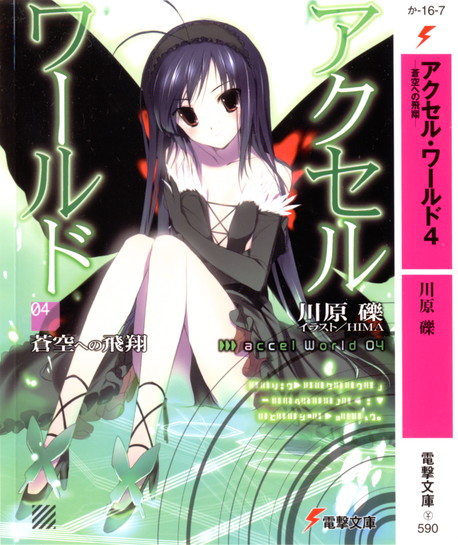
アクセル・ワールド４
─蒼空への飛翔─
日常で〈ブレイン・バースト〉を巧みに使いこなし、中学内格差の頂点に君臨する謎の新入生・能美征二。ハルユキは、能美の絞滑な策略によって自身の〈翼〉を奪われ、完全敗北を喫した。
──しかし、ハルユキは、再び立ち上がる。
〈もう下を向いて歩かない〉と心に決めたハルユキは、親友・タクムと共に〈ダスク・テイカー〉へ反撃を開始する。キーとなるのは、〈心意システム〉、〈スカーレット・レイン〉、そして〈メイド服少女〉!?
最強のカタルシスを以てしておくる、次世代青春エンタテイメント！
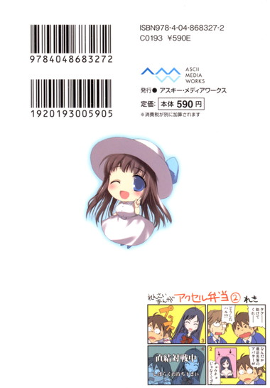
川原 礫
コタツから出たくないけど自宅では何も書けないというジレンマに苦しんでいます。ファミレスにコタツがあればいいのになあ......。あとテレビも。あとＰＳ３も。
イラスト：ＨＩＭＡ
10月３日生まれ。挿絵は今シリーズが初のイラストレーター。『電撃萌王』小冊子への寄稿を見た文庫編集者が、今回の挿絵依頼をオファーしたことがきっかけ。本業仕事の合間を縫って、ブログやＳＮＳサイトなどでイラストを発表している。
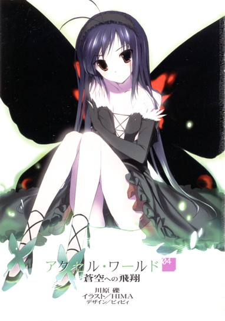
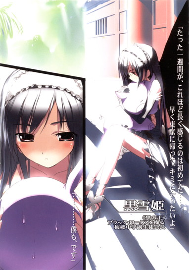
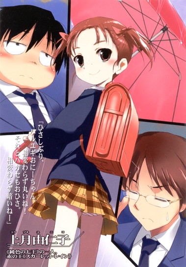
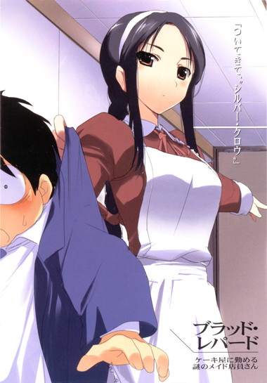
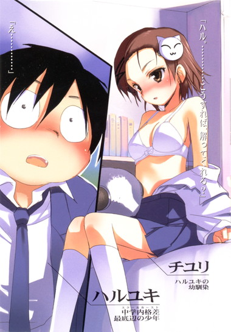
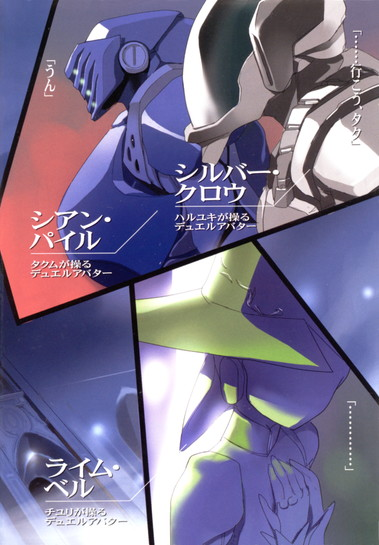
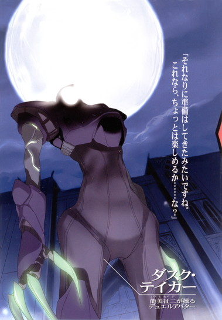
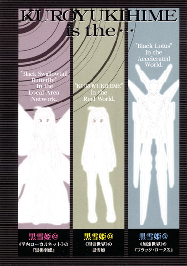
アクセル・ワールド 04
蒼空への飛翔
■黒雪姫（クロユキヒメ）＝梅郷中学の副生徒会長。清楚怜悧なお嬢様。その素性は謎に包まれている。学内アバターは自作プログラムの『黒揚羽蝶』。デュエルアバターは〈黒の王〉『ブラック・ロータス』。
■ハルユキ＝有田春雪（アリタ・ハルユキ）。梅郷中学二年生。いじめられっ子で太り気味。ゲームは得意だが、内向的。学内アバターは『ピンクのブタ』。デュエルアバターは『シルバー・クロウ』。
■チユリ＝倉嶋千百合（クラシマ・チユリ）。ハルユキの幼馴染。お節介焼きな元気娘。学内アバターは『銀色の猫』。デュエルアバターは『ライム・ベル』。
■タクム＝黛拓武（マユズミ・タクム）。ハルユキ、チユリとは幼少期からの知り合い。剣道が得意。デュエルアバターは『シアン・パイル』。
■能美征二（ノウミ・セイジ）＝梅郷中学に進学してきた新一年生。その素性は謎に包まれているが、学校生活でも〈ブレイン・バースト〉を使用し、中学内格差（スクールカースト）の頂点に立っている。デュエルアバターは『ダスク・テイカー』。
■ニューロリンカー＝脳と量子無線接続し、映像や音声など、あらゆる五感をサポートする携帯端末。
■学内ローカルネット＝梅郷中学内に構築されたローカルエリアネットワーク。出席確認や授業などに利用され、梅郷中の生徒は常時接続が義務となっている。
■グローバル接続＝世界中のネットと接続する行為。梅郷中学内ではグローバル接続は禁止されており、その代わりに学内ローカルネットが提供されている。
■ブレイン・バースト＝黒雪姫からハルユキに転送されたニューロリンカー内のアプリケーション。
■デュエルアバター＝ブレイン・バースト内で対戦する際に操るプレイヤーの仮想体。
■軍団＝レギオン。複数のデュエルアバターで形成される、占領エリア拡大と利権確保を目的とする集団のこと。各々、〈純色の七王〉がレギオンマスターを担っている。
■通常対戦フィールド＝ブレイン・バーストのノーマルバトル（１対１格闘）を行うフィールドのこと。現実さながらのスペックを持つが、システムはあくまで一昔前の格闘ゲームレベルのもの。
■無制限中立フィールド＝レベル４以上のデュエルアバターのみが許可されるハイ・プレイヤー向けのフィールド。〈通常対戦フィールド〉とは段違いのゲームシステムが構築されており、その自由度は次世代ＶＲＭＭＯにも全くひけを取らない。
■運動命令系＝アバターを制御するために扱うシステム。通常はすべてこのシステムによってアバターは操作される。
■イメージ制御系＝自身が強く想像（イメージ）することによってアバターを操作するシステム。通常の〈運動命令系〉とはメカニズムが大きく異なり、扱えるものはごく少数。〈心意〉システムの要諦。
■心意（インカーネイト）システム＝ブレイン・バースト・プログラムのイメージ制御系に干渉し、ゲームの枠を超えた現象を引き起こす技術。〈事象の上書き（オーバーライド）〉とも言う。
１
「なん......で」
自分の喉から、ひび割れ、潰れた声が流れるのを、ハルユキは聞いた。
「なんでだよ............、チユ」
〈煉獄〉ステージの冷たい風が、虚ろな問いかけを巻き上げ、黄色い空へと飛散させた。しかし答えはなかった。校舎の屋上に佇む若草色のアバター〈ライム・ベル〉──倉嶋千百合は、ハルユキの視線を避けるように顔を伏せ、右手で鉄柵を握ると、そのままかしゃりと音を立てて座り込んだ。
代わりに応じたのは、ごく低い、歪んだ笑い声だった。
「ふ............、ふ、ふ」
少し離れた地面に、手足を投げ出して仰臥する宵闇色のアバターが、レンズ状のマスクを小刻みに震わせていた。
「ふふ......ふ、なんて......なんて凄いんだ......。これが〈回復アビリティ〉......まさに奇跡の力だ......ふふ、ははは............」
密やかに笑い続けるアバターの全身は、つい数十秒前までの深手が嘘のように修復され、艶やかな黒紫に輝いている。回復現象は本体だけに留まらず、破壊されたはずの右腕の火炎放射器すらも復元している。
ハルユキ──〈シルバー・クロウ〉と、すぐ背後で立ち尽くすタクム──〈シアン・パイル〉は、梅郷中学校をフィールドとした激戦の末、一度は宵闇のアバター〈ダスク・テイカー〉を撃破した。ハルユキとの空中戦に於いて両腕を吹き飛ばされ、落下するところをタクムの必殺技に貫通されて、あとは通常技の一撃でＨＰゲージを全損するところまで行ったのだ。
しかし、そこに割って入ったのが、突然屋上に出現したライム・ベルだった。
彼女の左腕から放たれた光のシャワーに包まれた途端、ダスク・テイカーのＨＰは急激に回復し、今や右端まで煌々と輝いている。
「なんで......、なんでだ、チユ!!」
ハルユキはもう一度校舎を見上げ、喉も裂けよとばかりに絶叫した。
ダスク・テイカーは敵だ。そのアバターを駆る新一年生・能美征二は、〈ブレイン・バースト〉所持者でありながらマッチングリストに出現せず、剣道部の試合や実力テストで加速能力を放埒に行使している。
それに留まらず、ハルユキを罠に掛けて放校処分直前まで追い込み、対戦では必殺技〈魔王徴発令〉を用いてシルバー・クロウの翼を奪っていった。一度は完全に折られた心をどうにか奮い立たせ、長い苦闘の末に新たな力を得て、ぼろぼろになりながらも勝利を掴みかけたのだ。それをなぜチユリが邪魔しなくてはならないのか。
混乱の極みに突き落とされ、ハルユキは銀面の下で両眼を見開いて、ただひたすらにライム・ベルを凝視することしかできなかった。
チユリは何も言おうとせず、屋上の柵を握り締め、大きな帽子の鍔に顔を隠し続けた。
その華奢な肩が、何かに耐えるように激しくわなないているのを見た途端──。
ハルユキを、雷撃にも似た洞察が打ち据えた。
──なぜ？ 決まっている。
──能美だ。能美征二が、恐らくは今日の昼休みのあいだにチユリに接触し、自分に従うよう要求したのだ。ハルユキにそうしたように、何らかの弱みを握り、脅迫した。それしか有り得ない。
ぐるりと視線を戻したハルユキの目の前で、横たわったまま尚も軋るように笑いながら、ダスク・テイカーが背中の黒翼をいっぱいに広げた。
闇を切り出したようなその羽根がゆるりと空気を打ち、細身のアバターは不可視の糸に引かれて徐々に直立していく。
「ふふふ......く、くくくく............」
悦に入った喉声がみるみるボリュームを増す。昆虫の複眼に似た照りのあるバイザーの奥で、赤紫色の両眼が激しく明滅する。
「くく、は、ははは。〈飛行アビリティ〉。そして〈回復アビリティ〉。とてつもなく稀少な二つの力が......今や両方ボクのものに......」
完全に立ち上がったアバターは、そのまま三十センチほど浮揚して停まった。再生した両腕をがばっと左右に開き、ダスク・テイカーは鉤爪状の十指を空に向けた。その手から、どす黒い闇のオーラが粘液のように激しく迸った。
「ああ......なんて気持ちいいんだ！ この強奪の快感！誰かの夢を、希望を、可能性を奪い、踏みにじるこの全能感は......まったく堪らないな......!!」
幼い少年の声で発せられる醜悪な快哉が、物理的な圧力となってフィールドに拡散し、傷だらけのハルユキのアバターをぐらつかせた。
しかしそれを意識することもなく、ハルユキはヘルメットの下から、様々な感情のノイズにまみれた声を押し出した。
「............お、まえ」
やや高い位置に浮く黒紫色のアバターに向かって、一歩詰め寄る。
「能美......お前、何をした。チユに何をしたんだ」
それを聞いたダスク・テイカーは、ゆらりと顔を動かし、ハルユキを見下ろした。
ハーフグロスの球面バイザーの奥で、細い両眼が一度ゆっくりと瞬き──。
毒々しい、極限までの嘲りに満ちた笑みを無音で形作った。
ハルユキの視界が、さっと血の色に染まった。あらゆる混沌とした感情が、針先のような一点へと収斂した。即ち、能美征二への圧倒的な憎しみへと。
「能......美ぃ......」
呟きながら、ハルユキは残された右手の指を無意識のうちに剣の形に揃えた。いぃぃぃん、と高い共鳴音が生まれ、指先に銀色の光が明滅する。
渦巻く憎悪がノイズとなり、〈銀の剣〉のイメージの形成を妨げたか、光はなかなか安定しなかった。それに構わず、ハルユキは右腕を大きく振りかぶり、ダスク・テイカーに向かって斬りかかろうとした。
しかし、一瞬早く。
「う......あああああ!!」
血を吐くような叫び声とともに、ハルユキを右から追い越す青い影があった。
シアン・パイルだ。先の戦闘で装甲を焼かれ、まだ煙を上げている重量級アバターが、地響きを立てながら突進していく。
「チーちゃんを......泣かせたなああああッ!!」
どんな時も冷静さを失わず、ハルユキの暴走を抑える役だったはずのタクムは、幼い子供のように喚きながら闇雲に能美へと飛びかかろうとした。
重戦車の如き猛烈なチャージを目の当たりにしても、ダスク・テイカーはわずかにも動こうとしなかった。
華奢な右手がゆらりと持ち上がり、鋭く尖った五指がいっぱいに開かれた。同時に、言葉が短く吐き捨てられた。
「もう消えろ」
びゅああっ!! という異質な振動音とともに、右手が紫に光る虚無の波動に包まれる。それはすぐに形を変え、全ての指の先端から爪、いや鎌となって長く長く伸びた。
五本の鎌は、肉薄するシアン・パイルの巨体を、正面から無造作に包み込んだ。首筋の両側、右脇、左肩、左脇の計五箇所に、湾曲する長大な爪の切っ先が触れ──。
直後、一切の抵抗感なく、さくりと中央に向かって閉じた。
「............っ!!」
無音で喘ぐハルユキの視線の先で、青い重量級アバターの上半身が、幾つかのパーツに分割された。
頭部と両腕が、切断面から恐ろしい量のスパークを引きながら宙を飛び、ダスク・テイカーの体を掠めてその後ろの地面にどさどさっと転がった。最後に、疾走フォームのままの下半身が、重々しい音とともに横倒しになった。
わずかなタイムラグに続いて、まるで切断という現象が先に在り、後にシステムがそれをダメージと認識した、とでも言うかのようにシアン・パイルのＨＰゲージが急減少を開始した。半減したところで黄色に変化し、残り二割で赤く染まり、尚もその幅を失い続け──。
ゼロへ。
分断されたアバターの残骸が、青白いポリゴンの断片を撒いて爆散した。ハルユキの目の前に、ダスク・テイカーがシアン・パイルを撃破した旨のシステム・メッセージが表示された。
「...............く。......く、く、ふ、は」
小刻みな笑い声が、夕闇色のアバターの口元から滴った。
「敗者というのは......どうしてこうも滑稽なんでしょうね。敗れたことを認めようとせず、醜く足掻いた挙句に最後のプライドまで奪われる。黛先輩はもっと知性派だと思ってたのに、まったく幻滅だなぁ。ま、所詮は脳まで筋肉のマッチョアバターだったってことかな、くくく、ふふ、ははははは!!」
両腕から闇のオーラを色濃く放射し、ダスク・テイカーは哄笑した。
その声を浴びながら、ハルユキは数秒間タクムの消えた場所をじっと見つめ、次に校舎の屋上で小さくうずくまったままのチユリを見た。
立ち尽くすハルユキの右手に宿っていた銀光の剣が、小刻みに明滅し、消えた。
戦意を喪失したわけではない。その逆だ。燃え盛る炎のように凶暴な破壊衝動がアバターの内部を駆け巡り、ハルユキの精神集中を乱した。
憎い。壊したい。ダスク・テイカーという名のデュエルアバターを──いや、その内部に宿る能美征二の意識そのものを滅茶苦茶に叩き潰し、切り刻み、ばらばらに引き千切って踏みにじりたい。
すでに世界は仮想のゲームフィールドではなく、戦いはダメージ数値のやり取りではなくなっていた。
これまでハルユキは、〈ブレイン・バースト〉を含むいかなるゲームに於いても、自分を破った敵手に対して悔しいと思いこそすれ、アバターを操る生身のプレイヤー本人を憎んだことはなかった。
だが今だけは違った。全身の血管を流れるどす黒い憎悪の温度は、悔しさの持つ熱量を遥かに超えていた。
────ナラバ、壊セ。
不意に、すぐ後ろで誰かが囁いた。
──壊シテ、喰ラエ。肉ヲ貪リ、血ヲ飲ミ干シ、全テヲ奪エ。
聞き覚えのある声だった。歪んだ低音に金属質の倍音が混ざるその声を、ハルユキはいつか、どこかで確かに聞いた。
しかし記憶を辿るよりも早く、氷の針を突き立てられるような強烈な冷感が、背筋の真ん中に生まれた。それは肩甲骨の間を深く穿ち、ハルユキの心臓にまで侵入し、そこから液体金属じみた冷気を全身へと解き放った。
極低温の飢えが、超高温の憎悪と融合した、その瞬間──。
視界が、中央に向けてぎゅうっと狭窄した。
煉獄フィールドの金緑色の地面も、生物じみたフォルムの校舎も、その屋上で項垂れるライム・ベルも、全てが揺れる闇の向こうへと消えた。見えるのは甲高い哄笑を続けるダスク・テイカーだけだった。
「のう............みぃ」
ハルユキの喉から、先刻聞こえた声と同じ金属質のエフェクトがかかった呻きが洩れた。
「能美......貴様......きさまぁ............」
荒れ狂う全ての感情が、残された右手の先端に、引き寄せられるように流れ込んだ。
〈心意システム〉──ブレイン・バースト・プログラムのイメージ制御系に干渉し、ゲームの枠を超えた現象を引き起こす技術──を発動させるためには、途轍もなく深い精神集中が必要となる。事実、ハルユキが心意によって具現化していた〈光の剣〉は、能美への憎しみに駆られた瞬間消えてしまった。
にもかかわらず。
突如、シルバー・クロウの右手から、ずあああっ！と重々しい振動音とともに長大な剣が伸びた。
しかし、その色は、かつての清らかな白ではなかった。
あらゆる光を吸い込み打ち消すような、漆黒の刃。能美が具現化している黒紫色の爪よりもいっそう深い、飢餓的な闇の色だった。
「............ん？」
シルバー・クロウの異変に気付いたダスク・テイカーが、笑いを収め、短く呟いた。
「おや......まだ何かする気ですか、有田先輩？相方さんに付き合って、仲良く同じ醜態を晒すつもりなのかな？」
その嘲弄に応じる精神的余裕はなかった。ハルユキは、自身の思考そのものが右手の剣に吸い込まれていくのを感じていた。あとに存在するのはただ、眼前の敵を切り刻みぐちゃぐちゃに破壊し尽くしたいという衝動それのみだった。
────ソウダ。喰ラウ。喰イ散ラス。
凶暴な声が、頭の中心で囁いた。
それに駆り立てられるように、ふらりと右足を一歩踏み出し。
直後、猛然と地面を蹴った。
「う......おああああ!!」
吼えながら、右手に宿る闇の剣を頭上に高々と振りかざす。突撃の速度とアバターの全重量、荒れ狂う憎しみの全てを剣尖に乗せ、浮遊するダスク・テイカーの顔面目掛けて斬り降ろす。
何の工夫もないハルユキの真正面からの斬撃を、剣道選手でもある能美が避けられないはずはなかった。だが紫色のアバターはその場からわずかにも動こうとせず、シアン・パイルに対してそうしたように、ただ右手を広げて黒い刃を掴み止めようとした。
ハルユキの具現化した剣と、能美の具現化した五本の鎌が、空中で接触した。
二人の心意攻撃は、先の戦闘では、触れた途端激しく互いを弾いてせめぎ合ったはずだった。
しかし今回はまったく逆の現象が発生した。即ち、漆黒の刃と黒紫の鎌が激突した瞬間、その一点を中心として闇が渦巻き、互いを吸い込もうとしたのだ。
「むっ............」
ダスク・テイカーが小さく声を洩らした。
「同属性の攻撃......!? どういうことだ......？」
眼を細め、じっと現象を観察する気配。対するハルユキは、もう何も考えられず、ただ右手を振り抜かんとありったけの力を込め続けた。
「う......ぐ、おおっ............」
マスクの下で歯を剥き出し、唸り声を上げる。
「消えろ......消えろ能美！ オレの前から......いなくなれえええええ!!」
びゅああっ!! と右手の剣が震え、接触点で渦巻く闇が勢いを増した。能美の指から伸びる鎌が、切っ先からぐにゃりと崩れ、呑み込まれかける。
「ちっ......」
舌打ちし、能美は左手にも紫の鎌を生み出すと、右手の鎌に重ねてハルユキの剣を掴んだ。小型のブラックホールじみた闇がいっそう強く吹き荒れ、地面から金属の蟲や何かの破片といったオブジェクト群が吸い上げられて、一瞬の閃光を残して消滅していく。
「小賢しいっ......!!」
ダスク・テイカーが叫び、両手から迸る紫の波動が勢いを増した。
「ぐ......おおおおっ......!!」
ハルユキの喉からも、獣じみた吼え声が迸った。
異常な重力が演算された結果か、厚く垂れ込める雲までもがゆっくりと回転し、地上に向けて漏斗状に引き寄せられつつあった。校舎の窓が立て続けに割れて鋭いエフェクト光を散らし、雷光じみたスパークを追って地面に放射状の亀裂が走った。
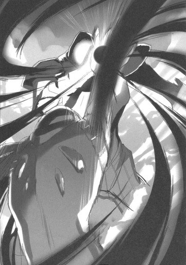
そして、幾つかのことが同時に起きた。
「やめて......もうやめてよ────!!」
泣き声混じりのチユリの悲鳴がステージいっぱいに響き。
「消え......ろおおおおおお────!!」
ハルユキの咆哮がそれを圧して轟き。
視界上部に表示された残り時間が、ゼロへと到達した。
ＴＩＭＥ ＵＰ!! の文字が目の前に燃え上がり、デュエルの終了を告げた。
バトルロイヤル・モードのリザルト画面を経て加速状態が解除され、放射光の環をくぐって現実世界に帰還した時、ハルユキは対戦の開始前に自分が何をしていたのか──ここが何処でいまが何時なのかすら、咄嗟に思い出せなかった。
赤茶色の高反発素材で舗装された陸上用トラックが、目の前にまっすぐ伸びている。前方を、ジャージ姿の男子生徒が何人も走っている。
そしてハルユキ自身も、両脚でどたどた地面を蹴っていた。耐え難いほど緩慢な生身の動きに意識が合流しきれず、危うく転びそうになり、両手を振り回してどうにか持ちこたえる。トラックの内側に座る生徒たちと、ハルユキの左を並走する男子が、どっと笑った。
──そういえば、三千メートル走の計測中だったんだ。今は火曜の五時間目......体育の授業中だ......。
呆然とそう考えてから、ハルユキは突如、腹の底からマグマのように噴き上がってくる感情を自覚した。
──僕はいったい、何をしているんだ。
──体育の授業？ 長距離走？そんなのどうだっていい！僕はあいつを......能美征二を、何が何でも叩き潰さないといけないんだ!!
「ううっ......！」
抑制しきれない唸り声が低く洩れた。歯を食い縛り、彼方のゴールラインを睨んで、ハルユキは憤激の全てを両手両脚に込めた。どったどったと重苦しく響いていた足音がピッチを上げる。体が自然に前傾する。
視界下側に表示される計測タイムの横に、赤いＲの文字が瞬いた。個人記録を更新するペースだと知らせているのだ。しかしそれを意識することなく、ハルユキは残る九十メートルを全力で駆けた。前を行く生徒たちを追い抜けこそしなかったが、明らかに距離を詰めたハルユキのラストスパートに、クラスの男子たちが軽くどよめいた。
だがその声も、ゴールラインを踏んだ途端目の前に点滅した個人新のタイムも、ハルユキはまったく気に留めなかった。それどころか足を止めることすらせず、そのまま一直線に昇降口目指して走ろうとした。
「おーい、どこいくんだ有田ー？ トイレかぁー？」
体育教師ののんびりした声と、生徒たちの笑い声が聞こえたが無視する。
無論、トイレを目指しているのではない。校舎の三階まで駆け登り、能美征二の教室に殴りこむつもりだった。
生身の能美を直接締め上げ、強引に直結して、今度こそ完膚なきまでに屈服させる。それが不可能なら、いっそ首からニューロリンカーを毟り取り、踏み砕き、コアチップを破壊する。
そのような蛮行を思いとどまる必要があるだろうか？チユリを脅迫し、意に従わせるなどという卑劣極まる挙に及んだ相手に？
強烈な暴力衝動が湧き上がるたび、背中の一点がずくんと疼いた。いや、衝動はそこから無限に生み出されているようにも思えた。
「待ってろ......！」
吐き捨てるように叫び、いっそう激しく地面を蹴ろうとした──その時。
がしっ、と力強い手が背後からハルユキの左肩を押さえた。
「やめるんだ、ハル！」
同時に耳元で押し殺した声が響き、ハルユキは反射的に制動をかけた。デュエルアバターのように格好良くは止まれず、つんのめって倒れこむところを、腕を掴まれて引き戻される。
その姿勢で深く俯いたまま、ハルユキは掠れ声を絞り出した。
「......タク、なんで止める！」
タクム──黛拓武は、筋肉質の右腕で強くハルユキの左腕を抱え込みながら答えた。
「ここでハルが暴力事件を起こして停学になったりしたら、チーちゃんがいっそう辛くなるだけだ！」
「......もう充分辛い目に遭ってるだろ！能美は......あいつは、チユを脅して、無理やり言うことを聞かせたんだぞ！許しておけるかよ！」
ここで初めて、ハルユキは振り向いてタクムの顔を見た。
いつも涼やかな両眼が、スポーツタイプの眼鏡の奥で強い苦悩に歪んでいるのに気付き、ぐっと息を詰める。
そう──タクムが何も感じていないわけはないのだ。胸の中では、ハルユキ以上にチユリを案じ、能美の仕業に憤っているはずだ。
だがこの幼馴染は、同時にハルユキをも案じてくれている。ハルユキ自身はと言えば、ただ怒りに駆られるだけで、タクムには一切思いを致そうとしなかったというのに。
ずきんと一度背中が疼いたが、それを最後に、嵐のような暴力衝動は遠ざかっていった。大きく空気を吸い、わななく喉から長く吐き出してから、ハルユキは肩の力を抜いてぽつりと言った。
「............お前だって、さっき、オレより早く能美に飛びかかってったくせに」
するとタクムは、ふ、と短く苦笑を洩らした。
「まったくね。あんなふうにキレたの何年ぶりかな......」
能美に翼を奪われた日、自宅で言い合いをしてからずっとタクムとの間にあったわだかまりが、すうっと溶けて消えていくのをハルユキは感じた。二人はそのまま校庭の片隅で立ち尽くしていたが、やがて、背後のトラックで全生徒のタイム計測が終わったようで、教師がぱんぱんと両手を叩いて集合を掛けた。
「......戻ろう、ハル」
タクムの言葉にゆっくり頷き返してから、ハルユキは小声で付け加えた。
「チユには、お前から言ってくれよ。能美に何を言われたにせよ、あんな奴に従う必要なんかこれっぽっちもないって」
「ああ、解ってる。チーちゃんは、ぼくが......いや、ぼくたちが守るんだ」
一瞬視線を見交わし、二人は踵を返した。
ハルユキは、最後にもう一度だけ校舎の三階部分を睨み、胸の奥底で呟いた。
────能美、お前は絶対にしちゃいけないことをした。いまこの瞬間から、お前との戦いは時間無制限のデスマッチだ。お前が加速対戦をブロックしている手段を何が何でも看破して、どっちかのバーストポイントがゼロになるまでひたすら戦い続ける。
ぎゅっと奥歯を噛み締め、ハルユキはタクムと並んで、集合場所へと歩き始めた。
しかし、それからわずか十分後。
事態はまたしてもハルユキの予想を裏切る方向へと進んだ。
五時間目が終わるや否や、ハルユキとタクムは本校舎の向こうにある体育館へとダッシュした。ちょうど渡り廊下に出てきたチユリを発見し、柱の陰からぶんぶん手招きする。
Ｔシャツに短パン姿のチユリは、二人を見た途端顔を強張らせた。それも当然だろう、ほんの数分前に彼女は初めて実戦のフィールドへとダイブし、ハルユキたちの敵であるダスク・テイカーを〈回復〉した、いやさせられたのだ。結果、シアン・パイルはＨＰゲージ全損により敗北。シルバー・クロウもタイムアップに伴って判定負けし、揃って能美にポイントを奪われた。
しかし、自分たちはそれを責めに来たわけではない、という意思を精一杯表情に込め、ハルユキはぎこちない笑みを浮かべながら腕を動かし続けた。チユリは俯き、視線を逸らせる様子だったが、やがて更衣室に向かうクラスメイトたちに何か言ってからハルユキたちのほうへと近づいてきた。
激しい運動をした直後にもかかわらず、薄く青ざめたチユリの頬を見ると、胸中に再び能美への激しい怒りが湧き起こった。隣のタクムも一瞬ぎゅっと拳を握ってから、大きく息を吸って口を開いた。
「......チーちゃん。君がなぜあんなことをしたのかは、もう解ってるつもりだよ。だから、ぼくらはただ、あいつに従う必要はないんだって言いに来たんだ」
「そ......そうだよ」
ハルユキも懸命に言葉を添えた。
「あいつも今頃は、チユの力を怖れてるはずだ。ＨＰだけじゃなく、壊れた武装まで回復するほどの能力があれば、オレたちはあいつと充分戦える......いや勝てるんだ！」
それを聞いたチユリの眉が、一瞬きゅっと寄せられた。何かを考え、迷うような仕草。
数秒後──。
「違うよ」
という第一声が、チユリの口から静かに発せられた。
「え......ち、違うって......？」
唖然として聞き返すと、チユリは打って変わって両眼に強い光を浮かべ、ハルユキとタクムを順に見つめてからもう一度言った。
「違うの。あたしは、能美に無理やり従わされたわけじゃない」
「チーちゃん......な、何を......？」
今度ばかりはタクムも驚いたようで、激しく瞬きしながら一歩踏み出そうとした。それを避けるように身を引き、チユリは静かに、しかしきっぱりと答えた。
「あたしから能美に頼んだの。仲間にしてって。あんたの専属ヒーラーになるから、ポイントをきっちり供給して、って。別にいいでしょ、あたしはまだハルたちのレギオンに入ったわけじゃないんだから」
愕然と立ち尽くす二人から、更にもう一歩距離を取り、チユリは続けて言った。
「あたしたちと〈ネガ・ネビュラス〉は、今後不干渉で行きましょ。互いにリアル割れしてるわけだし。もちろん、能美とハルの間の契約は別の話だけど」
状況を把握できず、白飛びしたような意識の中でも、チユリの言う〈契約〉が何を指すのかは理解できた。それはつまり、ハルユキが能美に対して毎週10バーストポイントの上納を二年間続ければ〈飛行アビリティ〉を返してもらえる、というアレだ。
今後、互いに争う気はない。しかし、能美がハルユキからポイントを巻き上げることには関知しない。チユリはそう言ったのだ。
それもショックだったが、しかしそれ以前に、チユリが能美と自分のことを〈あたしたち〉と呼んだこと自体がハルユキに巨大すぎる衝撃を与えた。これまで何年間にもわたって、チユリが〈あたしたち〉と言う時は、そこに含まれるのは彼女とハルユキ、そしてタクムの三人だけだったのだ。
凍りつく二人から視線を逸らし、横顔を見せたチユリは、短く「じゃ」とだけ言った。
そしてさっと身を翻し、更衣室に向かって駆けていった。
後には、長年慣れ親しんだミルクのような甘い匂いだけが残された。
２
学校で嫌なことがあり、打ちのめされた気分で下を向きながらトボトボ自宅まで帰る。
という経験は、ハルユキにとってはごく日常的なものだった。去年、同級生に手酷くイジメられていた頃は、毎日のように歩道の舗装タイルを数えながら帰宅したものだ。
しかし、隣にタクム──あの黛拓武が肩を並べ、ハルユキとまったく同じように項垂れ、同じように足を引き摺っているというのは人生初の体験だった。
体調不良を口実に剣道部の練習をサボったタクムと並んで、梅郷中から自宅マンションまでの道を無言で歩いたハルユキは、正面ゲートをくぐったところでボソリと言った。
「ウチ、寄ってけよ」
「............うん」
力なく頷くタクムを伴ってエレベータに乗り、二十三階で降りる。無人の自宅のドアを開け、リビングルームに入ると、鞄を床に放り出して食卓の椅子に座る。
タクムも向かいに腰を下ろし、二人はそのまましばし黙り込んでいた。
──こんな風に向き合って座ったこと、前にもあったな。
とぼんやり考え、それがほんの二十四時間前──つまり月曜の放課後の出来事であったことにようやく気付く。
昨日の休み時間、ハルユキは能美征二と初めて対戦し、彼の必殺技によって背中の銀翼を奪われた。
ハルユキと、その場に居合わせたチユリの様子がおかしいことをタクムが訝り、部活が終わったあと訪ねてきてまったく同じ場所に座ったのだ。あの時ハルユキは、自虐的な気分のままにタクムに酷い台詞を浴びせ、したたか殴られた。その後、バスで渋谷区まで出かけて自暴自棄な加速対戦に挑み、顔なじみのバイク使い〈アッシュ・ローラー〉に無気力さを詰られ、彼に無制限中立フィールド内の旧東京タワーまで強引に連れて行かれた。
そこで引き合わされたのが、アッシュ・ローラーの親にして元ネガ・ネビュラスメンバー、〈スカイ・レイカー〉だった。彼女はハルユキに、バーストリンカー究極の力・〈心意システム〉の存在を伝え、それを習得させるべく超スパルタ式の特訓を施した。
ハルユキが心意の初歩の初歩を体得するのに、一千倍に加速された世界で実に一週間という時間が必要だった。
だから、ある意味では、タクムと向き合っている今の状況をだいぶ前のことと感じるのは当然なのだ。
ハルユキは無意識のうちに右手を持ち上げ、昨日の休み時間に能美に殴られた下顎と、放課後にタクムに殴られた右頬を順になぞった。見た目にはもうほとんど跡は残っていないが、ぴりっと引き攣れるような痛感が走った。
......いくら精神を加速し、別世界に閉じこもっても、肉体の傷......つまり現実の痛みを癒したりはできないんだ。
そんなことを思っていると、ハルユキの仕草を眼に留めたタクムが、自嘲的な笑みを滲ませて呟いた。
「ハル。君を殴った時は、チーちゃんが幸せになってくれれば相手は誰でもいい、なんて言ったけど......あれは取り消すよ。ぼくには、とても受け入れられそうにない。チーちゃんが、あの能美征二のパートナーになる......なんてことは」
ぱたりと手をテーブルに落とし、ハルユキも虚ろな声で応じた。
「受け入れるとか以前に......オレには信じらんねーよ。そりゃ確かに、ブレイン・バーストには、リアルの友達同士が必ず同じチームに入らなきゃなんないなんてルールはないけどさ......あのチユが、ポイント目当てにオレたちを裏切って能美につくなんて......」
「まあ、ポイント稼ぎだけ考えれば、ぼくらより能美と組んだほうが効率いいのは確かだろうけどね。ハルの翼を奪った今、ダスク・テイカーの戦闘力はもう反則的なレベルだ......あれが〈ヒーラー〉のライム・ベルと組んで対戦デビューしたら、まともに勝負できるバーストリンカーはミドルレンジにはいやしないよ」
「凹んでるわりには冷静な判断だなぁ、ハカセ」
今度はハルユキが苦笑を浮かべたが、すぐにため息がそれを押し流した。
「でもなぁ、タク......。チユだぜ。あのゲームセンス皆無、ヘタすりゃＲＰＧのイベントバトルですら全滅しかねないチユが、ポイント効率なんて判断できると思うか？」
「そ、そりゃ......思わないけど、まったく......」
ぼそぼそとではあったが、親友と話しているうちにようやくチユリの訣別宣言に受けたショックがわずかながら緩んできたハルユキは、のそりと立ち上がるとキッチンに向かった。
大型フリーザーから冷凍ピザの箱を取り、そのままレンジに放り込む。烏龍茶のボトルも出すと、グラスを二つ用意する。ほんの数十秒で解凍・加熱の終わったピザとともにテーブルまで運び、適当に並べる。
「......ありがとう」
呟くタクムのグラスにお茶を注いでから、箱を開けてシーフードピザを一切れ摘み上げる。細くチーズの糸を引くその先端に、あぐりと齧りつこうとしたところで、ふと耳の裏側に聞こえる声。
あーっ、またそんなもの食べて！
しょうがないなあ、ママに何か作ってもらうわよ。
しかしもちろん、それは現実の音声でも、ニューロリンカーが再生したＰＣＭファイルですらなかった。ほんの数日前、チユリが持ってきてくれたラザニアの味が舌に甦りかけ、ハルユキはそれを上書きするべく大量生産品のピザにがぶりと噛み付いた。
俯き、妙にしょっぱい味のピザをもぐもぐ咀嚼していると、ずっと洟をすする音がした。視線だけそっと上向ければ、同じく顔を伏せてピザを食べながら、盛んに眼鏡の下を擦っているタクムの姿があった。
突然、それまでとは違う痛みが、ずきんと胸を貫いた。
──タクは、こいつはいつも冷静で、僕なんか足元にも及ばないほど利口だけど......でも、決して打たれ強い奴じゃない。
──僕が翼を奪われて投げ遣りになってた時、こいつは全力で僕を助けようとしてくれた。なら、今度は僕の番だ。僕がこいつを励まし、背中を支える番なんだ。
心の奥でそう呟き、ハルユキは両眼を瞑ると、ガツガツガツと一気にピザを消滅させた。グラスいっぱいの烏龍茶を飲み干し、音高くテーブルに戻す。
「タク！」
叫ぶと、タクムはびくっと肩を震わせ、赤くなった眼を向けてきた。正面から見返し、ハルユキは続けて言った。
「タク、オレはチユを信じる！ だから、あいつの言ったことは信じない！」
「え......？」
「さっきも言ったろ。ポイントが欲しいから能美と組む？そんなの、ぜんぜんチユらしくねえよ。だからその可能性はまるごと排除する。たぶん......いやきっと、九割がたはオレたちの最初の推測が真実なんだ。チユリは能美に脅されてパートナーにされ、オレたちにはああ説明するように強要された。そのほうがよっぽど納得できる、そうだろ」
グラスを握り締めたまま、ハルユキが勢いよく連ねた言葉を、タクムはしばし吟味しているようだった。
やがて、やや落ち着きの戻った声で、ゆっくりと応じた。
「うん......、確かに、そうかもしれない。でもハル、君の説明にはちょっと矛盾があるよ。〈まるごと排除〉するのに〈九割がた〉？残り一割はつまり、チーちゃんが自発的に能美についた可能性もある、ってことだろ？」
「ああ......。でも、理由が違う」
「理由......？ ポイント以外に何か、チーちゃんがぼくらの敵に回る理由があるっていうの？」
首をかしげるタクムを上目遣いに見て、ハルユキは本能的に肩を縮めながらぼそっと言った。
「つまり、その......オレたちのレギオン、ネガ・ネビュラスの頭首は......あの人なわけで......」
途端、タクムは虚を突かれたように何度か瞬きした。その顔にも、すぐにハルユキの顔にあるのと同じ種類の畏れが浮かんだ。
「そ、そうか......。──チーちゃんが、マスターの......黒雪姫先輩の配下になるなんて冗談じゃない、って思ってる場合か......」
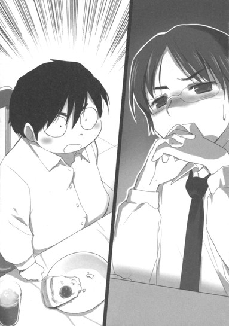
「絶対ない、って言えるか？」
ハルユキの問いに、タクムは実に複雑な表情で首を左右に振った。続けて長く息を吐き、呻くように言い添える。
「でも、そうなるといよいよ、この状況をマスターに知らせて助太刀してもらう、ってわけには行かなくなったね......。マスターのことだ、チーちゃんがぼくらを裏切って能美をヒールした、なんて知ったら......」
「ダスク・テイカーごとライム・ベルもばっさりやりかねないよな......」
レギオン〈ネガ・ネビュラス〉頭首たる〈黒の王〉、レベル９デュエルアバター〈ブラック・ロータス〉を操る黒雪姫の性格の苛烈さは、今更思い浮かべる必要もなかった。一度敵と定めたならば、両手の剣で容赦なく斬り倒す。その大原則を、黒雪姫がチユリにだけ適用しないでくれるとは中々──いや確定的に考えにくい。
ハルユキは、一度テーブル表面に落とした視線をぐいっと持ち上げ、タクムの顔を見ながらも、自分にも言い聞かせるように言った。
「先輩が修学旅行から帰ってくるのは土曜の夜だから、あと四日だ。その間にオレたちが解決するしかない」
「解決、って......どうやって......」
「チユが脅迫されているにせよ、万が一自発的に行動しているにせよ、能美を倒せば......あいつをブレイン・バースト喪失まで追い込めば、それで全部終わりだ。そうだろ」
ハルユキの言葉に、タクムは大きく呼吸してから微苦笑を浮かべた。
「簡単に言うけどね、ハル。たとえ能美がマッチングリストに出てこない仕組みを暴けたとしても、あのダスク・テイカーをポイント全損させるのに、いったい何回勝たなきゃならないのか......」
「どうかな」
短く呟き、ハルユキは考え考え続きを口にした。
「梅郷中に入学したばっかりの能美は今、実力テストや剣道部の試合を通して自分のポジションを築くために、凄いペースでポイントを消費してるはずだ。特に試合で使ってたのは、一回５ポイントも消費する物理加速コマンドだぜ。まだレベル５のあいつに、そこまで蓄積ポイントの余裕があると思うか......？」
「......そうか......。特に能美は、今のところ一般対戦してる様子もないからね。ポイント供給源は限られてるはずだ......」
眼鏡の奥で、少しばかり鋭さの戻った両眼を細め、タクムも頷いた。さっとハルユキを見返し、早口で続ける。
「でも、ハル。そうなると、マスターの帰京とは関係なしに時間との勝負だよ。〈飛行アビリティ〉に加えて専属の〈ヒーラー〉まで手に入れた能美は、満を持して対戦デビューするはずだ。タッグマッチ限定ならそうそう回数は戦えないだろうけど、それでもほとんどのデュエルで勝つだろうからね......」
「つまり、あいつがポイントを貯め始める前に首を取らなきゃならないわけだよな」
タクムと短く視線をぶつけ合ってから、ハルユキはきっぱりと言った。
「よし。あいつが対戦をブロックしてる仕組みは、オレが一人で何とか調べてみせる」
「な、何言ってるんだ。ぼくも一緒に......」
「いや、お前にはそのあいだにしてもらわなきゃならないことがある」
テーブルの上で両手をぎゅっと握り合わせ、やや声をひそめて──
「タク、お前は直接喰らったから憶えてるだろ。ダスク・テイカーの、両手で何でも削り取って無効化する技」
「あ......ああ。今でも信じられないよ」
自分の記憶を疑うかのように、タクムは小刻みに首を振った。
「あんなに激しく発光してるのに必殺技ゲージが減らないなんて......。いや、それ以前に、パンチやキックならともかく非実体攻撃の〈ライトニング・シアン・スパイク〉まで吸い込んだからね......。有り得ないほどの優先度だ、いったいどんなアビリティなのか......」
「あのな......あれは、システムに規定されたアビリティや必殺技じゃないんだ。どう言えばいいのか......オレも、うまく説明できないんだけど......」
眉を寄せ、懸命に言葉を探しながら、ハルユキは昨日得たばかりの知識をなんとかタクムに伝えようとした。
「あれは、バーストリンカーのイメージ力そのものをエネルギー源にする、言わば〈超必殺技〉なんだ。正確な名前は〈心意システム〉。心と意志の力によって具現化される、加速世界最強の攻撃力なんだよ......」
旧東京タワーの隠者〈スカイ・レイカー〉から教授された心意システムの要点と、自分がいかにして〈光の剣〉の心意を習得したかを余さず説明し終えるのに、たっぷり二十分近くを要した。
喋りながら、ハルユキは自分もまだあのシステムについて沢山の疑問を抱えていることを、改めて意識していた。
スカイ・レイカーの言いようでは、ゲームプログラムの穴を突いたバグ技とも思えるが、だとしたらなぜ管理者に対処されないのか？わざと放置しているとすればその目的はなんなのか？
確かに〈ブレイン・バースト〉は、マニュアルもなければガイドＮＰＣもいない不親切極まるゲームだが、心意システムの存在によりいっそう不可解さを増した感がある。このアプリケーションは、本当のところいったい〈何〉なのか......。
そんなことを考えつつも、ハルユキはどうにか知る限りのことを説明した。
聞き終えたタクムは、んぐんぐ烏龍茶を飲み干すハルユキを呆然と眺めてから、ようやく掠れた声で呟いた。
「......何て言うか......。──ハル、君もよくよく年上の女の人に気に入られる奴だね」
「さ、最初に突っ込むのソコか」
「だってさ......正直、心意とやらに関しては簡単には呑みこめないよ。イメージ力みたいなあやふやなものを現実の攻撃力に変える......って言われても、そんなのもう格闘ゲームの域を超えてるよ......」
「まあ、そうだよな。オレも、自分がどうやって剣を出してるかなんて説明できないし......」
まじまじと丸っこい両手の指を見つめながら、考え考え言う。
「......でも多分、心意ってのは、〈イメージすれば何でも実現する〉とかそんな大雑把なものじゃあないはずだ。アバターの属性とか......バーストリンカー本人の資質とか......そういうのと密接に関係してるんじゃないかな。たとえば、オレが手から剣を出せるようになったのは、シルバー・クロウの腕がもともとそういう形をしてたから、って気がするんだ」
「ふうむ......じゃあ、仮にぼくがハルと同じ修行をしても、同じように光の剣を出せるようになるとは限らない、ってこと？」
「かもな。でも、そうだとしたら、他にもっとタクに......シアン・パイルに相応しい心意の形があると思うんだ。問題はそれが何で、どんな修行をすれば習得できるのか、ってことだよな......。今にして思うとあの人、スカイ・レイカーは、最初からオレに最適化した修行法を見抜いたうえであの壁登りをやらせたんだ。これも多分だけど、心意システムを完全にマスターしてるハイレベルのバーストリンカーは、そういう心意の指導法みたいなのも心得てるんじゃないかな......」
タクムは軽く唇を噛んで考え込む様子だったが、やがて視線を伏せたまま口を開いた。
「となると、ぼくが〈無制限中立フィールド〉にダイブして闇雲に修行しても、その心意システムを会得できる可能性は低いってことになるね。誰か、システムを知悉してる人の指導がどうしても必要ってわけか」
「うん......。スカイ・レイカーならきっとタクにも教えてくれるはずだけど、問題は、連絡を取る方法がないってことだ......」
ため息混じりにハルユキが言うと、タクムも眉を寄せて「そうか」と呟いた。
「ＮＰＣじゃないんだから、ただ無制限フィールドの旧東京タワーに登るだけじゃその人には会えないよね。リアルで連絡をつけてから、時間を合わせてダイブしないと......」
「そうなんだよな。タワーの頂上で待ってればいつか会えるかもしれないけど、向こう側は一千倍に加速されてるんだから、何ヶ月、何年経っちゃうか見当もつかないよ。......一つだけ方法があるとすれば、スカイ・レイカーの〈子〉のアッシュ・ローラーと渋谷で対戦して、そこでアポ取ってくれって頼む手なんだけど......さ」
そこで言葉を切り、両手でぶにゅんと頬杖をつく。
するとすぐに、タクムが真面目な顔で器用に口真似をした。
「ヘイヘェーイ、甘えてんじゃねえぞこのスイーツ野郎。......って言われるね、間違いなく」
「へ、変な特技あるなお前。......まあ、言われるだろうなぁ、間違いなく」
実際、昨日スカイ・レイカーに引き合わせてもらっただけで、アッシュ・ローラーには巨大すぎる借りができてしまったのだ。この上、一応は敵対レギオンに属する彼に助力を求めるのは、バーストリンカーとしてあまりにも軟弱だと言わねばならない。
冷めかけたピザをもう一切れ取り、がぶりと齧りながらハルユキは懸命に考えた。
通常ならば、ハルユキの〈親〉でありレギオンマスターでもある黒雪姫に真っ先に頼むべきことだ。黒の王たる彼女なら、当然心意システムについても熟知しているはずだからだ。しかし今まで教えようとしなかったのは黒雪姫なりの理由があるはずで、頼めばすぐ教えてくれるという気もしないし、そもそも現在遥か南の沖縄にいる彼女と加速世界で会う方法はない。
ならばタクムの〈親〉に──と言いたいところだが、青のレギオンの幹部であった彼は、半年前の〈バックドア・プログラム事件〉の首謀者としてすでに青の王の〈断罪の一撃〉により加速世界から退場している。
他に心意システムを熟知していそうで、しかもハルユキたちに手を貸してくれる理由のあるバーストリンカーなど、おいそれと居ようはずも──
「......あ......あっ」
そこまで考えたところで、口からエビのかけらがこぼれたのにも気付かず、ハルユキは声を洩らした。
「そうだ......そうだよ。いるじゃないか、オレたちにでかい借りのある超ハイレベル様が、すぐ北の戦域にさ」
それを聞いた途端、タクムは口の端を軽く引き攣らせた。
「お......おいおい、ハル。君、まさか......」
「もうそれしかないよ。〈プロミネンス〉レギオンマスター、赤の王〈スカーレット・レイン〉。レベル９のあいつなら、絶対に心意システムをマスターしてるはずだ......」
声をひそめてそう言うあいだにも、ハルユキの脳裏には純色の七王の一角を占める真紅のアバターの姿が鮮やかに甦っていた。
本体の数倍に及ぶ巨大な強化外装の火力でフィールドごと敵を焼き尽くす赤の王。あれでもまだ心意システム抜きだというのなら、更に果てしなく〈その先〉があるのだということになってしまうが、その恐ろしすぎる想像はとりあえず脇に置いて、ハルユキは先を続けた。
「それだけじゃない、スカーレット・レイン......ニコの依頼でオレたちがえらい目に遭ったの、タクも忘れたわけじゃないだろ」
「そ、そりゃまあ、覚えてるけど」
ニコこと上月由仁子が、いきなり生身でハルユキの自宅に乗り込んできたのはほんの三ヶ月前のことだ。
彼女の目的は、自身のレギオンから出てしまった狂気のバーストリンカー、〈クロム・ディザスター〉の討伐をハルユキに手伝わせること。三次元機動が可能なディザスターを捕捉できるのは、翼を持つシルバー・クロウのみと判断しての依頼だった。
ハルユキは、タクム、黒雪姫ともどもミッションに挑んだのだが、その最中に襲ってきた黄のレギオンの大集団と予定外の死闘を繰り広げる破目となった。いや、実際にタクムは敵の大型アバターと相討ちになっている。
「でも、ハル。討伐に協力した見返りに、プロミネンスは今ネガ・ネビュラスと休戦してくれてるわけだろ？赤の王としてはそれで借りを返したつもりじゃないのかな？」
しかし当のタクムが懐疑的な口調で言うので、ハルユキは頬をふくらませて反駁した。
「そ、そんなの、カレーの恩をハヤシで返すようなもんだろ！」
「いやその喩えはよく解らないけどね......」
「と......ともかく、リアルで連絡のつく高レベルのバーストリンカーなんて、もう他にいないんだ。そして能美と戦おうと思ったら、最低でも奴の心意攻撃を防げるだけの力は絶対に必要だ。なら......ニコの気まぐれにでも賭けてみるしか......」
勢いを失ったハルユキの語尾に、タクムが大きく呼吸する音が重なった。
長身の親友は、長い前髪に俯けた顔を隠し、しばらく沈黙を保った。テーブルに置かれた右手が軽く握られ、その動きで、ハルユキは彼がいま能美征二との激闘を思い出しているのだと悟った。
やがて持ち上げられた顔には、今までとは違う強い眼の光があった。発せられた声もまた、薄暗いリビングルームに凛と響いた。
「うん、それはハルの言うとおりだ。対ダスク・テイカー戦、中盤までは互角に渡り合えてたと思うけど、あいつが心意を使い始めてからは悔しいけど何もできなかった。圧倒的な力の差を感じたよ。あいつを倒してチーちゃんを取り戻すつもりなら、ぼくがこんなとこで尻込みしてる場合じゃないんだ」
「タク......」
「それにね、ハル」
そこで一度言葉を切り、タクムは眼鏡越しにまっすぐ視線を合わせた。
「君の〈光の剣〉もダスク・テイカーの〈紫の波動〉と同じくらい......いや、それ以上に凄かった。あれをマスターするためにハルが大変な努力をしたことくらい、ぼくにも解るよ。君は......昔、ぼくと戦った時に言ったよね。君はリアルではぼくに勝てない。ぼくはバーチャルでは君に勝てない。だからぼくらは対等だ、って」
「あ......、い、いやあれは......」
対戦の勢いのままに言った台詞だ、というハルユキの弁解を右手で押し留め、タクムは続ける。
「でも......でもね、ぼくはそれが本当の〈対等〉だとは思わない。リアルでもバーチャルでもお互いに競い合い、認め合えてこそぼくらはそうなれるんだ」
そこで不意に、幼馴染はどこか昔を懐かしむような表情を作った。
「......小学生の頃、ぼくは新作のゲームを買うとすぐに攻略サイトを見てた。アクション系だけじゃない、ＲＰＧすらチャートの窓と並べてプレイして、それで冒険してる気になってた。だから、攻略法どころかマニュアルすらほぼ存在しないこの〈ブレイン・バースト〉は不安で仕方なかったよ。バックドア・プログラムなんて物に頼ったのはそのせいだったのかもしれないって、今になって思う。──でも、ぼくはようやく解ったんだ。お仕着せの展開なんて、このゲームには存在しない。何もかも、自分で立ち向かい、切り開いていかなきゃいけないんだ。〈心意システム〉が、プログラムの枠すら超える力だというなら......ぼくはそれをマスターしたい。君の......シルバー・クロウの隣に立ち続けるために」
タクムが口を閉じたあとも、ハルユキはしばらく黙ってその言葉を噛み締めていた。
この半年というもの、タクムは事あるごとに自嘲的な言動を見せ続けた。〈ブレイン・バースト〉を失う恐怖に負け、チユリのニューロリンカーにウイルスを仕掛けてまで黒雪姫の首を狙ったことが永遠に許されない罪だと思い詰め、様々なシーンで捨て身の行動を繰り返してきたのだ。
そんな彼が、チユリの離反──その動機は不明であるにせよ──という巨大な衝撃に打たれてなお、もう一度自分の弱さと向き合おうとしている。
......やっぱり、お前は強いよ、タク。僕よりも、あらゆる部分で。お前はそう言ってくれるけど、現実世界では僕はとてもお前の隣には立てないよ。
そんな呟きを胸中に押し留め、ハルユキはにやっと笑って見せた。
「そう来なきゃな。能美の〈波動〉なんか問題になんないくらいの技をマスターして、あいつをブッ飛ばして速攻チユを取り戻そうぜ。......多分、ニコの修行は、スカイ・レイカーの千倍スパルタだろうけどな」
「......か、覚悟してるよ」
微妙に引きつった笑みを返すタクムから視線を外し、ハルユキは視界右端の時刻表示を一瞥した。冷凍ピザを挟んでの作戦会議は思いも寄らぬ長時間に及び、いつの間にか十九時を回っている。
赤の王ニコは、レベル９の最強バーストリンカーでありながら現実世界ではまだ小学六年生で、しかも通う学校は全寮制だ。夜間の外出が厳しく規制されている彼女をこれから呼び出すのは残念ながら難しい。
「......明日、授業が終わったらすぐ連絡取って、練馬に行こう。タク、二日連続で部活休んでも大丈夫か？」
訊くと、タクムはすぐに頷いた。
「うん、ぼくはもう大会でいい成績出すために剣道やってるわけじゃないからね。少しくらい顧問や部長に睨まれてもどうってことないよ」
「そっか。じゃあ、決まりだな」
互いに眼を見交わし、もう一度ぐっと頷き合う。
同時に椅子から立ち、玄関に向かう間に、ハルユキはふと別の質問を口にしかけた。
──タク、今日の対戦の終わり間際、変な声を聞かなかったか？
しかし開いた唇から、言葉は出なかった。一瞬訝しそうな眼を向けてくるタクムに軽く首を振り、また明日学校で、と手を上げながら胸の奥で呟く。
──気のせいだ。あのフィールドにはもうギャラリーも対戦者もいなかった。だから、誰かの声が聞こえるなんてことは有り得ない。
エレベータに向かうタクムを見送ってからドアを閉めると、カチンという自動施錠音を最後に家の中は深い静寂に包まれた。すぐ後ろに何者かが立っているような錯覚に襲われ、背中を一度強くドアに押し付けてから、ハルユキは後片付けをするために小走りにリビングへと戻った。
３
四月十七日、水曜日。
梅郷中学校新三年生の修学旅行もようやく半分が過ぎたその日の明け方、ハルユキは久しぶりに黒雪姫の夢を見た。
しかしそれは、これまで何度か見た、録画できないことが悔やまれるような種類のものではなかった。むしろその真逆と言ってよかった。
夢のなかで、黒雪姫は現実の姿ではなく、黒揚羽蝶の翅を背負った学内アバターに身をやつしていた。同じく黒いドレスの、レースが飾られた裾をなびかせ、深い森の木々の間を軽やかに駆けていく。
ハルユキも桃色ブタのアバター姿で、短い足を懸命に動かして黒い蝶を追った。妖精の姫は、誘うように左手を差し伸べながらも、ふわりふわりと半ば飛びながら徐々に遠ざかっていく。
──先輩！
ハルユキの呼び声は、奇妙なエコーを帯びて森の底に響いた。
──待ってくださいよ、先輩！
しかし黒雪姫の足は停まらない。時折振り向き、紅い唇に謎めいた微笑を浮かべはするが、その姿はすぐに苔むした太い幹に遮られてしまう。やがてハルユキに見えるのは、漆黒の翅を彩るルビー色の模様だけになる。炎のようにちらちら瞬くその輝きも、みるみる薄闇に溶けていく。
──置いていかないで。僕を......僕を捨てないで。
叫んでも、答えはない。
──翼が無くなったから。だから僕を捨てるんですか。もう要らなくなったんですか。
答えはない。
不意に、背中の一点がずきりと痛む。それはすぐに実体を得て、激しく蠢く。
ずるり、と何かが内側からアバターを突き破る感覚。翼ではない。黒ずんだ、細長い尾のようなものが背中から生えていく。宙にうねり、肩越しに鎌首をもたげ──槍のように一直線に伸びる。
森の奥で、湿った重苦しい音が響く。
ハルユキは自分の尾を追ってよろよろと歩き続ける。
何本目かの樹を回りこんだ時、その光景が視界に広がる。ひときわ太い幹の、節くれだった表面に、細いピンで留められた黒揚羽蝶。ハルユキの背から伸びるワイヤー状の尾が、黒雪姫の大きな翅の一枚を貫き、まるで磔の如く固定している。
奇妙に阻害された思考に導かれ、ハルユキは蝶の前に立ち、見上げる。儚いまでに白く美しい顔には、表情らしきものは浮かんでいない。ただわずかに眉をひそめ、じっとハルユキを見つめ返してくる。
──そんな翅があるから。
自分の口から洩れる、陰々と歪んだ声をハルユキは聞く。
──翅があるから、あなたは気ままに飛んでいってしまうんだ。
左腕が勝手に持ち上がる。その手は、いつしかブタアバターのコミカルなひづめではなく、黒ずんだ銀色の鉤爪に変わっている。禍々しく光る鋭い指先が、はたはたと力なく動く漆黒の翅の縁を掴む。
軽く力を入れただけで、四枚の翅のうち、右下の一枚が根元から切り離される。それはたちまち乾いた黒い砂へと変じ、ハルユキの手から零れ落ちる。
もう一枚。
更にもう一枚。
いつしか黒雪姫は深く顔を伏せ、四肢をだらりとぶら下げている。最後の翅に手を伸ばしながら、ハルユキは言う。
──これで、あなたはもうどこにも行けない。この闇の底に、永遠に閉じ込められるんだ。僕と一緒に。僕と同じように。
最後に残された翅が切り離された途端、黒雪姫の細い体が、ハルユキの腕の中にどさりと落ちてくる。
ハルユキは黒銀色の鉤爪で、強くその体を抱き締める。
しかし一秒後、胸の中の体までもが、墨色の微粒子となって溶け崩れる。音を立てて流れ、足元に小さな砂の山となって──............。
「............ぁぁあ！」
掠れた声とともにハルユキは飛び起きた。
胸の奥で、心臓が早鐘のように鳴っている。全身は脂汗にまみれ、そのくせ口はからからに渇いている。
ぼやける眼を何度もしばたき、カーテンから差し込む灰色の光の中で、懸命に両手を見回す。もちろん、そこにあるのは禍々しい鉤爪ではなく、ぷくぷくと膨れた十本の指だった。ぎゅっと握り、額に押し当てる。
半年前の、ブレイン・バーストを初めて受け入れた夜と違って、悪夢の記憶は隅々まで鮮やかだった。なお恐ろしいのは、ハルユキはニューロリンカーを外して寝ていたということだ。つまりいまの夢は、プログラムの干渉によるものではない。純粋に、ハルユキの記憶と思考から紡がれたものだ。
のろのろと首を振りながら、ハルユキはしわがれた声で呟いた。
「先輩......僕は、あんなことしたいなんて思ってない......僕は、僕はただ......」
いつまでも一緒にいたいって、それだけを。
ハルユキは衝動的にベッドの天板からニューロリンカーを掴み取ると、首に装着した。電源を入れ、初期接続が完了すると、時刻表示を一瞥。午前六時十五分、普段の起床時間よりずいぶんと早いが、眠気はかけらも残っていなかった。全身を脱力させ、短くフルダイブ・コマンドを口にする。
「ダイレクト・リンク」
薄暗い自室の光景が消滅し、放射光の向こうから闇が広がる。ハルユキは仮想の重力に引かれて落下し、やがて素っ気ない灰色の平面に降り立つ。〈公共料金関係〉やら〈マンション管理組合〉などのタグがついた幾つもの半透明ウインドウが、歯切れのいい効果音とともに周囲に浮かび上がる。機能一辺倒のこの空間が、有田家ホームネットのメイン・コンソールだ。
ハルユキは、桃色ブタアバターの丸っこい右手をしばらく眺めたあと、ぼそりと音声コマンドを口にした。
「コマンド、ダイブコール、ナンバーゼロワン」
目の前に、【登録アドレス〇一番に全感覚通話を発信します。いいですか？】というホロダイアログが開く。一瞬の躊躇いを振り切り、イエスのボタンを押す。
ニューロリンカーを用いた双方向通信には、幾つかのモードがある。
最も多く使われるのが、旧来の携帯電話と同じく声だけで会話する音声通話だ。次いで、ニューロリンカー先端のカメラ部を取り外し、顔を映しながら話す映像通話も一般的に行われる。
それらに比べて、双方が仮想空間でアバターを用いて話す全感覚通話は、よほどの事情がなければ使用されない。理由は単純で、掛けられたほうがその場で即フルダイブできるとは限らないからだ。少なくとも、事前にメールなりボイスコールなりでアポを取ることが必須となり、そして大抵の用事はその時の会話で事足りてしまう。
ゆえに、今ハルユキがこんな早朝に、しかもいきなり相手にダイブコールを要求しているのは相当に非常識な行為ということになる。それでもハルユキは、どうしても今すぐあの人に会いたかった。声や平面映像だけではなく、五感を用いて触れ合いたかった。そうしなければ、自分の一部が何かべつのものに変わってしまいそうな気がしたのだ。
【発信中】の明朝フォントが、八回、九回点滅し、留守録モードに切り替わる寸前、【着信】へと変わった。
しゅっと音を立てて周囲のウインドウが全て消える。無機質なグレーの空間に、白い光の粒が生まれる。それはみるみる数を増し、形を変え、ひとつのアバターを生み出す。
ハイヒールのつま先がこつっと床に触れた。黒揚羽蝶の翅を背負った妖精姫は、二、三度ゆっくり瞬きしたあと、少し離れた場所に立つブタ型アバターを認めて穏やかに微笑んだ。
「やあ、おはよう、ハルユキ君」
滑らかなシルキーボイスでそう声を掛けられても、ハルユキはしばらく何も言えなかった。目の前の華奢な姿が、砂になって崩れてしまうのではないかという予感に怯え、ただじっと眼を凝らす。
しかしもちろん、何秒経とうとアバターが消えるようなことはなかった。はっと我に返ったハルユキは、慌てて口を開いた。
「あ、あの、お......おはようございます、黒雪姫先輩。ええと......す、すみませんでした、こんな時間に、いきなりダイブコールなんか掛けて......」
「いや、ちょうど眼が覚めて、二度寝しようかどうか迷っていたところさ」
もう一度微笑し、そこで黒雪姫はくるりと周囲を見回した。
「......それはそうと、随分さっぱりした場所だな。データの軽さ最優先なのは、まあキミらしくはあるが......」
「あ、い、いえその」
ダイブコールは、初期設定では、連絡した側のダイブしているＶＲ空間に話相手が呼び出されることになる。ハルユキは自宅ホームネットのメインエリアから移動せずにコールしたため、黒雪姫をこの椅子一つない世界に招待してしまったというわけだ。
「すっすみません、すぐ場所変えます！」
急いでメニュー窓を出し、自分で作って保存してあるオブジェクトセットを呼び出そうとするが、どれもこれも廃墟の戦場だの戦艦の甲板だのといった情緒とは無縁の場所ばかりだ。
大汗をかきながらリストをスクロールし続けるハルユキを、黒雪姫は苦笑とともに見守っていたが、やがてぱたりと手を叩いて言った。
「そういうことなら、ちょっと重いかもしれんが、私の手持ちセットをロードさせてもらっていいかな？昨日買ったやつを試してみたいんだ」
「あっ、はいっ、どうぞどうぞどうぞ！」
ハルユキが飛びつくように頷くと、黒雪姫はもう一度笑ってから右手を動かした。ピアノを弾くような高速指捌きでメニューを操作する。
ハルユキの眼前に、ぽーんと音を立ててプログレスバーが表示された。遥か沖縄にいる黒雪姫のニューロリンカーから、グローバルネット経由でオブジェクトセットが送信されてきているのだ。
重いと言うだけあって、受信に五秒、解凍と展開に二秒を要した。バーが消えると同時に頭上から強烈なライティング、いや陽光が降り注ぎ、周囲の無機質な虚無を蒸発させた。
出現したのは、眼の覚めるような色彩を持つ南国の風景だった。神社なのだろうか、短い参道の両脇に苔むしたシーサーの石像が鎮座している。左右はシュロの木々に取り囲まれ、参道の突き当たりには下りの石段と、更にその遠景に真っ青な海が見える。
振り向くと、深い朱色に塗られた小さな社があった。隣に立つ黒雪姫が、ぽんと音をさせて日傘を開き、自分とハルユキの頭上にかざした。するとそれがスイッチででもあったかのように、周囲から無数の蝉時雨が押し寄せてきて、ハルユキは胸いっぱいに太陽の匂いのする空気を吸い込んだ。
「あそこに座って話そうか」
黒雪姫が社の正面に設えられた小さな階段を指差した。はい、と頷き、玉砂利を踏みながら移動すると、ハルユキは黒雪姫と並んでアバターの腰を落とした。眼前に広がる、異国風でありながらどこか懐かしい風景を、しばし堪能する。
無論これはデジタルデータによって構築されたＶＲ空間だが、しかし単に出来合いのポリゴンを配置しただけのものではない。シーサー像やシュロの木といった全てのオブジェクトは、専用の高解像度カメラで手間暇かけて撮影した本物の風景を基に生成されている。このような、景勝地を精緻に再現したオブジェクトセットは、現在では旅行土産の定番商品だ。
沖縄はおろか本州から出たこともないハルユキは、自分からコールしたことも忘れ、呆けたように景色に見入り続けた。黒雪姫は辛抱強くそれに付き合ってくれていたが、とうとうコホンと小さく咳払いした。
「その、私としては、キミとこうして景色を見ているだけでもまったく異存はないんだが......」
という声に、ハルユキはぽかんと隣の妖精姫の可憐な顔を見上げてから、ようやくこの状況は自分の非常識な早朝ダイブコールから続いているものであることを思い出した。
「はうあっ......す、すみ、すみません！」
「いや、謝る必要はないが。何か、火急の用事があったのではないかと思ってね」
と微笑む黒雪姫をじっと凝視し──。
ハルユキは、いっそう恐るべき事実に思い至った。すなわち、自分には、用事と呼べるようなものは実のところ何一つないのだ、という。
そう、ただ明け方に夢を見て、それがとても怖い夢で......。
不意に、その夢の中で黒雪姫の背中の翅を引き千切った感触が両手に甦り、ハルユキは顔を歪めた。ぎゅっと拳を握り、視線を伏せる。
続けて口から出た言葉は、まるでニューロリンカーが脳の言語野からではなく、もっと深い精神の底から汲み上げたものであるかのように密やかに響いた。
「あの......、あの、僕、寂しくて」
自分が何を言っているのか、明確に意識できないまま、ハルユキは己の写し身が呟くに任せた。
「先輩と会えないのが......ずっと遠くに離れてるのが辛くて、それで......」
しん、と仮想の森が静まり返ったような気がした。実際に蝉時雨のサウンドエフェクトが停止したのか、それとも自分の脳が環境音情報を遮断しているのか、ハルユキには解らなかった。
長く続いた静寂の果てに、ぽつりと短いひと言が返った。
「私も」
ブタアバターの肩を小さく震わせ、おそるおそる上向けた視線の先に、くしゃっと歪められた白い顔があった。
「私も寂しいよ、ハルユキ君」
黒雪姫は、泣き笑いのような表情を抑えようともせず、両手を持ち上げるとハルユキの両頬を強く挟み込んだ。
「たった一週間が、これほど長く感じるのは初めてだ......。加速世界で、この何倍もの時間連続ダイブしたことだって幾度もあるのにな......。早く東京に帰って、キミに会いたいよ」
「............僕も、です」
どうにかそれだけを口にした途端、黒雪姫はきつく唇を噛み、突然両腕でハルユキの頭を胸に抱き締めた。
アバターの接触感覚が極限まで薄められている梅郷中のローカルネットでは有り得ない、鮮明な温かさと柔らかさ、香りがハルユキの神経系を駆け巡った。普段なら恐慌して固まってしまうばかりの状況なのに、今だけは圧倒的な渇望に突き動かされ、ハルユキは夢中で両手を伸ばすと自分も黒雪姫の細い体にしがみ付いた。
──帰ってきてください。
そう言いたかった。帰ってきて、いつものように僕を助けてください、と。
この瞬間ハルユキは、自分が今どれほど限界の淵に追い詰められているかをはっきりと自覚した。どんなに死に物狂いで抗っても、その努力を嘲笑うかのように立ちはだかり続ける敵──ダスク・テイカーは、まるで黒々とした鋼鉄の壁だ。シルバー・クロウの華奢な拳では、孔を穿つことも、乗り越えることも叶いそうにない。
しかし、言うことはできなかった。
チユリのためだけではない。自分自身のためにも、あの敵とは最後まで自分の力で戦わねばならない。ここで絶望に負け、修学旅行中の黒雪姫にすがってしまうなら、それはあの夢の中でしたことと本質的には変わらない行為だ。
「............すぐ会えますよね、あと三日ですし」
ハルユキは、掠れた声でどうにか呟いた。
「ああ......、そうだな」
黒雪姫もそう応じ、最後に一度、両腕にありったけの力を込めると抱擁を解いた。濡れたように光る黒い瞳で、至近距離からじっとハルユキの眼を見つめ。
「ハルユキ君......」
と、何かを察したような、気遣わしげな声音で名を呼んだ。
ハルユキは全精神力を振り絞って笑顔を作ると、黒雪姫が更に何かを口にする前に言った。
「あの、残りの日程、楽しんできてください。すみませんでした、突然呼び出したりして」
「いや、キミがコールしてこなければ私がしていた。会えて嬉しかったよ、たとえアバター同士でもな。お土産は本物を買っていくから、期待しててくれ」
にこりと微笑み、黒雪姫は立ち上がると、玉砂利の上に降りた。日傘を回転させて畳み、メニュー窓を呼び出す。
切断ボタンが押され、その姿が光の粒になって消滅しても、ハルユキはしばらくその場に佇み続けていた。再びボリュームを増した蝉の声が、ハルユキの胸に残る悪夢の余韻を押し流していった。
シリアルと牛乳の朝食を済ませ、寝室の母親に行ってきますを言って自宅のドアを開けると、どんより曇った鉛色の空がハルユキを出迎えた。
仮想デスクトップの左に並ぶアイコンに視線をフォーカスし、気象予報のショートカットを押す。降水確率は、午後十二時四十分から七十二パーセント。一歩下がり、靴箱の隣からライトグレーの傘を抜いて外に出る。
この傘という道具は、もっとも長いあいだ基本構造が変化していない日常生活用品のひとつだろう。せいぜい生地が無劣化撥水素材に、骨がハイモジュラスカーボンに変わった程度だ。
黒雪姫のアバターが装備する日傘のように、自動折り畳みギミックくらいあれば少しは雨の日も楽しくなるのに、と思いながらハルユキは廊下を歩いてエレベータに乗った。
地上目指して下降しはじめた箱が、わずか二フロア下で停止した時、ハルユキは確信に近い予感を抱いた。
スライドしたドアの向こうに立っていたのは、やはり倉嶋千百合だった。
正面からぶつかった視線の先で、チユリの猫っぽい大きな瞳が、躊躇うように揺れた。いつもなら「おーっす！」と元気よく飛び込んでくるはずなのに、黒い靴はぴたりと揃えられたまま動こうとしない。
数秒が経過し、ドアが再度動き出そうとした瞬間、ハルユキは反射的に左手で〈開〉のボタンを押していた。そのまま、頑なにチユリの顔を見つめ続ける。
警告音が鳴る寸前、チユリは眼を伏せると、そっと箱に乗り込んだ。
「......ありがと。おはよ」
という小さな声を聞きながら、ハルユキはボタンから手を離した。
動き出したエレベータの中で、普段よりややスペースを開けて立つチユリの、薄桃色の傘を持つ左手を横目で見ながらぼそっと答える。
「......おっす」
続けて口にすべき言葉が、後から後から脳裏に溢れた。
能美征二に何を言われたにせよ、従う必要なんかない。もしあいつに脅迫されていて、その根拠がシャワー室前の隠し撮り動画なら、能美はあれを実際に行使したりはできないのだ。なぜなら、あの動画でハルユキを破滅させた瞬間、ハルユキもまた能美の〈リアル情報〉を加速世界にバラまき、道連れにすることが可能だからだ。
しかし、そんな〈相互確証破壊による核抑止力〉みたいな話を、チユリが納得しないだろうこともまた明らかだった。ハルユキが不名誉極まる罪科により退学──最悪、逮捕までされる可能性がわずかでも存在するなら、それを回避するためにチユリはあらゆる手を尽くすだろう。たとえ、強制的にダスク・テイカー専属のヒーラーにされ、加速世界でハルユキやタクムと敵対することになっても。
友達だから。この現実世界で、長い、長い時間を一緒に過ごしてきた幼馴染だから。それがチユリにとって、何よりも守るべきいちばん大切なものだから。
「......チユ」
下降を続けるエレベータの、ごくささやかな駆動音にすら掻き消されそうなほど小さな声で、ハルユキは幼馴染の名を呼んだ。
チユリは小さな肩をぴくりと震わせたが、しかし唇はかたくなに引き結ばれたままだった。傘の柄をきつく握るチユリの左手に視線を落とし、ハルユキはその手を掴んでこちらを向かせようと、自分の右手を持ち上げかけた。
だが、そのあと言うべき言葉は、ぐしゃぐしゃに絡まった熱い塊になって喉に詰まったままだった。
それ以上動けず、立ち尽くすハルユキの体を、緩やかな減速感が包んだ。開いたドアから、チユリは後ろも見ずにすたすたとエントランスへ進み出ていった。
陸上部所属の幼馴染にあっという間に引き離され、ハルユキは昨日の帰り道と同じように、俯きながらとぼとぼと学校まで歩いた。
水曜日は、いつもならコンビニで愛読しているコミック誌のパッケージ版を買っていくのだが、今日はそんな気にならず素通りする。
新三年生が不在なぶん人口密度が三分の一ほど少ない通学路を、黒雪姫とダイブコールできた嬉しさと、チユリと何ひとつ話せなかった心苦しさを代わりばんこに感じつつ辿り、やがて見えてきた梅郷中の校門に、背中を丸めたまま踏み込んだ。ニューロリンカーが学内ローカルネットに接続し、登校時間のログや今日の予定表、学校からの連絡事項などがぱぱぱっと視界右側に列挙される。
その末尾に、赤いフォントで〈重要伝達事項・個人宛〉の一文を見つけ、ハルユキは顔をしかめた。
昇降口で上履きに履き替えてから、嫌な予感を押し殺しつつその文字列に指を触れる。
しゅっ、とメッセージ本文がオープンし、ハルユキの視界にいかつい明朝フォントが並んだ。
【二年Ｃ組 学籍番号４６００１７有田春雪：登校し次第、速やかに一般教室棟一階、進路相談室に出頭のこと：二年Ｃ組担任教諭菅野浩次】
一瞬、ぎくっと心臓が縮んだ。能美が本当にあの動画を学校当局へ提出したのかと思ったのだ。しかしすぐに、メッセージの発信者が担任の菅野であることに気付く。あれほどの明確な証拠を得ているなら、教師との面談レベルでは済まず、管理部の扱いとなるはずだ。恐らくは、菅野の個人的な予断に基づいた呼び出しだろう。
と頭では推測しつつも、握った両手にたっぷりと脂汗をかきながら、ハルユキは上り階段を素通りして校舎一階奥にある進路相談室へと向かった。移動する間に、ローカルネットの生徒専用データベースをブラウザで開き、〈先生に呼び出された時のマニュアル〉みたいなものがないかダメモトで捜す。
すると、数年前の校内新聞にまさにそのものの記事があり、ハルユキは呆れつつもありがたく拝読した。
相談室前に着くと、さっそくマニュアルその一に従って、廊下の左右に生徒の姿がないことを一応確認する。灰色のドアの前で大きく一度深呼吸し、視界に表示された入室ボタンを押す。生徒認証が行われ、ロックがかちんと外れる。
さすがに自動ではないドアを引き開け、中を覗き込むと、さして広くもない部屋の奥にはすでに菅野の姿があった。長い机の、窓側の椅子に腰掛け、腕の太さを見せ付けるように胸の前で組んでいる。
「来たか、入れ」
若い日本史担当教師の第一声は、あまり友好的なものではなかった。そのままドアを閉めてしまいたい衝動を押さえ、ハルユキはのそっと部屋に踏み込むと、不明瞭な声で挨拶をした。
「......おはようございます」
途端、菅野は文句を言いたそうに息を吸い込んだが、思い直したのか一度口を閉じ、改めて言った。
「おはよう。そこに座れ」
指差されたのは菅野から椅子ひとつぶんだけ離れた場所で、いえここで立ってます、とも言えずやむなく従う。
教師は、よく日に焼けた額に一本深いしわを刻み、真正面からハルユキに〈眺める〉以上〈睨みつける〉未満の視線を向けていたが、突然にやっと口角を吊り上げた。
「有田。実はな、先生も、こう見えて中高の頃はぜんぜんモテなかった」
「は......？」
「嘘じゃないぞ。柔道部だったからなぁ、彼女をとっかえひっかえしてるサッカー部の奴らが羨ましくてなぁ」
うんうん、と頷く菅野を唖然と眺めながら、脳裏で呟く。
──いまの台詞、最低でも四箇所不適切だぞ。自分が見た目イケメンだって言ってるし、柔道部が全員モテないって言ってるし、サッカー部が全員遊び人だって言ってるし、おまけに僕がモテないって決め付けてるし。
最後の一つは同意せざるを得ないけど、と付け加えるあいだにも、菅野の独白は続く。
「だからな、有田の年頃の男子が、色々ともてあましちゃうのは解るぞ。よぉーく解る。......なぁ、有田よ」
ここで教師は、〈何もかもオレに任せろ〉的ニュアンスを太い眉のあたりに漂わせ、一つ大きく頷いた。
「先生に、何か言いたいこと......言わなきゃならないことがあったら、今ここで言ってくれないか。約束する、先生は有田の味方だ。な、どうだ？」
「..................」
ハルユキはいっそう呆然としながら、数秒間相手の顔を凝視した。
やがてどうにか思考を立て直して口を開く。
「............あ、あの」
「おおっ、何だ？ 何でも言ってみろ！」
「ええと......その前にまず、この会話を録音させてもらいます......」
マニュアルその二に必ずそうしろ、と書いてあったのだが、言った途端ハルユキは激しく後悔した。ぽかんと眼を見開いた菅野の顔が、首から頬、髪の生え際へとみるみる赤変していくではないか。最後に、これまでの頼れる兄貴然とした表情が剥がれ落ちた時は、コトンという音が聞こえた気がしたほどだった。
「何だ、それはどういう意味だ有田！先生が信じられないっていうのか!?」
眉を吊り上げて叫ぶその剣幕に、ひいっと首を縮める。しかしもう後には退けず、もごもごと言い返す。
「いえその、信じる信じないじゃなくて......生徒が、教師との一対一の面談を記録するのは、法律で認められた権利で......」
「何が法律だ！ 何が権利だ！」
と、教師としては少々不適切な喚き声を上げ、菅野は長机をバンッと叩いた。
「先生が、お前のためを思って言ってやってるのが解らないのか!?後になればなるほどお前の立場は悪くなるんだぞ！今なら警察沙汰にならない可能性も」
台詞がぴたっと中断したのは、ハルユキがやけっぱちで仮想デスクトップを操作し、録音モードを起動したからだ。ハルユキは新聞部ではないので、会話の録音には相手の了承が必要となる。いま菅野の視界には、録音を許可するか否かのボタンが表示されているはずだ。
ここで拒否ボタンを押せば、それはそれで正当な要求を拒否したというログが記録されてしまう。菅野は憤懣やるかたないという表情で宙の一点を睨みつけていたが、ついに指を持ち上げ、ぐいっと空気を突き刺した。
ハルユキの視界に、録音開始のメッセージとともに【ＳＲＥＣ】のアイコンが点滅する。とは言え、これで「してやったり」と思えるほどの胆力はハルユキにもなく、ひたすら首を縮めていると、菅野の硬さを増した声が低く響いた。
「有田、一つだけ聞かせてもらお......もらうよ。十四日の日曜日、部活に入っていないおま......君が、学校に来ていたのはどうしてかな？」
──どうやら、会話録音には思ったより効果があったようだった。
「剣道部の友人と会うためです」
か細い声ではあるが即座にハルユキが答えると、菅野はむぐっと押し黙った。剣道部のタクムとハルユキが仲がいいのは菅野も知っているはずで、またタクムが日曜に学校に来ていたのはローカルネットに記録されている。そもそもあの日、ハルユキが学校に向かったのは、事実タクムと話をするためだったのだ。
しかし菅野は、こめかみのあたりをぴくつかせながら食い下がった。
「本当にそれだけか？ 他の理由は一切ないと断言できるか？先生の眼を見て答えてくれ」
────まあ、悪い人ではないんだよな、多分。解り合えそうにはないけど。
と思いながらハルユキは上目遣いに菅野のくっきりした両眼を見て、答えた。
「本当にそれだけです。断言できます」
「......そうか、わかった。なら、もう戻っていいぞ」
大型のクーリングファンのような音で長いため息をついてから、菅野がそう言ったので、ハルユキは素早く立ち上がった。失礼します！とこの部屋を訪れてから最大のボリュームで挨拶し、最短距離でドアに向かうと、最小限だけ引き開けて退出する。
廊下に逃れたハルユキは、思い切り深呼吸してから録音モードを停止し、音声ファイルが正常に保存されたのを確認しつつ早足で教室へと向かった。これで、新たな材料が出てこない限り、ハルユキの無実は公的に承認されたということになる。とは言え、今のやりとりで菅野の心証はかなり悪化してしまっただろう。教師と敵対しても何一つ得はないし、ハルユキの趣味でもないのだが、だからと言って菅野のご機嫌を取るためにやってもいない盗撮未遂を認めるなど論外だ。
──それにしても、とハルユキは、階段を上りながら考える。
能美の仕掛けた罠は、あの致命的な動画を使われずとも、弱い毒のようにじわじわと効力を発揮しているように思える。その理由は、能美本人が危険を犯し、女子シャワー室に小型カメラを隠したからだ。
結果、現実の盗撮未遂事件が演出され、部活に入っていないのに日曜に登校していたハルユキが疑われることとなった。能美はここまで読んでいたのだろうか？いや──まさか。
首を振り、ハルユキは予鈴が鳴る一分前に自分の教室のドアを開けた。
途端、生じた違和感。ほんの一瞬、室内に満ちる雑談のボリュームが下がった気がしたのだ。
「............？」
きょとんと見回すが、すでに教室はいつもの朝と何ら変わらなかった。三々五々固まって、ネット番組やスポーツの試合の話題に花を咲かせる生徒たちの間を縫い、自分の机に座る。
鞄を机に掛け、ふう、と一息ついたのと、視界中央にボイスコールの着信アイコンが点滅したのは同時だった。発信者は──タクムだ。
教室の後ろ側に座っているはずの彼を振り返ってしまいそうになるのを堪え、ハルユキはアイコンを押した。
『ハル、まずいことになってる』
いきなりの第一声に、ハルユキはあやうく口を動かしてしまいそうになりながら、思考音声で応じた。
『は？ な......なんだよ、いきなり』
『妙な噂が流れてるんだ。君が』
そこで、通信は前触れなく切断された。同時に、軽快なチャイムの音色が聴覚に満ちた。予鈴が鳴り、生徒間のリアルタイム通信が禁止されたのだ。次にコール可能になるのは昼休みで、例外としてテキストメールなら送信できるが、これも学業に無関係の内容をやりとりするのは校則で禁じられている。
よっぽど立ち上がって直接タクムの席まで続きを聞きに行こうかと思ったが、そこで前のドアから担任の菅野が入ってきたので断念せざるを得なかった。内容は大いに気になるものの、何が何でも今すぐ伝えねばならないことなら〈加速対戦〉で話すという手段もある。そこまでしないからには、次の休み時間まで待っても大過あるまい。
とハルユキは判断し、他の生徒と一緒に立ち上がると、眼を合わさずに教師に礼をした。
しかし──その授業の終了直後。
タクムにメールしようと手を動かしかけたハルユキの机の前に、二人の男子生徒が立ちはだかった。
反射的にぎくりと体を硬くしながら顔を上げる。両方とも同級生だが、名前を覚えているのは右側の男子だけだ。確か石尾という、男子バスケットボール部の正選手だったはずだ。
石尾は、同い年とは思えない長身に乗った、大人びた造作の顔をくいっと左に動かしながら言った。
「有田、わりーけどちょっと付き合ってくれ」
気付けば、いつの間にかクラス中がしんと静まり返っていた。しかしその静寂には、驚きの色はほとんど含まれていなかった。むしろ、まるでこれが予期されたシーンででもあるかのような、納得の気配があった。
状況が理解できず、固まるハルユキに向けて、石尾は声変わりの終わりかけた低音で続けた。
「こんな場所で、嫌な話したくねぇんだよ。お前だってそうだろ、有田」
それを聞くと同時に、ハルユキは胃がきゅうっと縮まるような感覚を覚えた。
嫌な話。と言われて思いつくのは、あの盗撮未遂事件だけだ。
──つまり、この石尾も、隣の男も、いやクラスの全員が、いつの間にかハルユキがあの事件の犯人だとかなりの濃度で信じている。
「あ......ぼ、僕、ちが......」
掠れた声でそう呟きながら、ハルユキは縋りつくような気持ちで、視線を斜め右前──チユリの席へと移した。
そこにあったのは、深く俯き、ぎゅっと眼をつぶって、何かに耐えるように両手を机の上で握り締めた幼馴染の姿だった。
それを見た途端、ハルユキは、危機的状況にもかかわらず思った。
──今この瞬間、チユリを苦しめているのは能美ではなく僕だ。僕の愚かな行動が、この状況を招き寄せた。ここで僕が情けない態度を取れば、チユリにいっそう辛い思いをさせるだけだ。ならばせめて、今は毅然と対応しなければならない。
たとえそれが、ただの空元気であっても。
大きく息を吸い、ハルユキはがたんと椅子を鳴らして立ち上がった。
「いいよ、行こう」
短く応じると、石尾はぴくりと片方の眉を動かした。しかし表情は変えずに頷き、歩き始める。
その後に続いたハルユキの後ろに、もう一人の男がついた。まるで護送される囚人だな、などと思っていると、教室の後ろ側でゆっくりと立つ生徒がいた。タクムだ。
石尾に匹敵する長身の親友は、眼鏡の奥の双眸を鋭く細め、一歩踏み出そうとした。
それを右手で制し、ハルユキは素早く首を左右に振った。
──オレは大丈夫。一人で乗り切れる。
ボイスコールではないのでその思考がそのまま伝わったわけはないが、それでもタクムはぐっと歯を噛み締めると、再び着席した。静まり返った教室に、石尾が勢いよくドアを引き開けた音が大きく響いた。
連れて行かれたのは、ハルユキには大いに馴染みのある場所──屋上の西端だった。まだ一時間目が終わったばかりということもあり、他の生徒の姿はない。
一年生の頃、ハルユキは毎日のようにこの場所で、不良生徒たちにパンやジュースをデリバリーさせられたものだ。当時のことを鮮明に思い出しながら、ハルユキはイジメ行為の定位置であるアンテナ塔の陰まで行こうとした。しかし、そこで石尾が立ち止まり、言った。
「ここでいい」
ぱちくりと瞬きをして言い返す。
「......でも、ここまだソーシャルカメラの視界内だよ」
「構わねーよ」
石尾は吐き捨てると、両手を制服のポケットに突っ込み、背中を高いステンレスの柵にもたれさせて続けた。
「......有田、お前、菅野の奴に呼び出されたってな」
──やはり、その一件がすでにクラス中の知るところとなっていたわけだ。タクムのボイスコールにあった、〈妙な噂〉とはこのことだろう。気をつけたつもりだったが、指導室に入るところを他の生徒に見られていたのか。しかし、それにしても余りに情報の広がるのが早い。まるで、誰かがわざわざ噂を広めたかのような......
と、そこで今は余計なことを考えてる場合じゃないと思い直し、ハルユキは石尾と、少し離れて立つもう一人の男子をじっと見てから小さく頷いた。
「......うん」
「なら、お前なのかよ。女子シャワー室にカメラ仕掛けたの」
「違う！」
今度の答えは即座だった。強く首を振ったハルユキを高い位置から見返し、石尾は丸刈り近くまで短くした髪をがりっと擦っただけだったが、ここで初めてもう一人の男子が声を出した。
「まあ、有田もそうだとは言えないだろ。でもさ、今時、学校が何の根拠もなしに生徒呼び出すとは思えないよなぁ。下手すりゃ逆に訴えられるし」
それが、あの熱血菅野に限ってはあるんだよ！権利がなんだ法律がなんだ、って言ったんだよあいつは！
と主張しても信じてもらえないのは確実なので、ハルユキは黙っているしかなかった。すると石尾は一歩、二歩とハルユキに近づき、囁くような声で言った。
「呼び出しくらった上で放免されるってことは、疑わしいけど証拠はないって感じか。でもな、俺は証拠がないからってこのまま放っとくわけにはいかねーんだよ」
突然石尾は左手でハルユキのネクタイを掴み、ぐいっと引き寄せた。至近距離から、怒りに燃える視線をぶつけてくる。
「いいか、あのカメラが見つかった時、シャワー室には俺の彼女もいたんだよ。あいつすげーショック受けて、昨日今日学校休んでんだぞ！」
この時点で、石尾の行為は明確なる校則違反だ。しかしバスケット部のレギュラー選手は、制止しようとする男子を振り払い、大きく右拳を振りかぶった。
「俺は、有田、お前を許すわけにはいかねえ。どうしても、こうしなきゃならねーんだ!!」
そして、不慣れな動作で突き出された拳を──。
避けることは、あるいは可能だったろう。かつてハルユキを苛めていた生徒たちの、喧嘩慣れしたパンチと比べるまでもなく石尾の挙措はぎこちなかった。いや、もっと言えば、物理加速コマンド──〈フィジカル・バースト〉を使えばここで逆に石尾を叩きのめすことすらできたかもしれない。石尾の顔は、まるで人を殴るのはこれが初めてだと言わんがばかりに大きく歪んでいた。
だがもちろん、ハルユキは回避も反撃もせず、ただその拳を左頬で受けた。加速の力でケンカに勝つなど、黒のレギオンの掟を持ち出すまでもなく最低の行為だ。ばちっ、と高い音が響き、同時にそれなりの衝撃がハルユキの体を数歩ぶん後ろに押しやった。
半年前のハルユキなら、この時点で心を折られ、卑屈に謝っていたかもしれない。
しかし、ふらついたものの踏みとどまったハルユキは、頬に熱い疼きを感じながらもキッと石尾を見返し、叫んだ。
「何度でも言うよ、僕は、やってない!!」
すると石尾は歯を食いしばり、再び拳を作りかけたが、やがてそれを解いて答えた。
「......もしそれが証明されたら、俺を何発でも好きなだけ殴れよ。でもな......」
拳のかわりに人差し指をつきつけ、坊主頭のバスケ部員はきっぱりと宣言した。
「もしお前が犯人だって確定したら、そのニューロリンカーぶっ壊して、画像も動画も全部読めなくするからな」
そして石尾は身を翻すと、右手に残る感触を拭おうとするかのように左手で擦りながら、大股で階段に向かって歩いていった。もう一人もその後に続き、屋上にはハルユキ一人が残された。
いまの一幕は、複数のソーシャルカメラにくっきりと撮影されているはずだ。もしハルユキが暴力行為を受けたと訴え出れば、事情にかかわらず石尾は最低でも停学処分となり、バスケット部レギュラー選手の座も失うだろう。
だがもちろん、ハルユキにその気はなかった。石尾もまた、巻き込まれただけの人間なのだ。能美征二という冷酷なる略奪者が作り出す、光と熱を持たない虚無の渦に。
左頬をなぞり、出血まではしていないことを確認すると、ハルユキはとぼとぼと階段に向かった。途中でメーラーを起動し、タクムに向けて短いメッセージを打つ。
【大ごとにはならなかった、事情は放課後に説明する、心配かけて悪い】とだけ書いて送信すると、続けてチユリのアドレスにも触れかけた。
だが、寸前でその手を引っ込めた。もう言葉だけでは、チユリの憂慮を拭い去ることはできない。全ての根源である能美を打ち破るしか、彼女を取り戻す方法はないのだ。
タクムからは、すぐに【了解】のひと言だけが戻った。その簡潔さに親友の気遣いを感じ、ハルユキはようやく肩の力を抜くと、次の授業に間に合うように小走りで教室に向かった。
昼休み。
チャイムが鳴るやいなや、ハルユキはひとり学生食堂に向かった。
食堂も、三年生がいないぶん、普段に比べると当然ながらかなり空いていた。嫌な思いをしたばかりの屋上でパンを食べる気にはならず、セルフサービスのカウンターに並ぶ。視界に表示されたメニューから、ポークカレーに茹でオクラのトッピングを選び、自分の前にホロタグが浮くのを確認する。
厨房のおばちゃんが超高速でカレーを盛り、オクラを並べてカウンターに出すと、ちゃりーんと精算サウンドが鳴った。トレイを両手で抱え、さてどこで食べようかと周囲を見回す。
自然、学食の東端にあるラウンジへと視線が動いた。だが、白い丸テーブルを観葉植物がとり囲む、明らかに空気の違う場所にただ一人で突入する勇気もなく、代わりに山ほど並ぶ長テーブルの隅っこに腰を下ろした。
スプーンを取り上げながら、ちらりとあたりを眺める。生徒たちは皆、大いに騒ぎながら食事を楽しんでいる。誰もハルユキのことなど見ていない──はずだ。
しかしハルユキは、この場の全員が、テレパシー的な通信方法で「盗撮犯がきたぞ」と言い交わしているように思えてならなかった。いやまさか、と打ち消そうとするが、今朝二年Ｃ組に入った時の何とも言えない嫌な空気が肌に染み付いてしまっている。
それを追いやるためにはぐはぐとカレーを詰め込むが、いつもならそれだけで無条件に幸せになれるはずなのに、喉のあたりに詰まるものはなかなか去ろうとしない。
もし──。
もしこのまま、証拠はないにせよ〈二Ｃの有田が盗撮事件の犯人だ〉という認識が全校生徒のあいだに定着してしまえば。
それを覆すのは、生徒会副会長である黒雪姫にも難しいのではないか。逆に、黒雪姫もハルユキに引き摺られる形で今の立ち位置を失いかねない。仮にそうなったとしても、あの人が自分を見捨てるだろうなどとは決して思わないが──もし、万が一、自分のせいで黒雪姫までも白い眼で見られるようなことになったら？あの人が、去年の自分のように学内で疎外されたり、最悪何らかの嫌がらせを受けたりしたら......？
ハルユキは、己の思考によって、全身の肌がぞっと粟立つのを感じた。
スプーンをかちゃっと皿に落とし、両手で強く腕を握った、その時──。
ふと気配を感じ、ハルユキは顔を上げた。
ずっと離れた場所を歩く、四、五人の集団が眼に入った。
私立の梅郷中学校には、運動部の特待生制度が一応ながら存在する。スポーツ有名校というわけではないので、その制度は、都大会以上で好成績を収めた選手は学費が少々減額されるという程度のものだが、それでも〈特待生〉というのは明確なる区分であるのは間違いない。
ハルユキが眼を留めた集団は、まさしくその数少ない運動部エリートたちだった。女子ソフトボール部の正選手、男子水泳部のホープ、そしてその中ほどに立ち、彼らとにこやかに会話している小柄な生徒は──。
間違いなく、剣道部の一年生、能美征二だった。
梅郷中の剣道部は確かに強いが、今月入部したばかりの能美に公式戦出場経験はない。当然、特待生の資格を得られるのは最速でも今年後半になるはずなのに、もうあんな集団に食い込んでいるとは、それだけ先週の部内トーナメント戦の優勝が衝撃的だったということか。
──でも、その勝利は、お前自身の力で得たものじゃないだろうに！
ハルユキは、我知らず強く唇を噛んでいた。その時、遠く離れた長テーブルの隅から放たれるハルユキの視線を感じたのか、能美が何気ない仕草でちらりと眼を向けてきた。
女の子のように整った顔に浮かぶあどけない笑顔が、瞬時に変質するのをハルユキは見た。
剥がれた仮面の下から現れたのは、極限まで薄く研ぎ上げた剃刀のように冷たく、嗜虐的な愉悦の笑みだった。脳裏に、声が聞こえた気がした。
──どうですか有田先輩、泥まみれになって坂をどこまでも滑り落ちていく気分は？大切なものを一つずつ奪われ、壊されていく気分は......？
そして能美は顔を前に戻すと、元通りの無邪気な笑顔を上級生たちに向けながら、眩しい光の溢れるラウンジへと躊躇いなく入っていった。
観葉植物の仕切りに遮られ、姿が見えなくなった後も、ハルユキはずっと能美のいた場所を睨み続けた。
もう間違いないと思えた。ハルユキが担任教師に呼び出された話が、あまりにも早くクラスに広まったのは能美が手を回したせいだ。いや、ことによると、ハルユキが日曜に登校していたことを学校当局にタレ込んだのもあいつではないだろうか。
不意に、巨大な怒りと、それを上回る恐怖が体の底から湧き上がってきて、ハルユキはテーブルを殴りつけそうになるのを必死に抑えた。
駄目だ。ここで心を折られるわけにはいかない。それでは半年前の卑屈な自分に戻るだけだ。それだけじゃない。ここで自分が挫けて、能美の作った底なし沼にどこまでも沈んでいってしまったら、タクムやチユリ、そして黒雪姫をも共に引きずり込んでしまう。
──ここからだ。
ハルユキは、スプーンを思い切り握り締めながら、胸の奥で呟いた。
──これくらいの逆境なら何度もあった。僕はここから、もう一度這い登ってみせる。いや、何度だって立ち上がる。僕はもう、下だけ向いて歩くのはやめたんだ。
山盛りすくったカレーを大口開けて頬張り、勢いよく咀嚼した。物凄いスピードで皿を空にしていくハルユキを、斜め向かいに座った一年生の女子生徒が、ぽかんとした顔で眺めていた。
４
午後の二時間は、針とまでは行かなくても、ワサビオロシ程度には尖ったむしろに座らされている気分だった。わずかながら幸いと言えたのは、バスケ部の石尾が真っ先にハルユキをシメたせいで、それ以上の対応は保留という空気がクラスに存在したことだろうか。
とは言え女子の視線は普段の三割増で冷ややかだし、一部の男子は早速ハルユキに進呈するあだ名を審議中のようだった。最終候補らしい〈カメアリ〉と〈パパユキ〉のどちらかに決定する前に、ハルユキは鞄と傘を引っ掴んで教室から脱出した。
予報どおり、昼過ぎから降りだした雨に黒く濡れる前庭を一直線に抜け、校門から出たところでふうっと息をつく。〈気をつけて下校しましょう〉のメッセージとともに梅郷中ローカルネットが切断され、代わりにグローバルネットの各種オンライン情報が次々表示されると、その接続感覚が心をすうっと慰撫していくような気すらする。
校門から二十メートルほど離れた壁際で、雨粒が傘を叩く音をＢＧＭにヘッドニュースをつらつら眺めていると、やがて聞き慣れた足音が近づいてきた。
「お待たせ、ハル」
ネイビーブルーの傘をひょいと持ち上げるタクムに、ハルユキも小さく手を動かした。そのまま並んで、歩道を東へと歩き始める。
数十秒後、まずハルユキが口を開いた。
「部活、ほんとに二日も休んで大丈夫か？」
「平気平気。部長も顧問も天才ルーキーに夢中で、中途入部のぼくなんか眼中にないさ」
「......それも複雑な話だなぁ。まあ、能美の奴が、自分に注目を集めることで逆にタクを動きやすくしてくれてる、と解釈するか......」
そろって微苦笑を浮かべ、更に一分ほど無言の歩行。
青梅街道が環七と交わる交差点が見えてきたところで、ハルユキはようやく自分から切り出した。
「今日、オレが菅野に呼び山された、盗撮未遂事件だけどな......。もちろん、オレは犯人じゃない」
「当たり前だよ。菅野の奴、証拠もないのに呼び出すなんて......」
憤然とした口調で言いかけるタクムを押し留め、ハルユキは呻くように付け加えた。
「でも、オレは簡単に犯人になり得る立場にいるんだ。あの事件は全部、能美征二が組み上げたトラップだったんだよ。で、オレはそこにまんまと嵌まっちゃったんだ......」
能美の罠の全貌を説明するのには、思いのほか長い時間がかかった。
環七外回りのＥＶバスに乗り、最後部の座席に並んで腰掛けた数分後、ハルユキはようやく自分を取り巻く状況をほぼ語り終えた。言わなかったのはたった二点、能美に仕掛けられた視界マスキング・プログラムの感染経路と、シャワー室で全裸のチユリに鉢合わせてしまったことだけだ。
しかし、タクムの頭の回転力はこんな時も十全に発揮され、プログラムの経路については即座に看破してしまったようだった。ハルユキが口をつぐんだほとんど直後に、親友は青い眼鏡を外すとその手をぎゅっと額に押し当てた。
「............そうか」
発せられた声は、強い自責によってひどく潰れていた。
「あの写真だね。ぼくが君に転送した、剣道部新入生の集合写真......。あれにウイルスが仕込んであったのか。すまないハル、ぼくがチェックを怠ったばかりに......」
「い、いや、お前のせいじゃない」
ハルユキは慌てて首を何度も振った。
「たぶんあのウイルスは、剣道部の在籍タグが入ったシステムでは写真が読み込まれた瞬間に自壊するようにセットされてたんだ。気付けるとしたら、ターゲットのオレだけだったよ。あいつは最初から、タクじゃなくオレを狙ってたんだから......」
「いや、ファイルサイズが少し大きかった時点で怪しいと思うべきだった。それなのにぼくは、苦しんでる君の家まで押しかけて、偉そうなことを言って......その上ぶん殴るなんて！」
突然、タクムは眼鏡を掛け直すと、両手でハルユキの右手をぎゅっと持ち上げた。
「うわ、おい、何を」
「ハル、ぼくを殴れ。殴ってもらわなきゃ、ぼくは自分が許せない」
「いや、いいって、いいよ！」
ハルユキは泡を食ってタクムの顔とバスの前方に視線を往復させた。乗り合わせた主婦や学生たちが、眼を丸くして、あるいはくすくす笑いながら最後部の二人を眺めている。会話が聞こえなければ、長身で美形のタクムが、小さくて丸っこいハルユキの手を握って身を乗り出しているこの状況がいったいどう解釈されていることか。
しかし周囲の視線などいっこうに意に介する様子もなく、タクムが尚もじりじり顔を近づけてくるので、ハルユキはやむなく囁いた。
「待て、待ったタク、その、オレも......オレも、お前に殴られなきゃならないんだ」
「え......？ 何のことだい？」
訝しそうに眉を寄せるタクムの眼を見返し、脳内で「チユすまん！」と謝罪する。彼女には絶対言うなと言われていたが、しかしハルユキはもうタクムに対してだけは、口をつぐみ、下を向いてやりすごすような真似はしたくなかった。
「そのぉ......、オレが視界マスカーに騙されて女子シャワー室に突入した時......そこで、チユのやつと出くわしたんだ」
その一件について説明するのに、更に二分を要した。
どすんと自分の座席に背中を戻したタクムは、指先で眉間を押さえてため息混じりにコメントした。
「そうか......、チーちゃんは、そういう関わり方をしてたのか......」
「......そうなんです......」
打って変わってジトッとした流し目を寄越しながら、タクムは指を一本立てる。
「......とりあえず今は、君が具体的に何を見たのかは聞かないでおくよ、ハル。チーちゃんのためにもね」
「おお......お前はやっぱり紳士だなあタク」
「ありがとう。──ともかく、そういうことなら、それが能美の脅迫のネタだと考えて良さそうだね。ハルの隠し撮り動画は、確かにチーちゃんに対しても有効なカードだろう......というか」
「うん。というか、オレよりむしろチユに使うほうが効果的だ......。そこまで見抜いてチユを脅したなら、能美は他人の弱点を攻める天才だよ、ほんとに」
はあっと息を吐き出すハルユキの膝を軽く叩き、タクムはやや鋭さを増した声で呟いた。
「でも、そこがあいつ自身の弱点でもある」
「え......？」
「だってそうだろ。奪って、脅して、言うことを聞かせても、それは本当の意味での仲間じゃない。たとえ一時的にチーちゃん......〈ライム・ベル〉を従わせたところで、本質的には能美、〈ダスク・テイカー〉は孤独だ。そんな奴に、ぼくらが負けるもんか」
「............ああ、そうだな」
膝の上に置かれたままのタクムの手を、今度はハルユキが握った。ひんやりと骨ばったその感触は言いようもなく頼もしく、ハルユキはいま隣にタクム──〈シアン・パイル〉がいてくれることを心の底から感謝した。
新青梅街道を越えて練馬区に入る寸前で、二人はバスを降りた。
傘を広げて、眼前を流れる車の列をしばし眺める。モーターや水素エンジンの駆動音を低く響かせながら走る自動車たちの向こうは、赤のレギオン〈プロミネンス〉が支配する土地だ。現在、黒のレギオン〈ネガ・ネビュラス〉とは停戦中と言っても、それは週末の領土戦に関してだけで、いま二人がニューロリンカーをグローバル接続したまま交差点を渡れば、五分も経たずに対戦をふっかけられるのは間違いない。
ハルユキはタクムと頷き合ってから、大きく息を吸い、音声命令を口にした。
「コマンド、ボイスコール、ナンバーゼロファイブ」
呼び出し音を聞くあいだにも、両手にじわりと汗が滲む。
落ち着け、と思うが緊張するのを抑えることはできない。何と言っても電話の相手は加速世界最強の遠距離型デュエルアバターを操るレベル９ｅｒ、泣く子も黙る〈不動要塞〉、赤の王〈スカーレット・レイン〉こと──
『ひっさしぶりー、ハルユキおにーいちゃんっ♪』
という高い声が脳内いっぱいに響き、ハルユキはがくっと膝を崩しかけた。何とか踏みとどまり、隣のタクムのために、思考ではなく口から声を出して応答する。
「あ、ど、どうもご無沙汰してます、由仁子ちゃ......」
『ニコでいいよぉ、もー。で、どうしたの、いきなり電話なんてー？』
赤の王ニコが、ハルユキに対してこの〈天使モード〉で応対するのは、機嫌がいい時に気まぐれでやっているだけに過ぎない。しかしこちらのほうが話しやすいのは確かなので、ハルユキはこの機を逃すまいと早口に答えた。
「え、ええとね、ニコにちょっと話......っていうか、相談があって......。できれば今日、これからリアルで会って話せれば、って......あ、あの、もちろんこっちが練馬まで行くから」
『ん～～～～。雨だよぉ？ あ、でも、ちょっとケーキ食べたい気分かなっ、苺いっぱい載ったやつ♪』
「お、奢る奢る。何個でもご馳走します」
『やったー！ そしたら、このお店で待ち合わせねっ』
という声とともに、視界にしゅっと地図が開いた。ドットが点滅するのは、ハルユキたちの現在地からそこそこ近い西武線桜台駅近辺だ。
「う、うん、ここなら十五分くらいで行けると思う」
『おっけー、じゃあ後でねー』
そして通信が切れた。とりあえず第一関門突破、とはあはあ息をつきながら顔を上げると、タクムが神妙な面持ちで言った。
「......お茶代は、ぼくが持つよ」
「......いや、ワリカンでいいよ」
「いいや、今日はぼくのために付き合ってもらってるんだから......」
言い合っていると次のバスが来たので、中断して飛び乗る。座るやいなや、二人揃ってニューロリンカーをグローバルネットから切断する。
大型モーターの唸りとともに走り出したバスは、新青梅街道を横切って、赤の軍団のしろしめす練馬戦域へと侵入した。
指定された店は、小規模な商店街の並びにちんまりと佇む、可愛らしいケーキショップだった。店内の半分に椅子とテーブルが置かれ、イートインもできるようだ。
店先で傘を畳み、水滴を払っていると、後ろからぱしゃぱしゃと元気よく水溜りを踏む音が近づいてきた。振り向きかけたハルユキの丸いお腹に、回避する間もなくどすん！と小さな拳が食い込む。
「うぐっ......」
呻くハルユキを、真っ赤な傘の下から見上げてニカッと笑ったのは、そばかすの浮く小さな顔に、緑がかった大きな瞳をきらめかせる可憐な少女だった。柔らかそうな赤毛を頭の両脇で細く結わえ、紺色の制服の背中にランドセルを背負っている。首元にのぞくニューロリンカーは、宝石のような透過色の赤。
少女は一歩下がると、傘をくるっと回転させて言った。
「ひさしぶり、ハルユキおにーちゃん。相変わらず丸いね！それと......」
顔を左に振り、
「ハカセもおひさ。相変わらず暗いねー」
ハルユキとタクムはそろって引きつった笑みを浮かべ、ぺこりと会釈した。
「ひ、久しぶり。悪いねニコ、呼び出したりして......」
「いーってことよ！ それより早く、ケーキケーキ！」
畳んだ傘をすぽっと傘立てに放り込み、店に飛び込んでいく少女──練馬戦域の支配者・赤の王上月由仁子を、二人は慌てて追いかけた。
一番奥のテーブルに座り、注文した〈苺のラビリンス〉なる名称の恐るべき苺的物量を備えたケーキとアイスミルク、コーヒー二つが並ぶと、ニコは即座にフォークを取り上げた。一番てっぺんに載る、つやつやと輝く大粒のやつを突き刺し、ぱくりと一口で頬張って幸せそうににっこり笑う。
ついつられて口を動かしてしまうハルユキを眺め、ニコはピュアスマイルを浮かべて言った。
「あげないよ！」
「......い、いいよ」
「ああん、ウソウソ！ ほら、あーん」
ともう一粒フォークに刺し、ハルユキの目の前に差し出してくるので、反射的にあんぐり大口を開ける。しかし、無情にも「なんて嘘ー」の声とともに苺は百八十度反転機動し、ハルユキの歯はかちんと空気だけを噛む。
その有様を隣で見ていたタクムの、わざとらしい咳払いのおかげでハルユキは我に返り、そうだこんなことしてる場合じゃないと背筋を伸ばした。
「そ......それで、ニコ。今日の本題なんだけど......。こうしてリアルで会ってもらったのは、その、ちょっとお願いがあって......」
「おねふぁい？ んぐ、苺十個ぶんなら聞くよ？」
「そ、それと釣り合うかどうかは判んないけど......」
ハルユキはちらりとタクムを見てから、頭をかきかき、この会見の主テーマを切り出した。
「ええと、このハカセ......じゃないタクムに、教えてやって欲しいんだ。その......〈心意システム〉の使い方を」
それを聞いた途端──。
六個目の苺にかぶりつこうとしていたニコの動きが、ぴたりと停止した。
ぱちぱち、と深緑色の瞳が瞬かれる。小さく首をかしげ、苺が刺さったままのフォークを皿に戻し、背中を椅子に預ける。
瞬間、ハルユキは、がっちゃーんと回路が切り替わる音を聞いた気がした。それすなわち、ニコの〈天使モード〉が終了した音である。
小学六年生相応の無邪気な笑みを消し、両眼をすうっと細めた少女は、炎を帯びたような剣呑な声で短く言った。
「............ンだと？」
額に汗を滲ませながら事情を説明しようとするハルユキを指一本で黙らせ、ニコは立ち上がると、少し離れたカウンターに立つ店員さんに向かって言った。
「ちょっと奥の部屋借りるよ」
ぶどう色のエプロンドレス姿の若い女性店員が無言で頷くと、右手に食べかけのケーキの皿、左手にミルクのグラスを持ってすたすた歩き始める。ハルユキとタクムは顔を見合わせ、やむなく同じようにコーヒーカップを持って後を追った。
イートインコーナーの奥からは細い廊下が伸びていて、中ほどにＰＲＩＶＡＴＥの札が下がった重厚なドアがあった。当然施錠されているようだったが、ニコがグラスを持った手で宙の一点を叩くとカチンと開錠音が響く。
ドアの向こうは、六畳ほどのシックな洋間になっていた。壁と床は黒味がかった板張り、中央に大型のソファセットが置かれ、奥にはトイレらしきドアも見える。
皿とグラスをローテーブルにそっと置き、ぱぱっと仮想デスクトップを操作して何かを確認したニコは、突然ハルユキたちに向き直るや叫んだ。
「アホか!! パブリックスペースでいきなし〈心意〉とか口走ってんじゃねー!!」
「はっ、すっ、すみません！」
びこーんと棒立ちになるハルユキとタクムを、ニコは熱線の出そうな眼つきでしばし睨んだが、やがて盛大にため息をつくと小さな体をどさっとソファに投げ出し、高く脚を組んだ。
「......ま、今は置いといてやら。座んな」
「は、はい」
同じようにコーヒーを置き、向かいのソファに並んで腰掛ける。ニコは右手の指で苺をもう一つ摘んで口に放り込んでから、やや語気を低めて言った。
「この部屋はシールされてっから安全だ。............まずは、てめーらがどこから心意システムの話を聞きつけてきたのか、それを教えろ。あの女......ブラック・ロータスじゃねーよな。なら直接ロータスに教わりゃいい話だし、それ以前に早すぎる。あまりにも」
その質問に答える前に、ハルユキにも訊きたいことはあった。つまり、いったいこの店はなんなの、なんで街中のケーキ屋に電波遮断室なんかあるの、という。
しかしニコの表情は、とても回り道など許してくれそうにないものだった。ハルユキはやむなく疑問を棚上げし、大きく一度深呼吸をすると、まっすぐ赤の王の顔を見て語りはじめた。
「ええと......ちょっと長い話になっちゃうんだけど......。事の起こりは、僕らの通う梅郷中学校に、一人のバーストリンカーが新一年生として入学してきたことなんだ......」
可能な限り要点を簡潔にまとめようと努力しながら、ハルユキは説明を続けた。
その新入生〈ダスク・テイカー〉は、学内ローカルネットに接続しているのに、ＢＢマッチングリストには登録されないこと。
現実世界では様々な策略を弄してハルユキたちを追い詰め、また加速世界に於いては〈魔王徴発令〉なる必殺技を用いてハルユキの翼を奪っていったこと。
その難敵に対抗するため、ハルユキが無制限中立フィールドで長時間訓練し、〈心意〉の使い方を修めたこと。その力によってあと一歩の所までダスク・テイカーを追い詰めたのに、突然の〈ライム・ベル〉の離反によって逆転負けしてしまったこと。
そして最後に、黒の王たるブラック・ロータスが、修学旅行で次の土曜日まで不在であることを。
言わなかったのは、ライム・ベルの能力〈回復〉と、ダスク・テイカーのリアル情報──即ち能美征二の名前だけだった。
十五分近くに及んだハルユキの話が終わっても、ニコはなかなか口を開こうとしなかった。聞きながらゆっくり食べていたケーキの、最後の一かけをあぐりと頬張り、時間を掛けて飲み込んでからようやくフンとひとつ鼻を鳴らす。
「......なるほどな。ダスク・テイカー......略奪アビリティ持ちのデュエルアバターか。そのうえ心意の使い手とくれば、そりゃ確かに今のあんたらの手には余るだろ」
「残念ながら、仰るとおりです」
タクムが静かに呟いた。
「屋内の接近戦という、ぼくに有利なはずの状況でも、あいつが心意システムを使いはじめてからはまったく対抗できませんでした。このままでは、ぼくは足手まとい以下のお荷物でしかない。それは......嫌なんです、どうしても」
握り合わせた両手をぐっと額に押し当てるタクムを鋭い視線で一瞥し、ニコはもう一度ふんと息を吐いた。
「そんでわざわざ練馬に来てまであたしに、あんたら二人......ことにパイル、てめーに心意システムの使い方を教えてくれと頼みに来たってわけだ」
「その通りです、赤の王」
タクムが深く頷くと、ニコはフォークを器用に指先で一回転させ、柄のほうで二人を順に指した。
「ま、あんたらの状況には、あたしも同情しなくもねーさ。でもな......ぶっちゃけ他所の、しかも〈王〉のレギオンの揉め事だ。むしろこのままシカトしといて〈ネガ・ネビュラス〉が崩壊でもしてくれりゃ、将来の面倒ごとが一つ減るってのが合理的な判断じゃねーの？」
ここで堪らずハルユキは口を挟もうとした。しかしニコの台詞にはまだ続きがあった。
「......と、あたしが言うとするだろ。すると次に隣のクロウがこう言うわけだよな。『そんなこと言ったって、そっちだって自レギオンのトラブルの解決をウチに依頼してきたじゃないか。こっちはまだでっかい貸しが一つあると思うんだけど』とか何とか。な、そーいう筋書きなんだろ」
まさにその通りのことを言おうとしていたハルユキは、機先を制されて口をぱくぱくさせた。
ニコは右手のフォークを皿に戻すとテーブルの隅に押しやり、そこにレインブーツを脱いだ両脚をどすどすんと乗せて、頭の後ろで両腕を組んだ。
「あーあ、いつかこういう展開が来るような気がしてたんだよなー！それにしたって心意システムのレクチャーたぁ、えらく高い利息がついたもんだなぁ......」
はーっとため息をつくニコの顔をまじまじと見てから、ハルユキは思わず身を乗り出した。
「え、じゃ、じゃあ......引き受けてくれるの？」
「しゃーねーだろ。このままずっと、あたしが借りをバックレてると思われてるのもシャクだしさー。ったく、こんなことなら〈苺のラビリンス〉じゃなくて〈ロイヤルパレス〉のほうにしとくんだったぜ」
そんな憎まれ口を聞きながらも、ハルユキは胸の奥に熱いものが広がるのを抑えることができなかった。
やはり、加速世界は誰もが〈対戦者〉として争うためにのみ存在するのではない。たとえ立場は敵対していようと、それより大切な何かだってちゃんとあるのだ。そう──友情であり、絆が。
溢れてくる感情をどう表現していいか解らず、ハルユキは目の前のテーブルに投げ出された、白いソックスに包まれた片足を夢中で強く握り締めた。途端──。
「ぎゃあ!! だ、だから何でてめーはいつもあたしの足を握るんだよこのヘンタイ!!」
という怒声とともにもう一方の足が蹴り出され、ハルユキの頬にぶぎゅると埋まった。
頭から湯気を立てたニコ教官の最初の命令は、【テーブルの下からプラグを引き出してニューロリンカーに繋げ】というものだった。
首を捻りながら手探りすると、確かに巻き取り機構つきのハブらしき装置から、ＸＳＢプラグが幾つか突き出している。とりあえずタクムと同時に引っ張り出したものの、正体不明の回線と直結するのはやや抵抗がある。
しかしニコが、自分も無造作にプラグを挿入しながら、
「別に何も仕込んだりしねえよ。この部屋は電波シールされてっから、有線でグローバル接続するしかないの！」
と怒るので慌てて従った。視界にコネクション警告が浮かび、消える。
ニコはしばらく空中に両手の指を走らせてから、ハルユキたちの顔を順に見て、厳しい声色で言った。
「よし、もうすぐ午後五時だな。あたしは六時には寮に戻んなきゃなんないから、あんたらに付き合ってやれる時間は五時半までの三十分、加速世界では五百時間......約二十日だ。その間に、実戦で使えるだけの心意技を習得してもらう。もしできなくても、それ以上は面倒見ねえからな」
赤の王の冷徹な言葉に、タクムが即座に応じた。
「いえ......、内部時間で一週間。それで充分です」
「ほーお。大きく出たな、ハカセ。その覚悟が本物かどうか、ばっちり試してやるぜ」
にやっと笑い、ニコは紺の上着とプリーツスカートに包まれた華奢な体をソファにもたれさせた。
「んじゃ、カウントゼロで無制限中立フィールドにダイブする。用意いいか？」
ハルユキたちも同様に背中と頭をソファにしっかりと固定し、「はい」と答えた。
「行くぞ。十、九、八、七............」
瞼を閉じ、深く息を吸って──。
ニコのカウントが一に達するのを聞いた一秒後、真の加速世界へと飛翔するためのコマンドを、大きな声で叫んだ。
５
まず最初に感じたのは、季節が三ヶ月ばかり逆戻りしてしまったかのような、容赦ない冷気だった。
恐る恐る眼を開くと、白から青へと至る色彩だけが視界いっぱいに広がった。
雪と──氷だ。あらゆる地形は分厚い氷で形作られ、それを純白の雪が薄く覆っている。空は一面、ミルク色の雲。
「〈氷雪〉ステージかよ。好きじゃねーなー」
という声に右横を見ると、ルビーのように鮮やかな真紅の装甲を持つ少女型アバターが、頭部の長いアンテナをぴこぴこ振りながら立っていた。
サイズは、シルバー・クロウよりも更に一回り小さい。つぶらなレンズが輝くフェイスマスクといい、尖ったエッジがほとんどないつるんとしたボディといい、無害なマスコット・キャラクターにしか見えない。
しかしこのデュエルアバターこそが、泣く子も黙る遠距離火力の鬼、レギオン〈プロミネンス〉頭首・スカーレット・レインの本体なのだった。
赤の王は、じろっとハルユキを見上げ、不満そうな声で言った。
「おいクロウ、その金属装甲、冷気にも耐性あんだっけ？」
「は、はい、一応......」
こくこく頷くと、「ずりー!!」と叫ぶや、いきなり足元の雪を両手に山盛りすくい上げて、ハルユキの背中に擦り付けてきた。
「うひゃるえ！」
「おら、こんなボディ錆びちまえ！ おらおらー!!」
「ひょぐー！ た、耐性あるったってダメージ数値だけの話で、つ、冷たさは一緒だよー!!」
冷感攻撃から逃れるべくぴょんぴょん飛んでいると、離れたところから盛大な咳払いが聞こえた。ニコと同時に視線を向けた先には、ダークブルーの装甲を持つ大型アバターが、腕組みして立っていた。もちろんタクム──シアン・パイルだ。
「お、おー、そうだったそうだった」
スカーレット・レインは少々照れくさそうにハルユキから離れると、こちらもウッホンと咳払いした。
「とりあえず、あたしらの練馬エリアにようこそと言っておくぜ。こんな状況じゃなきゃ速攻叩き出してるけどな！」
さっと両手を広げるので、ハルユキは改めて周囲をぐるりと見渡した。
まず感じたのは、空の広さだ。その理由はすぐに解った。三人は今、凍りついた路が交差するそう広くもないスペースに立っているのだが、視界を妨げる大型の地形オブジェクトがほとんど眼に入らないのだ。
唯一、北西に少し離れた場所にやや高い氷の宮殿が見える。脳裏で現実世界の地図と照らし合わせると、恐らく練馬区役所か。他には、遥か東の空に溶け込むように霞む巨大な塔が目に付くくらいだ。あれは多分、〈クロム・ディザスター〉と戦った豊島区池袋のサンシャインシティだろう。視線の届く範囲には、〈エネミー〉も、他のバーストリンカーの姿も見えない。
ハルユキは冷たい空気を胸いっぱいに吸い込み、言った。
「広々してて気持ちいいエリアですね！」
途端、唸りを上げて飛んできた雪球が、シルバー・クロウのヘルメット中央を直撃した。
「わ、悪かったな、なんもなくて！ てめーらの杉並だって似たようなモンだろうが!!」
アンテナを逆立てて叫んだニコは、ぷいっとソッポを向くと続けた。
「あーもう、前置き終了！ とっとと授業を開始する！お前らそこ座れ！」
どうやら自分の言葉が練馬区民の怒りスイッチを押してしまったらしいと察したハルユキは、タクムと顔を見合わせ、慌てて交差点の中央に正座した。
腕組みし、つかつかと二人の前まで歩いてきて仁王立ちになったスカーレット・レインの気配が──突然、変わった。
これまで漂わせていた子供らしさが、あとかたもなく蒸発する。レンズの奥の燐光が鋭さを増し、アバターの体躯そのものが大きくなったような気すらする。
「最初に言っておく」
発せられた声もまた、ステージの寒風よりもなお凛と冴えた響きを帯びていた。
「〈心象システム〉について教える前に、お前らにひとつ誓ってもらうことがある」
ごくりと喉を鳴らすハルユキと、タクムを順に見て、ニコはきっぱりと宣言した。
「心意技は、心意技で攻撃された場合以外には決して使ってはならない。これを、バーストリンカーとしての誇りにかけて堅守すると誓え！」
「............あ、あの、それは、卑怯だから？」
ハルユキが思わずそう訊ねると、ニコは即座に否定した。
「違う。このゲームでは、本当の敵は自分自身だからだ。究極的には、心意は敵を倒すためじゃなく、自分の弱さと対峙するために存在するからだ。......どうだ、誓えるか」
そう迫られて、嫌ですと言えるはずもない。それに、心意システムを学びたいのは、決してそれを使って対戦で勝ちまくりたいからではない。ただひたすら、心意の使い手たるダスク・テイカーと戦うためなのだ。
ハルユキとタクムは一瞬顔を見合わせ、同時に「はい！」と叫んだ。
「よし。もしこの約束を破ったら、あたしが責任持ってものすごい目に遭わせちゃうからな」
こくこくこく、と高速で頷いてから、ハルユキは恐る恐る追加で質問した。
「......あ、あの、でも。心意技って、見た目は普通の必殺技と判別しにくいっていうか......食らってみないと解らない気も......」
「あのなあ、あんたもう一応初歩は学んでるんだろうが」
ニコは呆れ声を出すと、右手の人差し指をびしっと突き出した。
「いいか、心意技には、必殺技との大きな違いが二つある。その一、使っても必殺技ゲージが減らない！」
「あ......ああ、た、確かに......」
ハルユキは一度頷いたが、すぐに次の疑問が湧いてきた。
「......でも、じゃあ、相手のゲージが見えない無制限中立フィールドならどうするんです？」
するとニコは、指を二本に増やし──。
「その二！ 光る！」
「ひ、光るぅ？」
あまりにも漠然とした言葉に、鸚鵡返しに叫ぶ。確かに、言われてみればハルユキの〈光の剣〉はその名の通り白く光るし、能美の〈虚無の波動〉も紫色に発光していたが、それらは全心意技に共通するシステム的現象なのだろうか。
ハルユキのあやふやな声を聞き、ニコは薄く笑みを浮かべた。
「〈気合〉とか〈闘気〉みてーな適当な話じゃねーぞ。いいか、心意技を使う時、あたしらの意識とデュエルアバターは〈イメージ制御系〉によって接続される。その回路を、過剰なイマジネーションが通過する時、システムは溢れたイレギュラーな信号を実体なき粒子状のエフェクト──つまり光として処理する。具体的には......こうだ」
突き出されたままの右手を、ニコはぐっと握った。
いきなり、その拳から肘近くまでが、赤々と燃え上がった。いや、正確には炎ではない。真紅の光が腕を取り巻き、揺らいでいるのだ。
「......心意の強度にもよるが、戦闘に使えるほど強いイメージなら、必ずこれくらいは光る。あたしらは〈過剰光〉って呼んでるけどな。いいか、こういうアバターの継続発光現象は、心意システムの発動時以外には絶対に起きない。必殺技は光っても一瞬だからな」
ふっと炎を消し、ニコは締めくくりとばかりに言った。
「つまり、敵アバターが今みたいにオーラっぽく光って、しかもゲージが減らなけりゃそれは心意技だ。でもな......たとえそういう状況でも、逃げられるなら逃げろ。心意で応戦するのは、それがどうしても譲れねえ一戦だって時だけだ。いいな！」
──なぜそこまで強く制限しなくてはならないのか、という疑問は当然あった。しかし二人の返事を待つニコは、さすがに王の一人と思える強烈な威圧感をまとっていて、ハルユキはそれ以上訊けなかった。
「......はい、わかりました！」
と、タクムと異口同音に叫ぶと、赤の王はようやく満足そうに頷いた。
「よし。そんじゃ、前置きはこれで終わりだ」
平らな胸の前で腕を組み、こほんと一つ咳払いして──。
ニコはいきなり予想外の台詞を口にした。
「お前たちは今、こう考えているはずだ。こうまでしつこく使用を制限するからには〈心意システム〉は物凄い力を持ってるんだ、マスターすれば何でもできるようになるんだ、ってな。でもそれは大きな間違いだ」
「......え............」
赤の王の発する威圧感よりも、発言の内容に感じた驚きのほうが勝り、ハルユキは思わず声を上げた。
「そ、そんな。心意は、あらゆる不可能を可能にするはずじゃ......」
「違う。いいか、心意は決して万能の力じゃねえ。まずはこれをその脳ミソに叩き込め」
高温の炎を思わせる口調でそう断じたあと、ニコはごくわずかな笑みを口元に滲ませて続けた。
「不満そうだな、クロウ。納得いかねーか？」
ごくりと生唾を呑み、ハルユキはこわごわ頷いた。
「う......うん。だって、僕は......心意の力がどれほど凄いか、身を以て経験したんだ。そのパワーを食らうほうでも、食らわせるほうでも」
「ふーん、なかなか自信あるみたいだな。よし、立て」
くいくいっと動かされた人差し指に従って、おずおずと体を起こす。タクムの視線を感じながら、数歩前に出る。
「んじゃ、その力って奴を見せてもらおっかな」
という台詞をハルユキは予期していたので、立った時点で覚悟は決まっていた。わかりました、とだけ答え、近くに転がる大きめの氷塊へと歩み寄る。
きっと僕の心意技なんて、王のニコから見ればどうってことないんだろうけど──という予想の皮一枚下には、ようし見せてやるぞ、という気分も確かに存在した。ハルユキが、旧東京タワーの三百メートルを超える絶壁相手に一週間かけてマスターした〈光の剣〉は、難敵ダスク・テイカーの〈虚無の波動〉をも確かに貫いたのだ。
自分と同じくらいのサイズがある、青く透き通った氷塊の一メートル半手前で立ち止まり、ハルユキは腰を落とした。普通にパンチを繰り出しても絶対に届かない間合いだ。
右手の親指を掌に折り畳み、残り四指をまっすぐ揃える。上体を右に捻りながら、鋭利な剣の形になった手刀を脇に構える。
──僕の手は剣。光のスピードであらゆる物を貫く剣だ。
ステージを吹き抜ける寒風の音が遠ざかり、消えた。周囲の風景も薄闇に沈み、青い氷塊の中央一点だけが鮮やかに浮き上がる。
ぃぃぃいいいん、という微振動が体を通して伝わり、貫手の先端に白い光、ニコ言うところの〈過剰光〉が生まれた。それはやがて手首から肘の近くにまで広がる。
「............シッ!!」
一瞬の気勢とともに、ハルユキは腰の回転に乗せるようにして手刀をまっすぐ突き出した。
シュキィィィン!! と高く澄んだ響きとともに、伸びきった右腕から鋭い白光が一メートル以上も迸り、氷塊の真ん中に吸い込まれた。
光が消えてから一拍置いて、ぴし、と氷が鳴り──巨大な塊は、垂直に入った亀裂から左右に分かたれて倒れた。重々しい震動に、薄く積もった雪が舞い上がった。
ふうっと息を吐いて体を起こし、振り向いたハルユキを、二つの拍手が迎えた。タクムは一心に左手と右手の〈杭打ち機〉を打ち合わせ、ニコもぽんぽん両手を鳴らしている。
「へえ、思ったよりもマトモな技だな。大したもんだ」
という赤の王の講評に、いやあそれほどでも、と頭を掻きかけたハルユキの動きを、続いた台詞が停止させた。
「──初歩の初歩にしてはな」
「............しょ、しょほ？」
「ったりめーだ！ 今てめーが使ったのは、心意の基本技術のひとつ、〈射程距離拡張〉だ」
「............き、きほん？」
呆然と繰り返すハルユキを手招きし、元の場所に座らせると、ニコは咳払いして続けた。
「いいか、〈心意〉なんて大層な名前で呼んじゃいるけど、こいつは結局のところブレイン・バースト・プログラム上で動作するひとつのロジックでしかねえ。その要諦は〈事象の上書き〉......つまりダイブ者のイメージ力による操作、っつうことになる。言い換えれば、強烈な思い込みによって、それが事実であるとこの世界のカミサマ......システムに誤認させるってわけだ」
そこで一呼吸入れ、真紅のアバターは、己の言葉を二人の生徒に刻みつけようとするが如くゆっくりと語った。
「だがな、実際に現象を起こすには、システムより先に自分をも騙せるくらい強いイメージが要求される。想像力なんてレベルを遥かに超えた〈確信〉がな。そして、その確信を心に宿すには、二つのものが必要になる。圧倒的な時間をつぎ込んだ〈経験〉と、絶対的な欠落を源とする〈願望〉。この両方の裏打ちがないイメージは、決して事実にはならない」
「............経験と、願望............」
掠れ声で呟いたハルユキに小さく頷きかけ、ニコは数歩後ろに下がると、だらりと両腕を垂らして言った。
「──大サービスだ、一度だけ実演してやるからよく見とけ」
それを聞いた途端、ハルユキとタクムは正座したままびくっと居住まいを正した。何も見逃すまいと、ヘルメットの下で零れそうなほどに両眼を見開く。
最小サイズの少女型アバターは、体をくるりと交差点の南側に向けると──。
突如、左拳に先刻と同じ、薄赤い火炎のようなオーラを宿した。
「これが基本技四種の一、〈射程距離拡張〉」
気負いのない声とともに、左腕が煙るほどの速度で前に振り出された。鞭のように空気が鳴り、宙に火線がひと筋刻み込まれ。
直後、三十メートルは離れた氷の壁が、ぼしゅうっ！という音とともに真っ白い水蒸気を噴き上げた。それが風に散らされると、壁のど真ん中に、人ひとりが潜り込めそうなほど巨大な孔が穿たれているのが見えた。滑らかな内壁の色は青から黒へと変わり、いったいどこまで深く続いているのか見当もつかない。
呆然と眼を剥く二人の耳に、続く声が届いた。
「そしてこれが基本技の二、〈移動能力拡張〉」
炎のオーラが、今度は小さな両脚を包んだ。すっとアバターが身を沈め──いきなり、その姿がかき消えた。
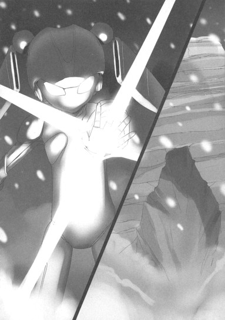
いや、ハルユキの眼には、朧にかすむ影がぎりぎり見えた。後ろだ。さっと振り向くと、両手を腰にあてて立つニコの姿があった。もと居た位置から、軽く二十メートルは移動している。よくよく見れば、氷の路面には、融けて薄く白煙を上げる細い轍が刻み込まれていた。息を呑む間もなく、再度ニコの姿が、しゅわっ！という響きだけを残して消滅。円形の轍でハルユキたちを取り囲み、もとの場所に戻る。
圧倒的だった。
遠距離攻撃の射程はシルバー・クロウの〈光の剣〉を果てしなく上回り、またスライドダッシュの速度はアッシュ・ローラーのバイクの突進を軽く凌駕している。
巨大な驚きを、両手をぎゅっと握り締めて抑え込みながら、ハルユキは何一つ見逃すまいと、次の実演を待った。
──しかし。
真紅のアバターは、そこで両手をひらりと広げ、言った。
「以上だ」
「で、でも」
と声を上げたのはタクムだった。
「さっきあなたは、基本技は四種類あるって......」
「あるよ。三つ目は〈攻撃威力拡張〉。そして四つ目が、〈装甲強度拡張〉だ。でもな......あたしは、そのどっちも使えねえんだ」
「つ、使えない!? 基本技を......王の、ニコが!?」
反射的に叫んだハルユキをじろりと睨み、しかし口調は荒らげずにニコは説明した。
「そうだ。なぜなら......あたしは、自分自身がそこまで強くないことを知っているからだ。それがこのデュエルアバター......スカーレット・レインの源となっている〈心の傷〉だ」
可憐なマスクが、まっすぐに雪空へと向けられる。加速世界を支配する最強者のひとり、恐るべき遠距離火力を持つ赤の王は、どこか寂しさを感じさせる声で独白した。
「............あたしは、世界が怖い。近づけば近づくほど、あらゆる手段であたしを傷つけるから。ブレイン・バーストは、世界を遠ざけたいというあたしの渇望を喰ってこのアバターを創り出した。スカーレット・レインの遠距離火力はハリネズミのトゲなんだよ。その内側にいるあたし自身は、何の力もないひ弱なガキでしかない......だからあたしは、このアバター本体の攻撃力や防御力を、心意によって強化することはできない。解るか、クロウ、パイル。それこそが、心意システムの、絶対的な限界なんだ」
しばし、氷雪の世界に木枯らしの音色だけが細く流れた。
ハルユキは深く俯き、赤の王の言葉を胸中で噛み締めた。
現実世界に於けるニコ──上月由仁子について、知っていることは余り多いとは言えない。実の両親の顔を知らず、保護施設を兼ねた全寮制の小学校に通っている。教えてもらったのはそれだけだ。だが、その生い立ちは、ハルユキには想像もつかないほどの厳しさでニコをずっと傷つけてきたのだろう。仮想世界のアバターに身をやつしてもなお、自分の強さを信じられなくなってしまうほどに。
ならば僕は、とハルユキは続けて考える。
──僕のこのアバターが、〈この場所から逃げ出したい〉という渇望を映していることは、明らかすぎるくらい明らかだ。届かないものを求めるための手。誰も居ない場所に逃げるための翼。だから僕は〈射程距離拡張〉の心意をマスターできたし、〈移動能力拡張〉の心意で〈ゲイルスラスター〉のゲージをリチャージできたんだろう。そして同じ理由で、防御力を上げるという〈装甲強度拡張〉は恐らく使えない。
──でも。たとえそうなのだとしても。僕は信じたい......キミは変われる、と何度も、何度も繰り返し言ってくれたあの人の言葉を......。
「......つまり、こういうことですか」
長く続いた沈黙を、タクムのひっそりとした呟きが破った。ハルユキははっと顔を上げ、隣のシアン・パイルを見た。
「......習得できる心意は、それぞれのデュエルアバターの性質に合致したものに限られる。逆に言うと、たとえ心意をマスターしても、できないことはできない」
「そうだ」
短く断じ、ニコは視線をハルユキに向けた。
「たとえば、さっきクロウが実演した〈射程距離拡張〉も、ぶっちゃけシルバー・クロウのもともとのスピードと飛行能力があれば本来必要なかった技なんだ。まあ、イメージ制御回路の使い方を体得するには最適の修行ではあったろうけどな。同じことは、あたしが見せた技にも言える。あんなふうに、氷にハデに大穴開けてはみたけど、何もイメージ集中なんかしなくても、こいつを......」
ぽんと腰のホルスターを叩く。
「使えばもっと簡単に、もっとでけえ穴をブチ開けられる。なら、なんで心意技が必要なのか」
言葉を切ったニコをまじまじと見て、ハルユキは首を捻った。しかしさすがと言うべきか、端然と正座したまま、タクムがきっぱりと答えた。
「それは、心意攻撃は心意攻撃によってしか防御できないから、ですね」
「その通りだ。イメージ制御系は、運動命令系がシステムに命じるより早く攻防の結果を決めちまうからな。こっちが革の盾と棍棒装備なのに、敵はレーザーライフルを持ってるようなもんだ。何も知らずにダスク・テイカーとやらの心意攻撃を食らったハカセなら、その理不尽さがよく解るだろ」
「......骨身に沁みたとはあのことですね。ダスク・テイカーの、鉤爪で何でも削り取る攻撃は、多分〈攻撃威力拡張〉に属するものでしょうけど、まるで生身の拳で刃物を殴りつけてるみたいな感覚でしたから......」
ふん、と鼻を鳴らし、ニコは両手をばしんと腰に当てると言った。
「つまるところ、あんたがダスク・テイカーとガチで戦うなら、せめて〈攻撃〉か〈防御〉どっちかの習得が絶対に必要だってことだ。......とまあ、やっとこあたしらがここにダイブした大元の目的に辿り着けたわけだけど......」
そこで赤の王は、珍しく語調にわずかな躊躇いの色を滲ませた。
「......さっきも言ったとおり、そのアバターの属性と反する心意は、どんだけ修行してもマスターできる見込みはほとんどねえ。で、ここでどうしても聞いとかなきゃなんねえことがある。──パイル、あんたのそのアバターは、〈近接〉と〈遠隔〉どっちなんだ？」
「へっ!?」
と頓狂な声を上げたのはハルユキだった。ニコとタクムを交互に見てから、呆然と声を出す。
「き、近接に決まってるよ......ね？ だって、こんな鮮やかな〈近接の青〉のアバター、新宿エリアだって中々見ないし」
「あたしもそうは思うけど、それにしちゃその強化外装がな......」
「あ............」
そう言われ、ハルユキは改めて、シアン・パイルの右肘から先を包み込む巨大な〈杭打ち機〉に見入った。
この強化外装は、内蔵された長さ一メートル強の鋼の杭を猛烈なスピードで撃ち出す。その貫通力は、一応は金属色であるシルバー・クロウの腕を、かつて一撃で引き千切ったほどだ。
そこまでならまだぎりぎり近接武装かとも思うが、問題はシアン・パイルの最強必殺技〈ライトニング・シアン・スパイク〉だ。あの技は、杭を光線に変えて発射する。射程は軽く五十メートルを超え、明らかに遠隔攻撃に分類されるだろう。
思わず数秒間もまじまじと凝視してしまってから──。
ハルユキははっと顔を上げ、次いで視線を大きく逸らせた。
デュエルアバターは、心の傷を源に創り出される。シアン・パイルの姿、そして右手の強化外装は、タクムの抱える恐れや欲望を顕しているはずだ。それを詮索するようなことはすまいと、ハルユキは心に決めてきたのだ。
しかし──。
「いいんだ、ハル」
静かな声でタクムがそう言ったので、ハルユキはおずおずと顔を上げた。
「......た、タク......」
「ゆうべ、君に心意システムの話を聞いた時から、何となく予想はしていたよ。それを習得するためには、ぼくの傷と正面から向き合わなきゃならないことをね......」
「な、ならオレはここで落ちるよ」
「いや、君にも聞いて欲しいんだ。本当なら、もっとずっと早くに言っておくべきことだったんだから......」
ぴたりと居住まいを正し、タクムはまずハルユキを、次いでニコをまっすぐ見て、言った。
「このシアン・パイルは、本質的にはやはり近接タイプだとぼくは思う。なら、なぜこんな遠隔タイプの初期装備を持って生まれたのか......それはおそらく、ぼくの恐怖がここに表れているからなんだ」
「......恐怖......？」
タクムが──容姿、能力その他あらゆるものを持っているように見えるあの黛拓武が、いったい何を怖れているというのか。
呆然と聞き入るハルユキに向けて、タクムは次の言葉を発した。
「ぼくは、小学校三年生から五年生にかけて、手酷くいじめられていた。マンションの屋上から飛び降りようと思ったことも、一度や二度じゃないよ」
「............!!」
ハルユキはびくりと全身を凍りつかせた。うそだ、まさか、あのタクムがイジメだなんて......という思考が脳内で激しく渦巻く。そんなハルユキをむしろいたわるように、タクムは穏やかな声で続ける。
「君が気付かなかったのも無理はないよ。イジメがあったのは学校でも自宅マンションでもなく、その頃通っていた剣道教室なんだ。ぼくは......こう言ってはなんだけど、そこそこ剣道に適性があったと思う。三年生の春に習いはじめてから、どんどん技が自分の中に入ってくるみたいだった。級もすぐに上がって、年上の子たちにも勝つようになってね。でも......二学期の終わり頃だったかな。先生が道場を留守にしてた時、学年が上の連中が、突き技の練習をしようって言い出してね」
「つ、突きって、でも......」
「もちろん高校までは禁止だよ。ぼくは嫌だと言った。でも、練習なんて口実だったんだ。ぼくは後ろから羽交い絞めにされて、喉元に何度も、何度も、何度も竹刀を突き込まれた。物凄い恐怖だったよ......ぼくは、やめて、許して、って面の下で泣き叫んだ。そのうち声も出なくなって......ようやく解放された時には、防具越しでも物凄い痣ができていた。いまでも......」
シアン・パイルは右手を持ち上げ、首の左側をぐいっとなぞった。
「......ここに痕が消えずに残っている。似たようなことは、それから何度もあった。でもぼくは教室を辞めなかった。いや、辞められなかった。親に......そしてハルとチーちゃんに、とても言えなかったんだ。いじめられたから剣道を辞める、なんて」
「............タク......オレ、ぜんぜん......気付かなかった......」
絞り出すような声で、ハルユキはどうにかそれだけを口にした。だがタクムは、いいんだ、というふうに軽く首を振った。
「親や先生に相談するって選択も当然あったんだよ。でもその教室にはソーシャルカメラはなかったし、先生の方針でニューロリンカーも外してたから、証拠がなくて......いや、それ以前に、ぼくは彼らに抵抗する気力すら無くしていたんだと思う。道場に通う道すがら、何度このまま消えてしまいたいと思ったか知れない。......イジメは、主犯格の奴が中学生になって教室を辞めるまで続いた。そいつがいなくなった時、どんなに嬉しかったか......」
ため息に乗せて発せられたその言葉は、ハルユキにはまるで我が身のことのように共感できるものだった。
しかしタクムの話はそこでは終わらなかった。でもね、という呟きに続いたのは、思いもかけない告白だった。
「でも、六年生になってすぐ、ぼくは自分にひとつのクセができていることに気付いた。稽古の時は大丈夫なのに、試合になると、相手の竹刀が喉元に向けられると反射的に自分の竹刀で防ごうとしてしまうんだ。致命的な隙だよ。直そうと頑張ったけど、試合に集中すればするほど、そのクセが出てしまう......。あの日、散々喉に突きを食らった恐怖が染み付いちゃってるのさ。それでも今はまだ、突き技はルールで禁止されてるからどうにか誤魔化せてるけど、高校生になったら多分ぼくはまともに試合はできないだろうね。突き技を食らうことも、自分が使うことも、ぼくにはきっと耐えられない」
そこで言葉を切り、タクムはずっと黙ったままのニコと隣のハルユキ、最後に自分の右腕の強化外装を順に見てから、静かに締めくくった。
「この〈杭打ち機〉は、突き技に対するぼくの恐怖と......そして怒りを具現化しているんだ。あの頃ぼくをいじめた奴らを横に並べて、片っ端から喉をこの鉄杭でぶち抜いてやりたい、という。......だから、ぼくは近接型デュエルアバターでありながら、剣ではなく貫通武器を持って生まれたんです、赤の王」
最後の言葉は、無言で立つ真紅のアバターに向けられたものだった。
長い独白を聴き終えたニコは、やがてひとつ頷くと言った。
「あんたの〈傷〉、しかと聞いたぜ。ポテンシャルの大部分がアバターとは反属性の強化外装に注ぎ込まれているのは、そういう理由か。......ならば、パイル、お前が向き合わなきゃなんねえのは自分自身の杭だ。その恐怖を乗り越えられれば、お前は真の近接型として〈攻撃威力拡張〉の心意をそのアバターに宿せるだろう」
厳しい口調でそう宣言すると、ニコはハルユキに向き直り、訊ねた。
「......っつうわけで、あたしとハカセは実際の修行に入るけど......あんたはどうすんだ、クロウ？付き合うのか？」
「え......ええと」
ハルユキは、銀面の下で涙ぐんでいたのを二人に悟られるまいと激しく瞬きしてから答えた。
「......いや、たぶん、僕はいないほうがいいと思う。理由は......うまく、言えないけど......」
「ありがとう、ハル」
タクムもそう言って頷くので、ハルユキはぎこちなく笑ってから立ち上がった。もう一度ニコを見て付け加える。
「それに、僕はこのあとちょっと一人で調べてみようと思ってるんだ。ダスク・テイカーがマッチングリストに出てこない仕組みを」
「確かに、そいつも聞き捨てならねー話だしな。考えようによっちゃ心意攻撃以上の大問題だ。それに、最近似たような話を聞いた気もするんだよな......」
「えっ......ほ、本当!?」
思わずニコににじり寄ると、赤の王はハルユキをぐいっと押し返して喚いた。
「だからどうしてあんたはそう接近するんだよ！ただの噂だよ噂！あたしより詳しい奴がいるからそいつに聞け！」
「へっ？ ど......どこに？」
思わず周囲を見回すが、もちろん誰もいない。
「ログアウトすりゃ解るよ。脱出口はあの練馬区役所の一階にあっから」
「は、はい......」
用は終わったとばかりにニコが素っ気なく手を振るので、ハルユキは歩き出そうとした──のだが。
「おっと、ちょい待った！」
と呼び止められ、もう一度振り向く。
「は、はい？」
「あー、あんたのさっきの〈射程距離拡張〉の心意技な。名前はつけてあんのか？」
「な、名前ぇ!?」
予想外の質問に、ハルユキは甲高い声を上げた。するとニコは人差し指を突き付けて早口に叫んだ。
「そのほうがカッコイイからとかガキっぽい理由じゃねえぞ！心意技はいかに強くイメージを固めるかがキモなんだよ。理想は、元々持ってるアビリティや必殺技と同じくらい自然に出せるようになることだ。あんたさっき、構えてから動き出すまで三秒近く集中してたぞ。あんなん遅すぎるんだよ！だからまずは技に名前を付けて、その発声をトリガーにしてイメージを凝縮するんだ。おら付けろ、いま付けろ!!」
ガ────ッ！ と喚かれ、ハルユキは慌てて両手を見ながら考えた。
「ええと......剣......ソード......光......じゃ、じゃあ」
視線を持ち上げ、
「れ......〈光線剣〉で」
「プッ、だっせぇ」
必死に考えた、ハルユキ基準では超かっこいい名前を一笑され、思わず言い返す。
「な、ならさっきのニコの〈射程〉と〈移動〉は何て名前なんだよう！」
「教えるかバーカ」
ここで聞き慣れた咳払いが響き、ハルユキは慌ててタクムを見て、頭を掻いた。
「いや、その。ええと......タク、が......がんばれ！」
ぎこちなく右手の親指を突き出すと、立ち上がったシアン・パイルも同じ仕草を返して言った。
「ハルもね。でも、あんまり危険な真似はしないでくれよ」
「解ってる。今夜また報告するよ」
頷き合い、ハルユキは今度こそ西にそびえる練馬区役所に向けて数歩走ってから、最後にもう一度だけ振り向いて叫んだ。
「ニコ！ ......ありがとう!!」
戻ってきた声は、いつもの元気な憎まれ口だった。
「うっせえ、早く行け!!」
６
練馬区役所のロビーに設置された離脱ポイント経由で、ハルユキは現実世界へと復帰した。
大きく一つ息をつき、ソファから体を起こす。ＸＳＢケーブルを引き抜きながら傍らを見ると、そこではタクムが眼鏡の下で長い睫毛を伏せ、穏やかに呼吸していた。
今、親友の意識はハルユキとは違う時間流のなかで、必死の修行に明け暮れているはずだ。いや、修行なんていう単純な言葉では片付けられない。タクムは、長年心の底に押し固めてきたのであろう心の傷と正面から向き合い、乗り越えようとしているのだ。
「......タク、がんばれ」
ハルユキは最小ボリュームで呟き、立ち上がった。
テーブルの反対側では、小学校の制服に身を包んだ少女があどけない寝顔を──実際には寝ているわけではないが──見せている。こうしていると本当に天使としか思えないその姿にも、ハルユキは心の中で「ありがとう」と声をかけ、重厚なドアを開けて電波遮断室から廊下へと出た。
──その途端。
「こっち。急いで」
という声が頭の上のほうから降ってきて、ぎょっと視線を持ち上げた。
立っていたのは、間違いなく、先刻ハルユキたちのテーブルに飲み物とケーキを運んできた店員さんだった。
ダークチェリー色の、肩のところが膨らんだ上着とロングスカート。その上から、控えめなレースで飾られた純白のエプロン。頭にも白いカチューシャと、胸元の細いリボンは服よりやや明るめのクリムゾンレッド。
つまるところ所謂メイド姿の店員さんは、間近で見ると思ったより若かった。かなり長身ではあるが恐らく高校生だろう。前髪をぴったり中央で分け、後ろは肩下までの三つ編みにしている。顔立ちはシャープで、細く切れ上がった一重の眼が印象の鋭さを倍化させている。
......早く出てけ、ってことかな。ニコたちはこのままで大丈夫なのかな。
とハルユキは考えつつも、とりあえず会釈して、廊下から店内へと抜けようとした。だが。
「そっちじゃない」
という声とともにぐいっとブレザーの後ろ襟を掴まれ、ぐえっと仰け反った。
ケーキ屋の、しかもメイドさんルックの店員がこの仕打ち!?という驚愕を、続いた言葉が数十倍に増幅させた。
「裏から出る。ついてきて、シルバー・クロウ」
「............なッ......!?」
やべえリアル割れしちゃうううううと脳内で喚きながら、ハルユキは反射的に走って逃げようとしかけたが、襟をがっしと掴まれたままなのでもう一度首が絞まっただけだった。細身のくせに物凄い握力だ。
「逃げなくていいし、今更逃げても遅い」
と、抑揚の薄いハスキーな声で言われ、やむなく離脱を断念して振り向いた。
メイドさんは一切の表情を浮かべないままじっとハルユキを見下ろし、やっとブレザーの襟を離してから、まったく何気ない口調で告げた。
「スカーレット・レインから調査に協力するように言われている。私の名前は〈ブラッド・レパード〉。呼ぶならブラッドではなくレパードで。──縮めるならレパではなくパドで」
「ちょっ......と、まっ......てください」
ハルユキはどうにかそれだけを口にして、懸命に状況を理解しようとした。
──詳しい奴がいるから話を聞け。
赤の王ニコは、ハルユキがログアウトする直前に確かにそう言っていた。しかしそれは、当然加速世界内だけでのことであろうとハルユキは理解していたのだ。
だが、どうやら眼前に現実世界での生身を晒しているメイドさんこそが、ニコ言うところの〈詳しい奴〉である赤のレギオン所属のバーストリンカーであり、しかも同時にこのお店の店員さんであり、つまりここはただのケーキ屋ではなく〈プロミネンス〉の拠点っぽい何かで......。
どうにかそこまで思考したところで、メイドさん改め〈ブラッド・レパード〉略して〈パドさん〉が、しびれを切らしたように言った。
「二秒待った。あとは移動しながら考えて」
そして長いスカートをふわりと翻して振り向き、暗い廊下の突き当たりに見えるドアへとこつこつ歩き出した。
最早ハルユキには、謎めいた年上の女性の命令に従う以外の選択肢は存在しなかった。
ドアは裏口になっていたらしく、出た先はケーキ屋の裏手に設けられたガレージの隣だった。
メイドさんが指先で何らかの操作をすると、道路に面したシャッターが自動で開き始めた。どうやら〈ブラッド・レパード〉はかなりせっかちな性格と見えて、待ち時間も惜しいかのようにハルユキに向けて指を一本突き出した。
「私がマスターから聞いている情報はこれだけ。ローカルネットに接続しているのにマッチングリストに出てこないバーストリンカーがいる。あなたはその仕組みを看破したい。以上、Ｋ？」
〈ＯＫ〉を更に半分削った短縮語で確認を求められ、こくりと頷く。
「え......ええ、その通りです」
「リスト遮断の話は初耳だけど、〈ローカルネット荒らし〉が出るっていう噂は最近私も聞いた」
と、メイドさんがいきなり言ったので、ハルユキは思わず前のめりになり、急き込むように訊ねた。
「ろ、ローカルネット荒らし......？ それって、どんな奴です？」
「詳しい話は知らない。とあるネットで、向こうから乱入はしてくるのに、再戦しようと思ってももう消えてるバーストリンカーが出るらしい」
「そ、その〈とあるネット〉って、どこのです!?」
「秋葉原」
即座に返ってきた簡潔な答えに、今度は後ろに身を引く。
「......あ、秋葉原って、確か、黄色のレギオンの領上じゃ......」
「そう」
何でもないように頷くメイドさんを見て、ごくっと生唾を呑み込む。
レギオン〈クリプト・コズミック・サーカス〉を統べる黄の王、〈イエロー・レディオ〉の姦計により、赤の王ニコがあわやの窮地に陥ったのはほんの三ヶ月前のことだ。同行していたハルユキたちネガ・ネビュラスも数十人規模の待ち伏せに巻き込まれて酷い目に遭ったので、現在、六つの大レギオンの中では黄色ともっとも強く対立していると言っていい。
情報を集めに行きたいのはやまやまだが、そんな敵地に出かける度胸も少々足りず、ハルユキは唇を噛んだ。
──でも、ここでビビってる場合じゃないんだ。秋葉原に手がかりがある、って教えてもらえただけでも幸運だ。それに、向こうで一般対戦のギャラリーに入ってそれとなく噂を聞くくらいなら、あまり怖い目に遭わずにすむかも......。
などと考えつつハルユキがなけなしの勇気を振り絞ろうとしていると。
同じように数秒間黙っていたブラッド・レパードが、短く言った。
「Ｋ。今から行く」
「へっ？」
......行くって、秋葉原に？ このヒトも一緒に？まさかこの格好で電車に......？
ぱちくりと眼を剥くハルユキの襟首を、これ以上ここで話をする気はないと言わんがばかりに再び掴み、メイドさんはハーフブーツを鳴らしてガレージに歩み入った。
そこに、圧倒的な存在感を振り撒きながら鎮座していたのは──。
全長が二メートル以上もあろうかという、巨大なエレクトリック・バイクだった。
そこらをとるるるんと平和に走っている電スクとはまったく異なる〈何か〉としか思えない。全体を艶のある黒と赤のカウルに包み、モーター内臓の前後輪は呆れるほど太い。それを保持するアクティブサスペンションアームももはや装甲に見えるほどごついのに、全体のフォルムは地を這うように低く、滑らかなのだ。
「すっ......げぇ............」
思わず感嘆の声を洩らしたハルユキに、パドさんは壁際のラックから丸いものを放ってきた。反射的に受け止め、見下ろしたそれは、赤いオープンタイプのヘルメットだった。
「............はい？」
意味が解らず、まじまじと眺めていると、足早に近づいてきたブラッド・レパードはもう一度それを取り上げ。
がぽっ、とハルユキの頭に嵌めた。続けて顎下のハーネスを、片手で器用に締める。
自分もカチューシャの上から黒いフルフェイスヘルメットを被り、はみ出した三つ編みを一振りしてから、またしてもハルユキの襟首を掴んで、大型バイクのタンデムシートにどすんと座らせた。
......うそ。イヤ。待って。ちょっと待って。
と脳内で喚く間もなく、メイドさんはメイド服のままバイクに跨り、レザーグローブを嵌めた華奢な両手でごついハンドルを握った。
「始動」
と呟いたのはボイスコマンドらしく、バイクのメーターパネルがぽっと点灯。伸び切っていた前後のサスアームがうい、ういんとプリロード。
ハルユキのニューロリンカーもバイクのＣＰＵと接続したようで、視界に速度やバッテリーのメーター窓がしぱぱぱっと開いた。同時に、肉声ではなく無線交信でブラッド・レパードの声が聞こえた。
『掴まって』
『えっ、あの、いや、でも』
と思考した直後、前から手が二本伸びてきて、ハルユキの両腕を掴む。そのまま引っ張られ、エプロン越しに細いウエストを抱えさせられる。この女性は、同じ指示を二度は繰り返さない主義らしい。
もうここからの逃走は不可能であろうと半ば諦めながらも、しかしハルユキは食い下がった。
『あ......あの、その格好で運転するんですか』
『着替える時間が無駄』
『そ......それに、お店はいいんですか』
『私のシフトは五時まで。他に質問があるならいっぺんに言って』
『..................ありません』
『Ｋ』
そしてメイドさんは無造作にスロットルを開けた。
りゅうん、という穏やかさの中に底なしのトルクを感じさせるモーター音とともに、巨大バイクはするりとケーキ屋付属のガレージから滑り出た。
視界右下の時刻表示は午後五時八分。雨はいつの間にか上がっていて、西へと流れていく雲の切れ間は見事なオレンジ色に染まっていた。
あ、お店に傘置いてきちゃった。まあ、タクが回収してくれるだろう。
などと逃避的にぼんやり考えるハルユキを乗せ、電動バイクはほとんど無音の低速走行でするすると桜台の市街地を抜けていく。どうやらブラッド・レパードは、せっかちそうな割に安全運転らしい──。
と肩の力を抜きかけた時、バイクが大きめの交差点を右に曲がり、環七に出た。
キュイアアアアア!! と前後輪の内蔵モーターが咆哮し、ホロメーターの針が一気に跳ね上がった。
ばたばたっ、と視界の端でロングスカートがはためく。風圧が、ヘルメットのシールド越しに顔を殴りつける。
「......あ────────!!」
ハルユキは肉声で悲鳴を上げた。
メイド服のライダーと制服姿の中学生を乗せた大型バイクは、環七から目白通りに入り、ひたすら東へと激走した。
──とは言え、この時代、バイクや乗用車が法定速度を破ることはそもそもできない。制御システムが自動的にその道路の上限速度でリミッターを掛けるからだ。それを破ろうと思ったら、システムを違法改造するか、緊急モードを命じて制御ＡＩを一時停止するしかない。無論正当な理由なくＡＩを停めるのも違法なので、どうあれお縄を覚悟せねばならない。
ブラッド・レパードの駆るバイクは当然そのどちらでもなく、きちんと目白通りの法定速度である時速八十キロメートルでリミッターが掛かるのだが、ゼロ発進から上限に達するまでの時間が尋常でなく短いのだ。必然、ハルユキの丸い体にはかつて現実世界では経験したことのない巨大なＧが圧し掛かり、その度に悲鳴を上げそうになるのだが、加えて密着するパドさんの細い体がお腹にぐに────と押し付けられるのでもうどうしていいのか解らない。
......まだしも後ろに座っててよかった。これが逆なら背中じゃなくて前のほうの感触が。いや原理的に逆は有り得ないか。
くらくらする頭でそんなことを考えているうちに、バイクは飯田橋で外堀通りへと入った。夕暮れの都心部だけあってやや道が混んできて、周囲の電気自動車や電スクのドライバーたちが、ハルユキたちのバイクに気付くやぎょっと眼を剥く。
それはそうだ、今時見かけることすらほとんどない大型スポーツバイクを、夕闇に純白のエプロンも眩しいメイドさんが駆っているのだから。しかもその後ろにちんまり丸い中学生。
信号待ちで集中照射される視線の多さに、ハルユキは堪らず首を縮めながら思考音声で話しかけた。
『......あ、あの、すっごい、目立ってる気が』
『そう』
どうでもいいと言わんがばかりの、いや本気でそう思っているのであろうパドさんの応答にめげずに続ける。
『......こ、このままＣＣＣの本拠に突っ込んだら、ちょっと、危ない気が』
今度の声はやや長かった。
『ＮＰ。逆に目立たない』
『へ？』
だがそれ以上は答えず、信号が青になるやアクセル全開。モーターから電光。ハルユキ窒息。
言葉の意味は、秋葉原地区西端に近接する立体駐車場にバイクを入れ、徒歩で数分移動したところで理解できた。
電気街を南北に貫くメインストリートに入った途端、ハルユキの視界に、最低三人のメイドさんが飛び込んできたのだ。と言ってももちろん本物ではなく──それを言ったらブラッド・レパードだって本物ではないのだが──どこかのショップの宣伝をしているようで、通行人ににこやかなスマイルとともにホロペーパーを手渡ししている。確かに、彼女たちとパドさんの外見的相違は、笑顔があるかないかだけだ。
「......なるほど......」
深く納得し、ハルユキは改めて不夜城・秋葉原の威容を見上げた。
この街は、二〇〇〇年代初頭の再開発によって、一度すっきりとインテリジェントな街並みへと整理されかけたらしい。しかしその後、家電販売の中心が池袋や新宿にシフトしていくとともに地価は下落、折からの不況で体力不足だった銀行があっさり手を引いて地権が細分化され、二〇年代にはまるで前世紀のようなカオスが再び街を覆った。
そして二〇四七年現在、この街には、電気及びネットワーク及びサブカルチャーに関連するあらゆる業種の小規模ショップが無数にひしめいている。立ち並ぶビルの窓すべてに好き放題ネオンが輝いているために、色彩の統一性というものは皆無で、まるで原色の恒星が密集する銀河の真ん中に立っているかのようだ。
もしいまハルユキがニューロリンカーをグローバル接続し、しかもＡＤ情報を無制限に受け入れていたら、視界にはニューロリンカーや据え置きＰＣ用のカスタムパーツ、各種アプリケーションソフト等のお買い得ホロチラシが溢れて何も見えなくなっているだろう。
「いいなあ......」
もはや現実ではなく仮想世界としか思えない情報的無秩序に、ほんわり口元を緩めていると、いきなりガッと襟首を握られた。
「こっち」
とくに感慨もなさそうなブラッド・レパードは、ハルユキを引き摺るように、買い物客で溢れる歩道を北に歩きはじめた。
連れて行かれたのは、大通りから少し裏に入ったところに建つ、一際うるさいビルだった。
ぱっと見ではいったい何の店なのか解らない。入り口には〈ＱＵＡＤＴＯＷＥＲ〉というネオンが瞬き、その奥は照明が絞られて薄暗い。そして大ボリュームの電子音が無数に重なって洩れ出している。
「......カドタワー？ 何です、この店......？」
ややビビりつつハルユキは訊ねた。
「ゲーセン」
ひと言答え、パドさんは何の躊躇いもなくこつこつと店内に向かった。ゲーセン、なんだっけそれ、と思いながら小走りに追いかける。
その単語の意味は、短い階段を降り、暗いフロアに踏み込んだ途端に明らかとなった。
コンクリート剥き出しの床にぎっしり並んでいるのは、巨大な筐体に旧式のＣＲＴモニタとスティック式コントローラパネルを埋め込んだ、先史時代のゲームマシンだった。それぞれのスピーカーからは打撃音や爆発音、ＢＧＭが遠慮なく空気中に垂れ流され、横長の椅子に座るプレイヤーたちはガチャガチャバシバシと一心不乱にパネルを叩いている。
壁際から呆然と眺めていると、背中合わせに並ぶ筐体の片方でプレイヤーがガッツポーズし、背後のギャラリーたちがわっと湧いた。その反対側では、悔しそうに若い男が立ち上がる。どうやらあの二台で対戦していたらしい。
空いた台には、すぐに後ろのギャラリーのひとりが座った。まるで自身もゲームキャラであるかのような派手な格好をしたその少女は、ポケットから銀色の百円玉を摘み出すと、それをパネル中央のスロットへと落とし込んだ。
「そ......そうか」
ハルユキは、乾いた口で呟いた。
「ゲーセンって、ゲームセンター......あのマシン、大昔のいわゆる〈アーケードゲーム〉ってやつですよね！」
興奮しながらそう続けたが、ブラッド・レパードは例によって「そう」と答えただけで、再び歩き出す。
ハルユキとしては、この街に来た目的及び自身を取り巻く状況の重大さは理解しつつも、一度だけでいいからあの対戦台に座ってみたいと思わざるを得なかった。あのような大型コントローラに触ったことはないが、パッドで操る２Ｄ対戦格闘ゲームなら、自宅の家庭用マシンで嫌と言うほどやりこんでいる。
しかしながら、まったく惜しいことに、ポケットにも背中の鞄にも百円玉などという時代遅れのマテリアルマネーは一枚も入っていない。店内を捜せばどこかに電子マネー両替機もあるのかもしれないが、この暗く広い店内でパドさんとはぐれたら大変そう──というよりも怒られそうなので、泣く泣く断念する。
そもそもこの人はなぜここに、という今更すぎる疑問を感じながらメイド服の背中で揺れるお下げを追いかけると、辿り着いたのは最奥の壁面に設けられたエレベータだった。
怖いほど古めかしい箱は、二人を乗せると、がたがたと揺れながら上昇。四階で停まる。
開いたドアの向こうは、地階とは打って変わってひんやりと静まり返っていた。並んでいるのはゲーム筐体ではなく、頑丈そうなパネルで仕切られた狭いブースだ。右の壁際にはドリンクベンダーがずらりと据えられている。
こういう場所なら、ハルユキにも見覚えはあった。いわゆる〈ダイブカフェ〉、街中でフルダイブするための個室を安価で提供する店だ。ブースは施錠できるので、ファミレスや喫茶店などのオープンスペースで現実身体を放置するのに比べれば遥かに保安性は高い。
とは言え、ダイブカフェなら、確かバイクを置いたパーキングの近くにも幾らでもあった。なぜわざわざ離れたこのビルまで、と思ったが、パドさんは正面の無人カウンターで素早く受付を済ませると、すたすた奥に歩いていってしまう。仕方なく追いかける。
しかし──。
「入って」
と示されたのがどう見ても一人用ブースで、しかもハルユキに続いて当然のようにブラッド・レパードも入ってくるので、今度ばかりは問い質さずにはいられなかった。
「あ、あの、椅子が一つしか」
「ペアシートのブースは空いてなかった。詰めれば座れる」
無表情に答え、スライド式のドアを閉めると、頑丈そうなロックがガチンガチンと鳴る。ロングスカートをまとめながら、リクライニングチェアに横向きに座る。
細身の体が端に寄せられると、確かに座面には幅四十センチほどの空間ができた。だが丸っこいハルユキが座るにはそれでもギリギリだ。むしろギュウギュウだ。
「............あの」
僕自分でもう一部屋取りますから、と続けようとしたハルユキの機先を制し、メイドさんは言った。
「ＮＰ。子供にくっつかれても私は気にしない」
──僕はものすごく気になる!! というかバーストリンカーの第一条件から考えれば、最大でも三歳しか離れてないのでは!!
等と胸中で叫びつつも、ハルユキはもうなるようになれの心境で、「ししし失礼します」ともごもご言いながらブラッド・レパードの隣に体を乗せた。極力ひじかけ方向に張り付こうとするのだが、それでも真っ白いエプロンに覆われた胸部とハルユキの鼻の頭の間には約二ミリの間隙しかない。
ふわりと甘い芳香が漂い、それがクリームと苺の匂いだと気付いた途端ふうっと気が遠くなりかけたが、なんとか持ちこたえていると、顔に吐息を感じるほどの距離から囁き声がした。
「まず、現実のあなたに結びつかないフルダイブ用アバターを設定して」
「......へ、は、はひ」
減速中の思考をなんとか立て直し、仮想デスクトップを素早く操作して、アバターを梅郷中ローカルネットで使用している桃色ブタから、一度も使ったことのない緑色のトカゲへと変更する。
「で、できました」
「では、フルダイブしたら、〈アキハバラＢＧ〉のタグがついてるアクセスゲートに潜って」
「わ、解りました」
「Ｋ。カウントする。一、〇」
......普通、せめて三から始めるものでは！
という思考と同時に、二つの口から同じコマンドが放たれた。
「「ダイレクト・リンク」」
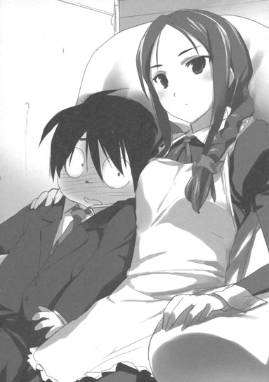
しゅわっ！ という音とともに意識と現実身体が切り離され、ハルユキは暗闇を落下する。
下方から、幾つかのアクセスゲートが近づいてくる。ハルユキは今グローバルネットを切断しているので、どれもがこの〈カドタワー〉なるビルが運営しているローカルネットのはずだ。〈コミック読み放題！〉や〈オンラインゲーム無料プレイ〉などの文字がぴかぴか光る中に、確かに〈アキハバラＢＧ〉という目立たないタグがあった。
そちらに不可視の手を伸ばすと、視界が引き寄せられる。円形のゲートに吸い込まれる瞬間、わずかなラグがあった。何らかの認証が行われた気配。
しかしすぐに再びの移動感覚が訪れ、やがてハルユキの足底が、硬い金属音とともに接地した。
伏せていた顔を上げると、そこは巨大な酒場ともクラブともつかぬ場所だった。
あらゆる床と壁が、赤錆びた鋼板と金網で作られている。中央の四角い空間は吹き抜けとなり、それを囲むように設けられた一階と中二階のフロアに、鉄板むき出しの武骨なテーブルが等間隔に並ぶ。
薄暗いテーブル席には、同時にこの酒場にダイブしているらしきアバターが幾つも見えた。影に沈んではいるが、それらのシルエットを見た途端、ぴりりっと感じるものがあった。
この場所は加速世界ではない、ノーマルな仮想空間だ。それでもハルユキには解った。彼らは全員バーストリンカーだ。つまりこの〈アキハバラＢＧ〉なるネットは、ニューロリンカーにブレイン・バーストを持つ者しか接続できない場所なのだ。
緑トカゲアバターの喉をごくりと上下させてから、更に視線を巡らせる。
次に気付いたのは、中央の広い空間に、天井から鎖でぶら下げられた四面の大型モニタだった。店が薄暗いので、仮想の画面に映し出された文字がくっきりと見える。
いちばん上に表示されるのは──【ＴＯＤＡＹ，ＳＢＡＴＴＬＥ】のゴシックフォント。
その下に、【18：00】の、恐らく時刻。
続いて、【〈フロスト・ホーン Ｌｖ５〉１・５７ＶＳ〈スレート・ボルトＬⅴ４〉３・２２】とあるこれは、もう間違いなく、対戦の予告だ。だがレベルの後に書かれている小数点つきの数字はよく解らない。
「............あの、ここは......」
ハルユキはようやく周囲を見回すのをやめて、すぐ隣に立つブラッド・レパードのアバターに小声で話しかけた。
アバターは、当然というか意外というか、もうメイド服は着ていなかった。全身をぴったりと覆う、黒革のライダースーツ姿だ。しかしその上にあるのは、人間の頭ではない。艶やかなダークレッドの毛皮を持つネコ科の獣。ここで初めてハルユキは、〈レパード〉が豹のことであるのを思い出した。
豹頭の女性ライダーは、仄かな金色に光る瞳でちらっとハルユキのトカゲアバターを見下ろし、言った。
「〈アキハバラ・バトル・グラウンド〉。バーストリンカーの、対戦の聖地」
「せ、聖地......？」
繰り返してから、ハルユキはふと思いついて訊ねた。
「アキハバラ、ってことは、黄色のレギオンの拠点か何かですか？」
「違う。秋葉原エリアで、ここだけは絶対中立。......付いてきて」
ブーツをかつかつ鳴らして歩き始めるので、とりあえず追いかける。
酒場のいちばん奥には、やはり鉄板で作られたカウンターがあった。ブラッド・レパードは中央のスツールにしなやかな動作でするりと腰を下ろした。ハルユキもその隣に、小さなトカゲボディをよっこいしょとよじ登らせる。
「こんばんは、〈マッチメーカー〉」
パドさんの密やかな声に、カウンターの向こうでひょいと顔を上げたアバターを見て、ハルユキは咄嗟に、ドワーフだ！と思った。
ずんぐりした短躯にもじゃもじゃの顎鬚。金壷眼に鉄縁の眼鏡をかけ、首元には巨大な蝶ネクタイを締めている。ごつい両手斧を持っていないのがいっそ不思議なほどだ。
ドワーフ型アバターはまずパドさんの豹頭を見てぐいっと片方の眉を持ち上げ、次いでハルユキのトカゲ頭を見てふんと鼻を鳴らし、またパドさんに向き直ってにやりと笑った。
「こりゃあ珍しい客じゃな。何ヶ月ぶりだね、豹の」
見事なバリトンに見事なドワーフ口調だ。しかしこのネットに接続している以上このアバターを動かしているのもバーストリンカーのはずで、ということは最古参でも十七歳は超えていないはずなのだ。
しかしそんなことを気にするのは野暮というものだろう。パドさんは小さく肩をすくめると、「八ヶ月」と短く答えた。〈マッチメーカー〉という通り名らしいドワーフはもう一度ヒゲを動かして笑い、言った。
「ここの真剣勝負が懐かしくなったかな。それとも小遣い稼ぎかね」
「悪いけど、今日は対戦しに来たんじゃないし、賭けるつもりもない」
その台詞に、ハルユキは反射的に声を上げてしまった。
「か、賭けっ......て!?」
するとドワーフは眉毛を持ち上げ、ヒゲの先で中央の巨大モニタを指した。
「あの数字を見たじゃろう。あれがオッズ以外の何に見えると言うんじゃい」
「オッズ......」
言われてみれば、まったくその通りだ。予告された対戦者の名前に続く１・５７だの３・２２だのという数字は、賭けの倍率でしか有り得ない。
ということは、この場所は、バーストリンカーの〈対戦〉による賭博を運営しているのだ。
「......い、いったい何を賭けるんですか。まままさか、バーストポイントですか」
掠れ声で訊ねると、ドワーフは盛大に鼻を鳴らした。
「アホウ、ポイントなんか賭けさせたら、熱くなった馬鹿モンが片っ端から強制アンインストールしちまうわい。賭け金はリアルマネーに決まっとろうが」
「り、リアルマネー......」
それも充分にヤバイ、というか私営ギャンブルは完全なる違法行為だ。ハルユキが口をぱくぱくさせていると、マッチメーカーは突然にんまり笑みを浮かべた。
「お前さん、この豹あたまのお姉さんが、ここでいったい幾ら稼いだか知らんのかね」
「誤解させるようなことを言わないで。稼いだのはファイトマネーだけで賭けたことはないし、だいたい勝っても一試合五百円。バイトの時給よりずっと低い」
「............ご、五百円......」
またしてもハルユキは呆然と呟く。それを聞いたドワーフはひっひっと愉快そうに笑った。
「ま、そういうことじゃ。賭けるほうは一試合、上限三百円。中高生の小遣いではそれが限界じゃ」
「............な、なるほど......」
ようやく、少しばかり肩の力を抜いたハルユキを、ブラッド・レパードの声が再び緊張させた。
「挨拶はこのへんにして、本題に入らせて」
「あいかわらずせっかちな豹じゃな。試合も賭けもしないなら、何しに来たんじゃい」
「今日は、情報屋としてのあなたに会いにきた。知りたいのは、〈ローカルネット荒らし〉......ネットに接続しているのに、マッチングリストを遮断できるバーストリンカーの情報」
反応は顕著だった。
パドさんの質問を聞いた途端、ドワーフはびりっと鋭い眼光を浮かべ、カウンターの左右を素早く見やった。声が聞こえる範囲に他のダイブ者がいないことを確認してから、いっそう低い声を押し出す。
「......リスト遮断の話をどこで聞いた。いま流れてる噂は、そこまで詳しくないはずじゃぞ」
今度はブラッド・レパードが、豹頭の眉のあたりをひそめた。
「質問しているのは私」
「む......そうじゃな。なら、この話に関しては情報料は要らんから、代わりにそっちの話も聞かせてくれ」
「Ｋ、言える範囲で」
マッチメーカーはふんと頷き、カウンターに身を乗り出すと、ヒゲの奥から唸るような声で語り始めた。
「......マッチングリストを遮断するバーストリンカー......それこそ、いまこのアキバＢＧを秘かに揺るがしている大問題なんじゃ」
いいかね、若いの。
とドワーフは、この場所を初めて訪れたハルユキに向けて言った。
アキハバラＢＧは、ゲームセンター〈カドタワー〉内でのみ接続できるローカルネットじゃ。ここでの賭け試合に出たいと望むバーストリンカーは、まずこの酒場を訪れ、カウンターで選手登録する。するとシステムが、レベルや相性を考えて最適の対戦相手を選び出し、試合時間とオッズを中央のモニタに表示する。
金を賭けたいと思う者は、締め切り時間までに最大三百円をどちらかにベットする。あとは、試合時間になる直前に選手のどちらかが加速し、マッチングリストから相手を選んで〈対戦〉を開始する。基本的な仕組みはそれだけじゃ。シンプルなもんじゃろ？
このローカルネットでの最大のルールは、マッチメイクされた選手同士以外は〈対戦〉してはならない、ということじゃ。それを破り、賭け客や選手に勝手にデュエルをふっかけた者は、腕っこきの用心棒がブチのめして──もちろんデュエルでじゃよ──ローカルネットから叩き出す。ここは、秋葉原を支配する〈黄の王〉すらも手を出せない、対戦者の聖地なんじゃ。
「ところが、じゃ」
マッチメーカーは、いつの間にかカウンターに載っていたタンブラーの中の液体をぐびっと呷ってから続けた。
「一週間ほど前に、選手登録もせず、予告試合の開始直前に片方の対戦者にデュエルをふっかけるという不届き者が出よった。アキバＢＧにダイブした者は皆、初回接続時に自動でＩＤが振られる仕組みゆえ、翌日またそいつがノコノコ現れた瞬間に用心棒がブチのめそうと加速した。ところが、じゃ。そいつは確かにローカルネットに接続しておるのに......マッチングリストに名前がない」
「............！」
ハルユキは鋭く息を吸い込んだ。
マッチメーカーが語ったシチュエーション。それはまさに、いま梅郷中学校ローカルネットに発生している状況とまったく同一だ。
ドワーフはぐいっと琥珀色の液体を干すと、タンブラーをカウンターの鉄板に打ち付けた。
「その日も、そやつは一試合に乱入し、選手を仕留めて悠々とログアウトしていきよった。翌日も、翌々日も。いまのところは、選手や客たちには試合登録システムの不具合と説明しておるがそれももう限界じゃ。〈ローカルネット荒らし〉なんて噂も流れとるしな。このままあやつの跋扈を許せば、アキバＢＧそのものの存続に関わるわい」
ごくっと喉を動かしてから、ハルユキはおそるおそる訊ねた。
「あ、あの......。その、リストに出てこないバーストリンカーの名前は......？」
忌々しげにドワーフが口にした名前は──。
「〈ラスト・ジグソー〉」
──違った。
ハルユキは思わずほっと息を吐いたが、しかし違ったら違ったで問題もある。能美と同じ、マッチングリスト遮断能力を持つバーストリンカーが複数存在するということになるからだ。ブレイン・バーストのシステムに於いて、その特権は巨大すぎる。
同様の危惧を、マッチメーカーもぼそりと口にした。
「〈対戦相手を好きには選べない〉。それが加速世界の大原則じゃ。相性のいい相手だけ選んで戦いたくとも、そやつがいつリストに現れるか解らんからな。出現を待っている間に、逆に苦手な奴に対戦を吹っかけられることもある。それゆえどのバーストリンカーも、己の得意技を磨き、また弱点を克服しようと懸命に努力する」
「......そのとおり、ですね」
「じゃが、〈ラスト・ジグソー〉は今、アキバＢＧのシステムを利用して、自在に対戦相手を選り好みしておる。あのモニタを見れば、どのバーストリンカーが何時何分に接続しておるか一目瞭然じゃ。あとは、確実に勝てそうな相手のみを選び、試合開始の直前に乱入するだけ。奴はすでに、ここでの対戦だけでも百以上のポイントを稼いでおるよ。マッチメーカーとしてではなく......一人のバーストリンカーとしても、到底許せん」
苦々しげにそう言い終えると、ドワーフは丸眼鏡の奥からぎろりとハルユキを、次いでブラッド・レパードを睨んだ。
「ワシの話はこれで終わりじゃ。さあ、今度はそっちが話す番じゃぞ。〈ラスト・ジグソー〉がマッチングリストを遮断しているのを知っているのは、現在ワシとうちの用心棒だけのはずなのに、いったいどこから聞きつけてきたのじゃ」
ハルユキはちらりと左のパドさんを見上げ、次いでトカゲアバターの口をもぐもぐと動かした。
「......あの、ここの話じゃないんです。僕が普段接続している、とあるローカルネットにも、まったく同じ能力を持った、別のバーストリンカーが現れて......それで、秋葉原なら何か知ってる人がいるんじゃないかと思って......」
「なんじゃと。同時期に、もう一人......!? そりゃあ聞き捨てならんぞ......」
ぬううん、と唸ってからドワーフは当然訊いてきた。
「そのローカルネットってのはどこじゃい」
「す、すいません。僕のリアル情報に関わるんで......」
「なんじゃ、ならほとんどワシ一人が喋っただけじゃないかい！」
──と。
ここでついに、パドさんが密やかな声を発した。
「マッチメーカー。そのラスト・ジグソーのレベルとタイプは」
「んむう？ レベルは６、あんたと同じじゃ。色は名前どおり鉄錆色。これもあんたとよく似とるが、しかし戦闘スタイルは違うな。彼奴の得意は中～遠距離を保っての近接型狩りじゃから、近接メインのあんたは正直相性が悪いよ」
......パドさんは近接型？ 赤のレギオン所属で、血って名前も赤っぽいのに？
というハルユキの一瞬の疑問を、続いたブラッド・レパードの台詞が吹き飛ばした。
「Ｋ。なら、情報料がわりにこうする。私とこの子をタッグで選手登録して、相手には遠隔型のチームを据えて。そのうえで残りの試合を全部キャンセルすれば、他に襲う相手のいないラスト・ジグソーは、私たちを今日の獲物に選ぶはず」
「......な、な、なぁ!?」
スツールから転がり落ちそうになり、慌ててカウンターを掴むハルユキに、ドワーフは改めて胡散臭そうな視線を向けてきた。
「......豹の、あんたなら囮としてじゅうぶん過ぎるほど名前が通っておるが......この新顔は、そもそもどこの誰なんじゃい」
するとパドさんは、ごくかすかではあったが笑みの気配を洩らし、ドワーフの耳に向けて囁きかけた。
「もしかしたら、私より有名。この子が、復活したネガ・ネビュラスの〈銀の鴉〉」
ぴゅうっ。
と低く響いたのは、マッチメーカーがヒゲの奥で鳴らした口笛だった。
ハルユキとブラッド・レパードは、それぞれ自分のブレイン・バーストのオプションメニューを開き、互いをタッグチームとして登録した。これでどちらかが〈対戦〉を吹っかけられれば、自動的に二人ともがステージに接続することになる。
バーストリンカーがタッグを組んでいるかどうかはマッチングリスト上で確認でき、ソロでタッグに挑戦することは可能だが、逆、つまりタッグチームからソロリンカーへの対戦申請は当然できない。
酒場中央の大型モニタに、〈ブラッド・レパード〉と〈シルバー・クロウ〉の名前がチームで出現すると、フロアが一瞬どよめいた。「おい、プロミの〈豹〉が戦うぜ！」とか、「なんでＮＮの〈鴉〉とコンビ組んでんだよ!?」という声がそこかしこで上がり、たちまちオッズの数字が動き始める。
カウンターから、隅の薄暗いテーブル席へと移動して試合開始を待つあいだに、ハルユキは幾つかの疑問を訊ねておくことにした。
「......あの、何でタッグにしたんです？ 問題のラスト・ジグソーはソロなんだから、二人相手には乱入してこないんじゃ......？」
「そうでもない」
豹の口にカクテルグラスを触れさせてから、パドさんは短く首を振った。
「レベル差はタッグの平均じゃなく合計で計算されるから、ソロで挑んだ場合、負けてもポイントはあまり減らないし勝った場合は沢山もらえる。ラスト・ジグソーはポイントに執着してるみたいだから、美味しい獲物と思う確率は高い。私は近接型として名前が通っているし、ジグソーは近接狩りが得意らしいから、相性でも向こうに不利はない。それに......」
そこでちらりと金色の瞳をハルユキに向け、いちど口を閉じてから続ける。
「......あなたが飛べなくなったらしい、って噂はもうかなり広がってる。ラスト・ジグソーがそれを知ってれば、襲ってくる可能性は更に増える」
自分が翼を失ったことに、一瞬にせよブラッド・レパードが気遣いを見せたことが辛くもあり嬉しくもあって、ハルユキは急いで相づちを打った。
「そうか......僕を即殺できれば、あとは普通にあなたと一対一ですもんね」
小さく頷いてからもう一度グラスを口に運ぶパドさんにならって、ハルユキも仮想のカクテルをごくりと飲んだ。奇妙な味に顔をしかめながら考える。
仮にそのラスト・ジグソーがダスク・テイカーと繋がっていて、シルバー・クロウの情報を得ていても、それで警戒するということはないはずだ。ダスク・テイカーこそ、シルバー・クロウの翼を奪って弱化させた張本人だからだ。
試合開始まではまだしばらくあるのを確認し、次の疑問を口にする。
「あと......対戦以前の話なんですけど......。ラスト・ジグソーがマッチングリストに出てこないと言っても、このローカルネットに接続してくるからには、現実世界では必ずカドタワービルのどこかに居るわけですよね？」
「そう」
「なら、その本体をどうにかして見つけることはできないんですか？」
するとパドさんはレザースーツの肩を軽くすくめた。
「ここは、地下一階から三階までがゲーセン、四階から六階がダイブカフェになってる。この時間、同時に何百人もの客が高密度で存在するから、特定は困難。............でも」
「で、でも？」
「方法はある、かもしれない」
「ど、どんな!?」
「後で説明する。それより」
ソファの隣に腰掛けるパドさんの体がしなやかに動き、ハルユキのトカゲアバターの耳元に口が寄せられた。絶対に他のダイブ者には届かない極小ボリュームで、ひそっと言葉が囁かれた。
「敵が使ってこない限り、〈心意システム〉は使っちゃ駄目」
ぴくっと体を竦ませ、一度は頷きながらも、しかしハルユキは付け加えずにはいられなかった。
「は......はい。それは、赤の王にも言われました。でも......でも、なぜなんです？確かに、あの強すぎる力を一方だけが使うのはフェアじゃないと思います。けど、ブレイン・バーストのルールを破るような相手なら......」
「違う、相手のためじゃない。あなたのため」
「え............？」
──そういえば、ニコも同じことを言っていたっけ、と思ったその時。
パドさんはいっそう体を寄せ、至近距離からハルユキの眼を覗き込むようにして囁いた。
「〈心意〉は心にあいた穴から生まれる力。そこから力を引き出す時、あなたも少しずつ穴に引き寄せられている。もしいつか綱引きに負ければ、あなたは穴の底の闇に呑まれてしまう」
「や、闇......？」
「あなたが戦った〈災禍の鎧〉、あの呪いを生み出したのは、初代クロム・ディザスターの暴走した心意。それを知っているから、王たちは心意システムの存在を何年にもわたって伏せようとしてきた」
「............!!」
ハルユキは再び体を硬くした。
心意を生み出すのは、絶対的な欠落を源とする願望──。赤の王ニコも、確かにそう言っていた。自分の心の傷と向き合わなければ習得はできない、と。
「......でも」
ハルユキは、ブラッド・レパードではなく自分に言い聞かせるように、ぽつりと呟いた。
「最初に、僕に心意の手ほどきをしてくれた人は、こう言っていました。心意を生み出すのは〈願い〉の力だ、って。心の傷は、〈希望〉の裏返しなんだ、って」
それを聞いた深紅の豹は、密やかな吐息に乗せて呟きを返した。
「......それもまた真実だと、私も思う。でも、ブレイン・バーストそのものがそうであるように、心意システムにも表裏二面が存在する。〈希望〉の裏側には〈絶望〉がある。あの力を追い求めれば、代償として必ず何かを失う。おそらく、あなたの師匠も例外ではない」
瞬間、ハルユキの脳裏に、銀色の車椅子に腰掛けるスカイ・レイカーの姿が浮かんだ。失われ、二度と戻らないという彼女の両脚が。
ぎゅっと強くアバターの両眼を瞬かせてから、ハルユキは半ば思念に乗せて言葉を発した。
「......僕は、それでも、信じたいです。〈心意〉を......〈願い〉の力を。いえ......僕を救ってくれた、このブレイン・バーストを」
「........................」
ブラッド・レパードは、彼女にしては珍しく、何かを言いかけたまま長く黙した。
やがて剽悍な目許を緩ませ、ハルユキの耳に口をつけるようにして囁いた。
「なるほど。レインが言っていたとおり。あなたは......あなたが、もしかしたら、この加速世界を」
しかし、その先を聞くことはできなかった。
モニタに予告された正規の試合時間が来るより一分以上も早く、ハルユキの聴覚を乾いた雷鳴が叩いた。続けて、挑戦者の出現を告げる文字列が、視界いっぱいに赤々と燃え上がった。
７
デュエルアバター〈シルバー・クロウ〉としてハルユキが降り立ったのは、ビルの屋上から突き出した貯水タンクの上だった。
四方に広がる街並みは、ダイブ前に見た風景と同様に、無数のネオンに彩られていた。夜空に低く垂れ込める雲を、幾つものライトやレーザーイルミネーションが地上から照らし出す。巨大な広告パネルを輝かせた飛行船が頭上を往き、奇怪な言語によるコマーシャルが街のそこかしこから放たれる。
しかしこれは勿論、現実世界の秋葉原ではない。ソーシャルカメラ・ネットの映像から再構成された３Ｄフィールドだ。属性は〈繁華街〉。
ハルユキはさっと身を屈め、まずは視界上部のＨＰゲージを確認した。
左上に、自分のゲージ。そのすぐ下に、タッグパートナーであるブラッド・レパードのものがやや小さく表示されている。
そして右上に輝くゲージには、予定どおり〈ラスト・ジグソー〉の名前があった。ハルユキは銀面の下で息を殺し、視界中央に小さく浮かぶ水色のカーソルを睨んだ。その先に敵がいるはずだ。幸か不幸か、繁華街ステージは世紀末ステージなどと同じく建物内侵入禁止なので、距離を取って再配置されたらしい。
さて、まずはパドさんと合流しないと──。
と思った直後、背後から密やかな声が聞こえ、ハルユキはびくっと振り向いた。
「Ｋ。食いついた」
足音も、気配すらもしなかったのに、いつの間にか真後ろに長身痩躯のアバターがひっそりと立っていた。
全体のフォルムは、酒場で使っていた豹頭ライダーによく似ている。しかし革ツナギ姿ではなく、全身を覆うのは艶のないダークレッドの装甲だ。マスクは砲弾状に先が尖ったフォルムで、後端左右が耳のように尖っているところは、ネコ科の猛獣に似ていなくもない。
すらりとスマートなシルエットの中で、最も目立つのは大きく膨らんだ大腿部だった。いかにも敏捷そうなデュエルアバターをハルユキの隣にしゃがませ、〈プロミネンス〉所属のレベル６バーストリンカー、〈ブラッド・レパード〉は続けて囁いた。
「私とあなたは近接型、対して敵は中～遠距離型。まずこちらをレンジ攻撃で分断し、あなたから落とそうとしてくるはず。だから無理に反撃しようとせず、私と離れないことだけを優先して」
「......り、了解」
ハルユキが頷いた、その半秒後。
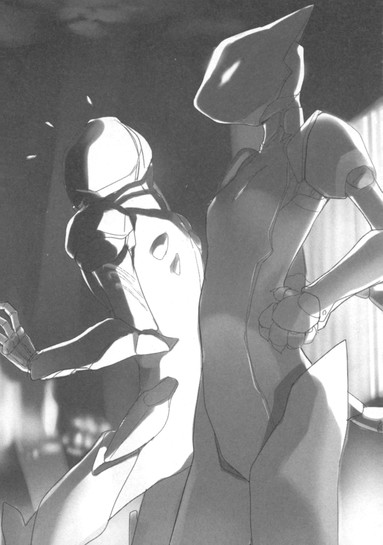
ジイイイイ！ という耳障りな振動音がカーソル方向から急接近し、ハルユキは反射的に飛び退いた。
わずかな時間差を経て、これまで立っていた貯水タンクが真っ二つに分断された。どばっと溢れ出した水が屋上に広がる。それを踏まないように、すでにハルユキより遥かに長距離をジャンプして排気塔に背中をつけているレパードの傍まで走る。
「今のが奴の遠距離技、〈ホイール・ソー〉のはず」
物凄い早口の解説に、事前にマッチメーカーから聞いてあるラスト・ジグソーの能力を思い出しながら、ハルユキも可能な限り高速で応じた。
「糸ノコの輪っかを飛ばすって技ですね。でもこの暗さだと、ノコ本体はまるで見えませんね」
「音で対処するしかない。連射はできなさそうだから、次の攻撃を回避したら一気に詰める」
「け、Ｋ」
頷く暇もなく、再びジイイッ！ という唸りが迫った。
音源を見、いや聴き極め、右斜め前に飛び出す。体のすぐ左を、高速回転する極細のリングが通過する。背後で排気塔が断ち切られ、崩れる。
しかしそれを見ることなく、ハルユキはすぐ前を走るブラッド・レパードを必死に追った。
深紅の豹型アバターのスピードは、やはり尋常ではなかった。走るというより跳ぶように、ほんの数歩でビルの端まで達し──躊躇なく、空に身を躍らせた。
ビルから、広い道路を挟んで向かいのビルまでは軽く二十メートルはある。ネオンに彩られたその空隙を、豹は軽々と飛翔していく。
......僕にも跳べるか!?
──迷うな、跳べ!!
という一瞬の思考を右足に込め、ハルユキも全力で踏み切った。びゅうっ！と耳元で空気が鳴り、みるみるビルの屋上が迫る。
ハルユキの足が捉えたのは、コンクリートの縁からほんの十センチほどの場所だった。しかし安堵の息を吐いている暇はなかった。密接して建つ次のビルの屋上に、ついに敵の姿が見えたからだ。イルミネーションの光を受けて赤錆色に浮き上がる、直線的なシルエット。
──ラスト・ジグソー！
ハルユキは胸中で鋭く叫んだ。
──お前は能美の......ダスク・テイカーの仲間なのか!?同じ手段でリストを遮断しているのか!?その秘密は、いったい何なんだ!?
と、ハルユキの焦燥を嘲笑うかのように、ラスト・ジグソーは大きく両手を広げてから、ひらりと身を翻した。思いがけない高速で、更に隣のビルへと後退していく。
「......逃がすか！」
ハルユキは低く叫び、猛然とダッシュした。たとえ翼はなくとも、スピードで遠距離型に遅れを取ったりは......
「ストップ」
という鋭い声に、ほんのわずかにせよ速度を緩めていなければ、ハルユキの首は飛んでいたかもしれなかった。
突然、喉元に猛烈な衝撃が生まれた。何か細いものが食い込む感覚。続けて、びいいいん！という振動が喉を襲い、オレンジ色の火花がまるで血のように飛び散る。首の装甲と同時に、ＨＰゲージがガリガリと削れる。
「ぐっ......」
ハルユキは歯を食い縛りながら、全力で身を捩り、首に食い込む何かから逃れた。真後ろに倒れる最中、確かに見えた。空中──数秒前、ラスト・ジグソーが両手を広げたその位置に、水平に浮かぶ極細の線。糸ノコだ。
屋上に転がったハルユキの腕を、背後からブラッド・レパードの手が掴んだ。思い切り引っ張られた直後、彼方から飛来した丸ノコが、倒れていたまさにその箇所をずぱっと切り裂いた。
ハルユキを、巨大な看板の陰まで引き摺ってから、豹は呆れたように言った。
「メタルカラーでよかった」
「す......すみません、忘れてました......さっきのが、奴のもう一つの技......」
「〈スティル・ソー〉。空中に糸ノコを固定設置する技」
尖ったマスクの奥で金色の眼を鋭く細め、レパードは続けた。
「固定ノコで接近を阻み、丸ノコで遠距離攻撃を続ける。確かに、近接型には天敵」
「......ど、どうします」
一瞬考え、豹は言った。
「必殺技ゲージ、頂戴」
そしてハルユキに反応する暇を与えず、マスクの下側に隠れていた口をかぱっと開くと、鋭い牙でシルバー・クロウの肩にかぶりと噛み付いた。
「ひぃ!?」
と悲鳴を上げかけたハルユキは、続いた現象にいっそう仰大した。先ほどの被ダメージによって、三割近くが充填されていたハルユキの必殺技ゲージがちゅううっと消滅し、同じペースでブラッド・レパードのそれが増加したのだ。
ゲージを完全に奪った豹は、口を離すや叫んだ。
「〈シェイプ・チェンジ〉!!」
コンクリート面に両手をついたアバターが、刹那深紅に輝き──。
〈四つん這いになった人間〉から、〈完全な四足歩行獣〉へと瞬時に変形した。背中はすらりと伸び、肩は逞しく盛り上がり、後ろ脚は巨大なパワーを秘めてＺ字に畳まれている。
「............な、な......」
三度驚愕するハルユキに、エフェクト強度の増した声でブラッド・レパードが言った。
「乗って」
何はともあれ、ここでぼんやりしていたらまた噛まれるのだけは確実だったので、ハルユキは夢中で巨大な豹の背中に飛び乗った。ぐうっ、と身を低くたわめた豹は、次に飛来した〈ホイール・ソー〉を横っ飛びに避けるや、一直線にネオン瞬く夜空へと飛び出した。
「............くぅ!!」
速い、などというものではないそのダッシュに、ハルユキは思わず喉の奥で声を上げた。
一度の踏み切りで、確実に十メートルは跳んでいる。視界の両サイドを、無数の電飾が細いラインへと溶けて流れる。
たちまち、何棟か先のビルの屋上を走るラスト・ジグソーの影が黒く浮き上がった。ぐるっと振り向きざま両手を開く、という動作を何度も繰り返しながら走っていく。そのアクションが行われた空間に、致死の糸ノコが静止しているはずだが、このスピードで移動していてはまるで見えない──。
とハルユキが危惧した途端、豹が大きく右斜め前に跳躍した。
スポットライトに照らされた広告看板の裏側に両手両脚で着地し、今度は左方向へと跳ぶ。そこにあったネオン塔を蹴り倒して、再び右へ。〈スティル・ソー〉が置かれているであろう空間をジグザグの大ジャンプで回避しつつも、一直線に走る敵との距離を確実に詰めていく。
あと三、いや二度の跳躍で追いつくという時、振り向いたラスト・ジグソーがそれまでとは違うアクションを見せた。
右手で空中に大きく円を描いてから、まっすぐハルユキたちに向かって振ったのだ。
ジイイイッ！ というあの振動音。〈ホイール・ソー〉だ。しかしジャンプの軌道上にいるブラッド・レパードには、回避するすべはない──。
「任せた」
という声が体の下から聞こえ、ハルユキは反射的に「Ｋ」と応じた。
丸ノコの切断力は圧倒的だが、それでも死角はある。あれが、先ほどシルバー・クロウの首を飛ばしかけた糸ノコを輪っかにしたものなら、リングの内側には歯がついていないはずだ。そして何より、銃弾よりは遅い。
もちろん、投射のモーションが見えていなければとてもタイミングは読めなかっただろう。しかしハルユキの両眼は、原色の夜景を横切る極細のラインをぎりぎりの間合いで捉えた。それがブラッド・レパードの右肩に触れようとした寸前──側面からリングの内部へと思い切り右手を突き入れる。
チュイッ！ と鋭い音が響き、指先から火花が散った。しかし細い指は切断されることなく、直径五十センチはありそうなリングを引っ掛け、その軌道を変えて背後へと受け流した。必中距離からの大技をいなされたラスト・ジグソーに、かすかな動揺の気配が滲んだ。
「ＧＪ」
とのひと言を残し、ブラッド・レパードは最後の跳躍を行った。
空中に糸ノコを張ろうと、腕を広げかけたラスト・ジグソーに正面から襲い掛かり──。
大きく広げたあぎとを、その肩口に深々と埋め込んだ。
激突の衝撃で、ブラッド・レパードの背中から放り出されたハルユキは、尻餅をついたまま眼前で繰り広げられる戦いあるいは狩りの光景を呆然と眺めた。
「グッ............」
ラスト・ジグソーは、鉄骨を組み合わせたようなフォルムのアバターから低い声を洩らしながら、のしかかる深紅の豹を左拳で懸命に乱打する。しかし、右肩に深く食い込んだ巨大な牙は、万力の如くがっちりと食い込んで離れない。
仮にジグソーが近接型だったなら、この状況からも逆転できたのかもしれなかった。パンチが命中するたびに、レパードのＨＰバーも確かに減少するのだが、しかしそれを上回るペースでジグソーのＨＰが削られていくのだ。噛み付かれた肩からは周期的にダメージ発生のライトエフェクトが迸り、赤いそれはまるで本物の血のように見える。ジグソーが無理やり身を捩り、牙から逃れたと思っても、レパードはもう金輪際離脱を許す気はないようで、即座に飛びついてはまた同じ場所に牙を突き立てる。
何度目かの噛み付き攻撃を受けた直後──。
「ウ......グア!!」
という叫び声が、抑えきれなかったというようにラスト・ジグソーのマスクから迸った。
同時に、バキィン！ と嫌な金属音が響き、ジグソーの右腕が肩口から引き千切られて床に転がった。
その部位欠損ダメージにより、ＨＰゲージそのものも吹き飛んだ。聞き慣れたガラスが砕けるようなエフェクト音とともに、ラスト・ジグソーのアバターが無数の断片となって爆散した。視界中央に【ＹＯＵＷＩＮ!!】の炎文字が燃え上がっても、ハルユキは立ち上がれなかった。
......強すぎる!!
痺れ上がった脳裏に、その思考だけが渦巻いた。一度の噛み付きで敵を屠った巨大な豹は、すっと頭を持ち上げると、金色の両眼でハルユキを見て、ひとこと言った。
「ＧＧ」
そして、加速が終了した。
一瞬の眩暈を経て全身の感覚が戻っても、ハルユキは現実の自分がどこでどうしていたのかすぐには思い出せなかった。
ゆえに、瞼を開こうとしたその寸前、顔にむにゅっと押し付けられた弾性に富む感覚が、いったい何に由来するものなのかも推測できなかった。反射的にもう一度両眼をつぶり、なに今の、と身を硬くしていると、鋭い声とともに襟首を引っ張られた。
「起きて」
即座に跳ね起きると、そこはもちろん、カドタワー四階にあるダイブカフェの、一人用ブースのリクライニングチェアの上だった。ブレイン・バーストは、デフォルト設定では対戦が終了すると加速とともにフルダイブも解除するので、アキハバラＢＧの酒場ではなく現実世界に戻ってきたというわけだ。
同じ椅子でダイブしていたメイド服の女性は、すでに立ち上がってブースのロックを解除していた。ドアが開くや、わずかに顔を出してさっと左右を確認する。何をしているんだろう、と思いながら椅子から降りたハルユキは、続いた言葉を聞いて意識がいっぺんに冷えるのを感じた。
「店を出る。今なら特定できるかもしれない」
特定。何を。──決まってる。ラスト・ジグソーのリアルを、だ。
でも、いったいどうやって、という疑問は棚上げして、メイド服の背中で揺れる三つ編みを追いかける。
ブラッド・レパードは、周囲に注意を払いながら、高速の歩行でエレベータへと向かった。下のボタンを押し、箱に乗るやいなや、小声の早口でまくし立てる。
「私はさっきジグソーの右首筋に連続ダメージを与えた。あれだけ長時間、一点の痛覚を刺激されると、バーストアウトしても短時間影響が残る。店の入り口近辺で、そんな素振りをしている人間を捜して」
「............り、了解です」
何とも恐ろしいマーキング方法があったものだ。しかし確かにそれは、加速世界に於いて敵の現実身体に何らかの印を打つ唯一の手段かもしれない。
エレベータが一階で止まると、ハルユキはごくりと唾を呑みながら、アーケードマシンでのリアル対戦に興じる少年少女たちの間を歩いた。最低限の動きで視線を左右に飛ばすが、それらしい仕草は見えない。誰もが夢中で旧式の平面モニタに見入っている。
ハルユキとパドさんはそのままフロアを抜けると、ビルから通りの雑踏へと踏み出した。ちらりと視線を見交わしてから、無言で左右に分かれる。通りの左側に向かったハルユキは、視界に入る数十人の通行人たちに全神経を集中した。
ホロチラシを配る、ゲームキャラクターの格好をした女性。道端に立ち止まり、お喋りに夢中になっている三人の若者。色とりどりの紙袋を大量にぶら下げ、せかせかと歩く男──。
それらの人波の向こうに、一瞬ちらりと見えた少年の背中に、ハルユキの視線は吸い寄せられた。
その理由は、ニューロリンカーを装着していない白い首筋が見えたからだった。ぎくっとしながら眼を凝らすと、持ち上がった左手が、首の右側を強く押さえた。
──あいつか!?
歩行を早め、ハルユキは遠ざかる少年を追った。グレーのスタジアムジャンパー。色の褪せたジーンズ。頭にはレザーキャップ。はみ出た髪は暗めの茶色。
少年は俯き、早足に駅方向を目指している。左手を首に当てたまま、右手で通行人をどかすようにさっと宙を払う。
ハルユキは、ブラッド・レパードを呼ぶべきかと一瞬後ろを振り向いたが、メイド服は人垣に遮られて見えなかった。やむなくもう一度前を見たその瞬間──。
「よろしくお願いしまーす！」
という可愛らしい声とともに、目の前に掌が突き出され、行く手を阻んだ。びくっと顔を上げると、どこかのショップの宣伝をするお姉さんの満面のスマイルがあった。ホロチラシを配っているのだろうが、グローバル接続していないハルユキには何も見えない。
ハルユキはすいませんと首を振り、掌をかいくぐるように前に出た。しかし。
「あ......あれ......」
見えない。灰色のスタジャンの背中が消えている。
しまった！ と唇を噛みながら歩みを速め、懸命に視線を走らせる。だが、少年はどこかの角を曲がってしまったのか、どんなに進んでも見つからない。慌てて引き返し、今度は左右の細い路地を覗き込んでいくが、やはり姿はない。
「っ............」
やむなく立ち止まり、唇を噛むハルユキを、通行人が邪魔そうに追い抜いていく。だがその表情も、ハルユキの眼には入らなかった。ようやく掴みかけた手がかりを逃してしまった、という自責と悔恨だけが胸に苦く広がった。
「背中を見ただけでも上出来」
と、合流したブラッド・レパードは言ってくれたものの、ハルユキはビルの壁に寄りかかったまましばらく顔を上げられなかった。
「......すみません、せっかく......レパードさんが頑張ってくれたのに............」
デュエルでも、その後の追跡でも、まったく役立たずだったという自己嫌悪が両肩にずしりとのしかかる。
と、ハルユキのぼさぼさ頭にぽん、と手が載せられる感触。
「あなたも頑張った」
「......え......」
思わず顔を上げると、これまで完璧に無表情を貫いていた年上の女性は、唇にごく薄らかな微笑らしきものを滲ませて囁いた。
「立派な戦いぶりだった。......あなたの見た後ろ姿の特徴は、マッチメーカーに伝えておく。次にジグソーが来た時にリアルを特定できれば、その後の監視でリスト遮断の秘密も解るかもしれない。ロジックが判明したら、あなたにもすぐ情報を送る」
「......は、はい......」
そう考えれば、一縷の望みは繋がった......と思ってもいいんだろうか。
と自分を慰めつつ、ハルユキもようやく、情けなさ満点ではあろうが笑みを返した。パドさんは手をハルユキの頭から肩に移し、表情を戻して付け加えた。
「ジグソーは、きっと今日はもう現れない。それに、子供はそろそろ家に帰る時間」
そう言うパドさんも最高で高校二年のはずなのだが、つい素直に頷かされてしまう。
「はい」
するとブラッド・レパードは、相も変わらぬ短縮形で、この夜の冒険を締めくくった。
「Ｋ、帰る」
夜八時を回り、ますます賑わいを増す電気街を離れ、駐車場でバイクに乗った二人は往路と同じルートで西を目指した。
相変わらずダイナミックな運転で、たちまち目白通りから環七に戻ったパドさんは、そのまま杉並まで送ってくれた。
中央線の高架が見えてきたあたりで、「ここでいいです」と降ろしてもらい、ヘルメットを返してからハルユキは改めて深々と頭を下げた。
「あの......、有難うございました、本当に......。他のレギオンの問題に、ここまで付き合ってもらって......」
するとブラッド・レパードは、同じくメットを脱ぐと、軽く頭を横に動かした。
「アキハバラＢＧは私にとって大事な場所だから、これはもう私の問題でもある。それに......」
言葉を切り、一瞬視線を逸らせると、メイド服のバーストリンカーはどこかはにかむような表情で続けた。
「......あなたには、一度ちゃんとお礼を言いたかった。クロム・ディザスター事件の時、レインを......私の〈王〉を守ってくれて、ありがとう」
「え............」
「これからも、ずっと彼女の友達でいてほしい」
そしてブラッド・レパードは、出会って初めて明確な笑みをにこりと浮かべると、素早くヘルメットを被った。きゅいいい！とモーターが唸り、大型バイクは一気に対向車線へとＵターンすると、物凄い勢いで北に去っていく。
そのテールランプが車列に紛れるまで見送ってから、ハルユキは時間差を置いて込み上げてきた感情に強く唇を噛み締め、もう一度深く、深く頭を下げた。
無人の自宅に戻ると、ハルユキは鞄を自室の床に落とし、投げ出すようにベッドに体を横たえた。
──タクのほうはどうなったかな。
と思うものの、コールするために右手を動かすのも辛い。噴き出してきた肉体的・精神的疲労がずっしりと背中にのしかかってくる。
しばらくそのままじっとしていたが、だんだん瞼が重くなってきたので、ぶるりと頭を振って起き上がった。ここで寝てしまうわけにはいかない。秋葉原での記憶が鮮明なうちにタクムと話し合っておく必要があるし、今日出た宿題がまったく手付かずだ。
とりあえず制服を脱ぎ、ついでにシャワーを浴びてから、冷凍のシーフードドリアをレンジで温める。出来上がるのを待つ間に、ニューロリンカーをグローバル接続してタクムにボイスコールを掛けた。
『やあ、ハル』
と応じた声が、いつもと何も変わらないようなので、ひとまずほっと息をつく。
『うす。......大丈夫か？ 今日までのこと、ちゃんと覚えてるか？』
思考音声でおそるおそる訊くと、苦笑の気配が回線を流れてきた。
『おいおい、幾らなんでもそこまで長くはダイブしてないよ。と言っても、きっちり一週間は潜ってたけどね......』
『そ、それで、心意の習得はうまく行ったのか......？』
『うーん』
短い唸り声。
『まだまだ実戦で使えるほどじゃねえ、というのが赤の王の弁だけどね。それでも、きっかけは掴んだよ』
『そっか。お前は完璧主義だからなぁ、ひとりで無制限フィールドに潜って、何年も修行したりすんなよな！』
ほっと息をつきながらハルユキが言うと、タクムももういちど笑った。
『さすがにそんな元気は残ってないよ。それより、君のほうはどうだったの？ダスク・テイカーのリスト遮断の秘密、何か掴めたかい？』
『それが、何か予想外の展開でさ......』
ハルユキは、ケーキ屋の電波遮断室を出てからの一連の出来事を、ブラッド・レパードに関連する部分は極力シンプルにまとめながら語った。それでも、
『............ふぅーん。ぼくが独り寂しく修行してる間に、君はまた年上のヒトとデートだったんだね』
というのがタクムの第一声で、ハルユキは慌てて抗弁した。
『ぜ、ぜんぜんそんなんじゃねーよ！ そ、それに、お前だって一週間ずっとニコと一緒だったんじゃ......』
『あいにく彼女が指導してくれたのは最初と最後だけで、あとはせっかくだからエネミー狩りでポイント稼いでくるって言って消えたっきりさ』
『そ......そうっすか......』
これ以上会話が妙な方向に行く前に、ハルユキは無理やり話題を戻した。
『それより、リスト遮断の仕組みだけどさ。そんな訳で、オレがヘマして〈ラスト・ジグソー〉の本体を見失ったから、あとは〈アキハバラＢＧ〉の管理人からの情報を待つしかないんだ』
『対戦の聖地......か。噂は聞いていたけど、ほんとにあったんだなあ、地下試合場』
『賭けの金額もファイトマネーも、あんまアンダーグラウンドな値段じゃなかったけどな』
『こんな状況じゃなけりゃ、ぼくも遊びに行ってみたいけど......』
少し間を置いて、タクムはいたわるような声を送り込んできた。
『結果はどうあれ、ハルはよくやったと思うよ。お疲れ様。あとは、向こうの管理人さんがすぐに仕掛けを突き止めてくれることを期待しよう』
『そう......だな。ありがとう』
『ハルの傘はぼくが持って帰ってきたからね。それじゃ、明日学校で』
通信を切り、ふうっと息をつくと、ハルユキは温め終わったドリアを出してきて一人で食べた。
テーブルを片付け、部屋で宿題を始めたが、いつものようにすぐには集中できなかった。
今日一日で能美のリスト遮断システムを破り、明日速攻で対戦して、心意をマスターしたタクムと共に完膚なきまでに叩き潰す。そんな展開を、心のどこかで予想──いや期待していたのだ。
しかし残念ながらそれは不可能となってしまった。状況を一日放置すれば、それだけ能美がチユリと関わる時間が増える。たったひと言の会話ですら、二人がやりとりしていると想像することは耐え難かった。
ハルユキは何度も頭を振り、意識を目の前のホロウインドウだけに向けようとした。だが、英文を苦労して訳している間も、心に重く圧し掛かるものは去ろうとしなかった。
そんなハルユキの焦燥を、まるで嘲笑うかのように──。
この日、四月十七日の夕方、〈ダスク・テイカー〉と〈ライム・ベル〉のタッグが加速世界に本格的なデビューを果たしていたのだった。ハルユキはそれを、翌日タクムの口から教えられた。
二人は杉並ではなく、西東京に於ける〈対戦〉のメッカである新宿エリアにいきなり殴り込んだ。〈飛行アビリティ〉と〈遠距離火力〉という究極のコンボ技を持つダスク・テイカーに、ライム・ベルの〈回複アビリティ〉が加わったタッグは文字通り無敵で、あらゆるタイプの対戦者を片端から叩き潰した。
能美の戦法は、攻撃力に劣るチユリを積極的に囮として用い、先に彼女を落とそうと接近してくる敵を火炎放射で屠るという合理的なものだった。時としてパートナーを範囲攻撃に巻き込むことも厭わないその冷酷さに死角はなく、初対戦となるバーストリンカーたちはみな手も足も出ずに燃え尽きた。
最後に挑んできた、青のレギオンの主力メンバー二人によるタッグすらも返り討ちにあったことで、ダスク・テイカーの名は、半年前のシルバー・クロウの出現を上回る衝撃とともに加速世界に轟いた。
８
「し......勝率百パーセント!?」
翌十八日、木曜日の昼休み。
ハルユキは梅郷中屋上のベンチで、驚愕の声を上げた。
「それは......比喩じゃなくて、ほんとに一度も負けなかったってことか......？」
隣に座るタクムは、食堂で買ったサンドイッチを膝に載せたまま頷いた。
「ああ、新宿エリアの知り合いから聞いたんだ。そいつは能美とチーちゃんの最初のデュエルから全部観戦したらしいから、本当だろう......。ダスク・テイカーのゲージが溜まって一度飛行を始めたら、もうどんなデュエルアバターも、何もさせてもらえなかったそうだよ」
「............」
ハルユキはしばし呆然と齧りかけのハンバーガーを眺めてから、のろりと頷いた。
「......そう、なるだろうな......。近接型はそもそも近づけないし、遠隔型も火力の撃ち合いじゃあ、ヒーラーつきのダスク・テイカーを落とすのは無理だ」
「ああ。──ハルには悪いけど、〈飛行アビリティ〉は本来、他のポテンシャルを全部捨てなければ具現化できないほど強い力だったはずなんだ。でも能美は、それを奪うことで遠距離技と両立させてしまった。今のあいつは、〈同レベル同ポテンシャルの原則〉を果てしなく逸脱しているよ。その上、戦術的にも能美に死角はない......」
サンドイッチのフィルムを半ば自動的に破りながら、タクムは重い声で付け加えた。
「昨日はまだ、レベル７や８のハイランカーは様子見してたみたいだから、彼らが出てきたらどうなるか解らないけど......もしそれでも能美が勝つようなら、事態はぼくたちが想像していたより、ずっと深刻だ」
「ど、どういうことだ......っ」
「............ハル、ぼくらは、心のどこかでこう考えていたはずだ。どんなに能美が強くても、マスターさえ......ブラック・ロータスさえ帰ってきてくれたら、ってね。あの人なら、状況を一刀両断に解決してくれるだろうって。でも......」
その言葉を聞いた途端、ハルユキは危うくハンバーガーを取り落としかけた。反射的に思い切り握ってしまい、はみ出したソースが手に零れたのにも気付かず、掠れ声で叫ぶ。
「た、タク......負けるっていうのか!? 先輩が、能美に!?」
「ぼくだってそんなことは考えたくない！ ......でも、少なくとも、能美はそのつもりであることをもう認めないわけにはいかないよ」
フィルムを破ろうとするタクムの手が、細かく震えていることにハルユキは気付いた。白皙をいっそう青ざめさせ、親友は呻くように言った。
「そうだ......能美は、多分、最初からそのつもりだったんだ。マスターが不在である一週間のあいだにぼくらを追い詰め、弱みを握って、マスターに対抗できるだけの手札を揃える。いや、対抗なんてもんじゃない。あいつは......黒の王ブラック・ロータスを狩る気なんだよ」
「か......狩る......？」
「ああ。──かつてのぼくは、黒の王がダミーアバターで戦闘力を持っていないからこそ狙う気になった。それだって、ポイントを少しでも奪えれば、くらいのつもりだったんだよ。でも能美は違う。本来の姿であるブラック・ロータスを倒し、この学校を......いや、王の座すらも奪おうと考えているに違いない......」
ぞくりと背中を這う冷たい感覚を打ち消すように、ハルユキは強く頭を振った。
「有り得ない......あんな、あんな奴に先輩が負けるなんて！」
ハルユキにとって、かの美しき漆黒のアバターは、加速世界に於いて唯一絶対的な存在だった。どんなバーストリンカーにも、たとえ相手が他の〈王〉だろうと、負けるはずがないと信じていた。
その〈黒の王〉が、能美のようなルール破りの〈加速利用者〉に敗れるなどということは有り得ない。有り得ないが──。
......僕が、足を引っ張れば。
ウイルスを仕掛けられ、動画を隠し撮りされ、翼さえも奪われたこの馬鹿者が、あの人の剣を鈍らせれば。
あるいは最悪の事態が、現実になることも......。
「──ハル」
不意にタクムが、ハルユキの肩を強く握った。
「ハル、能美の意図がどうであれ、ぼくらがするべきことは一つだ。土曜日までに、最大限できることをするんだ」
「できること......って、何だよ。あいつがマッチングリストを遮断している限り、手も足も出せないんだぞ」
虚ろな声でそう呟いたあと、ハルユキは強く顔を歪めて続けた。
「それとも、オレたちも新宿に行くってのか？能美のチームに二人で乱入して、チユごと倒すつもりなのか......？」
今度は、タクムが長く沈黙した。
やがてハルユキの肩から手を外し、眼鏡の奥で眼をつぶって、ひっそりと答えた。
「────ぼくに、それを、言わせないでくれ」
「......悪い」
同じように俯き、長く息を吐いてから、ハルユキは謝った。
「先輩とチユを天秤にかけたりとかできないよな......。今は、信じよう。アキハバラＢＧの人たちとブラッド・レパードが、リスト遮断の謎を暴いてくれるって......」
それは期待と言うよりも神頼みに近い言葉だったが、他に手段が残されていないのもまた事実だった。たとえもう一度秋葉原に行っても、道路を闇雲に歩くくらいしかできることはあるまい。
ハルユキはひしゃげたハンバーガーを大きく齧り、もぐもぐ口を動かしながら、薄曇りの空をじっと見上げた。
午後の二時間をやり過ごし、相変わらず冷ややかな空気の教室から逃げるように抜け出すと、ハルユキは靴を履き替えて全力のダッシュで校外に出た。
祈るような気持ちでニューロリンカーをグローバル接続し、ブラッド・レパードに伝えてある匿名メールボックスを確認するが──。
「............まだ、か......」
そう簡単な話ではないと解ってはいるが、やはり巨大な落胆に襲われて、ハルユキは肩を落とした。
明後日、土曜日の夜にはもう黒雪姫が沖縄から帰ってくる。心待ちにしていた瞬間のはずなのに、いまは一日でも長く安全な沖縄にいて欲しいという気持ちも同じくらい存在する。
あと四十八時間。そのあいだに能美の秘密を看破し、動画を消去させ、またチユリを取り戻さねばならない。だが今は、ひたすら情報を待つ以外にできることはない。
焼け付くような焦燥に苛まれつつ、ハルユキは限界まで俯いてひとり自宅への道を辿った。タクムは、さすがに三日連続で休むわけにもいかず、今日は部活に出ている。
ぐずつき模様の空の下を、とぼとぼと自宅マンションまで歩き、広いエントランスに入って顔を上げた、その時。
遠く離れた突き当たりの壁にある二基のエレベータの片方の前に立つ、同じ梅郷中の制服を来た女子生徒の背中が眼に入った。
肩までの短い髪。斜め掛けしたスポーツバッグ。後ろ姿だけでも、それがチユリだとハルユキには即座に判った。──しかし、なんで、こんな時間に。
チユリは陸上部所属で、毎日下校時間ぎりぎりまでトラックを走り回っている。帰宅部のハルユキとは、帰宅時間が二時間は違うはずだ。今日、教室で見た限りでは、風邪を引いている様子もなかった。
見慣れた背中がエレベータに消え、ドアが閉まってから、ハルユキはようやく悟った。
能美の指示で部活を休んだのだ。昨日と同じく、夕方から新宿で〈対戦〉するために。己のアバターを囮にして敵を引きつけ、安全な空に留まるダスク・テイカーを回復し続けるために。
「............チユ」
呟きながら、無意識のうちに両拳を強く握り締めていた。腹の底から突き上げてくる、溶けた金属のような熱と密度を持つ感情が何なのか、ハルユキには解らなかった。しかしその熱さに衝き動かされ、ハルユキはエレベータまで走ると、ドアが開いた途端に飛び乗り、衝動のままに自宅の二階下──二十一階のボタンを叩きつけるように押した。
箱から出ると再び走り、倉嶋家のドアの前で立ち止まる。表示されたチャイムボタンを躊躇せずに押すと、効果音が軽やかに響く。
訪問者がハルユキであることは、ホームサーバー経由でもうチユリにも解っているはずだ。
そのまま頑なに待っていると、やがてかちんと開錠音が聞こえ、ドアが開いた。
おばさんは買い物に出ているのか、上がり框に立っていたのはチユリ本人だった。着替えの途中だったと見えて、ブレザーを脱ぎ、シャツの襟元から解けた青リボンを垂らしている。
チユリは、外見的には平静に見える顔を小さく傾けて、ひと言だけ口にした。
「......なに？」
「話、しにきた」
ハルユキは即座に答えた。実際のところ、自分が話すべきことのシミュレーションは一切できていないのだが、それでも口がほとんど自動的に動いた。
「......そ」
再び短く答え、チユリはくるっと振り向いて廊下を戻っていった。ハルユキは息を詰め、玄関に入ると、靴を脱いで後を追った。
半年前にも、ハルユキは似たような衝動に駆られてチユリの部屋を訪れた。
その時の理由は、チユリが当時梅郷中ローカルネットを襲撃していた正体不明のバーストリンカー〈シアン・パイル〉であるかどうかを、直結して確かめようとしたからだ。
今回も、同じくブレイン・バースト絡みではある。しかし状況は似ているようで大いに異なる。チユリは今や確定的にバーストリンカー〈ライム・ベル〉であり、表面上は本人の意思によってハルユキたちと敵対しているのだ。
すとんとベッドに腰を下ろし、たくさん転がっている大きなぬいぐるみ型クッションの一つ──たぶん何かの海生生物を膝に抱えて、チユリはもう一度言った。
「話ってなに？」
ハルユキはドア近くに立ったまま、口が動くままに言葉を発した。
「......部活、休んだのか」
「うん」
最低限の答えだけを返してくるチユリと、いつになくしっかりと視線を合わせ、更に訊ねる。
「それ、能美の指示なのか？」
「......だったら？」
「もしそうなら、やめろよ。ブレイン・バーストを現実に優先させるのは間違ってる」
すると、ここで初めてチユリが表情を動かした、眉をわずかに寄せ、尖った声を返してくる。
「それ、自分のことでしょ。ハル、いつだってブレイン・バーストのことしか考えてないじゃない」
「そ......そんなことない。オレは部活入ってないし、あれのせいで宿題忘れたこともない」
「その代わり、それ以外の時間ぜんぶつぎ込んで......」
一瞬、口をつぐみ。
チユリは突然にっこりと笑った。
「やめよ。たかがゲームのことじゃない。そんな真剣にならないでよ」
明るい笑顔だったが、チユリの顔を自分のそれよりもずっと長い時間見てきたハルユキには、その表情に隠れたごくかすかなぎこちなさがありありと見て取れた。しかしチユリは、いっそう大きく笑うと、右手でⅤサインを作ってみせた。
「......凄いでしょ。あたし昨日だけで、ふたつもレベル上がっちゃった。一日でレベル１から３って、ブレイン・バースト史上最速かもってギャラリーの人が言ってたよ。レギオンの勧誘だって、いったい何件あったか」
「............チユ」
ハルユキは喉に引っかかるような声で名前を呼びながら、一歩前に踏み出した。
「部活休むのも今だけだから、気にしないで。ソロでも安定して戦えるようになったらペース落とすからさ。もう、けっこう対戦のコツだって......」
「チユ!!」
半ば叫ぶような声に続けて、ハルユキの喉から、溢れるように言葉が放たれた。
「チユ、お前が能美に従ってるのは、あの動画のせいなんだろ!?オレが隠し撮りされた動画を学校に提出するって言われてるんだろ!?なら、そんな脅し、気にしなくていいんだ！能美はあれを使えない、使ったらオレがあいつのリアル情報を他のバーストリンカーに晒すってこと、あいつだって解ってるんだから。あれは......あの動画は、オレじゃなくてお前を脅すためにしか使えないんだ、だからもう気にするな！」
──言っても無駄だと、頭では理解していたはずの台詞だった。
能美があの動画を暴露すれば、ハルユキはほぼ確実に退学となる。それどころか逮捕され、家裁での審判の結果いかんでは鑑別所送致ということすらも有り得る。
その可能性が現実に存在する以上、チユリは能美に従い続けるだろう。なぜなら──チユリだから。昔からいつだってハルユキを守ろうとしてきた幼馴染だから。
「..................」
眼を伏せ、長く沈黙してから、チユリはもう一度微笑んだ。
「そんなんじゃないよ、ハル。あたしはただ、早くポイント貯めてレベル上げたいだけ。このあいだもそう言ったでしょ」
「そんなの......、そんなの全然お前らしくねえよ！」
ハルユキは、いつしか両眼に涙を滲ませながら叫んだ。
「オレだよ、悪いのは全部オレなんだ！ 能美にいいように踊らされて、色々弱みを握られて、その上......お前まで奪われたら、オレ、どうすりゃいいんだよ......」
がくりと床にしゃがみ込み、項垂れたハルユキの耳に──。
同じように濡れた、チユリの声が届いた。
はっと顔を上げると、幼馴染は変わらぬ笑顔を浮かべていたが、その日焼けした頬にすうっと伝うふた筋の細い涙があった。
「............解ってないよ、ハル。あたしのこと、何も解ってない」
「え............」
「何にも......ぜんぜん、解ってないくせに!!」
突然、泣き声で叫び、チユリは思いがけない行動に出た。
震える両手の指で、白いシャツのボタンを上から次々に外しはじめたのだ。
息を呑み、凍りつくハルユキの目の前で、チユリは一瞬の躊躇いを見せたあと、一気にシャツを脱ぎ捨てた。シンプルな下着をつけただけの上半身が、何にも遮られることなくハルユキの視界に晒された。
数日前、ハルユキは視界マスカーに騙されて女子シャワー室に突入したおり、チユリの一糸まとわぬ姿を見ているのだが、なぜか今目の前にある姿のほうが、圧倒的に巨大な意味合いを伴ってハルユキの意識を打ちのめした。
「............こうすれば、解ってくれる？」
震える声で、チユリは囁いた。
「加速世界のアバターは能美に従っても、現実世界のあたしはここに......ハルが触ろうと思えば触れるとこにいる。これでも解ってくれないの？あたしが、奪われてなんか、ないってこと」
涙に濡れながらも強烈に輝く瞳でハルユキを見つめ、チユリはひと言ずつ刻みつけるように言った。
「あたしは、あたしの意思で、行動してるの。これまでも、これからも」
ハルユキには──
解らなかった。
チユリが、チユリ自身の意思で行動している。それはどういう意味なのか？これまでの言葉どおり、バーストリンカーとしてはハルユキたちより能美についたほうが有利と判断し、より多いポイントを手に入れるためにあいつと組んでいるということなのか？
瞬間、ハルユキは、エントランスからここまで自分を動かしてきた焼け付くような感情が、嫉妬であることを理解した。自分は黒雪姫のことが好きで、タクムとチユリにうまくいって欲しいと思っているはずなのに、チユリが能美の傍にいると考えるだけで、黒いものが尽きることなく胸の奥から湧き上がってくるようだった。
しかし、ハルユキはその感情を振り払い、ただ深く俯いて口を動かした。
「............ごめん。服、着てくれ」
チユリの意図は解らない。
でも、信じようと思った。チユリも、恐らくは戦っているのだ。自分の力で、苦境を跳ね除けようとしているのだ。それだけは信じねばならない。ここまで言われて信じられなければ、もう友達でいる資格もない。
動こうとしないチユリを見ないように立ち上がり、ドアに向き直ると、最後にしっかりした声で言った。
「......オレ、お前を信じる。だから、お前も信じてくれ。オレ、能美なんかに負けない。絶対、獲られたものを全部取り返してみせる」
そしてドアを開け、ハルユキは自宅に戻るために大股で歩きだした。
自宅のリビングからベランダに出ると、ハルユキは手すりに両腕を乗せ、東の空に浮かぶ新宿副都心をじっと眺めた。
傾きかけた陽光を受け、高さ五百メートル超の都庁をはじめとする高層ビル群がきらきらと輝いている。あの摩天楼を舞台に、この瞬間も盛んに〈対戦〉が行われているはずだ。
ダスク・テイカーが着々と戦力を増し、勇名を轟かせていくのを、今はどうすることもできない。
しかしハルユキは、ここで諦めてなるものかと強く手すりを握り、呟いた。
「......僕にだってまだ、できることはある」
それは、考えること。
あらゆる情報を吟味し、検討し、推測すること。
いかなる略奪者も、その武器を奪うことだけはできない。ハルユキは制服のまま、二十三階を吹き抜ける冷たい風を受けながら、ことの起こり──能美征二が入学してきた八日前からの全ての出来事を仔細に思い出しはじめた。
この日、ダスク・テイカーが出現したのは、新宿ではなく渋谷だったことを、ハルユキは深夜になってからタクムに知らされた。
しかしエリアは違えど、行われたことは昨日とまったく一緒だった。〈飛行〉〈回復〉〈超火力〉という、考えうる限り最強の手札を揃えた能美に、初見で対抗できるバーストリンカーはミドルレンジには存在しなかった。
二日続けて勝率百パーセントを記録したタッグチームは、再び膨大なポイントを手に入れた。結果、ダスク・テイカーはレベル６に。ライム・ベルはレベル４へと到達した。
それはもう、〈対戦〉の枠に収まる現象ではなかった。
最早、既存の加速世界への〈侵攻〉と呼ぶに相応しいものだった。
渋谷の空が戦火に赤々と燃え上がっている頃、ハルユキはベランダの手すりに寄りかかったまま、ひたすらに考え続けていた。
記憶のプレイバックは、火曜日の能美との死闘を通り過ぎて、昨日の秋葉原での一幕に差し掛かっていた。
謎のバーストリンカー〈ラスト・ジグソー〉。彼のしていることもまた、既存のシステムに対する侵攻だ。リスト遮断という特権を使って、アキハバラＢＧローカルネット内でポイントを荒稼ぎしている。
となれば、ラスト・ジグソーとダスク・テイカーの間に、何らかの繋がりがあると考えるのはあながち牽強付会とも言えまい。少なくとも、リストを遮断しているロジックは同一である可能性が高い。ラスト・ジグソーの本体を雑踏の中で見失ったのは、返す返すも痛恨事だった。
ハルユキは、昨日から何度も噛み締めてきた苦さをまたしても味わいながら、脳裏に一瞬見かけた後ろ姿を思い起こした。
グレーのスタジアムジャンパー。くっきりとニューロリンカー焼けしている白い首筋。そこを左手で、さも痛そうにさすりながら足早に遠ざかっていく。
視界から消えるその寸前、少年は、自分の前の通行人に対して、邪魔だと言わんがばかりに右手をさっと振り払う──。
記憶の再生が、そのシーンでぴたりと一時停止した。
数コマ巻き戻す。
少年が、指先を伸ばした右手で、自分の胸あたりの高さの空間を素早く右に切り払う。
このシーンが、なぜこんなに気になるんだろう？
ハルユキは両手でベランダの手すりを強く握り締め、ありったけの思考力を振り絞った。謎解き系のゲームで、解答へと至る端緒に触れた時の、頭の芯がかすかにぴりっとくる感覚が断続的に襲ってくる。
考えろ。考えろ。
少年の後ろ姿を何度も何度も再生しながら、ハルユキは無意識のうちに、自分も同じ動作をしていた。
右手を持ち上げ、さっと右に振る。
その動きは、不思議に自分の腕にも馴染んでいる気がする。
さっと右手を振る。右手を振る。振る。
これは──、これは、前の人間をどかすジェスチャーではなく。
仮想デスクトップのウインドウを消去するモーションではないのか？
だがあの時、少年はニューロリンカーを装着していなかった。ならば何らかの網膜投射型ウェアラブルデバイスか？いや、記憶中の映像には、そのような機器は一切存在しない。
ニューロリンカーも、その他のデバイスもなしに、ホロウインドウを見ていた？
......有り得ない。ハルユキの知る限り、コンタクトレンズ型の極小モニタなどというものは開発されていないし、眼球に埋め込むようなデバイスも存在しないはずだ。
思い違いか、とこの思考ルートを放棄しかけたその時、不意にかつて聞いた能美征二の台詞が脳裏に蘇った。
『......世の中にポータブルデバイスはニューロリンカーしか存在しないと思ってませんか？』
あれは、梅郷中のシャワー室前でハルユキを盗撮するために用いた小型のデジタルカメラを指して言った言葉だ。それ以上何の意味もない。なのになぜ、今こんなに気になるのか。
「デバイス......。ニューロリンカー以外のデバイス......」
ハルユキは自分の首に装着された、アルミシルバーのニューロリンカーに触れながら呟いた。
ニューロリンカーではないＶＲ機器。確かに存在はする。ハルユキが生まれる前の二〇二〇年代頃には、巨大なヘッドギアを頭に装着していたはずだ。しかし当時のマシンはフルダイブ専用で、現実世界で活動しながら仮想デスクトップを操作するような拡張現実機能を実装したのはニューロリンカーが最初のはず............
「......いや」
ハルユキはふと眉を寄せた。
「いや、違ったっけ。最初にＡＲを実現したのは、確か......」
呟きを止め、視線を宙に彷徨わせる。あやふやな記憶の中に、ちくりと引っかかるものがある。初期のヘッドギア型と、現在のニューロリンカーの間に、もう一つ別種のデバイスが存在したはずだ。
しばし迷ってから、ハルユキはそっと指を動かし、仮想デスクトップのドライブアイコンを叩いた。
ニューロリンカーのローカルメモリ内に無数に存在するデータフォルダを、どんどん潜っていく。とてつもなく深い階層に、やがて【Ｆ】とだけ名前のついたひとつのフォルダが出現する。
Ｆは父親のＦだ。そこには、ずっと昔に家を出ていって以来、一度も連絡をしてこない実の父親に関するあらゆる情報、いや思い出が保存されている。ほんのわずかな写真。音声ファイル。テキストメモ。そして、母親が完全消去する直前にホームサーバーから複製した、父親の仕事関係のデータフォルダ。
父親は、中堅のネットワーク関連企業で営業マンをしていた。ほとんど家に寄り付かず、たまの休みに家にいても仕事の資料を視界いっぱいに広げて、それ以外のものを見ようとはしなかった。
そんな父親がサーバーに残していった資料のなかに、ＶＲデバイス開発史のようなものがあったはずだと思い出したハルユキは、胸をちくちくと突き刺してくる感情を振り払いながら、懸命にフォルダを繰った。やがて目的のファイルを見つけ出し、展開する。年表形式でまとめられた文字列を指でなぞってスクロールする。
フルダイブテクノロジーを実現した最初のヘッドギア型ＶＲマシンが市販されたのが、二〇二二年の五月。
現行のニューロリンカー第一世代機が発売されたのが、二〇三一年四月。
それらの間に小さく記された、とあるデバイスの名前に視線が吸い寄せられた瞬間──。
心臓がどくんと跳ね、呼吸が停まった。全身の皮膚が急激に冷えていくのを感じながら、ハルユキは両手でぎゅうっと思い切り手すりを握り締めた。
──まさか。そんなばかな。有り得ない。でも。
──有り得る。これを使えば。ニューロリンカーなしに仮想デスクトップを見ることも。そして、ニューロリンカーを使わずにローカルネットに接続することも。
唇がわななき、掠れきった声で、そのひと言が空気中に放たれた。
「......ブレイン......インプラント・チップ............」
ブレイン・インプラント・チップ。略称ＢＩＣ。
それはウェアラブルＶＲマシン史にほんのいっとき存在した、いわば鬼子である。
デバイスの本体は、大脳表面と硬膜の間にインプラントされる、小型のニューロエレクトロニクス・チップだ。自己成長型の端子を脳表面の感覚野に張り巡らせることで、所持者はいかなる外部デバイスも装着することなく、仮想デスクトップ等のＡＲ表示やフルダイブまでも可能となる。ある意味ではニューロリンカー以上の究極のＶＲマシンと言ってよい。
開発・市販されたのは二〇二九年。しかし、そのわずか数年後には国内での使用は禁止された。
理由は、ＢＩＣはニューロリンカーと違って装着解除も、それどころか電源切断もできないからだ。仮に悪意あるハッキングを受けた場合、対抗は非常な困難を伴う。
また逆に、所持者が悪意を持って使用すれば、様々な脱法行為も可能となる。その最たる例が高校や大学の入学試験、あるいは各種資格試験だ。当時はまだニューロリンカーは存在しなかったので、入試は原則的にＶＲマシンの持ち込みは禁止であったが、ＢＩＣをインプラントしていれば暗記系の科目では楽々満点を取れる。あらゆる辞書と参考書を持ち込んでいるのと何ら変わらないからだ。
必然、親が受験生の子供にＢＩＣをインプラントさせる例が全国で多発し、また司法試験や国家公務員試験でも同じことが起きるに至って、政府はＢＩＣの製造・使用を法規制せざるを得なくなった。
そう──、二〇四七年現在、ＢＩＣは、違法ＶＲ機器なのだ。
だからこそハルユキは、能美が入学してきた当初から、その可能性を検討することすらしなかった。しかしもう、結論はこれ以外有り得ないと思えた。一般使用は規制されたＢＩＣだが、製造そのものは専門用途向けに続けられており、横流しされた闇チップのインプラントを行うような病院も存在すると聞く。どうすれば中学生にそんなことができるのか見当もつかないが、あいつならもしかしたら、と思わせるものが確かに能美にはある。
能美征二／ダスク・テイカーは、そして恐らくはラスト・ジグソーも、脳表面に第二のＶＲマシンを所持しているのだ。
能美は、梅郷中ローカルネットに接続しつつマッチングリストを遮断していたわけではない。そもそも最初から、ブレイン・バーストが存在するニューロリンカーをネットに接続させていなかった。
つまり、こういうことだ。彼のニューロリンカーは通常スタンドアローンで動作している。そうすることで、バーストリンカーの〈加速能力〉という特権に対するリスクである〈不可避の対戦〉を回避し、なおかつＢＩＣによってネットワークへの接続も可能にしているのだ。
たとえば、タクムとの剣道の試合だ。あの時能美は、頭蓋内のＢＩＣを使って学内ローカルネットに接続するいっぽう、非接続状態のニューロリンカーを使って物理加速し、タクムの竹刀を避けまくった。マッチングリストを見ても名前がなかったのは当然だ。
唯一、〈加速〉を使って社会科のテストで高得点を取るために、ＢＩＣではなくニューロリンカーで試験アプリケーションと接続した、あの一瞬を除いて──。
「そう......、だったのか............」
視界いっぱいに表示されたままの無数のウインドウを手の一振りで全て消去してから、ハルユキは掠れた声を絞り出した。
ついに。──ついに、辿り着いた。唯一の正解に。
そしてこの情報は、能美征二にとっては致命的なものだ。ＢＩＣの有無はＸ線スキャナによって判別できる。そしてもし能美の脳にチップが発見されれば、彼の梅郷中入学は確実に取り消される。
このカードを使えば、能美を同じ場所に引きずり出せる。特権なき戦場に。ならばあとは、やることは一つだけだ。〈対戦〉し、全力を振り絞って戦い──勝つ。
今まさにダスク・テイカーが飛翔しているはずの東京都心の夕空を凝視し、ハルユキはライフルの銃弾を撃ち込むように、短く言った。
「能美......。今度こそ、決着をつけてやる」
９
四月十九日。
金曜日。
黒雪姫の帰京まであと一日となったこの日の昼休み、ハルユキは学生食堂に赴き、長机の列を縦断して、まっすぐいちばん奥に向かった。
目指す先はラウンジだ。二、三年生のみが使用できるという不文律に加え、多くのテーブルは一部の委員会や強豪部の専用席となっているこの場所に、ハルユキはこれまで黒雪姫がいない時に足を踏み入れたことは一度もなかった。
しかし今だけは、勇気を振り絞って白いゲートを潜ると、ひとつの丸テーブルへと歩み寄った。そこに座り、談笑しながら昼食を取っていた生徒たちが、ハルユキの接近に気付き顔を上げた。
水泳部やソフトボール部の俊英たちが場違いな生徒に訝しげな視線を浴びせてくるなか、ハルユキはただひとり背を向けたままの小柄な一年生に向かって、低く声を掛けた。
「能美。話がある。お前と初めて話した場所まで来てくれ」
そして答えを待たずに踵を返した。
中庭の奥、ソーシャルカメラのない鬱蒼とした木立の下で、ハルユキは能美を待ちながら、ここで初めてあの一年生に会った日のことを思い出していた。
女の子のように可愛らしい容姿を持つ下級生は、にこやかな笑顔と朗らかな声を用いてハルユキに戦いの終了を宣言したのだった。その言葉どおり、以降ハルユキは足掻けば足掻くほど自ら状況を悪くしていった。
能美に殴りかかって逆に叩きのめされ、踏みつけられた上での直結対戦では飛行アビリティを奪われ、無制限フィールドで心意システムを身につけての再戦では逆転勝利を掴みかけたものの、思いがけないチユリの乱入によって更なる敗北を喫した。
能美の攻撃はそこで留まらず、現実世界ではハルユキが盗撮犯人であるという噂を広めて追い詰め、加速世界では翼とチユリを利用して膨大なポイントを稼ぎ、レベルアップまで果たしている。
このままでは、タクムの言ったとおり、能美の最終目標であろう黒の王ブラック・ロータスすらも危険に晒されかねない。
──しかし。
ここまでだ、能美。
背後から、小枝を踏みしめて近づいてくる足音が聞こえて、ハルユキはゆっくり振り向いた。
太い水楢の幹の陰から現れた下級生の、無垢かつ老獪な笑顔を見つめ──言った。
「ゲームオーバーだ、能美征二......いや、ダスク・テイカー」
「............なんですって？」
笑みを浮かべたまま、能美は軽く首をかしげた。
「それはつまり、今度こそ完全に敗北を認めるってことですか？ギブアップするから、もう苛めないでくださいと、そういう意味ですかね？」
「......違う。お前との駆け引きはもう終わりだってことだ」
ハルユキは低い声で答え、両眼にありったけの力を込めて、相手の揶揄するような視線を受け止めた。
能美の微笑が、徐々に薄れていく。眉間のあたりに、厭わしそうな皺がかすかに刻まれる。
「......先輩、あなたも物分かりの悪い人ですね。ケチくさい心意技を身につけたり、花火みたいな強化外装を拾ってきた努力は認めますけど、それが何の役にも立たなかったことはもう明白でしょう？あなたと黛先輩は、指を咥えて見てることしかできないんですよ。ボクが黒の王を倒し、この学校を......いや、杉並エリア全体を支配するのを」
ナイフのように冷ややかな声で放たれた言葉を、ハルユキは大きく首を振って払いのけた。
「いいや。そんなことはさせない」
一歩前に踏み出し──。
ハルユキは、きっぱりとした声で告げた。
「お前がマッチングリストに現れない理由は、その頭の中に、二つ目のＶＲマシンを持っているからだ。つまり......違法なブレイン・インプラント・チップを」
瞬間。
能美の表情を襲った激変が、ハルユキの推測の正しさを追認した。
両眼が一瞬大きく見開かれ、次いで険しく細められた。剥き出された歯がぎりっと軋み、鼻筋に細い皺が幾筋も走った。
「..................」
何も言おうとしない能美に向けて、ハルユキは更に切り込んだ。
「もし違うというなら、今すぐそのニューロリンカーを外してみせろ。それでも、僕の視界に表示されてるお前の学籍タグは消えないはずだ」
ここで、そんなことする義理はない、などと白を切る意味がないことは、能美もハルユキも承知している。ハルユキが学校当局に匿名で疑惑を伝えれば、能美は学校管理部の職員立会いのもと病院で頭部スキャンを受けることとなり、その結果を改竄することは幾らなんでも不可能だからだ。能美は入試で不正をしていたということになり、退学処分の上でＢＩＣの不活性化処置を受けさせられる。
そのダメージは、ハルユキが盗撮犯人として処分された場合と同等か、あるいはそれ以上だ。
能美は憤激を隠そうともせずにハルユキを睨み、嗄れた声で吐き捨てた。
「......豚かと思っていたら、実は鼠だったとはね。いつまでもちょろちょろ、こそこそと嗅ぎまわって......」
「なら、最初に潰しておくべきだったな。そうしなかったのはお前のミスだ」
ハルユキの切り返しに、能美は徐々に怒りの色を収め、再び侮蔑的な笑みを浮かべた。
「ま、それは認めましょう。で？ どうするつもりです？二人でミサイルを撃ち合い、共に破滅するのが望みですか？......ボクも先輩も退学。ボクは病院、先輩は鑑別所送り。更に、いずれは二人ともリアルアタックを受けて、ブレイン・バーストを喪失......。それが先輩の選んだエンディングってわけですかね？」
「いざとなれば、そうなるのを怖れはしないけどな」
冷たく汗ばんだ拳を強く握り締め、ハルユキは一晩かけて考えた幕引きの方法を口にした。
「──能美。お前は僕の動画、僕はお前の秘密という切り札をそれぞれ握っている。それを使って、二人ともリアルで破滅する以外の決着があるとすれば......〈対戦〉しかないだろ」
「対戦......？」
「そうさ、僕もお前もバーストリンカーなんだからな。お前は今から、ＢＩＣでなくニューロリンカーを使ってローカルネットに接続する。その上で一日一回の制限を解除して、僕とひたすら対戦し続けるんだ。どちらかが負けを認めるか、バーストポイントを全損するまで。......もっとも、僕は最後の１ポイントがなくなるまで降参する気はないけどな」
──そして、たとえ僕が敗れても、そのあとはタクムが。そして黒雪姫先輩が、お前と戦う。
心の中でそう付け加えた言葉も、能美には聞こえたはずだった。
能美征二は、もう一度、ごく短い時間だけその顔に深い怒りと苛立ちを浮かべた。
「............対戦。バーストリンカー。どっちも、ボクが嫌いな言葉ですよ。いや、そんな言葉を本気で使うメンタリティそのものが厭でたまらない。でも......それが先輩の望みだというなら、仕方ありませんね」
表情をいつもの薄い微笑へと変え、能美は背中を水楢の幹に預けて、ひらりと指を一本立てた。
「でも、そういうことなら、ボクからも提案がひとつあります」
「......提案？」
「ええ。ボクと先輩のどちらかがポイントを全損するまで、何十回も、下手すれば百回以上も加速対戦を繰り返すなんて馬鹿馬鹿しいと思いません？それに、仮にどちらかが降参したとして、その言葉をどう担保するんです？」
「なら、どうしようというんだ？」
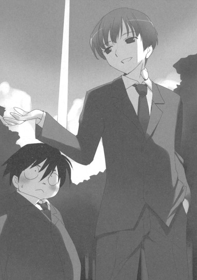
「一度で終わらせましょうよ。有田先輩好みの〈決闘〉で」
能美はにやりと凄惨な笑みを刻んで言った。
「無制限中立フィールドには、双方のバーストポイントを残らず一勝負に賭ける方法があります。二人以上の対戦者が持ちポイントを全てアイテムにチャージし、一人が生き残った時点で総取りとなる。どうです、これならスマートに決着できると思いませんか？」
「............」
数秒間じっと能美の笑顔を凝視し、ハルユキは小さくかぶりを振った。
「......残念だけど能美、僕はもうそこまでお前を信用できないんだ。別に意外じゃないと思うけどな。無制限フィールドだと、お前が決闘の場所に仲間を待ち伏せさせてる可能性を排除できない」
すると能美はやれやれというふうに両手を広げた。
「その危険はボクのほうにもあると思いますけどね！......なら、二つ保障をつけましょう。まず、シアン・パイル......黛先輩を連れてきていいですよ。二人と順番に戦ってあげます。そしてもう一つ、決闘の時間を、直前で何度でも、何分でも延期して構いません。これなら、誰かを待ち伏せさせるのは現実的に不可能だ」
「..................」
ハルユキは息を殺し、素早く考えた。
無制限中立フィールドでは、現実世界の千倍の速さで時間が流れている。例えば最初に午後五時のダイブを指定し、その数秒前に十分延期すれば、内部では一週間もの時間が過ぎ去る。これを何度も繰り返せば経過時間は膨大なものとなり、正常な神経では待ち続けるのは不可能だ。
と言って、小刻みなダイブと離脱を繰り返せば、そのたびごとに10ものバーストポイントを消費しなくてはならない。こちらも、それこそ〈王〉クラスでなければ耐え切れない。
無制限フィールドでの待ち伏せと言えば、三ヶ月前のクロム・ディザスター事件の時に黄のレギオンが赤の王ニコに対して仕掛けた一件を思い起こすが、あれもいつ現れるか解らないニコを内部で何ヶ月も待ったわけではない。強化外装譲渡の過程でディザスターの本体・〈チェリー・ルーク〉のリアルを割り、その動向を監視してダイブ時間を推測したのだ。
そのような手段でもなければ、確かに無制限フィールドに於いて待ち伏せを仕掛けるのは不可能──と思える。
しかしハルユキは、自分の加速世界に対する知識がまだまだ充分ではないことを自覚していたので、もちろん即答はしなかった。
「......そういうことなら、タクムと相談してもいいな？」
「勿論ですよ、どうぞどうぞ！ 幾らでも相談してくださって結構です」
にこりと笑い、能美は一歩下がった。
「結論が出たら、このアドレスに連絡してください。ボクも、覚悟を決める時間が欲しいですから」
ぴっとハルユキに匿名メールのアドレスを弾いて寄越す。そのまま振り向き、去っていく能美の背中を、ハルユキは息を殺して見つめた。
厭な感じ、ではあった。ハルユキとしては、能美にＢＩＣのひと言をぶつけ、そのまま一気呵成に対戦へと雪崩れ込む展開を想定していたのだ。ここで間を取られることで、ペースを握り返されてしまったような感覚がある。
能美が校舎に消えたのを確認してから、ハルユキは手近の樹の幹に寄りかかり、思考音声を発した。
『......どう思う、タク？』
『......危険だ』
と、能美との会話を全てオンラインで聞いていたタクムは即答した。
ハルユキは昨夜、自分が気付いたＢＩＣの一件についてすでにタクムに伝えてあった。その上で、能美征二とどんな決着をつけるかも決めておいたのだ。即ち、能美のバーストポイントがなくなるまで、まずハルユキが、次にタクムがひたすらローカルネット対戦を挑み続ける、という。
もちろん、レベル６のダスク・テイカー相手に二人ともポイントを全損する可能性を考えなかったわけではない。しかし、尋常な勝負で敗れるならば──それはそこまでの話ではないか？〈いちど戦場にダイブしたならば、ひたすら戦闘あるのみ〉。それこそが二人のマスターたる黒雪姫の教えなのだ。
しかし、能美の提案は、二人の予想しなかったものだった。タクムは緊迫した思念でもう一度繰り返した。
『危険すぎるよ、ハル。無制限フィールドでは、何が起きるか解らないんだ。相手があの能美なら尚更だよ』
『なら、提案を蹴るか？』
『............』
ここでタクムも沈黙した。やがて、トーンを落とした声がハルユキの脳裏に響いた。
『......でも、能美の言うとおり、仮にあいつが降参したところでそれを保証するものが何もないのも確かだ......。いつかまた、新しい罠を仕掛けてくる可能性が残るわけだからね......』
『なあ、タク。能美が言った、〈指定時間の不定延長〉を回避して無制限フィールドで待ち伏せる方法って、何か思いつくか......？』
再び数秒間黙り込んでから、タクムはゆっくりと答えた。
『膨大なバーストポイントか......膨大な忍耐力。それ以外にはないはずだ。問題は、能美に、そこまで巨大な犠牲を払うことを承諾するような仲間がいるかどうか、だね......』
今度はハルユキがしばらく考え、唸った。
『うーん......。──あいつが何らかの組織に所属してる可能性は高いと思う。それも、メンバーに対してＢＩＣの埋め込み手術を受けさせるような奴らだ。オレが秋葉原で戦ったラスト・ジグソーも多分その一員だろうな。両方ともアバターネームにタグはついてないから、レギオンってのとは違うんだろうけど......』
『ブレインチップで効率よくバーストポイントを稼いで、現実世界で使いまくろうって奴らか。まさしく、前に能美が言っていた〈加速利用者〉だね』
『だな......。そういう奴らが、能美の個人的な事情のために、ポイントや時間をほとんど無限に浪費してまで協力する......？』
ぐっと唇を噛み、ハルユキはすぐに続けた。
『いや、オレにはそうは思えない。能美が言ってた、無償の友情なんて存在しないって台詞は、あいつに関しては真実なんだろう。逆に言うと、もしそんな仲間がいるようなら、能美は......もっと、ちゃんとバーストリンカーのはずだって思えるんだ』
根拠のないハルユキの言葉だったが、タクムはすぐに同意の思念を返してきた。
『ああ。そうだ......その通りだね。これは、バーストリンカーであるぼくらと、加速利用者である能美との戦いだ。それがぼくらの拠って立つ矜持......そうだったね......』
瞬時、ボイスコールの回線に、双方の統一意思が白い閃光となって流れた。
ハルユキはぐいっと頷き、思考を強く送り出した。
『よし、決闘を受けよう。最初の指定時間は、お前と能美の部活が終わって、家に帰ってから......そうだな、午後八時。それを最低でも十回、合計一時間以上は延長して、待ち伏せの可能性をなくす』
『了解』
打てば響くような答えに、わずかに肩の力を抜き、ハルユキは付け加えた。
『......それに、正直、一発勝負のほうがありがたいしな』
『ふふ、ハルは一極集中型だからね。速攻で決めてくれるのを期待してるよ』
『せっかく心意の修行をしてきたお前には悪いけどな』
短く笑い合い、また放課後に、と言葉を交わしてハルユキは回線を切った。
──隣にタクムがいてくれて良かった。
深くそう思ってから、ハルユキは半年前、シアン・パイルと初めて戦った時に、彼にとどめを刺す選択をしなかったことに心の底から感謝した。
放課後。夜七時三十分。
自宅のリビングルームを片付け終え、いつもの冷凍ピザを温めようと箱を冷凍庫から出したところでチャイムが鳴った。
ホロウインドウに浮かぶタクムの顔をちらりと確認し、玄関に走る。開錠ボタンを押し、開き始めたドアに向かって、
「おっす。時間どおりだ......」
な、の一音を言い終える直前、ハルユキは口を開けたまま仰け反った。
厳しい顔で立つタクムの斜め後ろに、もう一つの見慣れた顔があったのだ。
「......ち、チユ......!?」
なんで今、ここに。
という疑問を口にする間も与えず、私服姿のチユリは無表情に「おじゃまします」と呟いて廊下に上がった。ハルユキの隣をさっとすり抜け、リビングに歩いていく。
その後ろ姿を呆然と見送ってから、ハルユキはタクムに向き直り、訊ねた。
「......な、なんで」
「ぼくが呼んだわけじゃない。エレベータで一緒になったんだ」
タクムもまた、理解しがたいといった様子で呟いた。細く息を吐き、ドアを閉めると、上がっていいか、というように首をかしげる。
こくこく頷いてから、ハルユキはタクムと一緒に廊下を戻った。
リビングではなくキッチンに立っていたチユリは、シンクに出しっぱなしになっていた冷凍ピザの箱を持ち上げると、小さく微笑んで言った。
「......相変わらず、こんなもの食べて」
そしてそれを冷凍庫に戻し、持参したらしい紙袋を持ち上げる。
「また、ママにラザニア作ってもらったから。三人で食べよ」
一瞬の間を置いて。
「......大丈夫、毒なんか入ってないよ」
その冗談を聞いた途端、胸の真ん中を鋭い痛みが貫き、ハルユキは顔を歪めた。
──なんで、オレたちが、こんなふうにならなきゃならないんだよ。
という思考が脳裏を駆け巡る。視線を逸らすと、タクムもまた眼鏡の下で両眼を強張らせている。
そんな二人をそれ以上見ずに、チユリは手早く耐熱容器を取り出すと、中身を三枚の皿に取り分けた。それを左手に一枚、右手に二枚器用に載せて、リビングに歩いてくる。
「ほら、座って」
微笑み、ハルユキの前に少し大盛りの皿を、タクムと自分の前に同じくらいの皿を置いた。ダイニングテーブルの真ん中に置かれたカトラリーバスケットからフォークを取り、二人に差し出す。
そんな仕草ひとつひとつが、先週までのチユリに比べるとまるで見えない糸に縛られているように重く、ハルユキはそれ以上見ていられなかった。フォークを受け取り、視線を皿に固定して、小声で言う。
「......サンキュー。頂きます」
「......頂きます」
タクムも続き、チユリの「どうぞ」の声を合図に、三人は無言でチユリママ特製のラザニアを食べ始めた。
美味しかった。先週ご馳走になったものよりも更に一枚上の味だった。しかし、その美味しさが、ハルユキの胸に宿る痛みをよりいっそう鮮明にした。口を止めたら泣いてしまいそうだったので、ハルユキは皿を抱えるようにして、ひたすらに食べ続けた。
三人の皿は十五分で空になった。洗い物をして戻ってきたチユリが、もう一度テーブルに座る。
しばらく黙り続けたチユリがようやく口を開いたのは、七時五十分だった。
「............能美に、来いって言われたの。決闘の場所に」
「な......」
「えっ......」
ハルユキは、タクムと同時に声を上げた。
一瞬の空白に続き、思考が高速で回転し始める。
「そ......そうか。お前はもうレベル４だから......無制限フィールドにも入れるのか......」
愚かにも、チユリが現れる可能性をハルユキはまったく考えなかった。しかし確かに、能美ならばライム・ベルを伏兵として利用することを躊躇いはするまい。
「で、でも......能美は、どうやってチーちゃんに正確な時間を伝える気だったんだ......？」
タクムの疑問はもっともだ。ハルユキたちは、指定時間を任意に変更し、待ち伏せるバーストリンカーをふるい落とせる。それはチユリも例外ではない。
向けられたふたつの視線から逃れるようにチユリは顔を伏せ、呟いた。
「......能美はあたしに、こう指示してきた。ハルたちに直接会って、能美を裏切るって言え、って。そうやって信用させて、同時にダイブして......デュエルが始まったら、自分をヒールしろ、って」
「............なん、だって......」
ハルユキはぎりっと歯を食い縛った。
──どこまで卑劣な真似を！
という憤激が脳を貫くと同時に、その指示を今ハルユキたちに告白しているチユリの意図についても、いっそうの途惑いが湧き上がる。
それを感じたように、チユリは細い声で続けた。
「......でも、そんなの無理だよね。今更あたしがそんなこと言っても、説得力ないもん。だから、あたし......本当のことを言って、二人に頼もうと思ったの」
「頼む、って............」
薄く涙に濡れた大きな瞳で、ハルユキとタクムを順番に見て、チユリはきっぱりと言った。
「お願い、あたしを連れていって。あたし、行かなきゃいけないの。もし駄目だって言われたら......言われても、仕方ないけど、そしたらあたし今ここで無制限フィールドにダイブして、二人が来るまで向こう側で待つ。何ヶ月でも、何年でも待つ」
「......チユ、お前............」
塞がりかけた喉から声を押し出す。チユリの宣言もそうだが、ほんの一週間前にはブレイン・バーストのいろはも知らない初心者だったはずの彼女の口から、〈無制限フィールド〉などという言葉が滑らかに出てくることにも深い衝撃を覚えた。
ハルユキは、この状況が始まってから何十、何百度目かの疑問を胸の奥で迸らせた。
──なんでなんだ！
──チユ、お前はいったい何のためにそこまでするんだ！あれほど否定していたブレイン・バーストに固執し、憑かれたようにポイントを稼ぎ続けるのは、何のためなんだよ!!
そう、ハルユキは、これすらも、と考える自分を止められなかった。
チユリの今の言葉すらも罠だったら？二重に僕たちを裏切り、決闘に割り込んで、僕とタクムのポイントを奪う作戦だったとしたら？
正直、一対一でも勝負がどうなるか解らない対ダスク・テイカー戦なのに、ライム・ベルの回復アビリティが加われば勝機はほぼ消える。火曜日の決戦がそうなったように。
ハルユキには解らなかった。チユリの意図がどうしても掴めなかった。
重苦しい沈黙を破ったのは、タクムの静かな声だった。
「......解ったよ、チーちゃん。一緒に行こう」
「た、タク......」
タクムはハルユキに向き直り、穏やかに微笑んで、言った。
「ハル。君は半年前、あの病院での初めての対戦で、ぼくを助けてくれた。さぞ迷っただろうね。ぼくの命乞いが口先だけで、対戦が終わった直後にそのまま昏睡状態のブラック・ロータスを狩ろうとする可能性は充分にあった。でも......君は、ぼくを許した。いや、信じてくれた。あの時のことは永遠に忘れないよ。............だから」
震える喉で大きく息を吸い、タクムは毅然と言い切った。
「ぼくも、チーちゃんを信じる。どんなに考えてもチーちゃんの真意が解らないのは悔しいけど......でも、チーちゃんの行動によってたとえ何が起ころうと、ぼくはそれを受け入れる」
再びのしんとした静寂のなか、ハルユキは、チユリの唇が無音で動くのを見た。
ただの震えのような微細な動きだったが、しかし耳には確かな言葉が届いた。
......ありがと、タッくん。
それを聞いた瞬間、ハルユキはぎゅっと目をつぶっていた。瞼のスクリーンには、昨日チユリの部屋で彼女が見せた涙が甦っていた。
あたしは、あたしの意思で、行動してるの。
チユリは泣きながらそう言った。ならばもう、細々とした状況はどうでもいい。タクムの言葉どおり、信じるか、信じないか。問題はそれだけだ。そしてその答えは決まっている。何年も前から、それこそチユリとハルユキが満足に喋れもしなかった頃から、すでに決定しているのだ。
「解った」
ハルユキもこくりと頷いた。
「行こう。三人で」
午後八時になると──同時に、ハルユキは能美に最初のタイプメールを送った。指定ダイブ時間は八時五分。場所は無制限中立フィールドの高円寺駅前。
もちろん、この両方は今後次々に変更される。新たな指示を送るのは、前の指定時間が来るほんの数秒前なので、仮に能美が誰かを待ち伏せさせようとしても延期を伝えるのは不可能だ。唯一、待ち伏せ要員と能美が、ハルユキたちのようにリアルで落ち合っている場合は同時ダイブされる危険があるが、能美にそこまで信頼できる仲間がいるとは思えない。また、その可能性をなくすために能美ともこちら側で会ってからダイブする案も検討したが、能美の前に無意識の生身を放置するのは尚更危険だという理由で却下された。
時間と場所を不規則に変更しながら、ハルユキは次々とメールを送り続けた。
待機している間の緊張感は、まるで歯医者の待合室で長時間放置されている時のように不快なものだった。しかし、能美の感じている苛立ちはこの比ではないだろうと思って耐える。向こうは、ハルユキたちがいったい何分、何回引き伸ばすつもりなのかも読めないのだ。
午後九時十二分。
たっぷり十五回以上も延長を繰り返したすえに、ついにハルユキは言った。
「よし......一分後にダイブする」
「了解」
とタクムが答え、チユリもこくりと頷いた。
三人の総ポイントを賭けた一本勝負。どんなに長引いても一時間とはかかるまい。つまり、現実時間でわずか三・六秒後には、全てが終わっている。
先輩、とハルユキは心の中で、遥か沖縄の地にいる黒雪姫に向かって呼びかけた。
......先輩、もし僕が負けたら、あなたはものすごく怒って、そして悲しむでしょうね。でも、きっと最後には解ってくれると信じてます。僕が、あなたの騎士を目指しているからこそ、こうしなくちゃならなかったんだってことを。
九時十三分五秒前。
ハルユキは最後のメールの送信ボタンを押した。
文面は──【処：梅郷中学校グラウンド。刻：今。】
「行くぞ!!」
叫んだハルユキに続き、三人は声を揃えてコマンドを唱えた。
「「「アンリミテッド・バースト!!」」」
10
夜。
巨大な青白い円盤が、黒い空に煌々と輝いている。
地面も、建物も、全て色抜きされたように白い。無色ではなく、乾いた骨の色だ。広い道路に、四角い家々がくっきりとした影を落としている。彼方には、螺旋を描く白亜の塔に変じた新宿副都心が夜空を貫かんばかりにそびえる。
「......〈月光〉ステージか」
タクム──シアン・パイルが、ぐるりと仮想世界の西東京を見回してから呟いた。
ハルユキもすぐに、記憶している特徴を列挙した。
「明るいけど、影の中はほとんど見えない。音が遠くまで届く。エネミーが少ない。トラップ型の地形効果も存在しない......」
「オープンスペースでは、ハイディングからの不意打ちはほぼ不可能だね。校庭にして正解だな」
頷き合ってから、ちらりと後ろを見る。
もとは有田家のリビングルームだった、がらんとした白い空間には、月明かりの下でも鮮やかなエメラルドダリーンに輝く〈ライム・ベル〉がひっそりと立っていた。
外見は、火曜に見た時と変化はない。しかしわずか二日の間に膨大なデュエルをこなし、その全てに完勝することで、彼女はすでにハルユキたちと同じレベル４に達している。
もっとも、レベル４になってからが果てしなく長いので、もうすぐ５に届く二人となったばかりのチユリでは総獲得ポイントにはまだまだ差があるだろうが、少なくともポテンシャルは同等のはずだ。
短期間でそこまで駆け登るあいだに、能美の回復／囮役としてチユリは、無数のバーストリンカーのありとあらゆる攻撃に晒されてきたに違いない。それがどれほど辛く、苦しい経験かは、ハルユキにも痛いほど解る。
しかしチユリは、疲労をまったく窺わせない動作ですっと二人の前に立つと、短く言った。
「行こ」
そして躊躇せず、元のマンションの二十三階に相当する高さのテラスから身を躍らせる。少し下のテラスや装飾物を足場に、ひらりひらりと地上へ降りていく。その動きに、新米のぎこちなさはかけらもない。
ハルユキはもう一度タクムと顔を見合わせ、思わず苦笑いしてしまってから、同じように飛び降りた。
三人は、いつも通学に使っている幹線を避け、裏道を小走りに進んだ。周囲に注意を払いつつ、ハルユキとタクムは過当なオブジェクトを破壊して必殺技ゲージを貯める。
まっすぐに学校には入らず、まず青梅街道を挟んで向かいにあるファミレスの屋上に出ると、物陰から決闘場の様子を確かめた。
梅郷中学校は、まるで中世ヨーロッパの宮殿のような姿へと変じていた。ゴシック様式とでも言うのか、巨大な円柱が正面に並び、壁面には天使や悪魔の彫像が幾つも突き出している。
まさかあれがみんなデュエルアバターってことはないよな、と眼を凝らし、全部石であることを確認してから改めて校庭を見る。
広いグラウンドは、細かいタイルを複雑に敷き詰めた庭園となっていた。オブジェクトは一切存在せず、南の端に立つ槍のような塔──もとは防球フェンスの支柱が、長細い影を伸ばしているだけだ。
「......隠れてる奴はいなさそうだな」
ハルユキが呟くと、タクムも頷いた。
「うん。......でも、能美もいないけどね......。ダイブが半秒くらい遅れたかな......」
「五分待って来なければ、いったん高円寺駅から離脱しよう。......いや、待った」
その時、ハルユキの耳に、ごくかすかな風切り音が届いた。ステージは完全に無風なので、空を何かが移動している。飛行型エネミーか──あるいは、飛行型デュエルアバター。
さっと南西の空を振り仰いだハルユキは、それを見た途端、ぎしっと全身を硬くした。
小さな星が瞬く夜空を、月明かりに青白く照らされながら近づいてくる影。
細い体。両手の鉤爪。そして背中に伸びる、悪魔の翼。
──ダスク・テイカー。
「能......美......っ」
無意識のうちに呻いた、その声に引かれたかのように、アバターは降下を始めた。腕を組み、優美な螺旋を描いて、校庭の中央に舞い降りてくる。
着地はほとんど無音だった。その挙措を見ただけで、能美がもう飛行アビリティの操作を完全にマスターしていることがハルユキには解った。
〈略奪〉の属性を持つアバターは、ゆるりと翼を畳むと、そこで動作を止めた。
再び、完全な静寂が世界に満ちる。
ハルユキの五感には、何の変化も捉えられない。こっそり近寄る動きも、死角を這い進む足音も、何ひとつ存在しない。
たっぷり一分以上待ってから、ハルユキは囁いた。
「......行こう」
隣で頷いたタクムと同時に立ち上がり、道路へと飛び降りる。その足音を聞き、ダスク・テイカーがすっと顔を向けてきた。
そちらをじっと見つめたまま、ハルユキたちは校門から梅郷中の敷地に入ると、校舎の端を回りこんで校庭を目指した。
三人の足音が、タイルに硬い音を立てる。月光が三つの影をくっきりと刻む。
チユリは、校庭には入らず、校舎の南壁に沿って歩くと影の中にひっそりと立った。ハルユキとタクムはまっすぐ広い空間の中央を目指した。
中央に立つダスク・テイカーから二十メートルほど離れたところに立ち止まり、ハルユキは無言で視線をぶつけた。
それを数秒間受け止めてから、能美は胸で組んでいた腕を解き、軽く左右に広げた。
「......確かに、何度延長してもいいって言ったのはボクですけどね！」
金属質のエフェクトを帯びた少年の声が、青白い世界に軽やかに響いた。
「まさかあんなに引っ張るとは思いませんでしたよ、先輩！用心深いって言うか疑り深いって言うか......」
「お前相手に、どれだけ疑っても足りないってことはもう学習したからな」
言い返したハルユキに、くくく、と短い笑い声を上げてから、能美は右手をまっすぐ前に突き出した。
その指先に、一枚のカードが挟まれていた。以前、黄の王イエロー・レディオが過去の映像を再生するのに使ったものと似ているが、こちらは血のような赤だ。無制限中立フィールドの〈ショップ〉で販売している特殊アイテムは、そのほとんどがあのようなカード型だと聞いている。
能美はそれをハルユキたちに示し、言った。
「これが、その名も〈サドンデス・デュエル・カード〉です。けっこう高いんですけど、ボクの奢りにしときますよ」
くく、と再びの笑い。
「......まず、ボクがこれに手持ちの全ポイントをチャージします。残りの決闘者枠ふたつはチームに設定してありますから、お二人もそれぞれポイントを賭けてください。ボクのＨＰゲージがゼロになった時点で、もしお二人とも生き残っていたら、チャージされた全ポイントがお二人に均等配分されます。どちらか一人ならば総取り。そしてボクは、お二人を共に倒した時点でポイントを得られる」
「つまり、オレたちが二人とも生き残った場合、互いに戦う必要はないってことだな？」
「その通り。ま、これはちょっとした配慮ですよ。重要なのは......」
能美はもう一度くるりとカードを閃かせ、言った。
「この決闘は、誰かが死ななきゃ終わらない。そして死んだものは必ずブレイン・バーストを失うってことです。いっさいの留保なく、ね。言っておきますが、ポータルから〈離脱〉したら、その時点で敗北扱いです。現実に戻ると同時に強制アンインストールですよ」
「......なるほど」
頷き、ハルユキはタクムを見た。
シアン・パイルも、マスクに並んだスリットの奥で一度強く眼を光らせ、ぐっと首を動かした。
「よし、いいだろう」
ハルユキの声に、能美はゆっくり頷くと、左手の指先でカードに触れた。何度かの操作を加えると、カードが一度、鮮やかな真紅に輝いた。
それを、しゅっとタクムに向かって投げる。受け止め、同様に触れると、再びカードが光る。タクムが投げたカードを、ハルユキは右手の指で挟み止めた。
大きく息を吸ってから、左手でクリック。ポップしたホロウインドウ中央、チャージのボタンにタッチ。
無愛想なフォントによる、サドンデスルールの説明が流れてから、イエス／ノーの確認ダイアログが浮かぶ。イエス。
更にもう一度、本当にいいのか、といつもは限りなく素っ気無いブレイン・バーストのシステムが問うてきたことで、ハルユキはこれが死地の際の際なのだとリアルに理解した。現実の肉体とは切り離されているはずなのに、すうっと背中が冷たくなる。手足が痺れると同時に、仮想のアドレナリンが血管に放たれる。
しかし、もちろん、イエス。
カードが一際眩い血の色に輝き──ハルユキの手から離れて、少し高い位置に浮き上がった。その周囲を、カウントダウンのデジタル数字がゆっくりと回転する。
もしこの決闘が加速世界に広く喧伝されていれば、きっと恐ろしい数のギャラリーが集まったに違いない。バーストリンカーとなって半年経つハルユキだが、いまだに全ポイントを賭けたサドンデスバトルの話など聞いたこともない。
──いや。
それは違う。聞いている。
ハルユキが誰よりも敬愛する剣の主、黒の王ブラック・ロータス。彼女は、レベル９バーストリンカーにのみ課せられる特例ルールとして、常にサドンデスの可能性を抱えて戦っている。そう、例えば毎週末の領土戦。あそこにもし他の王が、周到な準備を整えて現れたら。万が一、そのデュエルに敗れたら。あの人は、即座にブレイン・バーストを永久喪失するのだ。
............先輩。あなたは、ずっと、こんな重圧の中で生きてきたんですね。
胸の奥でそう呟いた一秒後──。
カウントダウンがゼロへと到達した。
燃え上がる文字がデュエルの開始を告げた。
ダスク・テイカーが、両手の鉤爪を広く掲げた。
ハルユキも腰を落とし、左右の手刀を前後に構えた。
能美は翼を畳んだままで、また紫の波動を出す様子もない。まずは心意抜きの地上戦が望みということか。
──上等だ！
胸のうちでひと言叫び、ハルユキは地面を蹴った。
彼我の距離二十メートルを、一気に詰めるべく猛然とダッシュ。視界中央の敵影がみるみる大きくなる。
白い校庭に伸びるポールの影を横切る。一本、二本──
三本目を踏んだ時、それが起こった。
幅十センチもない細い影、何ものも隠れることのできないはずのその暗闇から、まるで湧き出すように何かが跳ね上がり、左右からハルユキに迫ったのだ。
それは、一辺一メートルはあろうかという四角い板だった。艶のない、真っ黒な板が二枚、ハルユキがポールの影を踏んだ瞬間にバネ仕掛けのように起き上がり、恐ろしい勢いで両側から挟み込んだ。
シルバー・クロウのスピードを以てしても回避できなかった。両手を広げ、板の側面に叩きつけるのが精一杯だった。
ガァン！ という金属音が響き、ハルユキの両腕の関節から火花が散った。自分のものだけ見えるＨＰゲージがわずかに削れた。
「ぐっ......」
鋭い痛みに、思わず声を上げる。厚さ数ミリもない極薄の板なのに、まるで巨大な万力に締め付けられているような凄まじい圧力だ。とても腕を広げていられず、手の向きを返して、肘と手の甲で懸命に抗う。しかし板はたちまち幅五十センチほどの間隙にハルユキを押し込め、そこでようやく止まった。
ぎし、ぎし、と自分のアバターが軋む音を聞きながら、ハルユキは驚愕を無理やりに振り払い、考えた。
──〈月光〉ステージにトラップはない。ならこれは、ダスク・テイカーの未知の必殺技か!?いや、もしそうなら、発動に際して必ず何らかのモーションや発声がある。それに、このような強力な技があるなら、前回の対戦で使っていたはずではないか。となれば────
この漆黒の板は、能美の技ではない。もちろん、ライム・ベルでもない。
つまり、この戦場に、もう一人......。
いや、有り得ない。あれだけ何度も直前延期を繰り返したこの決闘を待ち伏せできる者がいるはずはない。
刹那の思考がそこまで至った時、それを呆気なく裏切るかのように、ハルユキはごく幽かな気配を感じた。
視線が右側、校舎方向へと吸い寄せられる。
白い校庭の北端は、四階建ての校舎が作り出す影に黒々と沈んでいる。壁際には、小さくうずくまったままのライム・ベルの姿が小さく見える。
そのずっと手前、校舎の影のほぼ先端部分から第五のアバターが無音で出現するのを、ハルユキも、背後のタクムも、声もなく見つめた。
奇怪。
そうとしか言えない姿だった。ハルユキは、かつて加速世界で、これより奇妙な姿をしたデュエルアバターを見たことはなかった。
全身が、垂直に並んだ薄い板で造られている。まるで、四角く切り抜いた紙を体のパーツの形に何枚も重ねたかのようだ。それらの板の間には一センチほどの空隙が存在するため、横方向からはくっきりとシルエットが浮かぶのに、正面からは細い線が縦に並んでいるようにしか見えない。
そして、アバターを構成する数十枚の板は、全て墨で塗られたかの如く艶のない黒に染まっている。
ハルユキにとっては、アバターの造形よりも、あるいはその色のほうがより衝撃的だったかもしれない。
積層板アバターは、どれほど見ても、完璧なまでに黒かった。かつて見た〈黒っぽい〉アバターたち──クロム・ディザスターのように銀がかっても、ダスク・テイカーのように紫がかってもいない。あらゆる波長の光を吸収し、染まることを拒否する、完全な黒。
「............おまえ、は」
ハルユキは、掠れた声でそう呟いた。
しかしアバターは何も答えず、代わりに四角い頭をかしげて、幾つもの空隙の奥からハルユキをじっと見返してきた。途端、体を左右から挟み込む二枚の板の圧力が増す。シルバー・クロウの装甲が嫌な音を立てて軋む。
ここでハルユキはようやく、積層アバターには右腕が丸ごと存在しないことに気付いた。代わりに、肩のあたりに朧な灰色の光が揺らいでいる。
どういうロジックなのかは解らないが、その右腕こそが、今ハルユキを拘束している二枚の板なのだということは、色や形からしても明らかだ。
そしてもう一つ、明白なことがある。
この黒いアバターは、能美が用意した伏兵だ。ハルユキたちがあらゆる可能性を検討し、入念に排除したはずの待ち伏せなのだ。
「......なぜ......どうやって......。この時間を特定できるはずはない......」
と、呻くような声を上げたのは、背後に立ち尽くすタクムだった。
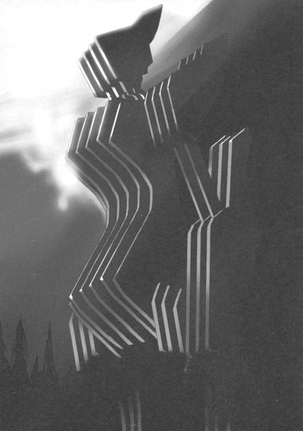
それに対しても、積層アバターは無言を貫いた。代わりに、くく、と短い笑い声を上げたのは、ハルユキの数メートル先に立つダスク・テイカーだった。
ゆるりと構えを解き、夕闇色のアバターは、もう一度嗤った。
「ふ、ふ。まったく、何回も楽しませてくれる人たちですね。いいなぁ、そのビックリっぷり。見物料を払いたいくらいですよ。......そういえば、さっき何か言ってましたっけ。『どれだけ疑っても足りないことはもう学習した』？残念ながら、お勉強が足りなかったみたいですね、はは、ハハハハ!!」
短い哄笑に続けて、さっと両手を広げる。
「......とは言え、お二人はもうすぐポイント全損してしまう身ですから、もう何を貰っても意味ないですよね。せめてもの餞に、ネタばらしくらいしてあげましょう。──あなたたちが指定した時間をボクが予測できたわけじゃないし、と言ってそこのヒトも、ボクらが現れるまで、こっち側で何ヶ月も待ったわけじゃないですよ、もちろん」
右手の鉤爪が更に動き、レンズ形バイザーが嵌まる自分の頭をこつこつと叩く。
「ボクらが、ここにブレイン・インプラント・チップを持っていることは、もうお二人はご存知だ。ＢＩＣというのは、脳の感覚野にバイオエレクトロニック・インターフェースとして成長型端子を繋ぐわけですが......プログラミング次第では、その端子を、脳の深部に届かせることも可能なわけです」
「し......深部......？」
呟いたハルユキに、能美は大仰な仕草で頷いた。
「そう。当然、とっても危険です。ボクもそこまではしていない。でも、そちらのヒトは外見のわりになかなか大胆でね。端子を、脳の思考クロック制御部まで伸ばしているんですよ」
思考クロック。
それこそ、ハルユキたちバーストリンカーの〈加速〉を実現している超テクノロジーの根幹を成す言葉だ。ブレイン・バースト・プログラムは、使用者の心拍を基準とするベースクロックを、脳内で一千倍に引き上げることで思考を加速させる。通常対戦フィールド、または無制限中立フィールドにダイブしている限りその倍率は固定で、操作は一切できない。
つまり、ハルユキたちが決闘の時間を一時間以上延期したことで、この世界では二ヶ月近い主観時間が流れている。そこまでの時間をひたすら耐え忍び、待ち伏せに協力してくれる仲間は能美にはいないはず──だったのだ。しかし。
「もう一度、言いますよ。彼は、現実時間で午後八時からこの無制限中立フィールドにダイブしていた。しかし、決して内部で何ヶ月も待ちぼうけたわけではない。いいですか......彼は、ＢＩＣによって脳の思考クロック制御部を非活性化することで、思考の加速を任意に停止できるんです。彼はね、加速世界で唯一の、〈減速能力者〉なんですよ！」
「......減速......能力......」
その声が、自分の喉から出たのか、あるいはタクムのものなのか、ハルユキには解らなかった。
それきり絶句したハルユキの耳に、やがて、新たな声が届いた。
「......やれやれ」
それは、デュエルアバター特有の電子的エフェクトを経てなおどこか温かいとすら思える、穏やかな青年の声だった。ハルユキが、小学校時代のクラス担任でただ一人好きだった、眼鏡を掛けた若い男性教師のものによく似ていた。
ハルユキを恐ろしい圧力で拘束しながら、一切の緊張のないソフトな声で、積層アバターが初めて言葉を発した。
「あのね、テイカー君。きみのその饒舌さが、巡り巡ってこんなサドンデスデュエルなんて状況にきみを追い込んだんじゃないかと、わたしには思えてならないよ」
「はは、それは見解の相違ですね。あなたが沈黙を武器だと思っているように、ボクは能弁を武器だと思っているだけですよ。ね、どうです、彼らの仰天顔は？ボクらの技術力に、もう戦う気も失せたみたいじゃないですか？」
「それはどうかな。そこの小さい子は、どうしてなかなか頑張っているよ。硬くてこれ以上は潰せない」
「へぇ、腐ってもメタルカラーですね」
ふふふ、と嗤う能美に、積層アバターは一本きりの左手で小さく合図した。
「そんなわけで、わたしは彼を押さえるのに手一杯だ。早めに、後ろの大きい子から片付けてくれると助かるな」
「了解、了解。支払った報酬以上に働いてもらうつもりはありません。あんなのは三分......、いや三十秒ですよ」
侮蔑的な能美のその言葉が──。
ようやく、ハルユキの闘志を再点火した。
──あんなの、だと？ タクに真っ当な勝負で一度も勝ったことのないお前が、あんなの、だと!?
ぎりりと奥歯を食い縛り、左右の板に一瞬視線を走らせる。
──こんな薄っぺらい板きれに、いつまでも拘束されてる場合じゃない。敵が二人なら、こっちも二人だ。能美はタクに任せて、オレはこいつを......倒す！
その思考を含む意識の全てを、ハルユキは眉間の一点に集中させた。
どこからともなく金属質の高周波が生まれ、シルバー・クロウのボディを震わせる。意識が、ブレイン・バースト・プログラムに秘められたイマジネーション回路に接続する感覚。
ハルユキを拘束する積層アバターは、右肩にずっと灰色のオーラをまとわせている。継続的発光現象、すなわち〈過剰光〉は心意システム行使の証、とニコが言っていた。つまりこの板は、あのアバターの心意技なのだ。ならば、こちらも全力を振り絞って戦うまでだ。
シルバー・クロウの鋭い指先に、ぽっ、と白い光が灯る。
それはすぐに手首から肘近くまでを薄く覆う。
ハルユキは大きく息を吸い──命名したばかりの心意技の名を、大きく叫んだ。
「〈光線......剣〉!!」
そして両腕を交差し、右手の先端を左の板に、左手を右の板へと突き込んだ。
ギャアアアアン！ という甲高い音とともに、伸長した光の剣が漆黒の板に激突し、眩く火花を散らした。
剣が食い込んだ箇所が、まるでプラズマアークの炎を浴びせたかのようにたちまち赤熱する。輝きはみるみる薄い板の表面に広がり、激しく振動させる。
──このまま、突き破る!!
内心でそう叫び、ありったけのイメージを振り絞った、その瞬間。
「おっと......これはこれは、大したものだ」
という穏やかな声が聞こえた。続けて、
「〈静止重圧〉」
技名のコール。
突如、二枚の板が、ゴゴン！ と鳴動した。
わずか一ミリ程度だった板の厚みが、みるみる増大していく。五センチを超え、十センチを上回り、それはいつしか板ではなく〈塊〉と呼ぶべき代物へと変ずる。
闇そのものを切り出したかのような質感の巨大な直方体二つは、これまでを遥かに上回る圧力をハルユキに浴びせてきた。
「ぐ......う！」
呻きながら、あらん限りの心意を振り絞り、光剣で抗う。しかし、先ほどは溶融寸前だったと見えたのに、厚みを増した途端に赤熱部分は半減してしまっている。
積層アバターの肩からは、いっそう強く灰色のオーラが放たれている。この技が、システム規定の必殺技ではなく、敵アバターのイメージによって導かれた心意技であることはもう確定的だ。
せめぎ合う双方のイマジネーション出力を介して、ハルユキは、積層アバターの内側に広がるものに触れた気がした。
闇。
能美の心意のような、万物を呑み込まんとする飢えた虚無ではない。そこに確かに存在するのに、いかなるエネルギーを持たず、ゆえに与えず、さりとて奪わず、あらゆる干渉を拒む。いや、能動的な拒否ですらない。それは〈隔絶〉だった。人の心の有り様とは到底思えない、絶対的な乖離だった。
そうと感じた瞬間、ハルユキは反射的に、心意を触れ合わせるのを怖れてしまった。
両手の光剣が、ほんの刹那弱まり、明滅した。
それだけで充分だった。恐ろしいほど重く、硬いオブジェクトが両肩に食い込み、ハルユキの動きを完全に封じ込めた。再び、積層アバターの声が聞こえた。
「ねえ、君。お願いだから、そのまま大人しくしててくれないかな。わたしの請け負った仕事は、君を一時足止めすることだけなんだ。戦う気はないんだよ」
──何を......勝手な、ことを！
胸中で鋭く叫び返し、ハルユキは改めて光剣の出力を上げた。しかし、黒い塊の重圧をわずかに減ずるのが精一杯で、とても押し返すまでには至らない。
完全に拘束され、動きの取れないハルユキの視界に、二つのアバターがゆっくり歩み寄る姿が捉えられた。
西から、小柄な体躯に比べてやや長めの両腕をだらりとぶら下げたダスク・テイカー。
東からは、右腕の〈杭打ち機〉の尖端を鋭く光らせるシアン・パイル。
白い校庭の真ん中で、双方はやや距離を取って向き合った。
急激に増大した闘気がフィールドに満ち、空気の密度を押し上げた。びりびりと震えるような緊迫感に、ハルユキは声を出すことも、何かを念じることもできなかった。
「............へぇ」
不意に、能美が両手首をぶらぶら振りながら言った。
「それなりに準備はしてきたみたいですね。これなら、ちょっとは楽しめるか......な？」
す、と両手を持ち上げ、胸の前で指先を触れ合わせる。ぃぃぃいいいん、と歪んだ振動音が生まれ、突如、脈動する紫色の光が強く迸る。ハルユキたちが〈虚無の波動〉と呼んでいる能美の心意技だ。すぐにでも飛行し、遠距離火力で攻撃してくるものとハルユキは思っていたが、シアン・パイルを侮っているのかどうやら地上戦を行うつもりらしい。
「その技、名前はあるのか」
と、落ち着いた声でタクムが訊いた。それに対して、能美は大きく息を吐くような笑いで答えた。
「ハッ、ボクが技の名前なんかつけるわけないでしょう！名前がないと多少発動は遅れるらしいですけど、そんなゲーマーみたいな真似は御免ですよ！......それにね......」
びゅっと両手を大きく広げる。波動光が宙におぼろな軌跡を残す。
「そんなこと、訊く意味があるんですか？ 数分後にはブレイン・バーストを喪ってしまうあなたに？」
「あるさ、勿論。自分が引導を渡した相手のことを、せめてしばらく覚えておきたいからね」
冷ややかに切り返したタクムは、右腕の強化外装を、胸の前で横向きに構えた。
彼が赤の王ニコの指導のもと、一週間という時間をかけて心意の修練をしてきたことはハルユキも知っている。しかしそれがどのような技なのか、そもそも実戦で使えるレベルに達しているのかまでは聞いていない。
二つの塊に挟まれ、アバターが悲鳴を上げている状況ではあるが、それでもハルユキはじっとタクムに視線を注ぐのを止められなかった。
シアン・パイルは、次に左腕も持ち上げ──。
ハルユキが予想だにしなかった行動に出た。
左手の五指で、強化外装から覗く鉄杭の、鋭い尖端を強く握ったのだ。
......タク、いったい何を!?
ハルユキは眼を見開いた。あの杭は、タクムの心の傷──小学生時代に剣道教室で受けていた惨い苛めの記憶から生まれたものだ。自分の喉を何度も何度も突いた竹刀であり、また苛めていた奴らの喉を深く貫いてやるための凶器なのだ。
その切っ先を、なぜ自分で握るのか。
ハルユキの疑問に、タクムは行動で答えた。
「──〈蒼刃剣〉!!」
轟くような技名コールに続き。
ガシュン！ と鉄杭が発射された。ハルユキは、その切っ先がタクムの左手を吹き飛ばす光景を否応なく予期した。しかし。
ばらばらになって消し飛んだのは、右腕の〈杭打ち機〉本体だった。杭そのものは、左手に握られたまま青白い光となって残った。タクムはそれを、大きな半円を描いて頭上に掲げると、解放された右手も添えて、びしっ！と体の前に振り下ろした。
光が飛び散り、その中から出現したのは。
剛毅、かつ優美な造形を持つ、近接戦用切断型武器。
すなわち剣だった。
刀身は一メートル半にも及ぼう。片刃だが完全な直刀で、峰側には深い藍色のラインが一本走っている。刃の色は薄い蒼、全体を同色のほのかな燐光が包む。
その美しい武器を構えたシアン・パイルは、装甲の色と相まって、完全なる近接型デュエルアバター以外の何ものでもなかった。いや、もはや〈剣士〉と呼ぶべき完成された姿だった。
............タク。
ハルユキは、声にならない声で囁いた。
その思念が聞こえたか、タクムは一瞬ハルユキを見て頷いた。再び前を向き、すっと右足を前へ。練達の剣道選手そのものの動作で、剣を中段に構える。
足元からいっそう激しい闘気が吹き荒れ、能美の両手に宿るオーラをゆらゆらと揺らした。
「......なるほど」
それを受けても、表面的には動揺を窺わせない声で、能美が呟いた。すぐに侮蔑的な笑いが続く。
「ふふ、なるほどね。ボクに試合で負けたのが、よっぽど悔しかったわけですか。そんなチャチな剣を具現化してくるなんてね。でもま、剣での勝負をお望みなら......仕方ない、ちょっとだけ付き合ってあげますよ」
そして能美もまた、両手で何かを握る仕草をすると、ぴたりと中段の構えを取った。
紫の波動がずううっと伸長し、長剣の形を取るのを、ハルユキは驚きと得心を半分ずつ感じながら見た。能美は以前あの波動を長い鉤爪の形に変えた。恐らく近接武器であれば、イメージ次第で様々なフォルムに変形できるのだ。
外貌こそデュエルアバターなれど、先週の剣道部内トーナメントの決勝とまったく同じ構えで、二剣士は相対した。しかしここに審判はいない。防具もない。懸かっているのは、バーストリンカーとしての命そのものだ。
じりっ、と双方のつま先が動き、距離を詰め始める。
二人の剣尖の中間で、実際に白いスパークが細かく弾け、空気を灼く。
戦いはすでに始まっている。タクムと能美は、より強いイマジネーションで〈事象を上書き〉せんとせめぎ合っている。
──タク、信じろ、自分を!!
ハルユキが胸中で叫んだ、その刹那。
「──セエアアアアア!!」
「──チェエエエエエ!!」
二つの気勢が月夜の戦場に音高く響き、双方が同時に地を蹴った。
蒼と紫の軌跡を鮮やかに引き、二本の剣が正面から切り結ばれた。
ガキィィィン!! と強烈な衝撃音。万物を削り取ろうとする能美の心意を、剣の本質たる〈切断力〉の具現化であろうタクムの心意が撥ね返す。大きく弾き合った剣が、同時に振り下ろされる。再び、轟音と火花。更にもう一度。
そこで距離を取り、両者はまた中段の構えを取って対峙した。
ダスク・テイカーのマスクから、からかうような声が洩れた。
「おやおや、これは驚いた。付け焼刃にしちゃなかなか頑張るじゃないですか」
「当然だ。インチキなしの剣道勝負なら、ぼくはお前よりも強いからね」
タクムの切り返しに、くくくと喉声で笑う。
「それはどうですかね、センパイ。ボクが気付いてないとでも思ってるんですか？どんなに隠そうとしても見え見えなんですよ！あなたに......致命的なクセがあることは!!」
叫ぶとともに、能美は鋭く踏み込んだ。両手に握る紫の剣が、ずううっとその尺を伸ばした。
刀身の伸長に、突進の勢いを加味して──ダスク・テイカーは、シアン・パイルの喉元目掛け、猛然と突きを放った。
「チェイイイイイイッ!!」
タクムの両腕が痙攣するように跳ね、蒼い剣の刀身で喉を守ろうとした。だがその瞬間、能美の剣がフェンシングのフルーレのようにしなり、突きの軌道を変えた。
びゅうっ！ と耳障りな振動音を響かせ、紫の剣の切っ先がシアン・パイルのがら空きの右脇を薙いだ。
能美はそのまま前に切り抜けていく。その軌道を追うように、タクムの傷口から青白いスパークがひと筋流れる。
「ぐ......っ」
呻きながらも即座に体を返し、タクムは能美を追った。小手、小手、面と眼にも留まらぬ連続技を繰り出す。だが紫の剣は生き物の如くうねり、攻撃を的確に弾く。
「ほらほら、いいんですか、首を守らなくて？」
再び、びゅおっと唸りを上げて能美の剣が突き出された。タクムの動きがほんの一瞬硬くなった隙を逃さず、今度は左胴を切り裂く。
────タク、がんばれ!!
ハルユキは、黒い万力に懸命に抗いながら胸中で叫んだ。
タクムの心の傷。それは、小学生の頃、剣道教室で受けていたという苛めの記憶だ。羽交い絞めで突きの練習台にされるのは屈辱であり、それ以上に圧倒的な恐怖だったろう。
しかし、タクムは剣道を辞めなかった。本人は辞める気力もなかったからだと言っていたが、そんなはずはない。続けられたのは、剣道が好きだからだ。恐怖よりも愛が上回っているからだ。その気持ちを......
信じるんだ、タク!!
というハルユキの声が聞こえたわけはないだろう。しかしタクムは、よろめきかけた体を立て直し──。
両手で構えた剣を、ぐうっと持ち上げた。中段を超え、首の高さを超え、頭の遥か上まで。
大上段に構えられた剣だけでなく、シアン・パイルの両腕から肩にかけてまでが、月光よりも蒼いオーラに包まれた。
心意の〈過剰光〉を揺らめかせ、不動の構えを取るタクムを、能美は下からじろりと睨んだ。
「............見え透いたハッタリですね。いいでしょう、そんなにその喉笛に大穴を開けてほしいなら......」
能美の剣と両腕からも、黒紫の過剰光がずああっと迸った。
「............望みどおり、ブチ抜いてあげますよ!!」
ダスク・テイカーの突進は、ハルユキの眼にも捉えきれないほどのスピードだった。霞むような踏み込みから、今度こそフェイントでなく喉を狙った突きが猛然と放たれた。
タクムは──避けも、守りもしなかった。
代わりに、前へと出た。必殺の威力を秘めて迫る切っ先を分厚い左肩で受ける。装甲に深い孔が穿たれ、青白い火花がびゅうっと細く迸る。
「グ......」
マスクの下から苦痛に耐える声が低く洩れた。しかし、直後。
「ゼエアアアアアッ!!」
大気を揺るがす気勢とともに、〈蒼刃剣〉がまっすぐ振り下ろされた。
能美は流石の反応で右に跳んだが、避けきれずに剣先を左胸に受けた。やや浅かったものの、それでも赤紫色のスパークが眩く弾ける。
「チィッ......！」
舌打ちしつつ距離を取ろうとする能美に、タクムは更なる一撃を浴びせた。蒼い刃がマスクに触れる直前、紫の剣が惜しくも割り込んだ。
そのまま二人は鍔迫り合いに移行した。交錯点から滝のように火花が迸り、二つのマスクを明るく照らす。
均衡状態は一瞬だった。体格と膂力に優るシアン・パイルが、ぐい、ぐいと剣を押し込んでいく。この結果に心意システムは関係していない。純粋に、近接型と遠近バランス型のパワー差が出ているのだ。
やがて、がくっとダスク・テイカーが地面に右膝を突いた。
刃が滑り、タクムの〈蒼刃剣〉が能美の左肩口に迫る。巨大な圧力により、白いタイル敷きの校庭に細かくひび割れが走る。二人のマスクが、触れ合わんばかりに近づく──。
突如、ハルユキの脳裏に、ある予感が戦慄とともに走った。
──タク、避けろ！ と叫ぶよりも一瞬早く。
能美が鋭い声を解き放った。
「〈魔王徴発令〉!!」
ずばっ！ と音を立て、ダスク・テイカーのレンズ形バイザーから、密度のある闇が渦巻きながら放射された。
それは正面からシアン・パイルのマスクに命中し、まるである種の生物ででもあるかの如く、身震いしながら侵入していく。青いアバターの上体が仰け反り、一瞬、停止する。
〈魔王徴発令〉。
それは、ダスク・テイカーが持つ、唯一の固有必殺技だ。フルゲージを全て消費して発動するその効果は、対象となったデュエルアバターのアビリティか必殺技、あるいは強化外装をひとつ奪うこと。ここまで能美が翼を使わず、正面からの接近戦を繰り広げたのは、これを狙った罠だったのだ。
シアン・パイルはシステム的な特殊能力を持っていない。そして三つの必殺技のうち、二つまでが強化外装由来だ。つまり、〈魔王徴発令〉を喰らった場合、七十五パーセントの確率で、必殺技ごと〈杭打ち機〉を奪われる。
もしそうなれば──鉄杭を心意によって生まれ変わらせた、あの〈蒼刃剣〉も消えてしまう。
フィールドを覆った刹那の静止状態が、ハルユキには永遠のように感じられた。
シアン・パイルのマスクから逆流し、ダスク・テイカーに戻るはずの闇は──
発生しなかった。
代わりに。
「......オオオッ!!」
雄叫びとともに、タクムは、両手で握った剣を一直線に振り下ろした。
能美の左腕が肩の下から断ち切られ、紫の光を振り撒いて吹き飛んだ。同時にアバター本体も地面に叩きつけられ、激しくバウンドして、十メートル近くも後ろに転がった。
流石に、すぐ立ち上がり、右手だけで虚無の剣を構える。しかし内心の動揺を示してか、その切っ先は細かく揺らいでいる。
そちらに向け、煌々と青く輝く刃をまっすぐ構えながら、シアン・パイルは言葉を発した。
「欲張りすぎだよ、幾らなんでもね」
その意味が、ハルユキにはすぐに解らなかった。解説するつもりでもないのだろうが、タクムは静かに話し続ける。
「──ぼくはずっと不思議に思っていた。お前は、なぜライム・ベルの回復アビリティを奪わないのか、と。そうすれば、〈飛行〉〈火力〉〈回復〉の三能力を備えた、王すらも超え得る絶対者になれるのに。その理由は──」
びかっ、とスリットの奥の双眸を輝かせ、タクムは言い放った。
「キャパシティが不足しているからだ。〈他人の能力を奪う〉なんていう強力すぎる必殺技に、制限が存在しないはずはない。お前の〈魔王徴発令〉は、奪い、保持しておける能力の総数や総ポテンシャルに上限があるんだ。そのせいで、〈飛行〉と〈回復〉という稀少アビリティを両方奪うには、たとえそれ以外の力を全部削除しても容量が足りなかった。そうだろう」
断ち切られた左腕の断面を右手で押さえ、ダスク・テイカーは沈黙を続けている。いま能美は、通常対戦フィールドに倍する強烈な痛みに苛まれているはずだ。動けないのか──あるいは、痛みを忘れるほどの怒りを感じているのか。
そちらに向かって、タクムは慎重に剣を構えたまま、じりじりと距離を詰めていく。静かな声が、再びフィールドに流れる。
「──ぼくに心意を指導してくれた人が言っていた。シアン・パイルのポテンシャルは、大部分がこの〈杭打ち機〉に占められていると。きっとお前は、ぼくの強化外装くらいなら今の空き容量でも奪えると踏んだんだろうけど......残念ながら、見立て違いだよ」
「............ふふふ、なるほどね」
ようやくダスク・テイカーは、いつもの侮蔑的な笑いを発したものの、心情を映してかその声は陰々と歪んだエフェクトを帯びていた。
「なるほど。前にも言いましたけど、その棒っきれは、よっぽど辛い思い出をリソースにして造られたんでしょうね。それは......竹刀のメタファーですね？剣道部で、何か嫌なことでもありましたか？もしかして、あんなに格好いいセンパイが、無様にイジメられたりしてたとか？はは、まさかね！あっちの豚くんじゃあるまいし!!」
......タク、その喋りも能美の罠だ！耳を貸すな！
容赦なく締め付けてくる漆黒の万力に必死で抗いながらも、ハルユキは胸中でそう叫んだ。
タクムの中に生まれた怒りゆえか、剣に宿る光がわずかに揺らいだ。しかしすぐに制御を取り戻し、冷静な声を返す。
「──ぼくの思い出なんて、大したことないさ。ダスク・テイカー、お前のそのアバターを現出させている傷に比べればな。お前が〈略奪者〉なのは、自分の中に何も残っていないからだ。何もかも奪われて、空っぽの穴になってしまったからだ。もう、お前も本当は気付いているんだろうに。他人の力を......いや、誰かの希望や、友情や、愛を奪っても、それは本当の意味では、決してお前のものにはならないんだってことに」
再び、沈黙。
しんしんと降り注ぐ青い月光の底で、闇色のアバターは深く顔を伏せた。
やがて、力なくよろけながら立ち上がる。左肩を押さえたまま、ゆっくりと顔を仰向けていく。全身が細かく震え、それはすぐに激しいわななきへと変わり──。
「......ククク」
球面バイザーの奥から洩れたのは、細い忍び笑いだった。
「クク、フフフ。......ハハハ、アハ......アハハハハハハハ!!」
全身を大きく仰け反らせ、ダスク・テイカーは高い哄笑を撒き散らした。
「アハハハハハ!! 何もない!? 空っぽ!?ハハハ、それは......それはね、アイツのことですよ!!」
もうひとしきり笑ってから、堰を切ったように喋り出す。
「あなたたちはお利口だから、もう卒業アルバムあたりから見当をつけてるんでしょう？そう、ボクの〈親〉は、三歳上の実の兄です。アイツこそ本当の略奪者でしたよ。うすらでかい体と暴力によって、幼い頃はボクからお菓子やおもちゃを奪い、少し大きくなったら小遣いやお年玉を奪い......しまいにはただ一人ボクと仲良くしてくれた女の子まで奪っていきました。まったく見事な略奪ぶりでしたよ、フフフ」
二、三度首を左右に振り、呆れたように笑う。陰惨な独白は続く。
「......そんなアイツが、初めて与えてくれたもの......それこそが〈ブレイン・バースト〉です。愚かにもボクは喜び、感動すらしましたよ。だから、最初のレクチャーが終わった途端、『毎週10ポイントずつ稼いでこい』って言われたのにはがっかりしたなあ。でも、断ったら現実の暴力でえらい目に遭わされますからね。ボクは過疎エリアまで遠出しては必死に〈対戦〉して、地道にポイントを拾っては兄に貢ぎました。まるで犬のようにね。そう、その過程で、アイツはボクから最後の一つまで奪っていったんだ。人間としての〈プライド〉を」
......イヤだ。聞きたくない。
ハルユキは息を殺し、まるでそれ自体に何らかの攻撃力があるかのように、聞いているだけで痛みを伴う能美の言葉を意識から締め出そうとした。
......そんな話は聞きたくない。いや、聞く必要はない。
──タク、もう止めを刺せ。終わらせてしまえ。そんな真偽の定かでない話に付き合わなくていい。いや、きっと嘘だ。オレたちを動揺させる作戦なんだ。
しかし、ハルユキには、どうしようもなく解ってしまう。
能美の話が真実であることを。そして、この状況で斬りかかれないのがタクムなのだということも。
動きを止めたシアン・パイルに向けて、ダスク・テイカーは喋り続けた。
「......でもね、ボクは、そんな状況でも少しずつ自分のためにポイントを貯め、レベルを上げていきました。そしてある日、大した力も持っていなかったこのアバターに、ついに初めての必殺技が宿ったんです。それこそが〈魔王徴発令〉......。同時期に、ボクはあと二つ、大きな力を手に入れました。すなわちＢＩＣと、心意システムの知識をね。心意の訓練は辛かったですよ......指導者には時間の無駄だったって何度も言われたもんです。でもね、ボクは兄への憎しみを糧に耐え抜きました。そう、やっとその時が来たんです。アイツから......兄から、今まで奪われたものを全部取り返す時が」
くくくく。
怨嗟の響きを帯びた含み笑いがフィールドに滴る。
「──ボクは、兄を無制限フィールドに呼び出して、まずアビリティを奪った。しかる後、びっくりしてるアイツを、心意の力でなぶり殺した。ちょっとあっさりＨＰを削りすぎちゃったんで、二回目はもっと工夫しましたよ。一時間経って、アイツが蘇生するたびに、殺し方も上手くなりました。あの時の感動と快感は、どう言葉にしても伝わらないでしょうね！とうとうポイントが尽きて、あと一回でブレイン・バーストを喪失するって時の、アイツの泣き喚きようときたら......思い出しただけで、今でも、笑いが......クク、フフフ、アハハハハハ！」
しばし腹を抱えてから、がばっと顔を上げて、能美は叫んだ。
「何もない!? 空っぽの穴!? それはね、ボクではなく、今のアイツのことですよ!!ブレイン・バーストを喪った、元加速能力者。それ以上に哀れで、惨めな存在はない！ボクは違う......ボクは全てを手に入れる。加速世界でも、現実世界でも。あなたたちが信じている、友情や絆なんていう幻想も......」
バイザーの奥の両眼を、強く発光させ。
「──残さず、奪って、あげますよ!!」
絶叫とともに、能美は大きく右手を振り払った。
その左肩、断ち切られた腕の切断面から、黒い蛇のように猛烈なスピードで放たれたものがあった。三本の触手、ハルユキとの初対戦の時に装備していた強化外装だ。秘かに着装コマンドを唱え、再生するのを待っていたのだ。
どこまでも伸びる触手が、唸りを上げて襲いかかったのは、しかし、前面に立つシアン・パイルではなかった。また、万力に挟まれたままのシルバー・クロウでもなかった。
離れた校舎の陰にひっそりと身を沈め、いままでひと言も喋ろうとしなかったチユリ──ライム・ベルだった。
「な............」
短い驚愕の声を洩らしたものの、タクムは流石の反応で、触手たちを切断するべく剣を振りかぶった。
しかしそれより一瞬早く。
ゴムのように素早く収縮した触手が、拘束した若葉色のアバターを、刃の下に掲げた。
ぎしっ、と全身を軋ませ、シアン・パイルが斬撃を止めた。切っ先が、ライム・ベルのとんがり帽子の鍔にわずかに触れ、ひと筋の火花を発した。
三本の触手は、たちまちチユリの全身に巻きつき、容赦なく締め上げた。
「............っ！」
華奢なアバターが反り返り、苦痛の喘ぎが洩れる。それに重ねて、能美の忍び笑い。
「ふ、ふふふ。ボクが、ただ回複役として彼女をここに呼んだとでも思ってましたか？まさかね！ライム・ベルがあなたの急所だってことはとっくに承知してますよ。使えるものは、何でも有効に利用しないと......それが〈対戦〉の秘訣、そうですよね！」
「......貴、様......」
剣尖を震わせ、低く唸るタクムに向けて、チユリが何かを言おうとした。しかし、たちまち触手が口元に幾重にも巻きつき、ライム・ベルの言葉を遮った。
「さあ、その剣を捨てて、強化外装も解除してください」
冷ややかな能美の指示に、タクムは軋むような声で言い返した。
「......ライム・ベルは、〈サドンデス・デュエル〉に参加していない。人質にはならないぞ」
「へえ？ そうですか？」
首をかしげ。
ダスク・テイカーは、紫の波動を滴らせた右手で、ライム・ベルの右肘のあたりを無造作に掴んだ。
ごぎん。
と、とても、とても嫌な音が響いた。それは、黄緑色の細い腕が、肘関節から引き千切られた音だった。
「............──────!!」
ライム・ベルの全身が痙攣し、無音の悲鳴が迸った。二度、三度、背中が限界まで反らされる。そのたびに、腕の断面から、緑色のスパークが大量に迸る。
ハルユキの視界がかっと赤く染まった。圧倒的な憤激が吹き荒れ、無我夢中で脱出しようともがく。しかし黒い万力は、その怒りを嘲笑うかのように小揺るぎもしない。それどころか、これまで圧力に抗っていた光線剣の出力が怒りによって妨げられた途端、いっそう強く両肩を押し込んでくる。
「き......さ、まあああッ!!」
代わりに叫んだのはタクムだった。一歩前に踏み出した大型アバターの胸に、ばしっと音を立ててぶつかった物があった。千切られた、ライム・ベルの腕だ。跳ね返り、空中にある間に、無数のポリゴン片となって消滅する。
「......解ってるんですか、センパイ？彼女は、初めて無制限フィールドにダイブしてるんですよ。下位フィールドの二倍の痛覚を受ける、この世界にね」
言われるまでもない。いまチユリは、現実世界で生身の腕を切断されたに等しい痛みを感じているはずだ。ショックの大きさゆえか、細いアバターは小刻みに痙攣し続けている。
凍りついたシアン・パイルの眼前で、能美は再び右手を持ち上げ。
「......それに、こうすれば、ボクを回復するための必殺技ゲージも溜まりますし」
言いざま、鋭い人差し指の尖端を、どすっとチユリの脇腹へ突き刺した。
再度、アバターが大きく跳ねる。何重にも巻きついた触手を通しても、細い悲鳴がはっきりと聞こえる。
指が引き抜かれると、惨い傷痕から、細く火花が噴き出した。
どす。もう一度。更に──もう一度。
四つ目の孔が穿たれる、その直前。
「............やめろ!!」
タクムが、割れた声で低く叫んだ。
全身が、ぶるぶると震えている。剣と両腕を包んでいた過剰光が、接触の悪い照明のように不規則に明滅する。
──だめだタク、とハルユキは叫びたかった。しかし言えなかった。
タクムには、そして仮に自分であっても、そうする以外の選択肢がないことはよく解っていたのだ。
「............頼む、やめてくれ......」
呻くように言った。シアン・パイルの両手から、〈蒼刃剣〉が零れ落ち、澄んだ金属音を立てて地面に転がった。
それはたちまち、光となって溶け崩れる。輝きは宙を流れてアバターの右腕に吸い込まれ、本来の杭打ち機へと戻る。
タクムが除装コマンドを呟くと、強化外装もまた消滅した。それを確認した直後、ダスク・テイカーは左腕を大きく振り回し、チユリを遠く離れた場所に放り捨てた。
身を屈め、痛みに耐えるライム・ベルにはもう目もくれず。
闇色のアバターは、一直線にシアン・パイルへと突進すると、右の鉤爪を逞しい腹部へと埋め込んだ。
どぼっ、と湿った音がして、背中から黒い腕が突き出した。
青白いスパークの奔流を残し、腕が引き抜かれる。タクムはよろめき、がくりと両膝を突くと、項垂れたまま動きを止めた。
「〈絆〉なんてウソを信じてるせいで」
静かな──まるで本気で哀れんでいるかのような、能美の声が響いた。
「いや、信じてるフリをしているせいで、あなたたちは負けるんです。もし本当の信頼があれば、あなたは彼女ごとボクを斬れたはずだ。違いますか？」
──違う......、違う、違う!!
ハルユキは狂ったようにもがいた。万力から脱出しタクムを救おうと、両腕の関節から火花を散らして抗った。抗いながら、声ならぬ声で咆えた。
──お前に何が解る!! タクがどれだけチユのことを想っているか、お前に解るはずがない!!あそこでチユを諸共斬ったなら、そんなのは信頼じゃない、ただの計算だ!!
だが、左右の黒い塊は、まるでその怒りすらも押し潰さんとするかのように冷然と圧力を加えてくる。
──僕は、どうして動けない！ どうして声すら出せないんだ!!今、いま動かなきゃ、今まで僕は、何のために......。
「悪いね、坊や」
背後から、密やかな囁きが聞こえた。今までずっと沈黙していた、積層アバターの声だった。
「この技は、動きとともに発声も停止させるんだ。だから、喋れないしボイスコマンドも使えない。せめて、友達にお別れの言葉を掛けさせてやりたいけど......すまないね」
本気で申し訳ながっているようなその言葉に、ハルユキの怒りはいっそうの炎となってアバターの内側を吹き荒れた。
ずきん、と背中が痛む。
ずきん、ずきん。肩甲骨の中央から、電光のような疼きが周期的に広がる。
何かの声が聞こえる気がする。しかしそれも万力に遮られるのか、ハルユキの意識にまでは届かない。
喋れないなら心意で──〈光線剣〉で抗うしかない。そう思うが、脈打つ怒りが集中を妨げる。
校庭では、膝を突くシアン・パイルに向かって、ダスク・テイカーが右手を振り上げたところだった。
虚無の波動が、再び細い剣へと変わる。びゅびゅん！と音を立てて二度斬り払われる。
重苦しい響きとともに、シアン・パイルの両腕が付け根から断たれ、地面に転がった。両肩から、電光の束が滝となって迸った。
声が聞こえた。
......ハル、ごめんよ。
......ぼくは、もう戦えない。ほんとうに、ごめんよ......。
ハルユキの銀面の下で溢れた涙が、視界を滲ませた。歪んだスクリーンの奥で、最後の一撃を浴びせるべく、ダスク・テイカーが剣を高く掲げるのが見えた。
──ここで。
ここで、終わりなのか？ 僕の......そしてタクムの〈ブレイン・バースト〉の、これがエンディングなのか？
その思念が、ぽとりと胸のうちに落ちた。
まるでそれが絶対零度の一滴ででもあったかのように、怒りの炎が霜になって散る。四肢がすうっと冷えていく。両手の光が瞬き、消える。全身の感覚が遠ざかる。かつて何度か経験した、アバター停止現象の前兆。
......ああ、そうか。〈零化現象〉。これもまた、心意システムの為せる業だったのか。マイナスのイマジネーションが、心の熱を打ち消し、アバターを冷たい塊に変える。
......こんなことに気付いても、もう何の意味もない。
......いや、違う。
〈零化〉が、あらゆるバーストリンカーに使用可能な〈負の心意〉だとするならば、その逆もまた真であるはずだ。プラスのイマジネーションによって、動けないアバターを動かすことが。たとえ──絶対強度の万力に固定された、この状況であっても。
かつて、黒い茨のベッドに眠るあの人の隣で、ぼろぼろの体に鞭打ち、もう一度立ち上がった、あの時のように。
ハルユキの胸の奥に、ぽっ、と音を立てて小さな火が灯った。
これまで能美に対して幾度も感じた、黒い怒りの炎ではなかった。それは意志と呼ぶべきものだった。黒雪姫や、ニコや、ブラッド・レパードや、スカイ・レイカーが教えてくれた純粋なる心の力だった。
ささやかな熱が、全身を縛る氷を融かしはじめる。四肢の接続が甦る。
シルバー・クロウの鏡面装甲の、細い継ぎ目や関節部から、突如高温の炎にも似た青い輝き──〈過剰光〉が放たれた。
しかしそれすらも意識せず、ハルユキは両の掌を、左右の万力にぴたりと当てた。
「ぐ......う......」
喉から、低い声が洩れる。あらん限りの力を振り絞り、隙間を広げようとする。アバターがみしみしと軋み、肘や肩に激痛が弾ける。
甲高い金属音が、幾つも連続して響いた。それは、腕の装甲に細かい亀裂が走る音だった。青い光は、その奥からも細い筋となって瞬く。
「う......お......お......！」
純粋な痛みの塊が神経系の各所で炸裂し、意識を白く染めた。しかし、ハルユキは力を込め続けた。砕けた装甲が剥がれ、足元に散らばる。小さく露出したダークグレーのボディを、青いオーラがまるで炎のように取り巻く。
ここまでしても、黒い塊の絶対的な硬度と圧力はまるで緩もうとしなかった。しかしハルユキは信じた。
自分の力をではない。
加速世界をただのツールとしか思っていない者の力に、自分をここまで支え導いてくれた人たちの力が屈するはずがないと信じた。
「お......お、おおおおおお!!」
咆哮と同時に、ヘルメット以外の上半身の装甲が全て砕け、吹き飛んだ。
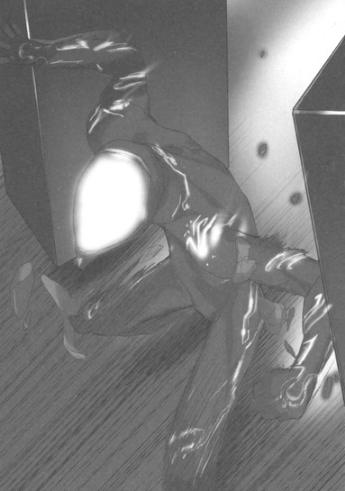
青い閃光が凝縮し、炸裂し、世界を染めた。
ハルユキは感じた。ごくわずかに、ほんの一瞬、黒い万力の拘束が弱まるのを。
ありったけの力で地面を蹴る。両肩で壁面を擦り、ＨＰゲージをスパークに変えて散らす。無限にも思える一歩の距離を、全エネルギーを傾けて走り、ついにハルユキは拘束から抜けた。
地面に転がる。一回転して立つ。勢いのまま走りながら右手を引き絞る。心意を集中する。
吼える。
「う......あああ!!」
シアン・パイルの首を落とそうとしていた腕を止め、驚きの気配とともに視線を向けてくるダスク・テイカーへと、ハルユキは残された全精神力を振り絞り、〈光線剣〉を放った。
しゅきぃぃん！ と、五メートル以上も宙を駆けた光の切っ先が──
能美の左腕の触手三本のうち二本を、半ばから断ち切った。
そこが、限界だった。
全身の力が抜け、足を縺れさせて、ハルユキは頭から地面に倒れ込み仰向けに転がった。
余りにも強くイメージを振り絞ったせいか、ちかちかと明滅する意識に、能美の声が遠く響いた。
「おっと、脅かさないでくださいよ、先輩」
少し間を空けて。
「......あなたの万力が獲物を取り逃がすなんて、ちょっと手抜きし過ぎじゃないですか？」
それに、積層アバターが遠くから応じる。
「心外だなあ、わたしは全力だったよ。その坊やを褒めるべきだよ、まったく大した頑張り屋さんだ。とは言え、もう限界のようだけどね」
そして──またしても、体の両側に薄い板が伸び上がるのを、ハルユキは虚ろに眺めた。
視線を動かすと、逆さまになった視界の中央で、ダスク・テイカーが今度こそタクムに止めを刺さんと紫の剣を振りかぶるのが見えた。
もう、何も考えられなかった。絶望すらも感じられないほど、ハルユキの精神は消耗していた。
「では......さようなら、シアン・パイル」
虚無の刃が、ひゅっと宙を滑る。
幾つもの残像を半円形に残し、青いアバターの項へと──。
ハルユキが、瞼を閉じ、意識を切断しようとした、その、寸前。
きん。
と、涼音。
今まさにタクムの首筋に触れようとしていた能美の剣が、その根元から断たれ、溶け崩れるように消滅した。
──心意は、心意でなくては斬れない。
ハルユキではない。またハルユキを拘束する積層アバターが能美の邪魔をするはずもない。
つまり、新たなバーストリンカーがもう一人、この戦場に。
ハルユキは大きく眼を開け、何かに導かれるように首を持ち上げて、正面の夜空を見た。
仄白く佇む壮麗な宮殿。その中央、本来は梅郷中学校の階段部分である尖塔の上に。
巨大な青い満月を背負う、ひとつのシルエットがあった。
騎馬だ。
逞しい黒馬が、長いたてがみを風になびかせている。眼は青白く輝き、四つの蹄もまた青い炎に包まれている。
そしてその背に、細身の騎手が凛と跨っていた。
艶やかに月光を撥ね返す、黒水晶の装甲。鋭利なⅤ字のマスク。華奢な体を取り巻く、黒蓮のスカート。
両腕は、長く鋭い剣。両脚もまた──剣。降り注ぐ月光すらも断ち切るような、怜悧なその輝き。
「......ああ」
ハルユキの口から、ため息にも似た密やかな声が零れた。もう一度。
「............ああ......」
それ以上何かを言ったら、騎馬は幻影となって消えてしまいそうな気がした。
しかし乗り手は、遥か地上に横たわるハルユキの囁きが聞こえたかのように一度小さく頷き、右足で軽く黒馬の腹を蹴った。
馬は前脚を高々と宙に持ち上げ、鼻面から青い炎を噴いて激しくいななくと、どかっ、と蹄を鳴らして空中を走り始めた。地上のデュエルアバターたちが声もなく見守る中、騎馬は夜空に青白い軌跡を描いて校庭の真上に達し──。
そこで、騎手がひらりと身を躍らせた。
長い両手の剣を広げ、滑るように地上に近づく。着地の直前、小さく脚を真下に蹴り出す。
きん、と鋭い音を響かせ、アバターは右足の切っ先一点で白い地面へと降り立った。
空中の黒馬はそのまま弧を描き、南西の空へと疾駆し始めた直後、溶けるように消えた。
それを見送ってから、漆黒のアバターはまっすぐにハルユキを見つめた。もう一度頷く。次いで、顔を上げたシアン・パイルを。離れた積層アバターと、倒れたままのライム・ベルにも順に視線を動かし。
最後に、ダスク・テイカーを正面から凝視した。
鏡面マスクの奥で、ヴァイオレットブルーの両眼が、音を立てて輝いた。
「............ま、さか」
嗄れた声を洩らしたのは能美だった。
「まさか。なぜ......どうやって、ここに。どうして、ここにいるんです」
その驚愕と疑問は、等しくハルユキの裡にも存在した。しかしそれを遥かに上回る、圧倒的な感動が胸に満ち満ちて、ハルユキは何も言えなかった。倒れたまま、ただ懸命に、美しい黒水晶のデュエルアバターを見つめた。
能美が、もう一度呻いた。
「まさか......この決闘のために、一人だけ、沖縄から帰ってきたんですか。いや、だとしてもこの時間に間に合うわけがない。有り得ない......なぜ、どうして、ここにいるんだ！黒の王......ブラック・ロータス!!」
そう、漆黒のアバターは、レギオン〈ネガ・ネビュラス〉頭首にして〈純色の七王〉の一席を占める黒の王、〈ブラック・ロータス〉その人以外では有り得なかった。
しかし、その現し身である、梅郷中学校三年生にして生徒会副会長たる黒雪姫は、現在修学旅行先の沖縄に滞在しているはずだ。そしてハルユキたちと能美との決闘がこの時間に決まったのは、現実時間ではほんの一時間と少し前。仮に何らかの手段で決闘のことを知ったとしても、沖縄から東京まで帰って来られるはずがないのだ。
能美の絶叫を浴びせられた黒雪姫は、涼しげにマスクを振ると、初めて声を発した。
「貴様が〈ダスク・テイカー〉か。随分と知略が自慢のようだが......甘いよ、まだまだ。加速世界には、貴様の思いもよらぬ戦い方が無限に存在する」
シルクのように滑らかな美声でありながら、その言葉は鋭利なエッジで仮想の空気を切り裂いた。能美が、じりっと半歩下がる。
「私は、東京に帰ってきたわけではないし、そんな必要もない。......貴様に、ブレイン・バーストの基本ルールをひとつ思い出させてやろう。〈通常対戦フィールド〉には、一八〇〇秒の時間制限と、エリア境界での移動制限が存在する。しかし〈無制限中立フィールド〉にはそのどちらも存在しない。だから〈無制限〉なのだ。いいか......」
ひゅっと右手の剣を斬り払い、黒雪姫は凛然と言い放った。
「この世界に於いては、沖縄と東京は地続きなのだ！......ようやく気付いたようだな。そうさ、私は沖縄からこのフィールドにダイブし、東京まで走ってきたんだよ。さっきの神獣級エネミーを飼い馴らし、ここまで移動するのに十五時間ほどかかったがね。それでも、現実世界ではたかだか一分足らずでしかない」
「............な、んだと......」
愕然と喘ぐ能美の声に、ハルユキも自身の驚愕を重ねた。
──確かに、これまで何度か無制限中立フィールドを訪れたおり、この世界はどこまで広がっているんだろう、と考えたことはある。それはただの漠然とした疑問で、確かめようなどとは思いもしなかったが、しかし答えはシンプルなものだったのだ。即ち、加速世界の媒質となっている〈ソーシャルカメラ・ネットワークの果てまで〉である。言い換えれば日本全土。北は北海道から、南は沖縄まで。
だが、その広大な世界を、身一つで縦断しようなどといったい誰が考えるだろう。ここは安全な観光用ＶＲワールドではない。ただ一個体で数十人のバーストリンカーを蹴散らすような大型エネミーが闊歩する死地なのだ。
そう、ただひとり、この人を除いては。
「............せん、ぱ......い」
ハルユキは、掠れた囁きを洩らした。ヒビの入った銀面の奥で、熱い涙が滲み、零れた。
黒雪姫は、そんなハルユキにもう一度眼を向け、初めて微笑みの気配を洩らした。しかしすぐにそれを収め、シルバー・クロウを拘束している万力の主──積層アバターへと視線を移した。
キン！ と鋭い金属音。同時に、夜闇に閃く白い火花。
自分を拘束していた黒い板が消滅してから、ハルユキはいま何が起きたのかを遅れて悟った。
黒雪姫が、アバターを一切動かすことなく、ただ右腕に仄かな光を宿しただけで心意による長射程攻撃を放ったのだ。それを積層アバターが同じ心意で迎撃した。ゆえに、ハルユキを捕らえていた万力のイメージが解除され、消えた。
キン、キキン!! と、更に三度の閃光が空中に弾ける。視覚的現象はささやかだが、撃ち合わされた攻撃力の巨大さを示して、体の下のフィールドそのものが重く震動するのをハルユキは感じた。
その威力に息を呑みこそすれ、王たる黒雪姫が心意技を操ることに驚きはない。同じレベル９とは言え、キャリアは圧倒的に短いはずのニコもまた、凄まじい威力の技を実演してみせたのだから。
しかし、その黒雪姫の技と正面からせめぎ合う積層アバターにも底知れないものがある。
ブラック・ロータスは、挨拶は終わったとばかりに攻撃を停めると、短く問うた。
「貴様、名は」
二十メートルほど離れた場所で、積層アバターは迷うように薄板が並ぶ頭を傾けた。これまでと同じく、青年教師めいた穏やかな声が流れた。
「......ここで名乗ることに、意味は皆無なんだがなあ。でも、せっかく王たる方がはるばる足を運んでくださったんだ。自己紹介くらいしないと、失礼というものかな」
ひゅひゅっと音がして、アバターの足元の影から黒い板が何枚も浮き上がると、これまで消滅していた右腕の形に並んだ。あれが、いままでずっとハルユキを拘束していた万力であることに疑いはなかった。
アバターは、その右腕を胸に当てると、かくりと腰を折って一礼した。再度、声が響いた。
「わたし、サークル〈加速研究会〉副会長......〈ブラック・バイス〉と申します。以後お見知りおきを」
──その色を見た時から、あるいは、と薄々予想はしていた。
しかし実際に名を聞くと、やはり巨大な衝撃を覚えざるを得なかった。
ブラック。〈純色の黒〉。
これまで、冠するのはブラック・ロータスただ一人であると信じて疑わなかった色だ。いやそれ以前にハルユキは、加速世界に於いて、全バーストリンカーに付与されるカラーネームに重複があるなどという話を聞いたことは一度としてない。
驚愕に眼を見開くハルユキに対して、黒雪姫当人には、動揺の色はなかった。ただ軽く息を吐き、言う。
「フン、レギオンではなく〈サークル〉か。念の入ったことだな」
「申し訳ない、会の方針というやつで」
「名前ももちろん気に食わないが......それ以上に、私のレギオンメンバーを散々痛めつけてくれた礼をしなくてはな。無論、倍返しだ」
青紫色の双眸が強烈な光を放つ。左右の剣に、同色のオーラが宿る。
対して、積層アバター──ブラック・バイスは、緊張感のない動作で両手を広げた。
「困ったな。あなたのお仲間を傷つけたのは、主にわたしではなくテイカー君なんだけどね。でも、まあ、見逃してくれと言える立場ではないか......な」
ゆるりと降ろした腕の片方が薄墨色のオーラを宿し、直後何枚もの板へと無音で解けて、スライトするように足元の影へと沈んだ。
「せ......」
危ない！ とハルユキは声を上げかけた。しかしその時にはもう、黒雪姫の足元から二枚の板が飛び出し、目にも留まらぬ速度で左右から挟み込んだ。
ガァン！ と板が両腕に激突する。薄い板は即座に容積を増し、巨大な塊へと変ずる。ブラック・バイスの心意技、〈静止重圧〉だ。捕らえたアバターの動きと声を完全に封ずる、その恐るべき圧力を散々味わったハルユキは、全身の痛みも忘れて再度叫ぼうとした。しかし、それより早く。
ぴきん、と涼やかな音が響き。
ふたつの漆黒の塊を、青いラインが横切った。
塊がその中ほどから左右にスライドし、重々しく地面に転がるのを、ハルユキは呆然と眺めた。内部から現れた黒雪姫は、両腕をわずかに広げた姿勢で、何事もないように言った。
「残念だが、私に物理拘束は効かん」
切断された直方体が板へと戻り、地面に沈み込む。今度は、黒雪姫の右腕の剣が、ごうっと紅い炎を噴き上げる。
その腕を無造作に引き絞ると。
「〈奪命撃〉!!」
凛とした技名発声とともに、猛烈な突きを放った。
モーションは、ブラック・ロータスの必殺技である〈デス・バイ・ピアーシング〉とよく似ていた。しかし射程は段違いだった。剣から迸った真紅の槍は、金属質の共鳴を伴う轟音とともに、遥か彼方のブラック・バイスへと突進した。
対して、艶消しの黒に染まる積層アバターは、灰色のオーラを纏わせた左腕をまっすぐ前に掲げた。
「〈複層装甲〉」
ばらっと腕の板が解け、それぞれが大きな正方形に変化した。十枚ほどの板は、間隔を空けて横向きに並び、アバター本体を守るように真紅の槍の前に立ちはだかった。
ガアァァァン!! と凄まじい衝撃音が轟き、世界が揺れた。
槍は、層を作る防御板の九割を貫通し、そこで停止した。しかし消えない。残りの板も貫かんと、周囲の空間そのものをぎし、ぎしと軋ませて強く輝く。
黒の名を持つ二人のバーストリンカーは、それぞれ右手と左手を前に突き出した姿勢で、互いの心意をせめぎ合わせた。
その極限状況にあって、黒雪姫はちらりとハルユキを見ると──厳しく、そして優しい声で命じた。
「さあ、立て、シルバー・クロウ。彼奴は私が抑えておく。キミは、キミの敵を......ダスク・テイカーを斃せ」
自分の中に、戦う力はもうかけらも残っていないと、一秒前のハルユキは思っていた。
しかし、愛する剣の主の言葉は、まるでそれすらもある種の心意であったかの如くハルユキの胸に浸透し、消えかけていた炎を再点火させた。
「......はい」
掠れてはいたが、確かな声で応え。
ハルユキは、ぼろぼろのアバターの脚を曲げ、手を地面に突き、ふらつきながらも立ち上がった。残りＨＰゲージは三割強。
それを確認してから、少し離れた場所に立つダスク・テイカーと、その傍のシアン・パイルに顔を向ける。
腹を貫かれ、両腕を落とされたタクムは、激痛に意識を阻害されているのか、深く項垂れたままだ。マスクの奥に眼の光はない。しかし、まだ存在している。生きている。
そしてダスク・テイカーは、ようやく衝撃から醒めたかのように、ゆっくりと右手を持ち上げると顔のバイザーを覆った。
「............ふ、ふ、ふふ」
その指の間から、今まで何度も聞かされた嘲笑が、細く洩れた。
「ふふ。本当に......返す返すもおぞましい人たちだ。仲間だの、絆だの、その手のごっこ遊びをいつまで続ける気なのか。沖縄から、走ってきたって？ふふ、狂気の沙汰だなまったく」
ぶん、と手を振り払う。その鉤爪に、おぼろな波動が絡みつく。
「しかしまあ、手間が省けた──ということですかね。この木偶と、そこの小虫を叩き潰せば、あとはブラック・ロータスひとりだ。王だのと名乗っていようが、ぼくら二人を相手に戦えるわけがない。むしろまたとない好機だ......アイツと同じように、一時間に一度ずつたっぷりいたぶって殺してやるさ。ポイントが全部なくなるまで。ふふ、くくくく」
嘲弄するようなその声を、ハルユキはほとんど聞いていなかった。意識はただ、深く傷ついたタクムと、遠くで倒れたままのチユリに向けられていた。
脳裏のスクリーンに、能美が二人を蹂躙する光景がフラッシュする。腕を千切られ、悲鳴を上げるチユリ。腹を抉られ、倒れるタクム。二人が感じたのは、ただの仮想の痛覚ではない。友情を、愛を利用され、踏みにじられる痛みだ。何よりも大切なものを汚され、破壊される絶望だ。
両拳を握り締め、全身を震わせるハルユキに向けて、能美は、慰めるような口調で囁いた。
「でも、安心してください。彼女......ライム・ベルだけは助けてあげますから。そこの木偶が得意げに言ってた、回復アビリティを奪えないからって理由じゃないですよ。千百合の忠実さに免じて、です。彼女の献身ぶりはまったく健気ですからね......これからも、精々可愛がってあげますよ、はははは」
「............」
割れ砕けんばかりに食い縛った歯の間から、ハルユキは言葉を押し出した。
「......能美。お前は、間違ってたんだよ」
「何を？ いつからです？」
首をかしげる闇色のアバターを見つめ、静かに告げる。
「全部、最初からさ。お前が梅郷中に入学した時......僕らの誰でもいい、普通に対戦を申し込んで、はじめまして、って言いさえすればよかったんだ。レギオンに入れてほしいってひとこと言えば、それでよかったんだ。そうすれば、お前は、本当に欲しいものを手に入れられたのに。仲間や、友情や、絆を」
途端。
ダスク・テイカーは、ぴたりと動きを止めた。バイザーの奥から、打って変わって低く掠れた声が放たれた。
「............なん、ですって？ ボクが？ 仲間を？」
「そうさ。お前も、僕やタクと同じだ。虐げられ、心に傷を負って、バーストリンカーになった。加速世界でお前は、対戦を通じて知ったはずだ。この世界には、僕らが求めていた本物の絆が存在することを。なぜそれを信じられなかった。なぜＢＩＣなんていうまやかしの力に頼ったんだ。その反対の選択肢だって、お前にはちゃんとあったはずなのに」
数秒の沈黙を経て。
能美は、突如アバターの全身から、凄まじいオーラを迸らせた。それがとてつもない怒りの波動であること、そしてその源が、心の奥底に封じ込められた感情であることがハルユキには解った。
「............つまり、あなたは、こう言ってるんですか？」
声ならぬ声で、能美は訊ねた。
「許してやると。可哀想だから仲間にしてやると。慈悲深くも、ボクに救いの手を差し伸べていると、そういうことですか？」
「いいや」
ハルユキは即座に首を振った。
「そんなつもりはない。僕とお前は、もう永遠に解り合えない。決着をつけよう、能美征二」
能美に対する怒りは、もちろんハルユキの中にも存在した。しかし怒りより遥かに強い一つの感情が、超高温の青い炎となって全身を満たしていた。それは決意だった。ここで全てを終わらせるのだという断固たる意志だった。その炎は余りにも熱く、揺るぎなく燃焼しているため、いっそ静止状態とも思えるほどだった。夜空で静かに、冷たく煌く恒星のように。
対して能美は、吹き荒れる颶風のような怒りを全身から放散しつつ、もう一度、短く笑った。
「......ふふ。それを聞いて安心しました。危うく、ここでアバターを始末しても、現実世界の哀れなあなたまで許せなくなってしまうところでしたよ。......いいでしょう、決着をつけましょう、有田春雪。この世界に、飛行者は二人も要らない」
そして右手を掲げ、拳を握り、ぐっと引き戻した。
その動きに同期して、これまでずっと畳まれていた背中の黒翼が、ばさっと大きく広がった。
対してハルユキも、右手を高く空へと掲げ、掌を広げて、唱えた。
「着装、〈ゲイルスラスター〉」
ちかっ、と夜空に大きな空色の星が瞬いた。それは二本のレーザーとなって地上に降り注ぎ、ハルユキの背中に衝突する。そこに輝きながら留まり、形を得て、やがて美しい強化外装を造り出す。
ダスク・テイカーが、翼をいっそう広げ、ぐぐっと強くたわめた。
シルバー・クロウの背中のブースターが、高い駆動音を響かせはじめた。
加速世界にたった二人存在する飛行型デュエルアバターは、ほんの一瞬、まっすぐに視線を合わせて静正した。
地面を蹴ったのは、能美がわずかに先だった。左腕に残った触手一本を尾のように引き、飛膜型の翼を打ち鳴らして、まさしく悪魔のシルエットとなって一直線に上昇していく。
その軌道を見極め、深く腰を落としたハルユキは──。
「......行けッ!!」
鋭い声とともに、ブースターのエネルギーを全解放した。
青い噴射炎が白い地面を灼く。恐ろしいまでの推力が、小さなアバターを弾くように離陸させる。先を行く闇色の影に、たちまち追いすがる。
能美はちらりと視線を落とすと、片方の翼だけを強く羽ばたかせた。ぎゅうっと急旋回しながら、右手を振りかぶる。
「チェエエエエエッ!!」
甲高い咆哮とともに、紫の波動が長い鉤爪となり、夜空に五条の円弧を描いて迫った。
ハルユキもまた、右手の五指を揃え、叫んだ。
「レーザー......ソード!!」
白い光剣が、真下から紫の鉤爪を迎え撃ち、激突した。
交錯は一瞬だった。光剣の切っ先と、鉤爪の尖端がともに分断され、しかし双方とも、残った心意をそのまま相手に向けて叩きつけた。
ダスク・テイカーの胸に、太い一直線の傷。そしてシルバー・クロウの胸に五本の細い傷が刻まれ、二色のスパークを散らす。激痛に歯を食い縛りながら、ハルユキはそのまま上昇し、ブースターのエネルギーゲージが尽きたところで両手を広げて自由落下に入った。
スカイ・レイカーから譲り受けた強化外装〈ゲイルスラスター）は、圧倒的な推力を有する代わりに、一度点火すればゲージを全て消費してしまう。噴射を複数回に分けることも、推進力を調整してのホバリングも不可能だ。上昇軌道の頂点に達すれば、あとはブースターに装備されたスタビライザーで落下方向を制御することしかできない。そしてゲージの再充填には、十分近い時間が必要となる。
だがハルユキは、〈移動能力拡張〉の心意によって、自分は飛べる、とシステムに事象の上書きを掛けることができる。もちろん、それだけで本当に飛べるレベルには、まったく達していない。だが背中にゲイルスラスターがある今、システムはイマジネーションによる割り込みとの整合性を取るために、ゲージのチャージ待ち時間を極限まで短縮する。
即ち、心意システムの習熟にはまだまだ遠くとも、これまでの経験で体に染み付いた〈飛行のイメージ〉と、システム的推進力たる〈ゲイルスラスター〉の二つの力を合わせることで、ハルユキは飛べるのだ。
問題は──ゲージを回復させるための心意発動に、五秒近い時間がかかってしようことだ。
そしてそれをもう、前回の対戦で心意チャージを見た能美も知っている。
落下しながら、ハルユキは大きく両手を広げ、背中の翼で空へと羽ばたくイメージを強固に思い描いた。
ニコの助言に従い、発動時間を短縮するために、この心意にも名前をつけるべきかと考えはした。しかし、空を望む気持ちに〈技の名前〉を与え、イメージを固定することに、ハルユキは大きな抵抗を感じた。
なぜならその願いこそ、ハルユキが長い、長いあいだ心の奥底に秘め続け、そしてシルバー・クロウというアバターを作り出した核だからだ。それを〈希望〉以外に何と呼べるだろう。
ゆえにハルユキは、ただ無言で念じた。僕は飛べるんだ、と。たとえ翼を奪われても、どんなに痛めつけられ、何度地面に這わせられても、それでも僕は空を目指すんだ、と。
その祈りは、しかし、能美にとっては大きな隙でしかない。
「させるかッ!!」
鋭く叫び、ダスク・テイカーは激しく黒翼を羽ばたかせて、一直線に突進してくる。
不吉な飛翔音を、ハルユキは全精神力を振り絞って無視し、イメージを完成させた。
胸の奥に、クリアな空色が広がる。その過剰光は背中から幻の翼となって放出され、そこに宿るブースターに流れ込み、意志という名の燃料へと変わる。
ずがっ！ と強烈な衝撃が生まれ、ハルユキの胸を、先の傷と交差する形で五本の鉤爪が深々と抉った。
「ぐっ......」
呻きとともに大量の火花を振り撒きながらも、ハルユキはかっと眼を見開き、飛び去ろうとするダスク・テイカーの左腕の触手を握った。
〈飛行アビリティ〉を実現している翼は、確かにブースターと比べれば、果てしなく自由度が高い。しかしそれでも弱点はある。高機動力の代償として、安定性に欠けるのだ。
ハルユキに触手を引っ張られ、能美はがくっとバランスを崩して、半ば錐揉み状態へと陥った。その勢いをも利用し、思い切り振り回すと、光剣で触手を一気に切断。推進力に遠心力が重なり、ダスク・テイカーは猛烈な勢いで水平方向に吹き飛んだ。
「ちぃぃっ！」
怒りの声を洩らし、バランスを取り戻そうと翼を激しく動かす。だが制御は容易に戻らない。
そちらに体を向け、大きく息を吸い──。
ハルユキは、叫んだ。
「飛......べええええッ!!」
ゲイルスラスターが、強烈な燃焼音で応えた。
夜闇の中、ハルユキは青い流星となって突進した。地上の光も、空の星も全てが放射状に溶け、ただダスク・テイカーの姿だけがくっきりと視界に捉えられた。
右手を引き絞る。指先を揃える。
もう技名の発声は必要なかった。貫く、という純粋な意思が光となって手に宿り、激しく震えた。
「お......おおおおお────!!」
咆哮に乗せて、ハルユキは白銀の輝きを放射光の中心目掛けて解き放った。
「チ......ェエアアア────!!」
直前で姿勢を回復させた能美が、絶叫とともに右手の鉤爪で迎え撃った。
甲高い共鳴音と、爆発じみた衝撃波が世界に轟いた。
光剣の切っ先を、虚無の爪が五方向から咥え込み、受け止めている。その接点からは強烈な熱と振動が放射され、互いに右腕を伸ばした体勢でせめぎ合う二人のマスクを焦がしていく。
「う、お、おッ!!」
ハルユキはブースターからあらん限りのエネルギーを噴出させ、能美の防御を突き破らんとした。背中の駆動音が際限なく高まる。どこまでも長く伸びた炎が空を青く染める。
──もう少し。あとほんのわずか押し込めば届く。この究極の敵に、剣が届く。あと少し......ほんの、少し......!!
加速された感覚の中でも、視界左上のエネルギーゲージが急減少していくのが見える。
このゲージが尽きれば、能美はもうハルユキに心意チャージの隙を与えず、一気に爪で切り裂くだろう。
その前に──貫く！
「お......おおッ......!!」
過熱した意識が、視界を白く焼き切っていく。しかしハルユキはなおもイマジネーションを振り絞り、眼前の障壁を貫かんとした。
ぐ、ぐっと銀光が虚無を押し込む。ゲージが容赦なく消費される。
余りに密度の高い攻撃力が集中しているせいか、フィールドそのものが波紋状のエフェクトを作って揺れる。その中央を、少しずつ、少しずつ、光の剣が突き進んでいく。
届く。能美本体の掌に、ついに剣の切っ先が触れる──
直前。
エネルギーゲージを輝かせていた最後の一ピクセルが、消えた。
ブースターの燃焼音が揺らぎ、噴射炎が間歇的に瞬いた。
ダスク・テイカーが、バイザーの奥で狂的な笑みを浮かべた。
その時──。
『............さあ、鴉さん。もう少し』
誰かの声が聞こえ、白い手がハルユキの右腕に添えられた。
『............ほら、頑張れ。もう少しだけ』
別の声が響き、誰かがハルユキの肩を押した。
「う......あ......あああああ────!!」
残る力の全てを右手の一点に集中させ、ハルユキは吼えた。ゲージが尽きているはずのブースターから、ほんの一瞬ではあったが、巨大な炎が迸った。
その最後の推進力に後押しされ、ついに光剣が虚無の障壁を突き破った。五本の鉤爪が、紫の光を散らして蒸発した。
「なにっ......」
能美の喘ぎ声を、掻き消すように。
しゅきいいぃぃぃぃん!!
と高らかな音を響かせ、長く伸びた光の剣が、ダスク・テイカーの右腕を真っ二つに切り裂き、無数の断片へと分解した。
「......らああ!!」
まだ動けるのがいっそ不思議なほど、ハルユキの意識は消耗していた。それでも、高空から落下する前に半ば自動的に体が動き、左の貫手を思い切り敵の胸へと突き込んだ。
心意の光はほとんど見えないほどに弱かったが、それでも重い手応えとともに、腕が闇色のアバターを貫き、わずかに背中から抜けた。
「ぐっ......ぐううっ......！」
赤紫のスパークを散らしながら能美が呻き、仰け反った。
──あと、一撃!!
おそらくあと一回、重い攻撃を浴びせれば、ダスク・テイカーのＨＰゲージは尽きる。
しかし、その時は間違いなく、ハルユキも死ぬ。
なぜなら、もういちどゲイルスラスターをリチャージすることはおろか、落下を制御するための力も残されていないからだ。ＨＰの残量はごくわずか、この高度から地面に激突したら、呆気なく消し飛ぶだろう。
──でも、もう、それでもいい。
──相討ちになり、双方のポイントが全部シアン・パイルへと託されるなら。タクムに、僕の夢を引き継げるのなら。僕の戦いは、無駄じゃない。
今にも吹き消されそうな意識に鞭打って、ハルユキは右手を高く掲げた。
同じくほとんど気を失っている敵の黒いバイザー目掛けて、最後の一撃を──
打ち込もうとした刹那、
声が、聞こえた。
「シトロン・コール!!」
世界で最も多く、恐らく両親のそれよりも長く聴いてきた、その声。共に笑い、遊び、時には喧嘩して、すぐに仲直りした、その声──。
吸い寄せられるように、ハルユキは地上を見た。
校庭にひっそりと立つ若草色のアバターから、美しいエメラルドグリーンの光の柱が屹立し、ダスク・テイカーを包んだ。
無数の鐘の音が夜空に広がる。
それは天使の祝福であるかのように、夕闇色のアバターを癒していく。ひび割れ、焼け焦げた装甲が艶を取り戻す。喪われた両腕が再生していく。
瞬時の、しかしあまりにも深い絶望が、ハルユキを包んだ。
黒い球面バイザーの奥で、赤紫色の眼が明滅し、強く再点灯した。
「......く、くは、ははは」
甲高い笑い声。
「ははは！ あはははははは!!」
いつかのように、再生した両腕を高く高く広げて、ダスク・テイカーは絶叫した。
「見ろ、まったく健気な忠誠じゃないか!?どうだ......これが、力！これが、支配するということだッ!!友情!?絆!?そんなもの要るかッ!!略奪による支配!!それこそが、唯一、絶対的な力なんだッ!!はははは......、ははははははははは!!」
歪んだ哄笑は、オーラとなって放散され、空中に紫電を走らせた。
「さぁ......、決済の......、時だ──────ッ!!」
禍々しく尖った十指から、虚無の波動がどこまでも伸びた。
それが、まさにハルユキの体を分断せんとした──
瞬間。
その現象が起こった。
ぱっ、と強烈な閃光。
光ったのは、ダスク・テイカーの背から生え、左右に広げられた悪魔の翼だった。
翼は、まるで極薄の硝子にでも変わってしまったかの如くひび割れ。音を立てて崩壊し。
消えた。
「な............」
能美が、両眼を見開き、喘いだ。
「な......、ぜ。......なぜ、ボクの翼が、消え......」
その声が終わる前に、がくん、と二つのアバターが揺れた。いままで二人を空中に留めていた飛翔力が消滅し、絡み合ったまま落下し始める。
しかしすぐに、ハルユキは、何かが自分を引き戻そうとするのを感じた。
それは、熱だ。背中の両側、肩甲骨の先に宿り、息づくささやかな熱。
シルバー・クロウの落下速度だけが鈍り、ダスク・テイカーを貫いていた左手が抜けた。
宵闇のアバターは、愕然と両手を広げたまま、真っ逆さまに地上へと落ちていく。
対してハルユキの落下はいっそう緩やかになり、やがて浮遊感が生まれ──止まった。
ゲイルスラスターではない。ゲージを完全に消費し、強化外装は沈黙したままだ。
そう──、この感覚。泣きたいほどの切望と、高揚。
「............あ、あ......」
声を洩らすと同時に、実際に両眼に涙が滲んだ。
肩甲骨に宿る熱は、どんどんその温度を上げる。エネルギーが高まり、行き場を求めて渦巻く。まるで、二つの骨が、かつてその先に備えていた器官の記憶を呼び覚ましているかのように。
何かに導かれ、ハルユキは両手を掲げ、体の前で交差させた。
拳を握る。力を込める。
「............おかえり。ありがとう」
小さく囁き、両腕を、一気に左右へと開いた。
しゃらあああん!!
と、いかなる音よりも美しい響きが生まれ、夜空に広がった。
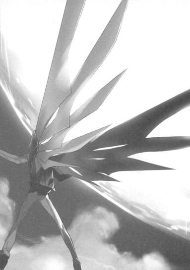
直接は見えなくとも、ハルユキには解った。自分の背中、ブースターの両側から、月光を反射して銀色に輝く十枚ずつの金属フィンが展張したのを。
白銀の翼。シルバー・クロウの存在証明たる、天翔ける力。
ついに、戻ったのだ。本来の姿に。ハルユキの心の傷が育み、生み出した、加速世界唯一の飛行型デュエルアバターへと。
その確信と感動が胸に満ち満ちた瞬間、もう一つの現象が起こった。
翼と融合したゲイルスラスターのゲージが、連動するかのように輝き、自動的に再充填されたのだ。
飛べ、と言われた気がした。
ハルユキは頷き、右手を胸に引き寄せると、体を真下に向けた。
どこまでも果てしなく広がる白いフィールドの中央に、いまだ落下の途上にある、ダスク・テイカーの影が小さく見えた。
翼を喪ったとは言え、〈シトロン・コール〉の力でＨＰゲージそのものは回復しているはずだ。高高度からの墜落にも耐えるかもしれない。
──でも、もう、終わらせる。
ハルユキは、銀翼をいっぱいに広げた。
フィンが細かく振動し始める。懐かしい推進力が体を包む。
同時に、ゲイルスラスターも点火した。青い炎が銀翼に反射し、美しく輝かせる。
恐ろしいほど高まるエネルギーに、ぐっと息を詰めてから、ハルユキは叫んだ。
「行っ......けえええええ────!!」
翼から白銀のオーラが広がった。青い噴射炎が長く迸った。
どっ!! と一瞬で空気の壁を突き抜け、ハルユキは飛んだ。
それは恐らく、加速性界の開闢以来いかなるアバターも達したことのない移動速度だった。翼とブースターの推進力に、仮想の重力までも加え、ハルユキは一条の雷光となって突進した。
ハルユキの加速感覚を以てしても、全てが一瞬のうちに起こった。
心意の剣を宿した右手を頂点に、光の矢へと変じたシルバー・クロウが、落下するダスク・テイカーに迫り、接触し──貫いた。
ぱっ、と宵闇色のアバターが、体の中心から円状に分解した。
そのポリゴン片にも触れることなく交錯点を駆け抜けると、ハルユキは翼で姿勢を制御し、ブースターを真下に向けた。
推進力が落下の勢いを相殺し、減速させ、停めた。
直後、両足の底が地面を捉えた。
そのまま崩れるようにひざまずいたハルユキの耳に、少し遅れて、どさっ、と重い落下音が届いた。
急激に襲ってきた疲労感に抗い、顔を上げる。
そこは、離陸した位置に程近い、梅郷中の校庭だった。少し離れた場所に、黒い塊が転がっていた。
ダスク・テイカーだ。しかし、残存しているのは頭と胸郭、左肩から再生しかけた短い触手だけだ。バイザーの奥で、二つの眼がごく薄く、不規則に明滅している。ＨＰゲージは、残っていても一割以下だろう。
ハルユキは、体を引き摺るように立ち上がった。
一歩、二歩進んだところで、声が聞こえた。
「............な、ぜ......。なぜ......ボクの翼が、消える、んだ......」
体が吹き飛ばされたことよりも、そちらがより巨大な衝撃であるかのように、能美は呻いた。
答えたのは、ハルユキではなかった。
「それは......、あたしの力が、〈回復〉じゃないからよ」
はっと顔を向けると、そこに、チユリ──ライム・ベルの姿があった。引き千切られた右腕で、孔を穿たれた脇腹を庇っている。
そして隣に、両腕を失ったままのシアン・パイルも立っていた。更に、向き合ったままのブラック・ロータスとブラック・バイスの姿も見える。油断無く身構えているが、双方とも心意攻撃は停めているようだ。
「な......、ん、だと」
能美が、掠れた声で呟いた。
「回復アビリティ......でなければ、何だと、言うんだ」
しばし沈黙してから、チユリは、静かに答えた。
「......あたし、バーストリンカーになった時からずっと、不思議に感じてた。何であたしに〈回復〉なんて力が与えられたんだろう、って。でもね......火曜の五時間目、最初にあなたをヒールした後、ハルたちと話してる時気付いたの。ハルはあの時、回復したのはアバターの傷とＨＰだけじゃなかった、右手の機械まで復元した、って言った。あたし、そんなのおかしいって思った。それじゃヒールじゃなく修理だ、って。それで......あたし、解ったんだ」
大きく息を吸い、新緑の色のアバターは、はっきりと告げた。
「あたしの力は、〈回復〉じゃない。〈時間を巻き戻す力〉なの。技をかけたアバターの時をさかのぼらせる。だから......あたし、思った。この力を使えば、きっとハルの翼を取り戻せる、って。ダスク・テイカーが、シルバー・クロウのアビリティを奪う前まで時間を巻き戻して、全部なかったことにできる、って」
────そう、だったのか。
と思った途端、ずきん、とハルユキの胸の奥が強く痛んだ。両眼にまたしても涙が滲んだ。
──それなのに、僕はチユを一度は疑った。僕のために頑張ってくれてる幼馴染を信じられなかった。僕は馬鹿だ。大馬鹿野郎だ。
深く俯いたハルユキの耳に、地面の底から響くような怨嗟の声が届いた。
「............何だと......。裏切ったのか。このボクを、裏切ったのか、ライム・ベル」
体を失い、瀕死の状態でありながら、怒りが力を与えたかのように能美は叫んだ。
「あんなに勝たせてやった......膨大なポイントをくれてやったボクを、裏切ったのか!!」
「違うわ、裏切ってなんかいない」
少しだけ、いつもの負けん気を取り戻したような声で、チユリも応じた。
「あたしが最初にあなたをヒールしたのは、動画のことで脅されたから。その後あなたに従ったのは、必殺技をレベルアップして巻き戻せる時間を延ばすため......そして今日のこのワンチャンスを狙うためよ。あたしは、一度だってあなたの仲間になったことなんかない！」
再び、しばしの沈黙。
夕闇色のアバターは、残骸めいたその体を震わせ、突然低く笑った。
「............ふ、ふふふ。まったく......どいつも、こいつも、馬鹿ばかりか。お前らの顔を見るのはもううんざりだ、ボクは帰るよ。お前らは、全員のリアル情報をばら撒いて、始末は誰かに任せるさ。ボクは転校して、またボクの王国を創る。──さあ、何をしてるんだバイス。早くボクを連れて離脱しろ」
それを聞いた途端、ハルユキはさっと顔を上げ、彼方でブラック・ロータスと対峙する積層アバターを見やった。
漆黒のアバターは、ゆっくりと首を傾け──。
穏やかに、言った。
「困ったなあ。幾らなんでも、この状況でそれは難しいよテイカー君」
「......なら努力しろ。主力のボクがいなくなれば〈研究会〉だって困るだろう。ＢＩＣの情報だって洩れるかもしれないぞ」
「いやあ、その心配はないと思うよ。もしブレイン・バーストを失えば、われわれのＢＩＣはそれを感知した瞬間自動的に不活性化して、やがて脳脊髄液に融けて消滅してしまうようカスタマイズされてるから追跡は無理だね。それにね......、テイカー君、きみだって知ってるはずだよ。元加速能力者は、もう、この世界に対していかなる干渉もできないってことを」
ブラック・バイスのその言葉の意味は、ハルユキにはまったく理解できなかった。
しかし能美はびくりと顔をもたげ、次いで真上の満月を睨んで──突然、叫んだ。
「くそっ。くそ！ くそおおおおおおおおッ!!」
ひとしきり咆哮し、なおも言葉を撒き散らす。
「認めない！ こんな展開は許さない！ 誰か、誰でもいい、ここに来い！ボクを助けろ！そうすればポイントをやるぞ!!」
──もう、たくさんだ。
ハルユキがそう思った途端、タクムもハルユキを見て、言った。
「......終わりにしよう、ハル」
「......ああ」
頷き、ハルユキは歩き始めた。全ての決着をつけるために。
ダスク・テイカーは、近づくシルバー・クロウを認めた途端、高い声で喚いた。
「や......やめろ！ そうだ、これからはボクがお前らにポイントを供給してやる！悪い取引じゃないだろ！何ならレギオンに入ってやってもいい!!」
ハルユキは、歩きながら右手を持ち上げた。揃えた指から、白い輝きが長く伸びた。
「やめろ、嫌だ、失くしたくない！ボクの力だ！ボクの〈加速〉なんだ!!嫌だ、イヤだ......イヤだあああああぁぁぁぁっ!!」
ダスク・テイカーは上半身だけの体を跳ねさせ、裏返すと、短い触手で地面を掻いて遠ざかろうとした。
心を凍らせ、ハルユキは高く光の剣をかざすと──。
躊躇なく一閃させた。
かっ、と空気が震え、細い光のラインが白い舗装タイルに走り、伸び、その先を這うダスク・テイカーを呑み込んだ。
宵闇色のアバターは、音もなく正中線から左右へと分かたれ。
直後、赤紫色の巨大な火柱を噴き上げた。炎の中から、無数のリボン状の光が空へと解き放たれ、空気に溶けて消えていく。リボンは全て、微細なデジタルコードで織られていた。それはかつて一度だけ見た、バーストリンカーの最終消滅現象に他ならなかった。
この瞬間、梅郷中学校に君臨し、ハルユキたちを圧倒的な力で蹂躙し続けた〈略奪者〉は、加速世界から永遠に退場した。
立ち尽くすハルユキの視界に、サドンデス・デュエルの決着を宣言するシステム・フォントが赤々と輝いた。大量のバーストポイントが加算され、レベル５への上昇が可能な旨のメッセージが続いた。
しかし、勝利の快哉も、達成感すらもハルユキの胸には生まれなかった。
ただ、全てが終わったのだ、という認識だけが静かに広がり、全身を満たした。
ぼろぼろの体を引き摺り、チユリとタクムのほうへ数歩移動した時、毅然とした声が聞こえた。
「────さて」
今まで、謎のバーストリンカー〈ブラック・バイス〉を、心意戦によって完璧に抑えていた黒雪姫の声だ。
「貴様に訊きたいことは山ほどあるが、喋るつもりもなさそうだな。ならばとっととケリをつけよう」
それに対して、積層アバターは小刻みに首を振った。
「いやあ、この数分で王の実力は嫌というほど理解したよ。とても勝てないな、ここは大人しく退散しておきます」
目の前で仲間が完全消滅したのを何とも思っていないような、穏やかな声だった。黒雪姫はすっと右手の剣を持ち上げ、険を増した声で囁いた。
「そう言われて見逃す義理もあるまい。ひとまず斬って、蘇生するまでの一時間、貴様の処遇をゆっくり考えるさ」
「怖い怖い」
肩をすくめ、ブラック・バイスはなおも飄々と言ってのけた。
「──でも、わたしの最大の能力は〈逃げ足〉なんだよ。ああ、その前にひとつだけ。わたしには黒のレギオンの諸君に対して含むところは一切ないんだ。ここに来たのも、テイカー君から前払いで依頼されたからでね。当然、諸君のリアル情報などはまったく受け取っていないし、できれば今後永久に関わりたくないと思っているんだよ」
「もう遅い」
冷ややかに切り返し、黒雪姫は右腕の剣に赤、左腕の剣に青のオーラを纏わせた。
一歩踏み出した、その先で──。
不意に、奇怪な現象が発生した。
ブラック・バイスが、その全身を構成している無数の薄い板を、真ん中の一枚を中心にばたたたっと集合させたのだ。
そこに存在するのはもう、一枚の黒い板──いや、影でしかなかった。ハルユキの位置からはぎりぎり形が見えるが、正面を向かれたらほとんど視認できまい。
「それでは、御機嫌よう」
声が聞こえた直後、薄い影は、足元に広がる校舎の影に溶け込むように沈み込んだ。ひゅっという移動音が、高速で遠ざかっていく。
「──フン!!」
黒雪姫が、気合とともに右腕を真上に振った。
真紅のラインが地面を走り、校舎にぶつかり、駆け登り──。
「う、あ!?」
白亜の宮殿の南西の角、現実世界なら職員室や校長室があるあたりの一角が切り離され、盛大に崩壊するのを見て、ハルユキは驚愕の声を上げた。
砕け散る無数の白いオブジェクトに混じって、一枚の小さな黒い板が高く弾け飛び、校庭の離れた場所に突き刺さって──一本の腕に変わり、転がった。
だが、それ以上は何も起きなかった。腕もすぐに無数のポリゴン片となって飛散し、消える。
「......逃がしたか」
呟き、黒雪姫は剣を下ろした。
その、余りにも美しく、雄々しく、そして儚げな姿をしばし見つめてから。
ハルユキは一声叫び、走り始めた。
「............先輩!!」
上半身の装甲が吹き飛び、更に無数の傷を刻まれたアバターを懸命に走らせる。足音を聞いた黒雪姫がくるりと振り向く。
目の前で立ち止まり、ハルユキはぎゅっと両手を握り締めた。
「先輩......せんぱい......、僕......僕............」
それ以上、何も言えなかった。
黒雪姫は、ハルユキの背中に輝く、翼と融合した強化外装──〈ゲイルスラスター〉をしばし見つめた。
ヴァイオレットブルーの眼を瞬かせ、深く頷く。右手の剣を持ち上げると、その峰でハルユキの肩をぽんと叩き、言った。
「──よく、頑張ったな。詳しい話は、明日東京に帰ってから聞かせてもらうよ。今は、ゆっくり休め」
そして視線をハルユキの背後に動かす。そこには、シアン・パイルとライム・ベルも集まってきていた。
「タクム君も、よく戦ったぞ。おつかれさま。そして......倉嶋君、いや、チユリ君」
そこで黒雪姫は、思いがけない行動に出た。ライム・ベルに向かって、ぐっと頭を下げたのだ。
しかし、真に驚くべきは、それに続いた言葉だった。
「──本当に、ありがとう。君が知らせてくれなければ、私はここに駆けつけることができなかった」
「な............」
「なんだって!?」
ハルユキとタクムは、同時に驚きの声を上げた。
「し、知らせた......って、チユ、お前が!? 黒雪姫先輩に!?」
「そーよ！」
左手のベルを振り回し、チユリはいつもの元気な声で叫んだ。
「あたしが、何のためにわざわざハルんちまで行ったと思ってんのよ。ほんとの決闘時間を特定して、それを黒雪先輩に伝えるために決まってんでしょーが！」
「え......ええー......ちょ、ちょっと待って......」
呻きながら、ハルユキは疲れ切った頭を懸命に回転させた。
無制限中立フィールドにダイブする直前、ハルユキは能美に最後の延期メッセージを送信したあと、確かに言った。『よし、一分後にダイブする』と。
チユリはそれを聞いた途端、あらかじめ仮想デスクトップに保持していた黒雪姫宛のメッセージの送信ボタンを押した。沖縄でそれを受け取った黒雪姫は即座に無制限フィールドにダイブし、空飛ぶ馬のエネミーを捕まえて、東京まで十五時間ひたすら疾駆した──と、そういうことなのか。
呆然と顔を見合わせるハルユキとタクムに、チユリの声が次々浴びせられる。
「あんたたち意地っ張りに任せとくのが心配だったから、あたし、決闘が決まった時点で先輩にメール送って、今までのことみんな伝えたの。そしたら、フィールドを走っていくから、正確な時間を特定しろって返事がきたってわけ。ハルの家で、いつ時間を決めるのか、ほんっとイライラしたわよ!!」
「ご......ごめん......」
呟いてから、ハルユキは一度大きく頭を振り──。
まず黒雪姫に向かって、深く、深く頭を下げた。
「ありがとう、ございます、先輩。十五時間もかけて助けに来てくれるなんて......屋上の先輩を見た時、物凄く感動して......嬉しかったです」
「ちょっと格好つけすぎたかな」
肩をすくめる黒雪姫に、ハルユキは涙を堪えながら微笑みを返した。
次にチユリを見て、もう一度頭を下げる。
「............ありがとう、チユ。僕とタクだけだったら、絶対に負けてた。ほんとに......、ありがとう」
喉が詰まり、声が震えた。
「......まったく」
と応じたチユリの声も、ひそやかに濡れていた。しかし、幼馴染は、いっそう明るい口調で続けた。
「あんたたちだけじゃ、これからも心配でしょーがないから......あたしも入ったげるわ、ネガ・ネビュラスに」
「えっ」
「ち、チーちゃん」
声を上げる男二人にはもう目もくれず、チユリは黒雪姫に向き直ると、はにかむように首をかしげた。
それに対して、黒雪姫もこくりと頷き、ＢＢコンソールを素早く操作した。
視界に表示されたであろうレギオン加入要請を、チユリは一切の躊躇なく、ぽんと押した。
そして、漆黒と若草色の女性型アバターは、一歩ずつあゆみ寄り──。
剣とベルとを、音高く触れ合わせた。
その光景をただ無言で見つめていたハルユキの耳に、隣に立ったタクムの囁きが届いた。
「......ぼくらは、何を心配してたんだろうね」
「......まったくだよな。でも......よかった。よかったよ......ほんとに......」
ハルユキも無意識のうちに腕を伸ばし、シアン・パイルの肩をがしっと抱えた。
加速世界の青い月光を受けながら、四人のバーストリンカーは、しばらくそのまま立ち尽くしていた。
しかしやがて、黒雪姫が顔を上げ、爽やかな声で配下たちに命じた。
「さあ......帰ろう。現実世界へ」
高円寺駅のポータルから無制限中立フィールドを離脱し、ハルユキは現実世界の自宅リビングへと戻った。
決闘は、次から次へと予想外の展開を辿ったとは言え、合計で一時間とかかっているまい。つまり、こちら側ではほんの三秒少々の出来事だったということになる。
しかし、生身の体に復帰した途端、ハルユキは巨大な疲労感のあまりテーブルに突っ伏しそうになった。それを堪え、顔を上げる。
ぼやけた視界の焦点が合うと、そこには、同じように眼をぱちぱちさせているチユリの顔があった。二人はほんの一瞬、互いの視線を見交わした。それだけで胸の奥に熱いものが込み上げ、危うく眼がうるみかけたので、ハルユキは慌てて口を開いた。
「............言ってくれればよかったのに」
すると隣で、小刻みに頭を振りながらタクムも言った。
「ほんとだよ。マスターに連絡したこと......いやその前に、能美と組んだのが、ハルの翼を取り戻すためだったことを教えてくれてれば、ぼくらはあんなに悩まずに済んだのに」
幼馴染を疑ってしまった自責のあまり、つい恨みがましい口調になる男二人に、チユリははーっと大きくため息をついて見せてから呆れ声で答えた。
「あのねえ、さっきも言ったでしょ！ 〈シトロン・コール〉でダスク・テイカーの時間を巻き戻すのはワンチャンスだったの！だから、万が一にも能美に気付かれるわけには行かなかったの。まさかって思ったけど、もし能美があたしに盗聴アプリやデバイスみたいの仕掛けてたら、あんたたちに説明した途端バレちゃうでしょ！」
うっと息を呑み、タクムと顔を見合わせてから、ハルユキは呆然と呟いた。
「お、お前、そんなとこまで考えて......。チユのくせに......」
「ちょっと、それどーゆー意味よ!!」
叫び、がたっと椅子から立ち上がると、チユリはハルユキをどつくべくテーブルを回り込みかけた。
しかしそこで、立ち眩みしたようにへなへなと座り込んでしまったので、ハルユキとタクムも慌てて立ち、チユリの前に腰を落とした。
「ち、チーちゃん、大丈夫!?」
タクムの声に、俯いたまま軽く頷き──。
チユリは突然、か細く震える声で囁いた。
「............あたし、がんばったよ」
ぽたっ、と水滴がひと粒、フローリングの床に音を立てて落ちた。
「............ものすごく、辛かったけど......がんばった。がんばったんだからぁ............」
ぽたぽた、と次から次に落ちる雫は、床の上で宝石のように美しく煌いた。
ハルユキは胸を衝かれ、今度こそ深く震える声で、そっと告げた。
「ああ......。ありがとう。本当に、ありがとうな、チユ」
大きく一度しゃくりあげると、チユリは涙に濡れる顔を持ち上げ、突然がばっと二人の首に飛びついてきた。左手でタクムを、右手でハルユキを強く引き寄せ、ぐいぐい頭を押し付けながら叫んだ。
「大好き......、ふたりとも、大好き!!」
そして、子供のようにわんわん泣き始める幼馴染の背中を、ハルユキもぎゅっと抱いた。
堪えきれず、涙が溢れた。タクムもまた、眼鏡の下から頬に光るものを伝わらせていた。
同じ年に生まれ、同じ場所で育った三人は、そのままいつまでもそれぞれの涙を流し続けた。
11
「勝率百パーセント！」
ぐっと右手を握ってから、ハルユキは肩を落として続けた。
「......だったのになぁ、最後の一戦さえ落とさなきゃ......」
明くる四月二十日、土曜日の夕方。場所は昨日と同じく有田家のリビング。
毎週この時間に、対戦格闘ゲーム〈ブレイン・バースト〉の華である、レギオン間での領土戦争が行われる。ハルユキたちの所属する〈ネガ・ネビュラス〉は、今週はマスターたるブラック・ロータスを欠いた陣容で苦戦が予想されたが、蓋を開けてみればほぼ完勝という結果となった。
理由は、昨日レギオンに加入したばかりの〈ライム・ベル〉が早速参戦したからだ。
彼女の〈回復アビリティ〉は、実は〈時間遡行アビリティ〉だったわけだが、それが擬似的なＨＰ回復手段に使えることは間違いない。問題は、回復、被弾、回復と繰り返した場合、時間を戻しすぎるとダメージ状態にまで突入してしまうことだが、それも術者のカンで何とかカバーできる。
ゆえにハルユキたちは、シルバー・クロウとシアン・パイルのどちらかが常にライム・ベルを守り、もう一方が特攻しては拠点に戻って回復する、という戦法を取った。これはうまく機能し、久々の領土戦全勝を記録できるかと思った──のだが。
最後に挑んできた遠距離型三人チームは、ハルユキたちの拠点に一切近づかず、特攻してきた一人に集中砲火を浴びせるという作戦に出てきた。こうなると、残る二人も徐々に前進せざるを得ず、三人がまとまったところに必殺技の固め撃ちを喰らって一気に殲滅されてしまったのだった。
「まあ、仕方ないさ。急造チームでこれだけ勝てれば充分だよ」
そう言ってＬサイズのドリンクを啜るタクムに、ハルユキは唇を尖らせた。
「そうだけどさ。結局、遠距離火力がいないっていうウチの弱点を突かれて負けたのがなあ」
「その弱点は、マスターが帰ってきても変わらないからね......」
「心意抜きなら、だけどな」
二人は同時に、遠く離れた梅郷中の校舎を一撃で切断した黒雪姫の長射程技を思い出し、ぞっと背中を震わせた。
チユリは、昨日大泣きしたのが恥ずかしいのか、自宅からダイブすると言って来なかったので今は二人だけだ。一階のショッピングモールで買ってきたハンバーガーセットのポテトを一本口に放り込んでから、ハルユキは咳払いして話題を変えた。
「とりあえず、領土戦お疲れ。そんで......、タク。そのな......何かコンタクト、あったか？」
能美征二から、の一語を省いた問いだったが、タクムは小さくかぶりを振った。
「いや......、ないよ。ぼくも気になってたんだけどね......。あの能美が、いくら自分から提案した決闘だったとは言え、負けて即座に諦めるとも思えなくてさ」
「オレもだ」
急に重くなった空気の中、しばし同時に黙り込む。
もう一本ポテトを摘み、その端を齧りながらハルユキは呟いた。
「............あそこに現れた、〈ブラック・バイス〉ってアバター。あいつが、変なこと言ってたよな。ブレイン・バーストを喪った元加速能力者は、加速世界に対して何の干渉もできない、って。あれ、どういう意味なんだろうな......」
「え......？ 単に、加速できないんだから対戦もできない、ってことじゃないのかい？」
「オレも、あの時はそう思ったんだけどさ。それって言わずもがなっていうか......わざわざ念押しするようなことじゃない気がするんだよ。──なあ、タク。ちょっと、嫌なこと訊いちゃうかもだけどさ」
ソファの隣に座るタクムをちらりと見て、ハルユキは訊ねた。
「お前の〈親〉......前の学校の剣道部主将は、青の王の〈断罪の一撃〉で強制アンインストールされたんだよな？」
「......うん、そう聞いてるよ」
「その後、話とかしたか？ ブレイン・バーストについて」
するとタクムは、形のいい眉をひそめ、少し考える素振りを見せた。
「──ぼくは、あの後慌しく転校しちゃったからね......。剣道部に挨拶には行ったけど、その場には他の部員もいたから、当然ブレイン・バーストの話もしなかった。それに、何ていうか、案外吹っ切れてるみたいだったから、ぼくも敢えて蒸し返そうとはしなかったんだ」
「吹っ切れてる、か......」
呟いてから、ハルユキは、どこかで似たような話を聞いたなと少し考えた。すぐに思い至る。赤の王ニコの親、〈チェリー・ルーク〉だ。災禍の鎧クロム・ディザスターを用いて加速世界を荒らし回った彼は、ニコの手により断罪され、ブレイン・バーストを喪った。
その後の彼について、ニコは言っていた。元のあいつに戻って、ちゃんと話をしてくれたと。引っ越しても、他のネットゲームで一緒に遊び続けるつもりだ、と。どことなく、タクムの話に似ている。
しかし、その二つの例を能美にも当てはめられるとはとても思えなかった。加速世界から退場する直前の、能美の怨嗟の叫びは今も耳にこびりついている。かなり高い確率で、復讐めいた行動に出るだろうと覚悟していた──のだが。いまだ、ハルユキにも、タクムにも、そしてチユリにもコンタクトはない。
「......月曜になったら、直接話をしてみるしかないよ」
タクムがぽつりと言ったので、ハルユキも小さく頷いた。
「だよ、な......。動画の件もあるしな......」
バーストリンカーでなくなった今、能美征二はもう加速世界に於いて失うものはない。やろうと思えば、復讐のためにあの隠し撮り動面を暴露したり、ハルユキたちのリアル情報を他のバーストリンカーに流したりすることは可能だ。対抗できる手札はただ一つ、能美が頭の中に持っているブレイン・インプラント・チップだけなのだが、それについてもブラック・バイスが気になることを言っていた。
もしブレイン・バーストがなくなれば、ＢＩＣも自動的に機能停止し、そのまま溶けてなくなってしまう。
ＢＩＣの本体は、合成蛋白マイクロマシンの集合体だ。プログラミング次第では分離・溶解させることも可能で、そうなればもうスキャナでは検出できない。つまり、それを理由に退学させられることもなくなる。
だから、ハルユキたちとしてはこのまま能美と接触を断つわけにもいかない。一度は直接交渉し、動画を消去させねばならないのだ。まったく気の重い話ではあるが。
ドリンクを飲み干したタクムは、キッチンで氷を捨て、きちんと再生素材のカップを洗って専用の袋に捨ててから言った。
「それじゃ、また月曜、学校でね。能美に会いにいく時、ぼくも付き合おうか？」
「いや、大丈夫。オレひとりで行くよ、サンキューな。お疲れ」
玄関でタクムを見送り、リビングに戻って後片付けをしたハルユキは、ふうっと息をついた。
仮想デスクトップの時計を見て、次に窓の外の夕空を眺める。
──あの人はまだ飛行機の中かな。それとも、もう空港には着いたかな。
ぼんやり考えてから、ぶるぶる頭を振り、気持ちを切り替えた。月曜になれば学校で会える。一週間も我慢したのだ、あと一日半くらいどうってことない。
と、ぐっと気持ちを押さえ込んだので、直後にチャイムが鳴った時は、タクムが忘れ物をしたのだと信じて疑わなかった。
インターホンの窓を開く手間を惜しみ、玄関に戻る。はーい、と言いつつロックを解除する。
「なんだよ、わすれも」
の、の音が喉に詰まり、呼吸が止まった。しかしそれすらも意識せず、ハルユキは零れんばかりに両眼を見開いた。
そこに立っていたのは、右手に紙袋、左手にモーターアシストつきキャリーバッグを下げた、梅郷中の制服姿の女子生徒だった。吹き込む微風に、臙脂のリボンと長い黒髪が揺れ、かすかに南国の香りが漂った気がした。
「......何秒フリーズしている気だい」
と言われ、ハルユキの脳がようやく再起動した。ぶはっ、ぜいぜいと荒い呼吸を繰り返してから、ハルユキは掠れ切った声を押し出した。
「............せ、せ、せん、せぱ......、先輩!?な、な、なんで......」
「ご挨拶だな。羽田から直でお土産を届けにきてやったのに」
ぷく、と可愛らしく頬を膨らませる上級生──黒雪姫の表情に、ハルユキはしゅばっと直立不動になった。右手を交通制御ロボットのように高速で往復させ、言う。
「あ、ど、どう、どうぞ！ 上がってください！」
「ありがとう。お邪魔します」
こくりと頷き、黒雪姫は玄関に足を踏み入れると、靴とキャリーバッグを残して廊下に上がった。ハルユキの前をすたすたと通過し、リビングに入っていく。
その後を、足を縺れさせながら追いかけたハルユキは、もう何をどうしていいのか解らずにぐるぐる自宅を見回してから言った。
「......あ、あの、うちの親、いつも遅くまで帰ってこなくて」
「知ってる。だから来た」
「そ、そうですか。ええと、あの......そ、そうだ、おおお茶を」
まずは落ち着け！ 落ち着いて状況に対処しろ！と自分に言い聞かせつつキッチンに向かいかけたハルユキに、黒雪姫はああそうだ、と紙袋に手を入れた。
「なら、これもレンジで温めてくれるかな」
と取り出されたのは、巨大な茶褐色の球体だった。直径十五センチはあろうそれをハルユキは両手で受け取り、まじまじと眺めた。
透明の包装材に、いかにも沖縄らしいフォントで印刷してある文字は、〈爆弾あんだぎー〉と読める。
「......こ、これ......サーターアンダーギーですか」
「うん。キミが、直径三十センチのやつが食べたいってリクエストしたろう？さすがにそんなのはなかったので、それで我慢してくれ」
「い、いえ、これでも充分でっかいです。びっくりです」
「な。私も見つけた時はびっくりした」
ふふふ、と笑う黒雪姫の顔をまじまじ眺めていると、ハルユキはようやく緊張が解けるのを感じた。それと同時に、両眼が勝手にじんわりしてきたので、慌ててくるっと振り向いてキッチンに退避した。
袋から巨大な沖縄風ドーナツを取り出し、レンジで温める。烏龍茶のボトル、グラス二つをテーブルに運び、加熱の終わったアンダーギーを皿にころんと乗せて、少し考えてペティナイフと一緒に持っていく。
すでにダイニングテーブルに座っていた黒雪姫は、皿からナイフを取ると、流石の刃物捌きでアンダーギーをすこんと真っ二つに両断した。黄金色の断面からほかほかと湯気を上げる片方を、どうぞ、とハルユキに差し出してくる。
「い......頂きます」
受け取り、端に大きく齧りついた。かりっとした表面と、しっとりした内側が両方楽しめて、なるほどこのサイズにも意味があるんだなあと考える。
「お、美味しいです、すごく」
「そうか、よかった」
ここでハルユキはようやく、そもそも僕はなぜ巨大アンダーギーなんかリクエストしたんだっけという疑問に辿り着いた。
もぐもぐ口を動かしながら、自分の行動を必死に思い出そうとしていると、テーブルの向かいで微笑んでいた黒雪姫が、その水仙のような美貌にいっそうの笑みを浮かべ──言った。
「さて、ハルユキ君」
「は、はい」
「今、私が感じている気持ちを教えてあげよう」
「は......、はい」
「キミを、よくやったと褒めてやりたい気持ち四十九パーセント。そして、ぶん殴りたい気持ち五十パーセントだ」
......残り一パーセントは？
などと訊く余裕があるはずもなく、ひいっと背筋を伸ばす。大きめのかけらを喉に詰まらせかけ、それをどうにか呑み下してから、ハルユキは全速で頭を下げた。
「す......すみませんでした！ 全部、僕の責任です。旅行中の先輩に迷惑はかけまいって思ってたのに、結局頼っちゃって......しかも、沖縄から十五時間も走らせちゃうなんて......」
「あのな、キミ」
微笑みをいきなり剣呑な表情に変え、黒雪姫は不機嫌極まる声を出した。
「私は、戦わせられたことに怒っているんじゃないぞ。その逆だ。なぜ最初から私を呼ばなかった。ひと言状況を説明してくれれば、すぐに沖縄から飛んで帰ったものを！」
「そ、そんな......だって、一生に一度の修学旅行じゃないですか......」
「どうせあんまり楽しくなかった！ その理由も、説明しないと解らないのかな！」
もしデュエルアバターだったら、間違いなく剣気だけでテーブルを両断していた勢いでそう言うと、黒雪姫はむううっと膨れっ面を作った。しかし幸いすぐに息を吐き、やや語調を落として続ける。
「............まあ、それはいい。ともかく、話してもらうぞ。最初から最後まで、情報を一バイト余さず！」
そしてハルユキは、巨大アンダーギーを齧りつつ、全てを話した。能美征二の出現から、ダスク・テイカーとの最初のバトル、無制限フィールドでの修行──そして昨日の決闘へと至る、長い長い物語を。
一時間近くかかった説明を聞き終えた黒雪姫は、長い睫毛を伏せ、ふうっと細くため息をついた。
数秒後、ぽつりと口にした言葉は──。
「......ハルユキ君。キミがあの強化外装を......〈ゲイルスラスター〉を召喚した時は、心臓が止まるかと思ったよ」
烏龍茶を飲んでいたハルユキは、はっと顔を上げた。しかし、言葉は出てこなかった。
ハルユキに〈ゲイルスラスター〉を与えてくれた加速世界の隠者、スカイ・レイカー。彼女は、かつて第一期ネガ・ネビュラスの主力メンバーであり、また黒雪姫の友人でもあったのだ。
憑かれたように空を目指したスカイ・レイカーは、自分の足を斬り落としてくれと黒雪姫に頼んだ。黒雪姫はそれに応じ──その後、他の王たちとの血みどろの戦いに身を投じたのだという。
だが、今、黒雪姫の顔には穏やかな、そしてどこか哀切な微笑みだけが浮かんでいた。
「まさか......。キミに〈心意システム〉の手ほどきをするのが、彼女になるとはな......」
「............すみません。先輩の許しも得ないで、勝手なことをして......」
謝るハルユキに、黒雪姫はそっと首を振った。
「いや。私よりも適任だったはずだ。レイカーは、心意をマスターしている高レベルリンカーの中では、恐らくもっともあのシステムの可能性を信じているだろうからな。それに......私では、キミに対して鬼になりきれなかっただろうしな」
くすりと笑みを零すので、ハルユキも大きく頷いた。
「す......凄かったですよ。旧東京タワーの天辺から突き落とされましたからね」
「ははは、彼女らしいな」
ひとしきり懐かしそうに笑ってから、黒雪姫は不意に黙り込んだ。
じっとテーブルの一点に視線を落としていたが、やがて軽く椅子を鳴らして立ち上がる。南側の大きな窓の前まで移動すると、外の夜景に無言で見入る。
ハルユキはしばらく、長い黒髪が流れる背中を眺めていたが、意を決して自分も立った。黒雪姫の隣まで歩き、同じく外を見る。
「......心意システムの力は、あまりにも巨大だ」
数秒後、ぽつりと言葉が発せられた。
「ゆえに、それに触れた者は皆魅入られる。力の最奥を極め、我が物にせんと突き進む。だがな......、私は思うのだ。もしあれがただのプログラムバグならば、管理者が対処せず放置しておくはずがない。ゆえにあの力は、偶発的に生まれたイレギュラー・システムなどではなく......最初からブレイン・バーストに用意されていた、ある種の罠なのではないか、と」
「わ、罠......？」
「そう。我々バーストリンカーを誘い、その精神をどこか別の次元へと引き込むための......」
その言葉の意味は、ハルユキにはまったくの謎だった。それでもなんとか理解しようと眉を寄せていると、黒雪姫はちらりと顔を向け、左手を優しくハルユキの頬に触れさせた。
「いや、気にするな。キミはただ、そのまま真っ直ぐ進めばいい。そう......、もしかしたらキミなら......。キミだけはあの深い闇を超え、真なる心の光へと近づけるのかもしれない......」
柔らかく笑い、黒雪姫は正面を向くと、右手もハルユキの顔に添えた。
表情と口調を改め──。
「さて。それでは、私の気持ちの残り一パーセントを教えよう」
ヒッ、とハルユキは全身を突っ張らせた。それって〈ぶん殴る〉の上!?つまり足技!?いやサブミッション!?
そんな益体もない思考を回転させるハルユキの首に、黒雪姫は両腕を回し、思い切り胸へと引き寄せた。
むぎゅうううっと強烈な力でホールドされ、その全方位圧力及び顔面前方の接触感覚に、ハルユキの意識は呆気なくオーバーレブし、ギアがういんういんと悲鳴を上げた。
恐らく真っ赤に燃え上がっているであろう左耳に、唇が触れるほどの距離から声が届いた。
「──こうしたかった。チユリ君からのメールで、キミが翼を奪われたことを......それでもなお敵に立ち向かおうと頑張っていることを知らされた時から、ずっと、ずっとこうしたかったんだよ」
この細い体のどこにこんな、と思うほどの力でいっそう強くハルユキを抱き締め、黒雪姫は震える声で囁いた。
「本当に、よく頑張ったな。苦しかったろうに......。──そんな時、傍にいてやれなくてすまなかった。私は......〈親〉失格だな......」
ぽたり、と熱い雫が左頬に触れた。
ハルユキは眼を見開いた。視界に揺れる艶やかな髪が、光と混ざり合って滲んだ。
無意識のうちに両腕を持ち上げ、ハルユキも細い腰に手を回して、わななく声を押し出した。
「僕......僕こそ、心配かけて、すみませんでした」
その途端──。
「心配した。ほんとに心配した。もしキミがいなくなってしまったらどうしようって......怖かった。凄く怖かった！」
半ば叫ぶようにそう言うと、黒雪姫は小刻みに両肩を震わせた。
喉が詰まり、ハルユキはもう何も言えなかった。だから、懸命に心の中で念じ続けた。僕はここにいます。ずっとあなたの隣にいます。絶対に消えたりしません、と。
黒雪姫はそのまま数十秒間細い嗚咽を洩らしていたが、やがて大きく息を吸うと、ようやくわずかに抱擁を緩めた。
「......キミに、ご褒美をあげないとな」
突然そう言われ、ハルユキはぱちくりと瞬きした。
「え、ご......？」
「領土戦、見事に防衛したじゃないか。言ったろう、杉並を死守したら、ご褒美に何でも一つ言うことを聞く、と」
耳元でそんなことを囁かれ、ハルユキの意識は再びレッドゾーンに突入しかけた。
──しかし。
三十センチケーブルで直結だの、水着映像だのの不埒な想念は、瞬時に一掃された。
いま、ここでこうしていること。
いま、この人がこの世界に存在してくれること以外、いったい何を望もうか。
......僕は、もっともっと強くなって、いつかあなたをどんな敵からも守れる騎士になります。だから、それまではずっと隣で、僕を見守り、導いてください。
そう願った途端、半ば自動的に口が動いていた。
「......なら、傍にいてください」
ハルユキは、胸の裡から湧き上がる感情のままに、掠れた声で言った。
「ずっと、ずっと、僕の傍にいてください。それだけが......僕の望みです」
たとえ卒業しても。先輩として。レギオンマスターとして。そして〈親〉として。
という言葉を、ハルユキは脳裏で付け加えた──つもりだった、のだが。
ハルユキの頭を緩く抱き寄せていた黒雪姫の体が、びくーんと激しく強張った。
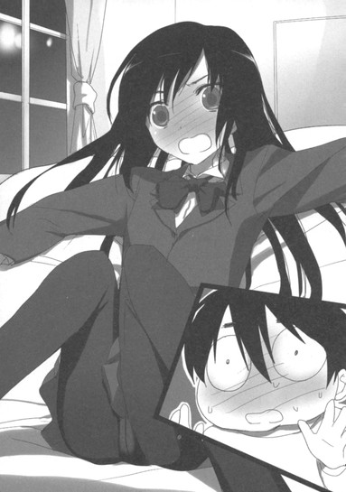
いきなり抱擁を解き、しゅばっと二メートル近くもバックダッシュして、ソファにぶつかって倒れ込む。涙で顔がかなり大変なことになっているのに、本人はそれを忘れてしまったかのように眼を見開き、口をぱくぱくさせている。
やがて顔が、首から額に向けて急激に発赤した。裏返りかけた声が高く響いた。
「な、な、な......、なな何を言ってるんだキミは!!」
「へっ？ あの、え......？ ぼ、僕、ただ、その、べつに」
訳が解らず、同じように口を高速開閉していると、たっぷり十秒ほど経過してから、黒雪姫の顔が上から下へと元の白さに戻り始めた。はあ────っととてつもなく長いため息をつきながら、首を何度も左右に振る。
「............わかったよ」
不意に、黒雪姫は呟いた。
立ち上がり、もう一度ハルユキの前まで歩いてくると、頭にぽんと右手を置く。
「約束するよ。私はキミの傍にいる。ずっと。未来永劫、な」
くしゃくしゃ、と髪をかき混ぜながら、黒雪姫は最上級の笑顔を浮かべて、そう言った。
12
「......有田、俺を殴れ!!頼む、殴ってくれ!!」
何度目かのその台詞とともに、目の前に坊主頭が突き出された。
声の主は、バスケ部員の石尾だ。数日前、ハルユキを屋上に呼び出して一発パンチを見舞った生徒である。
「い、いや、いいよ。もう解ったから」
ハルユキも、何度目かの同じ文句を口にしながら、懸命に逃げ場を探した。
しかし、場所が二年Ｃ組の教壇前、時間が月曜朝のホームルーム、そして右側に四十名の生徒と来れば退路はない。そのうえ石尾の向こうには担任の菅野が立ち、神妙な顔で腕組みしている。進退窮まるとはこのことだ。
石尾は、更にぐうっと顔を近づけ、眉を八の字にしながら言い募った。
「いいや、殴ってくんねーと俺が納得できねーんだよ!!俺、証拠もねえのにお前が盗撮未遂の犯人だって決め付けて......その上一発入れちまって......ほんとなら、俺が処分されてもおかしくねーんだ！なのにお前、先生に何も言わなかった。このままじゃ俺、自分が許せねーよ!!」
......なら自分で自分を殴ってくれよ！
と胸中で悲鳴を上げつつ、ハルユキは助けを求めてチユリを、次にタクムをちらりと見た。しかし二人ともにやにや笑っているだけだ。心の底から状況を面白がっている。
──先週、女子シャワー室のロッカーから小型デジタルカメラが発見された〈盗撮未遂事件〉が急転直下このような展開を辿ったのは、全て黒雪姫の手腕によるものだ。
ネットワークの魔女としか思えないスキルとアイデアで実行された作戦は、実にシンプルかつ即効性のあるものだった。黒雪姫は、学校の紛失備品リストに、発見されたカメラとまったく同じメーカー・型番・シリアルナンバーの記録を紛れ込ませたのである。
ハルユキは当然、そんなことしていいんですか、と問うたが、黒雪姫はあっさりと答えた。曰く、もともとキミと関係ないカメラが、もっと関係なくなるだけだ。
シリアルまで一致するとなれば、もうそのカメラが二年前に紛失した備品であることは疑う余地はない。そしてハルユキは二年前には在学していない。かくして掛けられた嫌疑は一瞬で消滅し、それをホームルームで菅野が報告した途端に石尾が立ち上がり、ハルユキを教壇の前まで引き摺ってきて──このシーンとなったわけだ。
「さあ、殴ってくれ、頼む！」
とまたしても叫ぶ石尾を眺め、ハルユキは内心で呻いた。
──そんなこと言ったって、この教室にもばっちりソーシャルカメラがあるんだぞ。また新しい校則違反の証拠を作るようなもんじゃないか。ていうか菅野センセー、あんたが止めないとだめだろ！なんでそんな妙な顔で見てるんだ！
しかしもう、イッパツ入れない限り石尾は梃子でも引かない決意のようだった。
ため息を呑み込み、ハルユキはぼそっと答えた。
「......じゃ、じゃあ、顔じゃなくてお腹なら」
この角度からのボディブローならカメラに映らないし。と胸中で付け加える。
石尾は、何が嬉しいのか大きく笑うと、よし来い！と体を起こした。
慎重にカメラの視界を計算しながら、右手を握る。
ぎこちない動作でパンチを突き出すと、丸っこい拳が鍛えられた腹筋にぶつかり、ぽよんと跳ね返された。
一瞬不満そうな顔をした石尾は、すぐににやりと笑うと、「いいヤツだなお前」と言って自分の席へと戻っていった。
......手加減なんかしてない、ていうよりけっこう全力だったのに。
内心でしょんぼりしつつも、ふうっと安堵の息を吐き出し、ハルユキも戻ろうとした。
すると後ろから、鹿爪らしい菅野の声が聞こえた。
「......有田。本当にすまなかった。構わないから先生も殴れ!!」
────勘弁してくれ!!
と、ハルユキは声にならない悲鳴を上げた。
とは、言え。
これで全てが一件落着、とはならない。ハルユキには、まだ大きな、そしてあまりにも気の重いミッションが待っている。
即ち、能美征二との交渉である。彼が保存しているはずの、シャワー宝前の隠し撮り動画を処分させなければ、安心して学校に通うことはできない。
昼休みになるや否や、ハルユキは一年の教室がある三階に向かった。
階段の近くで待っていると、数分後、ラウンジに向かうのであろう集団の中に、覚えのある長めの髪が見えた。
能美征二は、同級生数人と、朗らかに談笑しながら歩いてくる。距離が近づくにつれ、ハルユキの手は汗ばみ、動悸が速まる。
──三日前、僕はあいつと、ありったけの憎しみをぶつけ合う極限の戦いをしたんだ。
──そして僕は、あいつのブレイン・バーストを容赦なく奪った。あいつがあれだけ固執していた加速能力を、完全に消滅させた。
ハルユキがそう考える間にも、能美はどんどん近づいてくる。女の子のように長い睫毛が瞬かれ、瞳が廊下の隅に立つハルユキを捉え──。
そして、素通りした。
「............!?」
ハルユキは息を呑んだ。睨まれるか、それとも罵られるかと予想していたのに、無視されるとは。
いや、無視とも違う。
まるで、最初から知りもしないような。何百人もいる、ただの同じ学校の生徒の一人、それだけの存在であるかのような。
ハルユキは無意識のうちに一歩踏み出し、前を通り過ぎようとした能美を呼び止めていた。
「あ、あの！」
立ち止まり、もう一度ハルユキを見てから、能美はただ訝しそうな顔で首をかしげた。
「あの......能美......くん、だよね」
「ええ。ボクに何か？」
何だ。どうなってるんだ。
という混乱を苦労して呑み込み、ハルユキは強張った口を動かした。
「あの、は、話が......あるんだけど」
能美はもう一度胡乱そうな顔をすると、友人たちに向かって、先に学食行っててと言った。
改めてハルユキを見て──。
「何です？」
「え......ええと......」
演技、とは思えなかった。眼前の小柄な一年生は、自分を呼び止めた二年生を、ただただ不思議そうに眺めている。それ以外の感情は、その整った顔に一切存在しない。
まさか、別人なのか？ 双子の兄弟か何かか？
そう思って、ハルユキはとりあえず名乗ってみた。
「あの、僕、有田だけど。二年の、有田春雪......」
すると、能美はぴくりと眉を動かした。顔をしかめ、何かを思い出そうとする気配。
「......アリタ、先輩。............あ、ああ、そうか。ボクと、ネットゲームで遊んでた......」
「......そ、そう......だけど......」
おかしい。何かが、途轍もなくおかしい。
立ち尽くすハルユキを見上げ、能美征二は、尚も懸命に記憶を探るような表情を作りながら──
言った。
「ええと......あのゲーム......、何て名前でしたっけ......？」
この瞬間、ハルユキが感じた激甚な恐怖は、間違いなくバーストリンカーとなって以来最大級のものだった。災禍の鎧クロム・ディザスターと対峙した時より、ダスク・テイカーに翼を奪われた時よりも冷たい戦慄が、激しく背中を這い回った。
──記憶が、制御されている！
もう、そうとしか考えられなかった。
能美征二は、何らかの手段により、ブレイン・バーストに関する記憶のほとんどを消去されているのだ。
彼はもう、覚えていない。自分が〈略奪者〉ダスク・テイカーだったことも。ハルユキたちと死闘を繰り広げたことも。加速世界の存在すらも。
ハルユキの顔にいかなる表情を見て取ったのか、能美は困ったように微笑んだ。
「ああ、もしかして、誘いにきてくれたんですか？でも......すみません、ボクもう、ネットゲームはあんまり、興味ないんで......」
本気で申し訳なさそうな顔を作る下級生を、ハルユキはただ見つめた。
能美の顔に再度怪訝な色が浮かぶ直前、苦労して笑みらしき形に口を動かした。
「そ......そっか。なら......いいんだ。あの......それと。僕の、動画のことは......」
「え、動画......？ すいません、何でしたっけ？」
「............いや、ごめん、何でもない」
小刻みに首を振ると、能美はもう一度微笑み、ぺこりと頭を下げた。
「そうですか。じゃあ、ボクはこれで」
そして、かつてダスク・テイカーの名で呼ばれた少年は、くるりと小柄な体を翻し、早足で階段を降りて、ハルユキの視界から消えた。
よろよろと数歩後ずさり、脂汗にまみれた背中を廊下の壁に頂けて、ハルユキは強く眼をつぶった。
元加速能力者は、加速世界に対して何の干渉もできない。
謎のアバター、ブラック・バイスのその言葉の意味を、ハルユキは今ようやく理解した。
ブレイン・バーストを失ったバーストリンカーは、加速世界に関するあらゆる記憶を失う。ゆえに、何もできない。何もしようとしない。
能美征二もまた、自らの〈親〉である実の兄を強制アンインストールに追い込んだことで、その事実を知っていたのだ。そう、彼は、月光フィールドでアバターを四散させる瞬間、それを認識していた。自分の記憶が消されることを。自己認識に於いては、もう〈元バーストリンカー〉ですらなくなってしまうことを。
「そんな......そんなの............」
一年生の教室の前で、顔を蒼白にさせて呟くハルユキを、生徒たちが不思議そうに眺めていった。
放課後。
学食ラウンジのいつものテーブルで、ハルユキは自分が知ったことをタクムと黒雪姫に説明した。周囲に生徒の姿はまったくない。
説明することにすら、恐怖を覚えないではいられなかった。もしかしたら、ブレイン・バースト・プログラムが発言全てを監視していて、〈アンインストール〉〈記憶〉〈消去〉などのキーワードを検出した途端にハルユキの記憶をも消すのではないかと危惧したからだ。
ゆえにハルユキは、全員のニューロリンカーを外させた上で、早口で語った。
全てを聞き終えてからも、二人はしばらく喋らなかった。
たっぷり三十秒ほども沈黙したのち、黒雪姫が紅茶のカップを取り上げ、唇を湿らせてから囁くように言った。
「......君たちも、不思議に思ったことはあるはずだ。なぜ七年半ものあいだ、加速世界の存在がこうも完璧に秘匿され続けているのか」
「............ええ」
ハルユキはこくりと頷いた。
「もし僕なら、ブレイン・バーストをなくしたら、ヤケになってネットとかマスコミとかにぜんぶ暴露して、加速世界を道連れにしかねないなーって......」
「おいおい、自分の話か」
黒雪姫は仄かに苦笑し、カップを置いて続けた。
「しかしまあ、そう考える者......そして実行に移す者は必ずいるはずだ。だが、なぜかそうはならない。理由は色々推測されていた。子供がマスコミに、証拠もなしに何を言っても信じてもらえないから。あらゆるネットワークに、ブレイン・バーストの情報を削除するシステムが食い込んでいるから。そしてその一つとして......私も、噂レベルでは聞いていたのだ」
黒い瞳が鋭く細められる。いっそう密やかさを増した声が流れる。
「......ブレイン・バーストは、消滅する時、その記憶をも道連れにする、と。だが......自分の眼で確認するまで信じるまいと、いや、信じたくないと思っていた。しかし、よもや............真実、だったとはな」
再び、沈黙。
剣道部の休憩時間中で、道着姿のままのタクムが、押し殺した声で訊ねた。
「しかし、マスター。そもそも、可能なんでしょうか。一アプリケーションが、ユーザーの、いや人間の記憶を消す......なんてことが......」
「──原理的には不可能ではない、と聞いたことはある」
黒雪姫は、白いテーブルの上に置かれた三つのデバイスを見つめながら答えた。
「量子通信機器は、厳密に言えば、生体器官としての脳にアクセスしているわけではないのだ」
「え......じゃ、じゃあ何と接続を......？」
眉を寄せるハルユキに視線を移し、漆黒の瞳でじっと眼を覗き込んでくる。
「私もきちんと理解しているわけではないんだけどな。脳細胞には、微小管構造というものがあって、そこには人の意識の本質たる光量子が封じ込められている、ニューロリンカーは、その量子がスピンとベクトルによって保持しているデータそのものを読み取り、また書き換える。そのレベルに於いては、感覚情報だろうと記憶情報だろうとデータ形式に違いはない」
「............つまり、僕たちに仮想世界を見せ、触れさせるのと同じように、ニューロリンカーは僕たちの記憶を読み、書き換えられる......ってことですか」
呻くようにハルユキがそう言うと、黒雪姫は強く首を横に振った。
「全て仮説だ。それにもし、原理的にそれが可能なのだとしても、市販機器であるニューロリンカーにそんな機能が搭載されているとは思えん。──思えない、が......」
──能美征二は、現実に、記憶を失っている。
誰も口には出さなかったが、三人ともにそう考えたことは確かだった。
再び、幾ばくかの沈黙を経て、黒雪姫がきっぱりと言った。
「これ以上は、議論しても無駄だ。答えを知りたければ、レベル10に到達し、ブレイン・バーストの開発者に訊くしかない」
「......そう、ですよね。最初から、それが僕たちの目標なんですから......」
こくりと頷いてから、ハルユキは恐る恐るタクムに訊ねた。
「......で、能美の様子は、どうなんだ......？」
「すっかり普通の一年生部員だよ。憑き物が落ちる......っていうのは、ああいうことなのかな。今までも表面上は明るかったから、ぼくらでないと違いは解らないかもしれないけど」
一呼吸置いて、タクムは掠れた声で呟いた。
「ハル、ぼくは、思わずにはいられないよ......。今の能美とぼくたちは、どちらが正常でどちらが異常なのか、って......」
「決まっているさ。我々が異常なのだ」
と、即断したのは黒雪姫だった。
椅子の背もたれに体を預け、黒のストッキングに包まれた脚をひらりと組むその仕草は、すっかりいつもの威厳を取り戻していた。
黒の王は、配下の二人を順に見やり、不敵な笑みとともに付け加えた。
「しかし、自ら選んだ道だ。そうだろう？」
ぱちくりと瞬きしてから、タクムも小さく笑った。
「......まったく、その通りですね、マスター。おっと、それじゃぼくは戻ります。ええと......この話、チーちゃんには......」
「ああ。彼女には、いまのところは伏せておこう」
ぺこりと頭を下げてタクムは席を立つと、卓上の青いニューロリンカーを取り上げ、黒袴を揺らしながら小走りに去っていった。
彼の姿が見えなくなってから、黒雪姫はじっとハルユキを見つめ、それにな、と小さく囁いた。
「──私は、たとえブレイン・バーストを失い、加速世界の記憶を全て消されても......キミのことだけは忘れない。絶対に忘れない」
ハルユキは、胸の奥をぎゅっと掴まれるような感覚をおぼえながら、懸命に言葉を返した。
「はい。僕も......、僕もです。忘れません、先輩のことだけは」
「ああ、信じているよ」
にこりと微笑み、黒雪姫は大きくひとつ頷いて、言った。
「それでは、これで、この一連の事件はひとまず終わった、ということかな？」
その問いに対して、ハルユキはしばし逡巡したあと、ゆっくり首を横に振った。
「いいえ。......もう、一つだけ、僕には約束があるんです」
「ほう、何だ？」
と、首をかしげる黒雪姫に向かって。
ハルユキは、大きく頭を下げながら言った。
「──お願いします。僕に自分の翼を貸してくれた、あの人......スカイ・レイカーさんに、会わせてください」
午後五時。
ハルユキと黒雪姫は、連れ立って梅郷中の校門から出た。
無言で青梅街道を歩き、途中で北に折れる。細い道を辿って、高円寺駅を目指す。
かなり躊躇った上で黒雪姫が送ったタイプメールに、十分後返ってきたのは、時間と場所を指定する二行の文字列だけだった。
その待ち合わせ場所である、新宿駅南口のサザンテラスに向かうため、二人は駅から中央線に乗った。
黒雪姫はずっと沈黙したままだった。その胸中にどのような思いが去来しているのか、ハルユキには推測するすべはなかった。
飛行アビリティを取り戻した以上、スカイ・レイカーには強化外装〈ゲイルスラスター〉を返さなくてはならない。それがあの人との約束だ。
しかしハルユキは迂闊にも、現実世界での連絡先を訊き忘れていた。ゆえに、恐らく匿名アドレスくらいなら知っているであろう黒雪姫に頼んだのだ。
厳密に言えば、スカイ・レイカーの〈子〉であるアッシュ・ローラーにもう一度頼むという手段もあるにはあった。しかしハルユキは、敢えて黒雪姫に縋ることを選んだ、その上で、自分は帰ると言い出した彼女に、更なる無理を言って付いてきてもらったのである。
自分のしていることが、正しいのかそうでないのか、ハルユキには解らなかった。
しかし、ハルユキに強化外装を譲渡してくれたあの朝、スカイ・レイカーが見せた一瞬の表情は強く記憶に焼きついている。
愚かさゆえに友情を失ってしまった。
加速世界の隠者は、ハルユキにそう言った。
彼女と黒雪姫のあいだに起きた出来事を一切知らないハルユキには、何を言う権利も、する権利もないのかもしれない。
でも、とハルユキは思う。たとえ本当に失われたのだとしても、それをもう一度取り戻していけない理由があるだろうか？だって、二人とも、相手のことを覚えているのだ。沢山の思い出を、共に戦った時間を、その胸に刻んでいるのだ。
そう──、きっと、記憶がまだ二人を繋いでいる。
電車が緩やかにホームへと滑り込み、多くの乗客に混じってハルユキと黒雪姫はエスカレーターを上がると、そのまま正面に広く開いている南口から外に出た。
新宿サザンテラスは、ピラミッド型の巨大な階層構造となったショッピングモールだ。賑わう買い物客の間をすり抜け、二人は中央エスカレーターに乗った。
黒雪姫は、相変わらず無言だった。
何か言うべきなのかもしれない、きっとそうなんだろう、と思いつつもハルユキには何も言えなかった。
巨大な自動階段は、賑々しい広告パネルの間を抜けて、二人を運ぶ。やがてピラミッドの頂上に到着する。
最上階のオープンテラスは、地上百メートルに達している。もちろん、周囲の高層建築には及ぶべくもないが、それでも新宿駅のターミナルと無数の線路、そこを行き交う色とりどりの電車が一望できる。夕方はまだまだ肌寒く、吹きさらしのこの場所に、人影はごく少ない。
ハルユキと黒雪姫は、最北端の手すりまで移動すると、並んで眼下の夕景に見入りながら、約束の時間を待った。
午後、五時三十分。
ハルユキの耳に、後ろからこつ、こつと近づく小さな足音が届いた。
大きく息を吸い──振り向く。少し遅れて、黒雪姫も。
赤紫色の雲を背景に、あの人が微笑みながら立っていた。
柔らかそうな長い髪が微風に揺れる。制服のスカートがなびき、白い手がそれを押さえる。
オーバーニータイツに包まれた脚を、更に一歩動かし──。
旧東京タワーに住まう隠者、第一期ネガ・ネビュラスメンバー、レベル８バーストリンカー〈スカイ・レイカー〉は、まずハルユキに向けて言った。
「こんばんは、鴉さん」
そして、視線を隣の黒雪姫に向け。微笑みの色をわずかに変えて、もう一度。
「......こんばんは、ロータス」
幾つもの感情が胸につかえ、ハルユキはただ頭を深く下げることしかできなかった。しかし、黒雪姫は、スカイ・レイカーのそれとよく似た笑みを浮かべ、言った。
「久しいな、レイカー」
「......ええ、本当に。現実世界では、三年ぶり。加速世界では......もう、どれくらいになるのか解らないわね」
「まったくだ」
ふふ、と同時に笑い声を上げたが、二人はそれ以上近づこうとしなかった。
ハルユキはぎゅっと唇を噛み、数歩進み出ると、もう一度頭を下げた。
「あの......レイカーさん。お返しします......あなたの、翼を」
スカイ・レイカーは、優しい笑顔でそっと頷いた。
「取り戻したのですね。あなたの銀翼......いえ、希望を」
「はい。ぜんぶ、あなたのお陰です」
そしてハルユキは、用意していたＸＳＢケーブルをポケットから出すと、片方の端子を自分のニューロリンカーに挿入し、もう片方を差し出した。
スカイ・レイカーはそれを受け取り、躊躇わずに自分のニューロリンカーに繋いだ。
直結対戦による強化外装の再譲渡は、一切の会話なしに、素早く行われた。譲渡要請窓を出し、受諾され、ドロー申請を出し、それも受諾されたところでバーストアウト。
一瞬で現実世界に戻った時には、もう〈ゲイルスラスター〉は本来の主のもとへと還っていた。ぴっとケーブルを抜くとハルユキに返し、スカイ・レイカーはもう一度微笑んだ。
「確かに、受け取りました。............じゃあ、わたしはこれで」
そして黒雪姫を見て──軽く、一礼。
かすかなサーボ音を響かせて一歩、二歩下がると、スカイ・レイカーは小さく唇を動かした。
「......鴉さん。あなたなら、わたしの届かなかった高さまで、きっと飛べる。応援してるわ。......がんばって」
にこりと笑い、軽いウインクを残しながら振り向く。そのまま、しっかりした足取りで歩いていく。
だが、ハルユキは、確かに見た。
ぱちりと瞬かれた眼から零れ、空中に銀色の軌跡を描いた、小さな光の粒を。
後ろ手に鞄を下げ、スカイ・レイカーは緩みない足取りで遠ざかっていく。
夕空の下で、その後ろ姿が徐々にシルエットへと変わる。
不意に、今までずっと黙っていた黒雪姫が、よろめくような足取りで数歩前に出た。
だが、ハルユキの少し先で立ち止まり、何かに耐えるように、両手をぎゅっと握る。
──先輩。
────先輩!!
ハルユキは、胸の奥で叫んだ。
お願いです、黒雪姫先輩。あの人は、あなたの言葉を待ってる。その手を待ってるんだ。だから、ほら............、
ほら！
ハルユキは、ありったけの心意を振り絞り、すぐ目の前にある黒雪姫の背中を、手を動かさずに押した。
瞬間。
たたっ、と更に何歩か走り。
黒雪姫は、凛とした声で叫んだ。
「レイカー!!」
遠ざかりつつあった背中が、震え、立ち止まった。黒雪姫は、両肩をわななかせて大きく息を吸い、もう一度叫んだ。
「......帰ってこい、フーコ！ 私には、お前が必要だ!!」
その声を聞いた途端、スカイ・レイカーは深く俯いた。
左脚が、もう一歩、前へ──。
出ようとしたが、しかし、止まった。まるで、その義足を制御するＣＰＵが、本人の命令に抗うかのように。魂から出力される、ほんとうの感情に従うかのように。
少しずつ、少しずつ脚が後ろに引かれ。
スカイ・レイカーは、ゆっくり、ゆっくりと振り向いた。
唇が動き、ごくかすかな声が発せられた。
「......サッちゃん」
そして、無音の問い。
────いいの？
黒雪姫は、大きく頷き、もう一度呼んだ。
「......フーコ」
直後、二人の少女は、互いを目指して走りはじめた。
同時に鞄を放り出す。走るスピードは黒雪姫のほうがわずかに早く、そのぶん、スカイ・レイカーが両腕で受け止めるような形になった。
自分より少しだけ背の低い黒髪の少女を胸に抱きとめ、フーコと呼ばれた女性は、くしゃりと大きく顔を歪めた。
その頬に、ぼろぼろっと大粒の涙が零れた。
「う......うああん............」
まるで、このテラスに現れた時からずっと──。
いや、あの旧東京タワーに隠れ住むようになったその時からずっと堪えていたかのように、スカイ・レイカーは顔を黒雪姫の髪に埋め、感情を解き放った。
「ああん......わあああああん！」
泣きじゃくるその声に、密やかな黒雪姫の嗚咽も混じってハルユキにまで届いた。
もうそれ以上、その余りにも美しく、余りにも貴い光景を見ていられず、ハルユキは自分の涙が零れないように真上を向いた。
青から茜色に変わりながらどこまでも続く空の真ん中、ずっと高いところを、白い雲を細く引いて飛翔する飛行機がきらりと銀色に輝いた。
あとがき
川原礫です。私の今年初めての本をお手に取って頂きありがとうございます。
それにしても二〇一〇年ですよ......。あまりに未来すぎて呆然とします。存在するのが当たり前になっちゃってますけど、私が子供の頃は、ＳＤメモリカードとかブルーレイディスクとかタッチパネル式携帯電話とかは完璧にＳＦガジェットだったものです。ちなみに私が最初に買ったＨＤＤは容量二〇メガバイトでしたが、今春には容量六四ギガバイトのＳＤカードが発売されるそうです......。
そろそろ技術の進歩についていけない気がする昨今ですが、今のところフルダイブ型ＶＲマシンが登場する気配はないので、それまではがんばろう！と思ったりしています。私の夢は老後にネトゲ廃人になることですので、その頃までにはひとつ宜しくお願いします→メーカー各社さま。
さて、ここで例によってごめんなさいのコーナーを......。
前巻、『夕闇の略奪者』がひど過ぎる引きで終わってしまってすみませんでした！
あのような終わり方となった最大の理由は〈単に終わらなかったから〉ですが、その他にも僅かばかり意図した部分があると言えばあります。
私は長らく、〈本のページ〉というものにそこはかとない不満を感じていたんですね。読み進めると、残りページがどんどん減っていくわけですが、その現象は「あとこれだけ読んだら終わりますよ』という情報を否応なく伝えてくるわけです。映画に喩えれば、画面の右下に常に残り時間のバーが表示されてるようなもんじゃないですか！......とか、そんな当たり前のことに引っかかるのは、私がずっとオンライン小説の書き手／読み手だったからかもしれませんが。あれはいつ終わるのか、体感的には解りませんから（笑）。
ともかく、その紙の本ゆえのネタバレ情報を回避するには、〈字がだんだん小さくなる〉〈紙がだんだん薄くなる〉くらいしか思いつかないわけですが、たぶん担当さんに「やらして」って言っても笑顔で「ムリっす」って言われて終わる気がしましたので、それらに比べれば現実的手段であるところの〈終わらない〉というのを採用してみた次第です。
おそらく、前情報なしに三巻を読んでくださった方は、最終ページで「なんじゃそりゃ！」というやるせない怒りとともに、いくばくかの驚きもお感じになったことと思います。もしそうであれば、私の意図は達せられたことになります。もちろん、予告なしの上下巻構成というのはある種の裏切りに他ならないので、それにつきましては全力でお詫びいたします。本ッ当にすみませんでした！ごめんなさい！もうしません多分！
と、ここまで書いて、あとがきがいつもの二ページに収まらないことに気付きました。なので開き直って言い訳コーナーを続けちゃいます。
今巻の最後のほうに、『脳の〈微小管構造〉内の量子が人の意識を作る』というような記述が出てきますが、これは実在する〈量子脳理論〉というものから言葉だけを頂いた完全なる創作設定です。本物の量子脳理論はまったく別物にして果てしなく難解で、私もさっぱり理解できません。興味をお持ちになった方は、ロジャー・ペンローズという人が本を書いていますので読んでみてください。そして、あとでこっそり私に噛み砕いて教えてください（笑）。
そしてもうひとつ......またもや新たなる女性キャラクターが登場していますが、これに関してはもう皆さん諦めておいでですよね！ね！私も諦めていますしきっと黒雪姫先輩も諦めているに違いない......。
巻を重ねるごとに、女の子キャラを最低一人新規にデザインして頂いているイラストのＨＩＭＡさん、今回もお世話になりました！また、今回原稿が遅れに遅れまして、担当の三木さんともども大変なご迷惑をおかけしました......。三木さんは先日の打ち合わせの際、頭がさっぱりしていらしたので「髪切ったんすね」って言ったら「ようやく切る時間ができたので」と言っておられてホロリときました。今年もどうぞ宜しくお願いいたします（とか言って、このあとがきの締め切りも現時点で一〇分オーバーしてますが......）。
そして最後になりましたが、私の本を読んでくださっておられる皆様も、去年に引き続き今年もどうぞ宜しくお付き合いくださいませ！
二〇一〇年が、どなたにも素敵な年となりますように。
底本：アクセル・ワールド４ ─蒼空への飛翔─
川原 礫
二〇一〇年二月十日 初版発行